| 魔法科高校の劣等生(3) 九校戦編〈上〉 (電撃文庫) | |
| 佐島 勤 | |
| (2016) | |
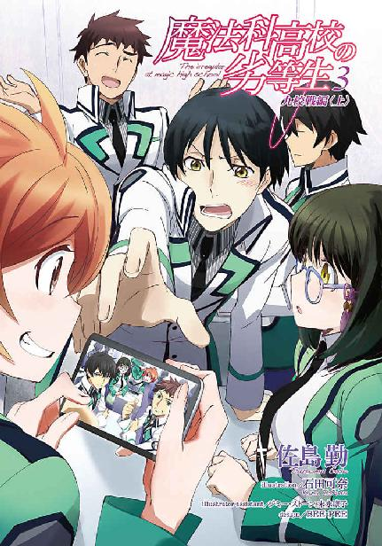
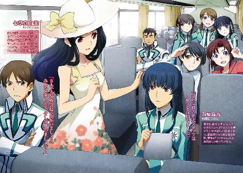
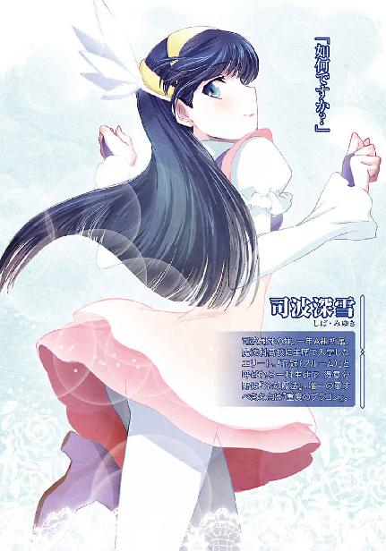
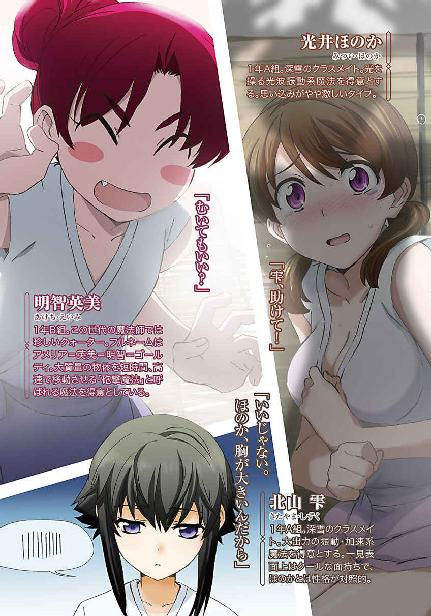
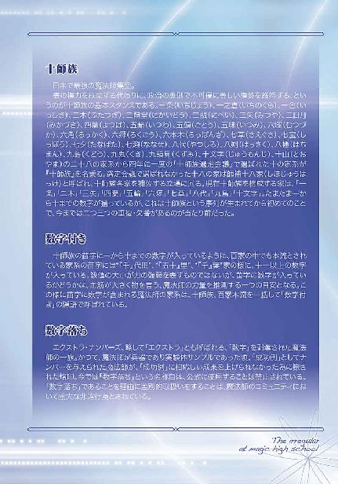
本書（電子版）に掲載されているコンテンツ（ソフトウェア／プログラム／データ／情報を含む）の著作権およびその他の権利は、すべて株式会社ＫＡＤＯＫＡＷＡおよび正当な権利を有する第三者に帰属しています。
法律の定めがある場合または権利者の明示的な承諾がある場合を除き、これらのコンテンツを複製・転載、改変・編集、翻案・翻訳、放送・出版、公衆送信（送信可能化を含む）・再配信、販売・頒布、貸与等に使用することはできません。
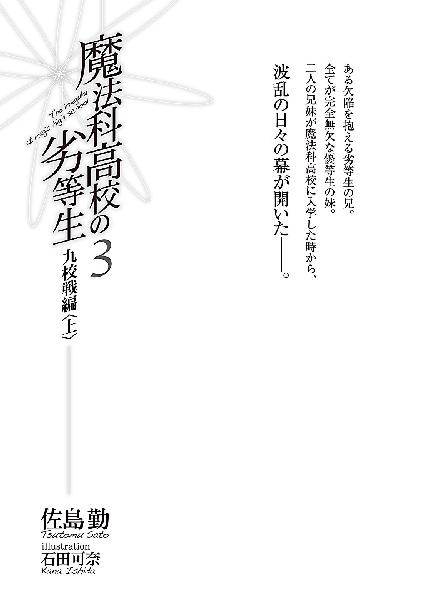
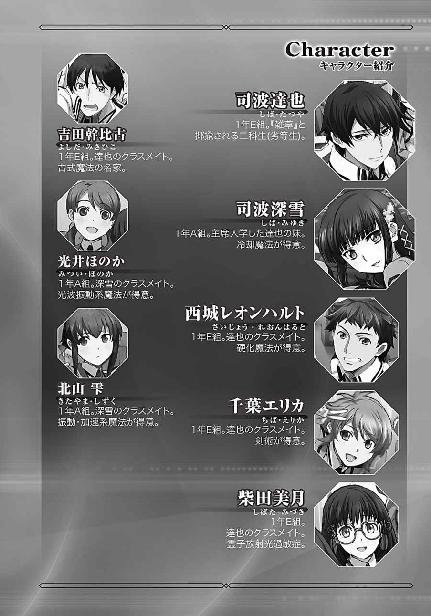
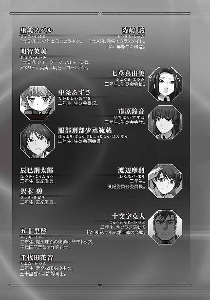
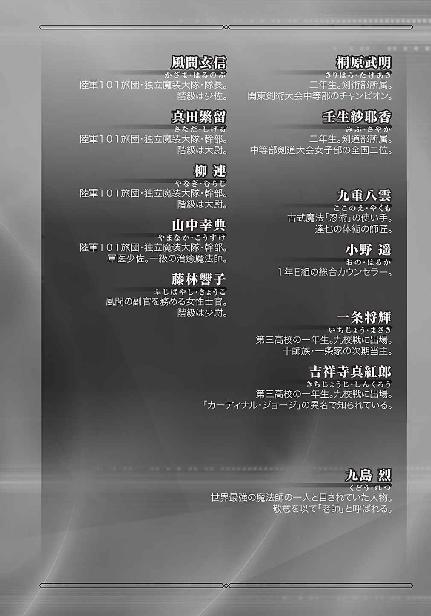
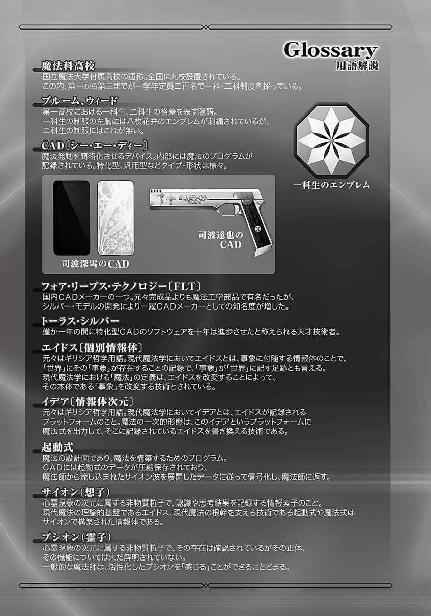
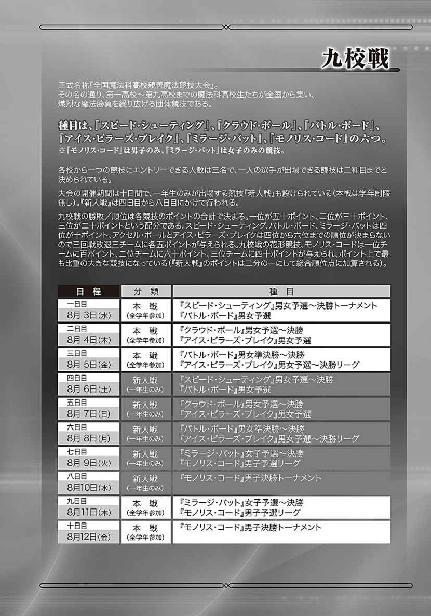
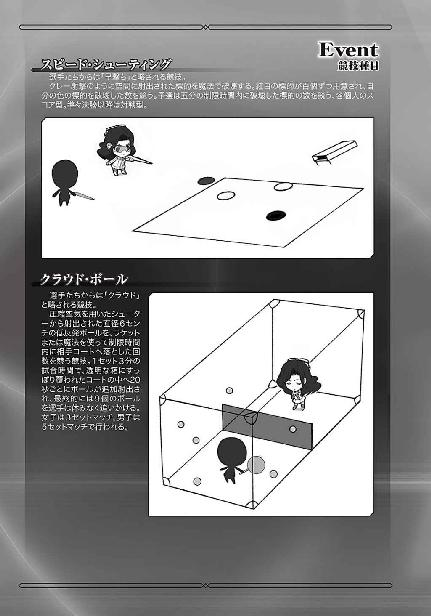
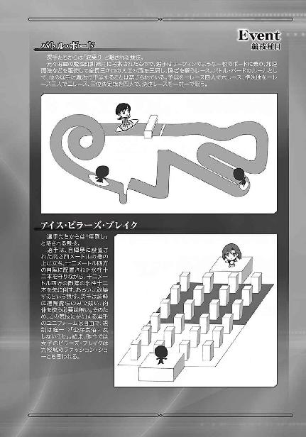
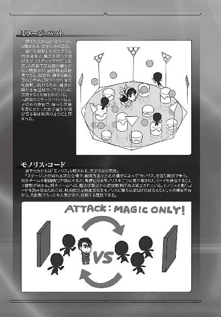
［０］
国立魔法大学付属魔法科高校は現在、全国に九つ存在する。
関東（東京）に第一高校。近畿（兵庫）に第二高校。北陸（石川）に第三高校。東海（静岡）に第四高校。東北（宮城）に第五高校。山陰（島根）に第六高校。四国（高知）に第七高校。北海道に第八高校。九州（熊本）に第九高校。
魔法科高校は、全国にこの九校しかない。国立魔法大学の付属高校が九校しかないのではなく、正規課程として魔法教育を行っている高校がこの九校しかないのだ。
本音を言えば、政府はもっと魔法科高校を増やしたいと考えている。それができないのは、教師となる魔法師の数を確保できない為だ。
第一高校、第二高校、第三高校の一学年定員が二百名。他の六校は一学年百名。合計、一学年千二百名。これがこの国の、一年間当たりで新たな魔法師を供給できる数の上限だ。それは人口対比で見た有効レベルの魔法的素質を持つ少年少女の数とほぼ等しい、と考えられている。しかし同時に、適切な教育機会を用意できれば才能の開花が遅い潜在的な魔法適性を持つ子供たちを発掘できる可能性も低くない、と考えられている。
だが現実は、九つの魔法科高校を運営するだけでこの国の人的資源は精一杯だ。故に、一学年千二百人の魔法科高校生たちを可能な限り鍛え上げ、能力を底上げすることで魔法師という重要かつ貴重な人的資源を充実させていくしかない。そうすることで将来の教師不足を解消し、今より更に多くの魔法師を育成するという正のスパイラルも期待し得る。
その為に取られている方策の一つが、魔法科高校九校を学校単位で競争させ、生徒の向上心を煽ること。その為の最大の舞台が、夏の九校戦。
全国魔法科高校親善魔法競技大会。
そこには毎年、全国から選りすぐりの魔法科高校生たちが集い、その若きプライドを賭けて栄光と挫折の物語を繰り広げる。
政府関係者、魔法関係者のみならず、一般企業や海外からも大勢の観客と研究者とスカウトを集める魔法科高校生たちの晴れ舞台だ。
今年も、もうすぐ、その幕が上がる。
［１］
西暦二〇九五年、七月中旬。
ここ国立魔法大学付属第一高校では先週、一学期の定期試験が終わり、生徒たちのエネルギーは一気に夏の九校戦準備へ向かっていた。しかし彼、司波達也は、校内に充満するその熱気に乗ることができずにいた。彼が醒めた性格だから、という理由も有るには有ったが、今日に限って言えば定期試験の結果に絡んで教師から呼び出しを喰らったのが主な理由だ。
「達也」
「レオ......どうしたんだ、皆揃って」
達也がようやく生徒指導室から解放されると、そこにはクラスメイトの西城レオンハルト、千葉エリカ、柴田美月が待っていた。
達也の妹の深雪は生徒会役員として、九校戦の準備でどうしても先に生徒会室へ行かなければならない、という事情で、ここにはいない。
その代わり、とでも言うように、深雪と同じクラスの光井ほのかと北山雫まで心配そうな顔を並べていた。
指導室は教職員用フロアにあり、生徒が使う教室は同じ棟の同じ階にはない。
だが、生徒が全く通らないというわけでもない。
通りかかった同級生も上級生も、達也とその前に並ぶ五人を、こっそり、あるいはジロジロ、あるいはさり気なく、横目で見て行く。
それも、無理がないことだった。
彼らは目立っていた。
もっともそれは、今ばかりのことでも今日ばかりのことでもなく、いつものことだった。
二科生でありながら風紀委員に選ばれ、新入部員勧誘週間の、数々の武勇伝でその抜擢が伊達でなかったことを示した達也は、全校的な有名人になった。その直後にテロ組織を潰したことは秘密とされているが、新入部員勧誘週間の活躍だけで、同級生のみならず上級生の注目まで集めるには十分な理由だった。
エリカは、十人が十人とも認めるだろう、陽性の美少女。
美月も、普段は深雪とエリカの二人に挟まれている為か地味なイメージを持たれているが、顔立ち自体は大人しげな癒し系美少女で、主に上級生の間で密かな人気を集めていたりする。
レオはエリカにこそボロカスに貶されているが（もっとも、ほぼ百パーセント「憎まれ口」の類いだ）、ゲルマン的な彫りの深い顔立ちと卓越した運動神経で、女子生徒の間では「ちょっと気になる男の子」の地位を確立している。（レオの言う「純日本風」は黒髪黒目のことらしい）
それに加えてほのかと雫は、一年一科生の中でも特に成績優秀な二人。容姿も十分、可愛いと評される範疇だ。（結局、容姿の面では達也が一番平凡ということになる）
これだけのメンバーが、一科、二科の枠を超えて連んでいれば、嫌でも目立つ。
それでも今は、主席入学、今年度新入生総代、生徒会役員の肩書きに加えて、稀代の美少女である深雪がいない為か、視線の纏わり付き具合がいつもに比べて、まだ大人しい。
もっとも、そんな視線を気にも留めない人間も、割りと身近にいるものだが。
例えば、この男のように。
「どうした、ってのはこっちのセリフだぜ。指導室に呼ばれるなんて、いったいどうしたんだよ？」
レオの答えに、達也はなるほど、と思った。
どうやらこの友人たちは、自分を心配して集まってくれたらしい。一瞬、適当に誤魔化そうか、という考えが達也の意識を過ったが、それでは彼女たちに不誠実だろう、と考え直した。
「実技試験のことで訊問を受けていた」
これを聞いて、レオが不機嫌そうに目を細めた。
「......訊問とは穏やかじゃねえな。何を訊かれたんだ？」
「要約すると、手を抜いているんじゃないか、って疑われていたようだな」
達也の答えに、まずエリカが憤慨を見せた。
「何それ？ そんなことしたって、達也くんには何のメリットも無いじゃない。バッカみたい」
全くエリカの言うとおりなので、達也はただ、苦笑で応えた。点数を上げる為の不正ならともかく、わざと悪い点数を取ることに何の意味があるというのか、エリカの言うとおりバカバカしい嫌疑だった。
「でも、先生がそう思いたくなる気持ちも、分かる気がする」
「どうしてですか？」
雫の呟きに、美月が小首を傾げた。
「それだけ達也さんの成績が、衝撃的だったということですよ」
ほのかの答えに、胸を張るわけにも行かず、然りとて謙遜は嫌味で有り、表情の選択に窮した達也は、もう一度苦笑いを浮かべた。
第一高校の、というより魔法科高校の定期試験は魔法理論の記述式テストと魔法の実技テストにより行われる。
一方、語学や数学、科学、社会学等の一般教科は、普段の提出課題によって評価される。魔法師を育成する為の高等教育機関なのだから、魔法以外で生徒を競わせるのは余計なことだ、と考えられているのだ。（達也たちは魔法師と魔工師を区別しているが、それは彼らの進路がこの二つで明確に区分されるからであって、社会の一般的な分類では、魔工師は魔法師の一種であり、魔法を使えない魔法工学技術者のことを魔工師とは呼ばない）
記述式テストが行われる魔法理論は、必修である基礎魔法学と魔法工学、選択科目の魔法幾何学・魔法言語学・魔法薬学・魔法構造学の内から二科目、魔法史学・魔法系統学の内から一科目、合計五科目。
魔法実技は処理能力（魔法式を構築する速度）を見るもの、キャパシティ（構築し得る魔法式の規模）を見るもの、干渉力（魔法式が「事象に付随する情報体」を書き換える強さ）を見るもの、この三つを合わせた総合的な魔法力を見るものの四種類。
成績優秀者は、学内ネットで氏名を公表される。
一年生の成績も、無論、公表済みだ。
理論・実技を合算した総合点による上位者は、順当な結果となった。
一位、司波深雪。
二位、光井ほのか。
三位、僅差で、北山雫。
ここまでＡ組の名前が続き、四位にようやくＢ組の十三束という男子生徒の名前が出て来る。馴染みのある名前では他に、森崎が九位。氏名公表の対象となる上位二十名、全て一科生だ。
実技のみの点数でも、総合順位から多少順位の変動が見られるが、やはりランクインしているのは一科生のみ。
具体的には、一位が深雪、二位が雫、三位が森崎、四位がほのかと、総合成績に続きこちらもＡ組が上位を独占する形となり、教師陣を少しばかり悩ませている。（クラス編成は入試の結果でＡ～Ｄ組の一科生各クラス平均が均等になるように割り振られており、この結果は一学期の習熟度合いでＡ組と他クラスの間に明確な格差が生じているということを意味していた）
だがこれが理論のみの点数になると、大番狂わせの様相を呈してしまう。
一位、Ｅ組、司波達也。
二位、Ａ組、司波深雪。
三位、Ｅ組、吉田幹比古。
四位がほのか、十位に雫、十七位に美月、二十位にエリカ、レオと森崎はランク外。
確かに一科生と二科生の区分けには実技の成績が大きな比重を占めているが、普通は実技ができなければ理論も十分理解できない。感覚的に分からなければ、理論的にも理解が難しい概念が多数存在するからだ。
それなのに、トップスリーの内、二人が二科生。
これだけでも前代未聞なのだが、更に達也の場合、平均点で──合計点ではなく──二位以下を十点以上引き離した、ダントツの一位だったのだ。
「いくら理論と実技は別だといっても、限度がある」
「でも、達也さんが手抜きなんて、考えられません」
客観的な評価をして見せた雫に、美月が少しむきになって反論すると、
「そんなことは雫にも分かっていますよ」
「でも先生はあたしたちみたいに、達也くんの人となりを直接知ってるってわけじゃないしね」
ほのかとエリカが二人掛かりで宥めに入った。
「そうだな。向こうは端末越しにしか俺たちのことを知らないわけだし......」
レオの言うとおり、これは現代式教育の大きな欠陥の一つと言えるだろう。もっとも、前世紀風に同じ教室で教鞭を取っていても、生徒の内面が理解できるとは限らないが。
それに現代の学校では、こうした問題に対処する為、前世紀の担任制度に代わるポストが設けられている。
「......そうだなぁ、遥ちゃんに相談してみたらどうだ？」
学校に対する不満、学校とのトラブルの相談も、カウンセラーの職務とされている。「遥ちゃん」という呼称の是非はともかく、提案自体は妥当なものだったが、達也は首を横に振った。
「小野先生とは、昨日既に話しているんだ。実は、今日の呼び出しのことも概要は聞いていた」
「当てにならないセンセイね」
「まあそう言うな。もとより新米カウンセラーに、そう大した権限があるはずもない」
歯に衣着せぬエリカの物言いを、達也は笑ってたしなめる。
「......達也くんの方がよっぽど酷いこと言ってるんですけど」
だが確かにエリカの指摘するとおり、達也の方が余程遠慮の無い言い種と言える。
「おおぅっ？」
その的確なツッコミに、レオが奇声を上げた。
「......なによ」
半眼で問い返すエリカ。
「この女がまともなことを言ってるぜ」
目を丸くして、独り言のように呟くレオ。
「黙りなさい」
エリカが、硬く丸めたノートを振り下ろした。
ちなみに、情報システムがこれだけ発達した現代においても、紙のノートの需要は無くなっていない。特に魔法科学校では、字を書くこと自体に重要な意味がある魔法言語学や、情報端末より手で書く方が容易な図形を扱う魔法幾何学のような授業があるので、ノートを持ち歩く生徒は普通科学校に比べ多いと言える。もっとも、教室移動でもないのに廊下で何故ノートを持っていたのかは、疑問と言えば疑問だ。
「ってぇ......」
振り下ろされたノートを避けることができず、頭を押さえ、蹲るレオ。彼も無抵抗で殴られているわけではないのだが、避けようとするレオの反射速度よりもそれを追いかけるエリカの技術の方が今のところ一枚上手だ。その為（？）、こういうシーンで、彼が余計な一言を口にして痛い目に会うのは、いつものことだった。
「......この暴力女、オレの頭は太鼓じゃねぞ！」
レオの真っ当な抗議を、エリカはそっぽを向くことで聞き流す。
三ヶ月も同じようなイベントが繰り返されればさすがに慣れるのか、当初はオロオロするばかりだった美月も、困惑気味な笑みを浮かべながら、二人のコミュニケーションに余計な口出しはしない。その代わり脱線していた場の流れを元に戻すことで、それ以上のエスカレーションを未然に防いだ。
「それで達也さん、先生の誤解は解けたんですか？」
「ああ、まあ、一応ね」
「一応？」
美月の示した短い疑問の声に、達也は気が進まない風な表情と口調で説明を付け加えた。
「手抜きじゃないと理解はしてもらえたよ。その代わり、転校を勧められたが」
「転校っ？」
「そんな、何故ですっ？」
血相を変えて叫んだのは美月とほのかだが、他の三人も似たような顔をしていた。
「第四高校は九校の中でも特に魔法工学に力を入れているから、俺には向いているんじゃないか、ってね。もちろん断ったが」
ホッと胸を撫で下ろした二人と、憤慨を顕にする二人。
前者が美月とほのか、後者がレオとエリカ。
なお、残る一人は内面の窺い知れぬポーカーフェイスを維持していた。
「......実技が苦手だから、実技ができなくても良い学校に行けってのは、学校として自己否定じゃねえのか？ 成績が悪くてついて行けない、ってんならまだしも、達也は実技でも合格点はクリアしてるのによ」
「目障りなんでしょ。下手すりゃ、センセイたちより達也くんの方が魔法について良く知ってるから」
「少し落ち着けよ、二人とも」
レオもエリカも、放っておくとどこまでも燃え上がってしまいそうな勢いだったので、達也は消火活動に着手した。
「レオの言うとおり、たとえ赤点ギリギリであっても落第しなきゃ強制もされないんだから実害は無いって。もしかしたら、本当に善意だったのかもしれないしな。まっ、だとしたら、随分と無神経な善意ではあるが。独善というヤツだ」
達也がサラリとした口調で綴った辛辣な評価に、義憤に燃えていたはずの二人がたじろぐ。狙いどおりの冷却効果ならば中々に深謀と言えるだろうが、残念ながら今回は結果的に、という色合いが濃かった。
「でも、そもそもの前提が間違ってる時点で教師としてダメだと思う」
次の発言が何となく躊躇われる空気の中、独特の平板な口調で雫がフォローともそうでないともつかぬセリフを口にする。そのおかげで達也の吐き出した毒が薄れたのだから、これまた結果的に、ではあるが、フォローなのだろう、これは。
「四高は実技を軽視しているわけじゃない。九校戦の成績に反映するような戦闘向きの魔法より、技術的な意義の高い複雑で工程の多い魔法を重視してるだけ」
「そうなんですか？ 雫さん、よく知ってますね」
「従兄が四高に通ってるから」
美月の問いに答えた雫の言葉に、ほのかを除く四人は「なるほど」と頷いた。四校の生徒から直接聞いたのであれば、確実な情報だろう。
一同は雫の言葉に頷くと同時に、達也を呼び出した教師に対する不信感を募らせた。
もっとも、この場にいない他人（つまり教師）に、若い彼らの興味がいつまでも留まり続けるものでもない。
「そういや、もうすぐ九校戦の時期じゃね？」
雫のセリフに連想が働いたのであろうレオの言葉に、達也が頷きを返した。
「深雪がぼやいていたよ。作業車とか工具とかユニフォームとか、準備する物が多いって」
「深雪さん、ご自身も出場されるんでしょう？ 大変ですよね」
美月が見せ掛けではなく深雪を案じる言葉を口にすると、
「深雪なら新人戦なんて楽勝っぽいけどね。むしろ準備の方が大変そう」
エリカが半分反論、半分同調するセリフを返した。
「油断はできない。今年は三高に一条の御曹司が入ったらしいから」
それに対する雫の異論は、いささかピントがずれたものだった。九校戦は本戦も新人戦も男女別であり、深雪と一条の御曹司（つまり男子）が対戦することはない。
しかし、そんなことにわざわざツッコミを入れる者は、今この場にいなかった。
「へぇ......」
「一条って、十師族の一条か？」
エリカもレオも自分たちの年次に十師族の直系がいるのは初耳だったらしく、結構本気で驚いている。美月にそれ程ビックリした様子がないのは、もしかしたら「一条の御曹司」のことを知っていたのかもしれない。
「そりゃ、強敵かも。それにしても雫、随分詳しいのね？」
「雫はモノリス・コードのフリークなのよ。だから九校戦も毎回見に行ってるのよね？」
エリカの疑問に答えたのは、雫のことを本人と同じくらい良く知っているほのかだった。
「......うん、まあ」
ほのかによって代弁された答えに、雫は相変わらず表情の変化が乏しい中にも、少し、照れた様子で頷いた。達也本人に恩義、というか興味を感じていたほのかと違い雫は、親友であるほのかが興味を持った相手で、新しく友人になった深雪の兄という間接的なつながりから達也と知り合いになったに過ぎなかった。だから最初の内は一歩引いたところからのツッコミ係というのが彼女の役回りだったが、今ではこんな風に打ち解けた顔も見せるようになっていた。
「なるほど。確かに、モノリス・コードの試合は全日本選手権と魔法科大学の国際親善試合以外では、九校戦以外にやってないからな」
ほのかの答えに、気恥ずかしそうな表情を浮かべた雫の斜向かいで、納得顔になって頷いたのは達也だ。
九校戦は魔法大学付属高校間の、謂わば身内の交流試合だが、外部にも公開されている。
それは九校戦が、魔法競技を目にすることができる数少ない舞台だからだ。
魔法科高校各校の一学年当たり定員は、九校合わせて千二百名。
それに対して国内の十五歳男女の内、実用レベルの魔法力を持つ者の合計人数は、毎年千二百から千五百名程度だ。
つまり、魔法の才能を持つ少年少女で魔法師・魔工師になろうとする者は、ほぼ百パーセント九校のどこかに入学する。
故に高校の魔法競技は、剣術や拳法といった一部の競技を除き、九校の独占状態にある。
魔法競技に対する関心を高め、理解を深め、ひいては魔法そのものに対する社会の認識を深める為に、九校戦は数少ないアピールの場となっているのであった。
「今年も強敵は三高かな？」
「多分」
得意分野と分かってエリカが水を向けると、雫は簡潔に、だがどこと無く嬉しそうに頷いた。
「今年は見る側じゃなくて、競う側ですね」
雫は実技の学年二位だ。新人戦メンバーの正式発表はまだ行われていないが、深雪と同様、雫が選ばれるのはほぼ確実と言える。
「うん......」
美月に水を向けられ、控えめに頷いた雫の顔には、やる気が芽を出していた。
◇ ◇ ◇
試験が終了してから、達也はほぼ毎日、放課後を風紀委員会本部で過ごしていた。
夏休みが終わればすぐ、生徒会長選挙。
新しい会長が決まれば、新たに選任された風紀委員の互選により新しい風紀委員長も決まる。
伝統的に、と言っても悪しき伝統だが、風紀委員長の引き継ぎがまともに行われた試しはない。ほとんど整理されていない活動記録と共に丸投げ──だいたいがこのパターン。
それでも摩利は一年の頃から委員として活動していたので、引き継ぎ無しでもそれほど困らなかった。しかし、彼女が次期委員長にと目をつけている二年生は風紀委員会の経験が無いので、できるだけ困らないような引き継ぎをしてやりたいと摩利は考えていた。
──その為の資料作りを、達也に丸投げして。
「何だか自分がとんだお人好しに思えてきましたよ......」
「極悪人でお人好しか。中々に興味深い二面性だ」
「............」
あまりにも的確なツッコミなので、達也にも返す言葉が見当たらなかった。
「しかし今回は、君の中のお人好しな人格に感謝だな。君が手伝ってくれなければ、またいつもの轍を踏むところだ」
黙々と作業を続ける姿に、さすがに罪悪感を覚えたのか、フォローを入れる摩利。
だが、達也は多重人格ではないし、手伝っているのではなく一人で資料を作っているのだ。
フォローになって、いなかった。
「しかし、随分前もって準備するんですね」
手を動かしながら、何気なく浮かんだ疑問を達也は口にした。
彼の作成している引継資料は、あと一週間足らずで完成する。
この後、より詳細な資料を作成するというのでなければ、二ヶ月以上の猶予がある。
その間、更に引き継ぎを要するような大きな案件が発生しないとも限らない。
この手の資料は、早ければ早いほど良いというものでもない。
「九校戦の準備が本格化すれば、資料作りの時間なんて取れなくなるからな。メンバーが固まったら出場競技の練習も始まるし、道具の手配、情報の収集と分析、作戦立案、やることは山積みだ」
事情を聞いてみれば、達也には余り関係の無さそうな都合だった。
「......九校戦は何時から開催されるんでしたっけ？」
とはいえ、ここでこの話題を止めてしまうのも唐突な感があり、意識のウェイトをほとんど資料作りに戻しながら、達也は惰性で尋ねた。
「八月三日から十二日までの十日間だ」
「結構長丁場ですね」
「んっ？ 観戦に行ったことはないのか？」
「ええ、夏休みは毎年野暮用で忙しかったものですから」
達也の答えに、摩利はますます大きく首を傾げた。
「真由美に聞いた話では、妹さんは毎年観戦に行ってて、あたしたちの出た試合も憶えているそうだが......？」
達也は危うく噴き出しそうになった。
「いえ、俺たちも一年三百六十五日行動を共にしているわけじゃないんで......たまには別行動くらいとりますよ」
「ふむ？ ......いや、それもそうか。君たちを見ていると、どうも、片時も離れることは無いんじゃないか、という気がしてくるんだが」
「そもそも学校でもほとんどの時間、別行動です」
客観的事実を提示されて、要領を得ない表情ながらも摩利は取りあえず納得したようだった。
「ならば九校戦の準備と言われても、ピンと来ないのは仕方が無いか」
「ええ、実を言えばどんな競技が行われるのかも知りません。モノリス・コードとミラージ・バットくらいは知っていますが」
資料を作成しながらのお喋りではあるが、達也にとってはこの程度の思考分割は眠気覚ましのようなものだし、することもなく、と言うより何もさせてもらえずにいた摩利には格好の暇つぶしだったので、必要以上に舌が滑らかになっていた。
「あの二つは有名だからな......」
摩利は、どう説明したら良いものか、といった表情で軽く首を捻った後、咳払いをするように軽く握った拳を口元に当てた。（実際に咳払いの音は聞こえなかった）
「九校戦はスポーツ系魔法競技の中でも、魔法力の比重が高い種目で競われる」
「それは知ってます」
手を止めずに、達也は相槌を打った。
「以前は毎年種目を変更していたらしいんだが、ここ数年は同じ競技が採用されている。
モノリス・コード、ミラージ・バット、氷柱倒し、スピード・シューティング、クラウド・ボール、バトル・ボードの六種目だ。
剣術やマーシャル・マジック・アーツのような格闘技系の競技、軽身体操やハイポスト・バスケットのような球技は別に大会が開催される」
「クラウド・ボールやバトル・ボードは身体能力が結構重要になってくると思いますが？」
「まあな。魔法師も人間だ。身体能力を軽視して良い道理はない。魔法師同士、一対一の決闘でも、最後にものを言うのは身体能力、というケースも決して例外じゃない。あたしが改めて講釈するまでも無いだろうが」
「それはそうですね」
思い当たる節が少なくない達也は、摩利の言葉に深く頷いた。
「六種目の内、モノリス・コードだけが団体戦、残り五種目は個人戦で行われる」
「クラウド・ボールはダブルスじゃないんですか？」
「そこが九校戦のいやらしいところさ。魔法力の比重が高くなるよう、競技に独自ルールが設けられているんだ。ルールを要約したパンフレットがあるんだが、見るかい？」
「ええ、後ほど」
達也はキーボードを叩く手を止めて、摩利から薄い冊子を受け取った。
「印刷物なんて珍しいですね」
「九校戦絡みでは珍しくないぞ。仮想型端末は魔法力を損なうという考え方は根強い。その一方、魔法師以外でスクリーン型の端末を使用する者は、今では少数派だ。魔法師の中にも仮想型の利用者が増えてきている」
「なるほど。だから九校戦では、情報端末そのものを使う必要の無い紙の印刷物を使っているということですか」
「おや？ 達也くんは仮想型容認派なのかな？」
達也の声に、批判的な成分を聞き分けたのだろうか。
普段の濶達な言行と整理整頓が苦手という微笑ましい（？）短所につい誤魔化されてしまいそうになるが、彼女は非常に鋭い感性の持ち主だ。
そのことを改めて思い出しながら、達也は慎重に──ただし手は止めずに──言葉を選んだ。
「仮想型端末が未熟な魔法師に悪影響を及ぼす、という主張は、根拠の無いものではありません。特に十代の、能力が発展途上の内は、仮想型の使用を避けるべきだと俺も思っていますよ。ですが既に魔法力が固まった成人の魔法師に仮想型を禁止する理由は無いと思います」
「......それも一つの考え方だな。子供に有害だからといって、大人にまで利便性を放棄しろというのは、確かに行き過ぎかもしれん」
しばらく話し声が途絶えた。自分が打ち込んでいるディスプレイの文字を追いかけている達也には、摩利がどんな表情で何をしているのか分からないが、おそらく彼に示唆されたことについて考え込んでいるのだろう。
普段どんなに破天荒を装ってみたところで、根っこの部分で真面目な生来の気質は隠し切れていない。
それが何だか、達也には微笑ましかった。
「......話が逸れてしまったな」
何かしら自分の中で結論が出たようで、摩利は前触れも前置きもなく話題を九校戦に戻した。
「選手は本戦、新人戦、男女各十名ずつの合計四十名になる。新人戦は一年生のみで、本戦は学年制限無し。とは言っても、一人の選手が出場できる競技は二種目までと決められているから、本戦に一年生が出ることはない。まあ、出場枠の問題を抜きにしても、一年生と二、三年生では実力的に勝負にならないけどな。
新人戦には去年まで男女の区別が無かったんだが、今年から本戦と同じく男女別で行われる。去年までなら一年生女子が種目を掛け持ちすることは無かったんだが、今年はそうも行かないだろうね」
摩利が深雪を念頭に置いて喋っているのは、固有名詞を聞かなくても明らかだった。
女子の体力で魔法競技の連戦は厳しいものがある。いくら普通より鍛えていると言っても、元が華奢な身体つきだ。できる限りフォローしてやらねば、と達也は思った。
「六種目の内、四種目は男女共通。モノリス・コードは男子のみ、ミラージ・バットは女子のみになっている。......モノリス・コードは唯一、直接戦闘が想定される種目だからね。男子のみというのも理解できないわけじゃない」
そう言いながら、摩利の顔にはありありと「面白くない」と書かれていた。
風紀委員会で聞いた話では、摩利の魔法は対人戦闘向きとのことなので、出場できないのが本音では不服なのだろう。
「各校から一つの競技にエントリーできる人数は三名。同じ種目でも男女で別競技とカウントするから、本戦、新人戦とも、男女各五人が五種目のうち二種目を選び、残りの五人が一種目に絞って出場することになる。
誰をどの種目に出場させるか、力の有る選手を一つの出場種目に専念させて確実に勝ちを狙うか、掛け持ちさせてポイントを稼ぐか、敵のエースはどこに出てきてこちらは誰を当てるか......チーム戦だから、そういう作戦も重要になってくる」
「なるほど」
「それで九校戦では、選手とは別に四人まで作戦スタッフが認められている。もっとも、どの学校でも作戦チームを編成するというわけじゃない。うちは毎回枠一杯を連れて行くが、例えば三高は毎年作戦チームを連れて来ない。あそこは、選手が全部自分で考えて取り仕切っている」
「それで毎回当校と優勝を争っているんですか。面白いものですね」
「あそこに負けたのは、三年前と七年前の二回のみだけどな。九校戦が今の形式で夏の定例行事になったのが十年前。これまでの九回で、優勝はうちが五回、三校が二回、二校と九校が一回ずつだ」
「今年は三連覇がかかってるんでしたっけ？」
「そうだ。あたしたち今の三年にとっては、今年勝ってこそ本当の勝利だ」
第一高校の現三年生は「最強世代」と呼ばれている。
七草真由美、十文字克人、そして渡辺摩利。
十師族直系が二人と、それに匹敵する実力者。
この三人が一つの学校の一学年に揃っているというだけで驚くべき偶然だが、それ以外にも高校在学中にして既にＡ級判定（実務経験の不足で正規のライセンスは取れないが、国際基準でＡ級ライセンスに相当する技能があると判定されているという意味）取得済みの実力者が何人も控えている。
今年の九校戦は、メンバー発表前の段階から、第一高校が大本命視されていた。
もし九校戦を対象にトトカルチョが企てられたとしても、今年は賭けにならないだろう──そんな戦力なのである。
「順当に行けば当校が優勝確実、と言われているようですが？」
「まあな。選手の能力面に不安はない。新人戦の順位も加算されるとはいえ、大きく転けなければ、本戦のポイントで勝てるだろう。不安要素があるとすれば、エンジニアの方か」
「エンジニア？ ＣＡＤの調整要員のことですか？」
「ああ。九校戦の公式用語では、技術スタッフと言うんだがね。九校戦で使用するＣＡＤには共通規格が定められていて、これに適合する機種でなければ使えない。その代わり、ハードが規格の範囲内であれば、ソフト面は事実上、無制限だ。いかに規格の範囲内で選手に適したＣＡＤを用意し、選手の力を引き出すチューニングを施せるかどうかも、勝敗に大きく影響してくる」
起動式の展開速度はＣＡＤのハード面に依存するが、魔法式の構築効率はむしろＣＡＤのソフト面に大きく左右される。一瞬の差が勝敗につながるスポーツ系競技では、ソフト的なチューニングの巧拙が、確かに重要な意味を持つ。
ソフトは高度・多機能であれば良いというものではない。ハードの性能を超えるソフトは、ハードの作動を阻害し、かえって低いパフォーマンスしか生まないものだ。
ハードの性能が制限されているのであれば、ソフトの選択とアレンジはより重要性を増す。
この条件なら、ソフトウェアエンジニアの腕次第で番狂わせも起こり得るだろうな、と達也は思った。
「今の三年生は選手の層に比べて、エンジニアの人材が乏しい。真由美や十文字はＣＡＤの調整も得意だから不自由は感じないだろうが......」
「............」
どうやら摩利は、調整が苦手らしい。
言葉を濁したセリフまで達也は正確に推測していたが、分かっていたからこそ、彼は何も、言わなかった。
そのまま摩利のお喋りはフェードアウトし、達也は資料作りへ没入した。
◇ ◇ ◇
交通集中管制技術の進歩は、電車の形態を根本的に変化させ、キャビネットを都市内公共交通機関の主役に据えた。軌道上における車両の運行は全て管制室で集中制御され安全性と利便性と輸送量を同時に成立させている。
一方、公道上の交通管制は、期待されたほど進んでいない。都市間を結ぶ高速道路では自動運行システムも導入されているが、一般道及び都市高速において個別の自走車両をコントロールするシステムは、一部の大都市で試験的に導入されているだけで、全国的に普及したと言える段階には至っていない。
その代わり、ドライバーをアシストする車載頭脳の開発が進んでいる。
現代の自走車は違法な改造をしない限り、交通事故を起こしたくても起こせない。（克人の車がブランシュのアジトへ突っ込むことができたのは、あれが軍用車両をベースとした改造車だからだ）
輸出されている自走車両も同じ車載頭脳を搭載しているから、大規模な交通管制システムを導入する余力の無い小国も交通事故撲滅の恩恵を受けることができる、ということで、世界的に見れば集中管制技術よりも個別管制技術の方が評価される傾向にある。
もっとも、安全性の代償に、未熟な──もっと率直な表現が許されるならば、下手なドライバーは、交通事故の代わりに交通渋滞を起こす。玉突き事故の代わりに、玉突き急ブレーキが掛かるのだから渋滞が起こるのも当然と言えば当然かもしれない。
このような社会的損失を防止する為、という名目で、安全面の懸念が薄れた今でも、運転免許制度は堅持されている。
真新しい電動二輪車の前で、達也は妹が出て来るのを待っていた。
この愛車を買ったのは免許を取った直後、四月初旬のことだ。純然たる実用目的に購入した物で、レジャーとしてのツーリングの類いに使ったことはない、とはいえそれなりの回数は使用している。それでも日々の整備をしっかり行っているので、二ヶ月以上経っても真新しい印象のままなのである。
「お兄様、お待たせしました」
声に導かれて目を向けた達也の視線の先、門灯に浮かび上がる妹の、華奢な肢体。
長い髪をアップにした深雪は、達也が身に着けている物とほぼお揃いのライダースーツを着ていた。身体にピッタリ貼り付くツナギは、未成熟ながらも女性らしい優美な曲線を露わにしている。
手に持っていたヘルメットを被せてやると、つい、と頤を上げる。当たり前のような妹の仕草に小さく苦笑しながら、達也はあごの下でストラップを締めてやった。
くすぐったそうに首をすくめた深雪に自然と浮かんだ微笑を向けて、自分もヘルメットを被り、達也はバイクに跨った。
シールドを上げて、タンデムシートに跨った深雪に、しっかり捕まるよう促す。
腰に回された手と背中に密着した身体の感触を確認してシールドを下ろし、達也は無段階パワーセレクター（内燃機関二輪車のスロットルレバーに該当）のポジションを上げた。
兄妹の跨る電動二輪は、星空の下、静かに発進した。
◇ ◇ ◇
行き先は八雲の寺。
ただし今夜の目的は、達也ではなく深雪のトレーニングだ。
深雪が九校戦の選手に内定したので、その為の準備。
九校戦で行われる競技は、魔法競技の中でも魔法技能のウェイトが高いものがセレクトされているが、それでも、肉体の運動能力が不必要というものではない。「バトル・ボード」は身体的な反応速度とバランス能力が高い方が有利だし、「クラウド・ボール」は戦術の選択によっては高い運動能力が必要となる。
減速魔法、冷凍魔法を得意とする深雪にとって「アイスピラーズ・ブレイク」は彼女の為にあるような競技であり、新人戦どころか本戦に出ても優勝はほぼ確実だろう。
だが、個人戦が今年から男女別になったことによる出場種目の増加で、深雪が出場することになるであろうもう一つの競技「ミラージ・バット」は、「空中に浮かぶ立体映像の光球をバトンで叩き割る」というアクションが必要になる競技だ。
達也と共に八雲から武術の手解きを受けていた深雪は、その華奢な体格からは想像もつかぬほど高い運動能力を有しているが、最近は身体を動かす機会が減っていたので念の為にトレーニングをしておくことにしたのだった。
車両用の通用口前でモーターを止め、敷地の中にバイクを押して入る。境内の駐輪場に愛車を置いて、二人は八雲の元へ挨拶に向かった。
この時間であれば、八雲は門下生に暗闇稽古をつけているはずだ。
灯りが落ちた道場に近づくと、予想どおり、押し殺された息遣いと、時々音を殺しきれずに外まで漏れた踏み込み、転倒の板鳴りが聞こえた。
稽古の邪魔をしないよう、達也は古びた引き戸をそっと開いた。
音を立てなかったにも拘わらず、間髪入れずに飛来した棒手裏剣を防弾防刃仕様のグラブで打ち払い、ツナギに仕込んだ鉛の玉を投げ返す。
しかし、達也の「弾き玉」（小さな鉛の玉を指の力で投げつける投擲暗器術の一種。「指弾」と同系統の技法）に手応えは無かった。
「弾き玉はあまり上達していないようだね。魔法があるからと安心せず、飛び道具も練習しなきゃ。でも、手裏剣を摑み取らず払い落としたのは的確な判断だよ、達也くん」
気配は無く、声だけが聞こえた。
達也は声が聞こえた正面奥に向かって、ではなく、右横の壁に向かって再度鉛玉を投擲した。
「うひょっ？」
気の抜ける悲鳴と共に、撃ち込んだ辺りから気配が波紋のように広がる。
達也はとっさに、深雪を抱いて後ろへ跳んだ。
間一髪、妹をかばう背中の紙一重を、上から下へ、天井から急降下した黒い剣風が疾り抜けた。
片足で、素早いステップを踏む。
踏みつけた達也の足の下で、表面を全て黒く塗り潰した木刀が動きを止める。
引き抜いて二の太刀を放とうとしていた八雲は、ビクとも動かぬ得物に、諦めて手を離した。
「......師匠、随分手荒な歓迎でしたね」
「......君の弾き玉こそ、殺気がこもっていたんじゃないのかい？」
暗闇の中で睨み合う師弟は、どちらからとも無く、腹黒い笑みを交した。
達也の腕の中で真っ赤に染まった深雪の顔は、幸いにして、闇に隠れ見えなかった。──と深雪本人は思っていたが、達也には硬直した身体の感触で、八雲には雰囲気でバレバレだった。
◇ ◇ ◇
四隅に篝火を燈した境内の一角。普段は護摩焚きに使われる場所に（一応、この寺は比叡山の末寺を標榜しているが、八雲が題目や念仏の修法を行っているところを達也も深雪も見たことは無い）、仄かに蒼い、茫っと紅い光球がふわふわと漂っている。
場所が場所だけに、人魂か？ と、何も知らない人間ならば腰を抜かしかねない光景だが、幸いなことに、この場に今、部外者はいない。
細長い影が蒼い光の中を通り抜け、光球が一つ、フッと消えた。
光の球は二つ、三つと増えて行く。
散らばり、漂う光球を、たおやかなシルエットが、意外な素早さと力強さを伴う身のこなしで追いかけ、手に持つ短い杖で両断して行く。
両断した光球の数が三十を数えたところで、達也は深雪に小休止の合図を送った。
境内に石灰で六間（約十一メートル）四方の正方形を描いただけの簡単な結界の外で──四本の白線だけで結界を作り出す技量はその実驚くべきものである──印契を解いた八雲の許へ、大きめの湯吞みを持って達也が歩み寄る。
大きく息をつく八雲に飲み物を差し出す役目は、いつもならば深雪のものだが、今日は達也が代理を務めている。
今夜は深雪も、白線の内側で同じように大きく息をついている、ふるまわれる側だからだ。
「ありがとうございます、師匠。場所を貸していただくだけでなく、修行の相手までしていただいて」
飲み物を差し出した後、改めて頭を下げる達也へ、八雲は鷹揚に頷いて見せた。
「実体を打つのと幻影を打つのでは、随分勝手が違うからね。深雪くんも僕の可愛い生徒だし、協力は惜しまないよ」
可愛い、の所に妙な力が入っていたようにも感じたが、九校戦までは気にしないようにしよう、と達也は考えた。
幻影魔法は「忍術」の得意分野であり、投影のスピード、映像のリアリティ、動きの滑らかさ、全ての面において現代魔法以上の洗練度を誇る。現代魔法は多種類の異能を高速・精確に発動可能としたが、限定された得意分野ではまだまだ古式魔法に及ばない部分も少なくはない。
限られた魔法しかまともに使えない達也では、八雲の操る幻術「鬼火」の代わりにホログラム投影機の代用になることはできないのだ。
「深雪、今夜はここまでにするか？」
息を弾ませている妹にドリンクを渡しながら達也はそう訊ねたが、深雪は首を横に振って、一口、喉を湿らせた。
「もし先生がよろしければ、もう少し身体を動かしておきたいんですが」
「僕は構わないよ。なんなら達也くんも一緒に『鬼火』を追いかけてみるかい？」
「いや、俺は......止めておきます」
八雲がニヤリと浮かべた笑みの意味は、何となく想像がついた。
その思惑をひっくり返してやりたい気持ちが無いではなかったが、今日は深雪の練習が先だと考え、達也は自重した。
「そうか、いや、残念」
本当に残念そうな顔で、それでも隠しきれない含み笑いと共に首を振る八雲。
その顔を見て、むしろ辞退して正解だったと達也は確信した。
腹に一物秘めた人の悪い笑いを、穏やかな人の好い笑いに換えて、八雲は深雪の方へ向き直った。
「じゃあ、始めようか」
「はい、よろしくお願いします」
再開の合図に腰を折る深雪。
二人の手にあったカップは、達也が既に回収済みだ。
深雪が篝火で囲まれた方形の中央に立ち、八雲が再び術を行使しようとしたその時、
「誰だ」
降って湧いたような、人の気配。
誰何を発したのは、達也。
いや、時系列はその逆だ。
コーチングの為に情報次元へ知覚を広げた瞬間、彼の認識ネットワークに引っ掛かった存在へ向けて、達也が何の気配も無い暗闇に誰何を発したその直後、どこからとも無く、人の気配が生まれた。
「おや、遥クン」
その気配へ、八雲が気安く声を掛けた。
その名に、達也も、深雪も、覚えがあった。
暗闇から、ゆらゆら揺れる明かりの中へ歩み出てきた、深雪より少し大人びたシルエット。
魔法大学付属第一高校カウンセラー、小野遥だ。
深雪と同じような暗色のツナギを着ている為か、胸や腰の辺りが随分強調されているように感じる。
達也の視線を辿って、深雪がムッとした表情を浮かべたが、兄の脇腹に肘を突きたてる前に、その瞳が凍てついた鋼鉄色に染まっているのを見て、落ち着きを取り戻した。
嘗め回すような達也の視線は、遥の身体能力を測っていた。
「達也くん、そんなに警戒しなくても大丈夫だよ。遥クンも僕の教え子だ」
「司波君のように親しく教えていただいたわけではありませんけど」
遥の声音は、闇に溶け込む今の不穏な格好に似合わぬ、軽くお道化たものだった。
「それにしても、先生はともかく司波君に気づかれるとは思いませんでした。もしかして、私の技が衰えているのですか？」
「自分を誤魔化すのは良くないなぁ。遥クン、あんまり噓ばかりついてると、自分の本音すら分からなくなってしまうよ？」
「それ、司波君にも言われました」
「おっと、余計な一言だったか。まっ、それはこの際置いておくとして、遥クンの隠形は完璧に近かったから余計な心配は要らないよ？ もし本心から、衰えたなんて思っているんならね」
八雲から投げ掛けられた眼差しを、これぞ典型、と言いたくなる様な誤魔化し笑いで遥は受け流した。
多分、誤魔化せるとも思っていないし、誤魔化すつもりも無いのだろう。
八雲もニヤニヤ笑っているところを見ると、これがこの二人の、いつものコミュニケーションスタイルなのか。
「達也くんは気配に気づいたわけじゃないよ。僕たちとは、少し違う『眼』をもっているからね、彼は。彼の眼を誤魔化したかったら、気配を消すんじゃなくて、気配を偽らなきゃ」
「なるほど......勉強になりました」
「そろそろ、こちらの疑問にも答えて欲しいんですが」
自分を出汁にして師弟ごっこに興じている二人にいい加減うんざりしてきた達也は、不機嫌をわざと丸出しにした声の質問で、二人の会話に割って入った。
「フム......確かに、遥クンにだけ情報をあげるのも不公平だね。遥クン、構わないかな？」
もったいぶって「フム......」などと間を取ってはいるが、八雲も達也が口出ししてくるタイミングを計っていたであろうことは態度で分かった。八雲が遥へ話を振ると、遥は肩をすくめて答えた。
「ダメだと言っても、私がいないところで話しちゃうんでしょう？」
その仕草はさばさばしたもので、遥が既に諦めの境地に至っていたことが窺われる。
「じゃあ、本人の了解が取れたということで......遥クンは公安の捜査官だよ」
実に端的な、八雲の説明だった。それだけでも訊きたかった事は十分理解できたが、本音を言えばもう少し、説明が欲しいところだ。
「んっ？ あまり驚いていないね」
しかし、説明を求めたのは、八雲の方が先だった。
八雲は兄妹がビックリする姿を期待していたらしい。
達也だけでなく深雪も、遥の正体を平然と受け容れたのが不思議だった、というか、面白くなかったようだ。
「俺にも少しは自前の情報網がありますから、小野先生が軍関係者じゃないことは分かっていました。そうすると後は公安（警察省公安庁）か、内情（内閣府情報管理局）か、あるいは外国のスパイということになりますので」
達也の答えに、八雲は眉を顰めた。
「情報網というと、彼か。いいのかねぇ......彼の立場上、一高校生に情報を漏らしたなんてばれたら、ただじゃ済まないだろうに」
だが、その表情も飄々としたもので、本気で憂慮しているようには、まるで見えない。
「立場で言えば、師匠もそんなに変わりませんよ......。で、小野先生は第一高校内におけるブランシュを始めとした反政府組織の活動を探る為、カウンセラーに偽装した公安の潜入スパイという理解で、間違いありませんね？」
「違うわ」
行間、文字間を埋めつつ、達也が確認の意味で、今度は遥に訊ねた。
しかし遥から返って来たのは、割と強い調子の否定だった。
「私が公安のスパイというのは事実だけど、カウンセラーは偽装じゃないわよ。時間的な前後関係で言えば、カウンセラー資格を目指していた私に今の上司が接触して来て、第一高校に配属になった後、公安の秘密捜査官になった、という順番。先生の教えを受けたのは二年前から一年間のことだから、達也君の方が兄弟子になるわね」
「それにしては、見事な隠形ですが」
「それが私の魔法特性だもの。他の魔法は使えないけど。上司が私に目をつけたのも、それが理由よ」
「......なるほど、ＢＳ（Born Specialized）魔法師でしたか」
「その肩書きは好きじゃない」
まるで同い年の少女のような拗ね方でそっぽを向いた遥に、達也は失笑を漏らしてしまう。
ＢＳ魔法師、あるいはＢＳ能力者。先天的特異能力者、先天的特異魔法技能者とも呼ばれる、魔法としての技術化が困難な異能に特化した超能力者のことだ。
ＢＳ魔法師は、「ＢＳの一つ覚え」という陰口からも分かるように、普通の魔法師からは一段下に見られているが、その特異能力は他者に真似のできないものが多く、たとえ真似のできるものだったとしても、技術的に極めて高いレベルを示す。職務と特異能力がマッチすれば、「何でもできる」通常の魔法師より役に立つことが多い。
「何もかも中途半端であるより、何か一つを極めている方が優れていると思いますけどね。まあこれは、小野先生の価値観の問題ですが」
そう言った後、生徒とカウンセラーの役割が逆転しているようにも感じたが、ここは学外で今は放課後を通り越した夜更けだ。気にする必要も無いだろう、と達也は思った。
同じ逆転の構図を感じ取ったのか、遥も不機嫌ながら、拗ねるのを止めていた。
「司波君、今日のところは仕方ないけど、秘密捜査官の身分は本来極秘だから。他の人にはオフレコで頼むわよ」
無意味じゃないかな、と達也はすぐに思った。
公安のスパイの身元程度、十師族にはすぐに分かってしまうだろう。
実家が警察と太いパイプを持つエリカにも、既に分かっているかもしれない。
達也自身も、所属までは分からなかったが、遥が諜報関係の人間だという事は随分前からほぼ確信していた。
正体がばれていないと思っていたのは、遥本人だけかもしれない、のだが、そんなことは口にしない。
達也は遥の頼みに、こう答えた。
「分かりました。他言はしません。その代わりと言っては何ですが、四月のようなことがあった場合は、早めに情報をもらえませんか」
「......分かったわ。ギブアンドテイクで行きましょう」
様々な思惑を秘めて、二人は握手を交わした。
◇ ◇ ◇
言うまでも無く、魔法科高校にも魔法以外の一般科目の授業がある。
その中には体育もあり、試合形式の授業に、少年が必要以上の熱い闘志を燃やしたりするのは、今も変わらぬ風景だ。
今日の授業はレッグボール。
フットサルから派生した競技で、無数の小さな穴が開いた透明の箱でフィールドをすっぽり覆ったフットサル、ただし選手は頭部保護のヘッドギアを着け、ヘディングはハンドと同じ扱いで禁止、というのが百科事典でよく見掛ける解説だ。（余談だが、この「透明な箱の中で球技」という競技形態は、二〇八〇年代以降のスポーツトレンドの特徴の一つである）
魔法を併用した競技として行われることもあるが、通常は魔法を使わないルールで試合が行われており、今日の授業も魔法抜きのルールが採用されている。
レッグボールでは反発力を極端に高めた軽量ボールを使用しており、フィールドを囲う壁と天井にもスプリング効果を持たせてある。上下左右からピンボールのような目まぐるしさで跳ね返るボールを追いかけ、相手ゴールに蹴り込むというスピーディかつパワフルな球技で、見た目が派手な為、「観る」スポーツとしても人気が高い。
今も、休憩中の一年Ｅ組とＦ組の女子生徒が、自分たちの授業はそっちのけで声援を送っている。
「オラオラ、どきやがれ！」
こぼれ球にレオが突進する。
レッグボールは使用されるボールの反発力が極端に高いので、サッカーやフットサルと違いドリブルは難しく、ほとんど使われない。五人のフィールドプレーヤーの間で、壁や天井を利用してパスをつなぎ、相手ゴールにシュートを放つのが一般的な戦術だ。こぼれ球を拾う運動量は、勝敗を大きく左右する。
「達也！」
縦横無尽に走り回るレオが、シュートの勢いで中盤の達也にパスを送る。
胸や腹でトラップしようものならノックダウンを喰らいそうなパスを、達也は真上に蹴り上げることでその勢いを殺し、天井から跳ね返ってきたところを踏みつけて押さえる。
機械の様に精密なボールさばきでパスを受けた達也は、側面の壁に向けてボールを蹴りだした。壁を利用したパスだ。
跳ね返った所にいたのは、細身の少年。瘦せていると言うより、良く引き締まったと形容する方が妥当な身体つきで、今も結構スピードに乗った達也のパスを後ろに逸らすことなくワントラップで処理している。
そのまま敵ゴール目掛けてシュート。
ゴールを告げる電子ブザーが鳴り渡り、見物の女子生徒から歓声が上がる。
「やるな、あいつ」
達也の横に並んだレオが、素直な称賛を口にした。
「ああ。読みが良いし、見掛けより身体が動く」
予想以上の身体能力に、達也も少しばかり意外感を覚えていた。同じクラスになって三ヶ月以上、体育の授業もこれが初めてというわけでは無論ない。相手の能力はある程度把握していると思っていたし、今のパスも彼に処理できる範囲内と判断した力加減で蹴ったものだが、達也が思った以上に、彼──吉田幹比古の動きには余裕があった。
わずか二十五人のクラスメイトだ、誰でも互いの名前くらいは当然知っている。
そして達也は、名前以上のことも知っていた。
吉田幹比古は、古式魔法の名門、吉田家の直系だ。
吉田家は「精霊魔法」に分類される系統外魔法を伝承する古い家系で、伝統的な修行方法を受け継いでいる、と聞いている。昔ながらの修行法であれば、荒行が中心だろう。ならば相応に身体を鍛え上げているのは分かる。
ただ、幹比古の外見は、そのような形跡を覚らせない。それが達也の意外感の源泉だった。
爪を隠した鷹は、思いがけない所に潜んでいるものだ......。
そんな感慨を抱きつつ、達也は飛んで来たボールを上段回し蹴りで相手ゴールへ蹴り返した。
試合は達也たち三人の活躍で圧勝。
見学ゾーンに戻った達也は、レオと共に、少し離れた位置に腰を下ろした吉田幹比古の近くへ移動した。
「ナイスプレー」
声を掛ける達也の呼吸は、既に落ち着きを取り戻している。
「そっちもね」
応える幹比古も、達也と同じく、既に呼吸の乱れは無い。
達也も、クラスの全員と同じように交友関係を築けているわけではない。無愛想な所為か、それとも他に理由があるのか、幾分よそよそしい態度で彼に接するクラスメイトもいて、一─Ｅで普通に会話する相手は半数程度だ。だが幹比古は達也に輪をかけて愛想が悪く、クラスの中で自分も含めて誰かと親しく話をしている場面を達也は見たことがない。入学直後のオリエンテーションも一人で教室を出て行ったくらいだ。達也よりずっと交友関係が広いレオも、今までは形式的な挨拶を交わすだけの間柄だった。
「やるじゃねえか、吉田。こう言っちゃ何だが、予想外だぜ」
だがレオは、今の幹比古の活躍を見て何やら思うところがあったらしく、達也を誘って──声を掛けたのは達也だが、そうしようと言ったのはレオの方だった──少し離れて座っていた幹比古の所へ足を運んだのだった。
親しげな、人によっては馴れ馴れしいと眉を顰めるかもしれない口調。
「幹比古」
だが幹比古は、レオの開けっ広げな態度に感化されたのか、
「苗字で呼ばれるのは好きじゃない。僕のことは名前で呼んでくれ」
これまでにない、打ち解けた態度で応じた。
「おう。じゃあ、俺の事はレオって呼んでくれ」
入学から三ヶ月が経過している今の時期に交わす会話としては、いくら前世紀のようなクラス単位の活動が少なくなったからといって、おかしいかもしれない。
それだけ、幹比古はクラスメイトを含めた全ての人間に対し、壁を作って過ごしていたということだ。
あるいはスポーツで汗を流した後の爽快感がもたらした、今だけの気まぐれに近い変化かもしれないが、確かにこれは、一つのきっかけに違いなかった。
「俺も幹比古と呼ばせてもらっていいか？ もちろん、俺の事は達也で良い」
「オーケー、達也」
達也の言葉に気安い口調で答えた後、幹比古は少し気恥ずかしそうな表情を見せた。
「実を言うと僕は、前から君と話をしてみたいと思っていたんだ」
対人印象というのは不思議なもので、万語を費やしても最初の印象が変わらないこともあれば、たった一言でそれまでの印象が大きく変わることもある。
達也の幹比古に対する印象は、「人嫌い」から「人見知り」に変更された。
「奇遇だな。実は俺もだ」
二科生──補欠として入学しながら、学科試験で学年一位と三位。実技の方が重視されているとはいえ、互いが興味を持つのに不思議はない。
「......何となく疎外感を覚えるぜ」
もっとも、まだ良く知らない幹比古はともかく、達也がそんなことで誰かに興味を示すとは、レオも思っていない。むしろ、それ以上の何かを二人が感じていると、薄々ながら嗅ぎ取ったが故の「疎外感」だった。
しかし、そんなモヤモヤは幹比古の次の言葉で吹き飛んだ。
「気の所為だよ、レオ。君とも話をしたいと思っていた」
実際に話してみるまで愛想が悪いと思っていた幹比古の示した、意外な気配りのセリフによってではなく、
「何と言っても、あのエリカにあれだけ根気良く付き合える人間は珍しいからね」
しみじみと紡ぎ出された、この感嘆のセリフで。
「......なんか釈然としねえなぁ」
エリカとワンセット扱いに顔を顰めたレオを見て、達也と幹比古は同時に噴き出した。が、その直後、達也は今の幹比古のセリフに引っ掛かるものを感じた。何が自分の注意を引いたのか、達也はすぐに思い至った。
「幹比古、以前からエリカと知り合いなのか？」
深い意味があっての問い掛けではない。だから、「しまった！」という表情を浮かべた幹比古の顔を見て、達也は話題を変えようとした。
「まあね。いわゆる、幼馴染みってヤツ？」
「エリカちゃん、何で疑問形なの？」
だが、達也の配慮は当人の登場により不発に終わった。
「知り合ったのが十歳だからね。幼馴染みって呼べるかどうか、微妙なトコだと思うのよ。それにここ半年くらい、学校の外では全く顔を合わせてなかったし。教室じゃずっと避けられてたしね」
いきなり会話に乱入してきたエリカは、そのまま達也たちを放置して美月の質問に答え、
「ねっ、達也くんはどう思う？」
またまたいきなり、達也に話を振ってきた。彼女は今日も、マイペースだ。
「幼馴染みで良いんじゃないか」
それにまるで戸惑うことなく、さり気ない口調で返す達也も、まあ、似たようなものかもしれない。
もっとも、レオと幹比古が何も言わないままでいるのは、必ずしもエリカの傍若無人な振る舞いに啞然としている為ばかりではなかった。少なからず見開かれた二人の目が、それを物語っていた。
西暦二〇九五年現在におけるドレスコードは、公式の場に置いて肌を露出しないことをよしとしている。学校もまた公式の場として、夏も上着の着用が義務付けられ、女子生徒はスカートの下に肌の透けないタイツまたは足首まで隠すレギンスの着用が義務付けられている。
しかしこのルールも、スポーツウェアにまで適用されるものではない。運動系クラブのユニフォームは普通に手足を露出していてもそれが咎められることはないし、体育の授業中もこのドレスコードは適用されない。現に達也たち男子生徒は、膝上丈のトランクスを穿いている。美月も腿の半分を隠すスパッツ姿だ。この程度が、体育の授業における女子生徒の平均的なスタイルと言えるだろう。
それで、問題のエリカはと言えば。
むき出しだった。
脚の付け根から、真夏の暑気に曝されている。一分丈、どころか、丈と呼べるもの自体が彼女のボトムには存在していなかった。しかも上に着ている半袖シャツの裾丈が中途半端に長いものだから、パッと見、下着しか着けていないようにも見えていた。
引き締まっていながら少しも筋張ったところのない太腿。素肌を彩るわずかな日焼けが、かえって元々の色白さを強調している
「エリカ、何て格好をしているんだ！」
ようやく再起動した幹比古の声が少し裏返っていたのも、顔が紫外線をたっぷり含んだ日差しとは無関係に赤くなっているのも、無理はない。学校以外の場所では女の子の素足を見る機会も少なくはないのだから、慣れていないということはないはずだが、エリカのそれは同じ年代の少年から平常心を奪うに足る「艶」を醸し出していた。
「何って、伝統的な女子用体操服だけど？」
幹比古がどんな精神状態でいるのか一目見ただけで分かる状態だったが、エリカはそこに一切触れなかった。ただキョトンとした表情で小首を傾げて答えただけだ。別に、幼馴染みをからかう為にこういう格好をしているわけでもなさそうである。
「伝統!?」
だが、その仕草を向けられた本人はからかわれたと受け取ったようだった。ますます顔を赤くして幹比古はいきり立った。
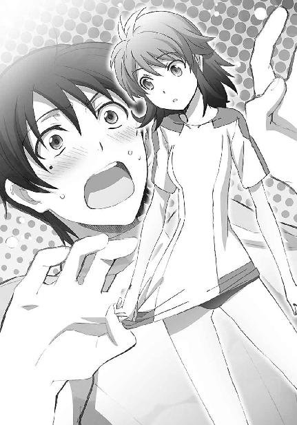
「そうか？ 変わったデザインのスパッツだと思うが」
しかし、達也がその矛先を逸らす呼吸で口を挿んだことで、これ以上その気も無いエリカのセリフで幹比古の神経がますます逆撫でされるという事態は避けられた。
「スパッツじゃないよ」
それは単に、犠牲者が幹比古から達也に代わるというだけではあったが、顔の色一つを取ってみても、達也の方が幹比古より遥かに耐性は高そうだ。いや、もしかしたら達也は、悪意のない小悪魔発言程度で逆撫でされる神経など持ち合わせていないのかもしれない。
「でも、アンダースコートってわけでもないだろ？」
「いくらあたしでも、スコート穿かずにアンダースコートだけ着ける趣味はないって。これはブルマーって言うの」
「ブルマー？ 箒（ブルーマー）みたいな名前だな。昔はそんな格好で掃除をしてたのか？」
「そんなわけないでしょ！ 女子用体操服って言ったじゃん！」
むしろ、達也の故意なのか無意識なのか判断がつきにくいボケにエリカの方が押され気味だった。
「ブルマーっていうと、あれか」
ここでようやくレオが再起動を果たした。
「昔のモラル崩壊時代に、女子中高生が小遣い稼ぎに中年親父へ売ったっていう......」
......が、多分、フリーズしたままの方が彼にとってもエリカにとっても良かったに違いない。
「黙れバカっ！」
顔を真っ赤にしたエリカが、怒鳴りつける声と共に片膝を立てて座っていたレオの向こう脛を思い切り蹴飛ばした。
脛を押さえて悶絶するレオと、片足でピョンピョン跳ね回るエリカ。
どうやら、言葉の暴力と手足の暴力で今回は痛み分け（？）に終わったようだ。
前の──つまり、達也たちの──試合に比べれば、今度の試合は接戦になった。
先程から交互に点が入っている。
両チームの技術が拮抗している。ただし、高校生らしいレベルで、という意味で。
その所為で、女子生徒のギャラリーもほとんどいなくなっている。まあ彼女たちも授業中なのだから、そうそうサボってもいられないだろう。体育の授業は、他の学科や魔法実技と違ってトレーナー資格を持つ職員が見ていることでもあるし。（魔法を教えられる教師とトレーニングを指導できる職員の稀少性の差だ）
「まったく、信じられないわよ。アンタの頭の中にはそういう知識しか詰まってないわけ？」
今、男子の見学ゾーンに残っている女子生徒は、エリカと美月だけだった。
「うっせえな。オレが読んだ本にはそう書いてあったんだよ」
本気で軽蔑の眼差しを向けてくるエリカに、今回ばかりは分が悪いと思ったのか、答えるレオはやや投げやりな口調だ。視線も最初から明後日を向いている。
ここで相手を徹底的に追い詰めないのは、エリカの美点と言って良いだろう。
「何の本を読んでたんだか......でもそういえばミキも、何かそれっぽい目で見てたね。そんなに興奮するような格好かな～」
単に移り気なだけかもしれないが。
「エリカちゃん......やっぱり普通のスパッツにした方が良いんじゃないかな」
言いにくそうな口調から察するに、美月は「思っていても言い出せない」状態だったようだ。
「そうだねぇ......思ったほど動きやすくもなかったし。むしろ、ちょっと締め付けられているような感じがするしね」
ここで男子生徒二人がサッと顔を背けたのは、幸い（？）エリカの目に留まらなかった。
「う～ん、簞笥の奥から発掘した時は、未使用だったしサイズもジャストだったし良いと思ったんだけどな。美月の言うとおり、スパッツに戻すか」
「うん、それが良いと思うよ」
別に彼女が一所懸命になる事柄でもないのだが、美月は大きく何度も頷いた。
「あれっ？」
そこでワンテンポ遅れた反応を示すのも、美月らしいと言えば美月らしい。
「ところでエリカちゃん、『ミキ』って誰のこと？」
顔を背けていた幹比古の肩に力が入った。しかし、それに気づいていないエリカはお構いなしに幹比古の背中を指差した。（気づいていたら違う行動を取ったかというと、大いに疑問だったが）
「ミキヒコだからミキ」
エリカがそう言うのとほとんど同時に、幹比古が勢い良く振り返った。
「何が『だから』だよ！」
どうやらこの「愛称」は、幹比古にとって、無視しようとしても無視できないもののようだ。
「何がって、ミキヒコを縮めてミキ」
「何度も言っているだろう！ そんな、女みたいな名前で呼ぶな！」
しかし怒鳴りつけられるのも慣れているのか、エリカには少しもこたえた様子がない。
「あれっ？ ヒコの方が良かった？」
むしろエリカの顔には、「だったら言ってくれれば良いのに」と言わんばかりの幹比古を逆に非難するような表情すら浮かんでいた。
「何でそうなる！ 人の名前を勝手に縮めるな！」
「ミキヒコと呼べ、って？ ウ～ン......ミキヒコミキヒコミキヒコ......やっぱ、言いにくいからヤダ」
理不尽だ、と感じたのは、幹比古一人ではあるまい。
「それに、何だか恥ずかしくない？」
「どこがだよっ？」
立っているエリカが突然腰を屈め、
「ミキヒコくん......」
座っている幹比古に顔を寄せて、囁くように甘い声で彼の名を呼んだ。
怒りを上回る動揺が、幹比古から言葉を奪った。
「......誰よ、アレ？」
名前を呼ばれた本人だけでなく、レオまで動揺していた。かなりの破壊力だ。
「どう？ 恥ずかしいでしょ」
どうやら彼女は髪の伸びるスピードが特に速い体質のようで、入学時のミディアムショートがわずか三ヶ月でもうセミロングに近くなっている。その髪を耳の後ろにかき上げながら、エリカはニンマリと笑った。
それでも強気を崩さない幹比古だったが、動揺は隠せなかった。
「だ、だったら」
「あっ、嚙んだ......」
ぼそり、と美月が呟いた。実は結構容赦のない性格なのかもしれない。
幸い、美月の声が耳に入るほど、幹比古本人には余裕が無かったようだが。
「苗字で呼べばいいだろ！」
「えっ？ だって、ミキって苗字で呼ばれるの嫌がってたじゃない」
どうやらこれは、結構、無神経な発言だったようだ。
幹比古の顔がきつく強張った。
顔の色は赤いまま、落ち着きが失せているのも同じ。
しかし今までの怒気には、羞恥心が根底にあった。
だがそこに、憎悪に似た暗い情念が混じり込んだように、達也は感じた。
「エリカ、そろそろ戻らなくて良いのか」
お節介かもしれないが、達也は二人の会話に割り込んで、エリカの注意を自分の方へ向けた。チョイチョイと指で背後を指差す。そこではトレーナー（いわゆる、体育教師）が渋い顔でこちらを見ていた。
「やばっ！ 達也くん、また後でねっ」
「えっ？ エリカちゃん、チョッと待ってよ！」
慌ただしく駆けていくエリカと、その後を慌てて追いかける美月。
その背中に、達也は苦笑しながら手を振った。
決まり悪げな沈黙の後、
「ゴメン、気を遣わせちゃったね」
幹比古がボソリと呟いて頭を下げた。どうやら自覚があって、それでも我を忘れるくらい、根深い家庭事情を抱えているようだ。
「余計なお世話だったかもしれないがな」
達也がそう言ったのは、慰めではなく本心だ。見たところあれが初めてというわけでもなさそうだし、もしかしたら、エリカはわざと幹比古を怒らせたのかもしれない。心の裡に抱えているものを一度しっかり吐き出した方が後腐れが無かったかもしれないのだ。
「いや、そんなことは無いよ。何より今は、授業中だしね」
だが今まさに幹比古が口にした理由で、達也はお節介を焼いたのだった。何をするにしても時と場合がある。それに、幹比古が、あるいはエリカと幹比古の二人が抱えている問題に巻き込まれるのも、達也の望むところではなかった。
「それにしても、達也は落ち着いてるね」
幹比古が急に話題を変えたのは、達也の「関わりたくない」という心情を敏感に汲み取ったからかもしれない。
「いきなり何のことだ？」
先程から話していて、クラスの中での態度とは裏腹に、幹比古が他人の心の動きにかなり敏感な性質だということが達也には分かっていた。もっとも、それにしたって急すぎる、と言うか、脈絡の読めない話題転換だったが。
「何って......」
どうやら幹比古の方もハッキリとイメージを固める前に口にしたセリフのようで、中々説明する言葉が出て来ない。しかし、だからといって、
「えーと、ほら、エリカのあの格好を見ても、少しも動じている様子が無かったし」
これはチョッと、具体例として採り上げるには不適当というか、苦し紛れな感が強すぎた。
「......いきなりで驚いたことは驚いたが、動揺する程の露出度でもなかっただろ？ 水着やレオタードより大人しいと思うぞ」
本音を言えば、「何言ってんだコイツ」と達也は思った。しかし事実上今日が初対面みたいな相手にいきなりそんなことを言えば角が立つ。当たり障りの無い返事を選んだ結果、第三者的に見ると何だか頭の悪い会話になってしまっていた。
「水着やレオタードより地味だから平気だ、ってのも何か違う気がするんだがなぁ」
ティーンエイジボーイ的に見れば、レオの指摘はもっともなものだろう。
「......枯れてるね、達也」
自分が話を振っておきながら、幹比古まで呆れ声で失礼なことを呟いている。
エリカに弄られた（？）仲間意識からか、いつの間にか達也が二人の標的になっていた。
「達也のは枯れてるんじゃなくて、採点が辛すぎるんだよな。あんだけ美少女な妹がいれば、大抵の女にゃ興味が湧かないだろ」
「ああ......確かに。深雪さんだっけ？ 入学式で彼女を初めて見たときは、見とれるよりビックリしたよ。あんなに綺麗な女の子が実在するなんて信じられなかった」
「おっ？ 達也、可愛い妹が狙われてるぜ。兄貴としてはどうよ？」
人の悪い笑みを浮かべて問い掛けるレオに答えたのは、話を振られた達也ではなく、共闘相手に裏切られて（？）出汁にされ掛かった幹比古だった。
「よしてよ。そんなんじゃない。話をするだけならともかく、それ以上の関係になろうなんて、考えただけで怖気づいちゃうって。彼女にするなら、もっと気楽に付き合える相手がいいな」
幹比古の言葉に、レオは深く頷いた。──深すぎて、かなりわざとらしかった。
「そうだよなぁ。まあ、それでなくても彼女は難攻不落のブラコンっぽいし、付き合う為には無敵のシスコン兄貴を突破せにゃならんし......ハードルが高すぎるぜ」
「レオ......お前とは一度、とことん話し合う必要があるようだな」
「おお怖、遠慮しとくぜ。オレはこんなことで命を懸けたかねえよ」
重く据わった達也の視線にレオは大袈裟に震えて見せた。
見るからに演技ではあったが、そこに少なからぬ本気が混じっているように見えて、幹比古は興味深げに二人を見比べた。
身体は一回り、レオの方が大きい。
手足の太さも、それに見合うものだ。
さっき一緒にプレーした感触では、敏捷性もそれ程、差が無いように見える。
噂では、達也は高名な忍術使いに体術の手解きを受けているらしいが、それ程に圧倒的な技術があるのだろうか？
魔法力に劣っているというハンデを覆してしまう程の？
達也が自分の何に興味を持ったのか幹比古には分からなかったが、自分が達也の何に興味を持っているのか、それは最初からハッキリしている。
幹比古は、達也の強さの秘密に興味を持っていた。入学したばかりの二科生でありながら、一科の上級生を次々とねじ伏せて見せたその力がいったいどうやったら手に入るのか、幹比古はそれを知りたかった。
幹比古にとって、魔法力の差を埋める手段を見つけ出すことは、切実な望みだった。
一年前、失ってしまった「力」に代わるもの。
一年前まで、幹比古は神童と称賛される吉田家期待の星だった。
吉田家が伝える魔法の中核的術法である喚起魔法の腕は、次期当主である兄を既に凌いでいると評価されていた。
あの事故が起きるまで、物心ついて以来ずっと強者であり続けた幹比古は、弱者に甘んじることに耐えられない。
自分が焦っていると分かってはいた。その所為で無用に孤立していることも、余裕皆無の今の心理状態が、必要以上に自分自身を消耗させていることも自覚していたが、それでも自分を追い込まずにいられない。
この一年間、かつて覚えが無いほど勉学に打ち込んだ。
それまであまり熱心とは言えなかった武術にも、真剣に取り組んだ。
それでも、喪失感は埋まらなかった。
だから、魔法実技の成績で劣り、現実に魔法の実践で劣っているにも拘わらず、魔法力で遥かに勝る上級生を打ち負かしてしまう達也に、興味を持たずにいられなかったのだ。
魔法力の差を埋める、白兵戦技術？
幹比古は、達也とレオを闘わせて見たい、と思った。
達也と戦ってみたい、と、意識することなく考えた。
「幹比古？」
「えっ？」
その所為か。
急に名前を呼ばれて、ほとんど臨戦態勢で身構えてしまう。
その姿を見て、達也もレオも、二人とも苦笑いを浮かべた。
「おいおい、物騒だな」
「どうしたんだ？ 急に黙り込んでしまったかと思ったら、今度はいきなり」
「あっ、いや、......ゴメン、なんでもない」
幹比古としては、決まり悪い思いで謝るしかない。元々コミュニケーションはあまり得意な方ではないのだ。
せっかくの友好的な雰囲気が、ギクシャクとしたものに変わり、達也とレオが盛んにジョークを飛ばしたにも拘わらず、授業時間終了まで空気が修復されることは無かった。
◇ ◇ ◇
魔法大学付属高校にとって、夏の九校対抗戦は秋の論文コンペティションに並ぶ一大イベントだ。イベントとしての華やかさでは論文コンペを大きく引き離すナンバーワンイベントと言える。
九校戦はスポーツタイプの魔法競技による対抗戦（魔法競技にはスポーツタイプ以外に立体パズルやボードゲーム、迷路や宝探しのタイムを競うゲームタイプがある）。第一高校にも各競技のクラブが存在するが、学校同士の対抗戦という色彩が強い九校戦の出場選手はクラブの枠組みを超えて全校から有望な選手が選び出される。
こうした性質上、九校戦の準備は部活連ではなく生徒会が主体となって行われる。
「だからといって、各クラブの選手を無視するわけにもいかないし、選手を決めるだけで一苦労なのよね......」
いつも活き活きとした笑顔が魅力の真由美も、今日はどこか、精彩を欠いていた。
弁当箱に箸を伸ばす手も、心なしか勢いが無い。
最近、深雪も相当に忙しそうにしているが、単に事務仕事だけではすまない生徒会長は、普段のお気楽そうなたたずまいからは窺い知れない気苦労があるのだろう。
「それでもまあ、選手の方は十文字くんが協力してくれたから、何とか決まったんだけど」
今日の昼食会は、真由美による、延々と続く愚痴の独演会の様相を呈していたが、それもようやく終息を迎えたようだ。
この程度で消化不良を起こす柔な胃腸は持ち合わせていないが、食事時のＢＧＭが愚痴ばかりというのはやはり、精神的によろしいものでは無いな、と、達也はネガティブな話題から解放されたと考えてホッと一息ついた。
「でも、選手以上に問題なのはエンジニアよ......」
......のだが、どうやら彼の早とちりだったようだ。
「まだ数が揃わないのか？」
摩利の問い掛けに、真由美は力無く頷いた。
「ウチは魔法師の志望者が多いから、どうしても実技方面に優秀な人材が偏っちゃってて......。今年の三年生は、特に、そう。魔法工学関係の人材不足は危機的状況よ。二年生はあーちゃんとか五十里くんとか、それなりに人材がいるんだけど、まだまだ頭数が足りないわ......」
「五十里か......あいつも専門は幾何の方で、どちらかと言えば純理論畑だ。調整はあまり得意じゃなかったよな」
「現状は、そんなこと言ってられないって感じなの」
真由美と摩利が二人揃ってため息をついているという珍しい光景が、事態の深刻さを如実に物語っていた。──そんなことで深刻さの度合いを測るのは、どこか間違っているような気もしたが。
「私と十文字くんがカバーするっていっても限度があるしなぁ......」
「お前たちは主力選手じゃないか。他人のＣＡＤの面倒を見ていて、自分の試合が疎かになるようでは笑えんぞ」
「......せめて摩利が、自分のＣＡＤくらい自分で調整できるようになってくれれば楽なんだけど」
「......いや、本当に深刻な事態だな」
疲労の故かそれ以外の要因もあるのか、いい感じに据わった真由美の眼差しから、摩利は空々しく顔を背けた。
生徒会室は、本格的に、精神衛生上好ましくない雰囲気になってきた。
達也は教室に戻るべく──ここから逃げ出すべく、深雪に目配せして、意思の疎通とタイミングを計った。
「ねえ、リンちゃん。やっぱり、エンジニアやってくれない？」
九校戦前の修羅場で、昼休みも生徒会室に釘付けの鈴音に、真由美から何度目かのアプローチが飛んだ。
「無理です。私の技能では、中条さんたちの足を引っ張るだけかと」
そして何度目かの、すげない謝絶に沈没する。
すっかり意気消沈してしまった真由美には悪いが、ここがチャンスだろう。
深雪とアイコンタクトを取って、達也は腰を浮かせ──
「あの、だったら司波くんがいいんじゃないでしょうか」
──かけたところで、あずさから思わぬ攻撃を喰らって、離陸に失敗してしまう。
「ほえ？」
テーブルに突っ伏していた真由美が、顔だけを上げて何語か分からない奇妙な応答を返した。
今の今まで自前の大型タブレットを前にしてウンウン唸っていた──おそらく、授業の課題に苦しんでいるのだ──あずさが、小さく息を吐いてタブレットの電源を切り、顔を上げた。
「深雪さんのＣＡＤは、司波くんが調整しているそうです。一度見せてもらいましたが、一流メーカーのクラフトマンに勝るとも劣らない仕上がりでした」
真由美が勢い良く身体を起こした。
最初の気の抜けた返事が噓のように、真由美の顔に生気が戻った。
「盲点だったわ......！」
獲物を見つけた鷹のような視線が、真由美から達也へ向けられた。
達也はそれだけで、諦めの境地に半ば、至った。
「そうか......あたしとしたことが、うっかりしていた」
そこに摩利まで加わっては、もはや逃れようも無いだろう。
「そういえば委員会備品のＣＡＤも、コイツが調整していたんだったな......。使っているのが本人だけだから、思い至らなかったが」
何を言っても無駄だろうな、と達也は既に九割九分まで諦めていたが、不戦敗は主義に反する部分があるので、ささやかな──だがおそらく、無駄な──抵抗を試みた。
「ＣＡＤエンジニアの重要性は先日委員長からお聞きしましたが、一年生がチームに加わるのは過去に例が無いのでは？」
「何でも最初は初めてよ」
「前例は覆す為にあるんだ」
間髪を入れず、真由美と摩利から、何やら過激な反論が返って来た。
「進歩的なお二人はそうお考えかもしれませんが、他の選手は嫌がるんじゃないんですか？ 一年生の、それも二科生、しかも俺は色々と悪目立ちしてますし」
自分で言っていて少々気が滅入ってきたが、事実から目を背ける訳には行かない。
「ＣＡＤの調整は、魔法師との信頼関係が重要です。ＣＡＤが実際にどの程度の性能を発揮するかは、ユーザーのメンタルに左右されますからね。選手の反発を買うような人選はどうかと思いますが......」
一見、もっともらしい達也の意見に、真由美と摩利が顔を見合わせる。
だが口で何と言おうと、達也の本音は彼女たちにとって見え透いていた。
厄介事お断りの怠け者な（？）後輩に引導を渡すべく、アイコンタクトで攻撃（口撃）手順をすり合わせる二人。
そこへ、予想外の援護射撃が撃ち込まれた。
「わたしは九校戦でも、お兄様にＣＡＤを調整していただきたいのですが......ダメでしょうか？」
思いがけない深雪の裏切り（？）に、達也は凍り付いてしまった。
彼の心情を古典劇風に表現すれば「ああ深雪、お前もか......！」である。
「そうよね！ やっぱり、いつも調整を任せている、信頼できるエンジニアがいると、選手として心強いわよね、深雪さん！」
すかさず、真由美が追い討ちを掛ける。
「はい。兄がエンジニアチームに加われば、わたしだけでなく、光井さんや北山さんも安心して試合に臨むことができると思います」
あの二人が新人戦の選手に選ばれているというのは、今初めて耳にしたことではあるが、予想どおりの妥当な人選だと達也は思った。
──現実逃避気味に。
明らかに、チェックメイトだった。
放課後、部活連本部の準備会議で、達也をチームへ加えるかどうかを最終的に決定することになった。
一縷の望みが残ったわけだが、達也は既に、完全に諦めていた。
そもそも深雪に望まれた時点で、彼に逃げ道など無いのだ。仮に難色を示されたならば、今度は逆に、彼の方から積極的にアピールしなければならない、という局面も想定される。
どちらにしても、欝なことだった。
こういう時、人はついつい、自分の得意分野に手が伸びる。
その場の優先順位は限りなく低くても、取りあえず、できること、慣れていること、得意なことで自分の価値を再確認し、落ち着きを取り戻す、一種の代償行為だ。
蓄積されたストレスの故か、滅多にないことだが、達也もこの些細な代償欲求の罠にかかってしまった。
昼休みは三分の二以上が過ぎていたが、山積みになっているデスクワークに取り掛かった深雪を待つ間、手持ち無沙汰になってしまった達也は、ショルダーホルスターから銀色のＣＡＤを抜き出して、カートリッジのドライブや起動式切替のスイッチその他、物理的な可動部分のチェックを始めた。
「あっ、今日はシルバー・ホーンを持って来てるんですね」
それを目敏く見つけて近寄ってきたのは、さっきまで課題で唸っていたはずのあずさだった。
何となく視線を、真由美でも摩利でもなく、鈴音の方へ向ける。
達也の声無き声を正確に理解した鈴音は、器用に、眉毛だけで肩をすくめるのと同じ感情表現をして見せた。つまり、今のあずさは、課題など手につかないだろう、ということだ。
「ええ、ホルスターを新調したんで、馴染ませようと思いまして」
朝に三つと言われれば怒って、朝に四つと言われれば喜ぶあれか、等と、客観的に見ればかなり酷いことを内心で考えながらあずさに視線を戻し、表面だけは愛想良く達也は答えた。（念の為に言い添えておくと、達也が思い浮かべていたのは朝三暮四の故事である）
「えっ、見せてもらっていいですか？」
キラキラと目を輝かせながら、あずさが更に近寄って来た。ＣＡＤ本体だけでなく、周辺装備にも興味があるようだ。
普段はどちらかと言えば避けられている──と言うか怖がられている──印象があるだけに、達也としては苦笑を禁じ得ない気分だったが、小動物的な雰囲気があるあずさがこういう風にちょこまかと寄って来ると、とても邪険にはできない。
これも一種の人徳だろうか、と思いながら、達也は真夏でもきちんと着込んでいる上着──無論、防暑加工のハイテク生地で仕立てられている──を脱ぎ、ショルダーホルスターを外してあずさに手渡した。
「うわーっ、シルバー・モデルの純正品だぁ。
いいなぁ、このカット。抜き撃ちしやすい絶妙の曲線。
高い技術力に溺れないユーザビリティへの配慮。
ああ、憧れのシルバー様......」
嬉々として受け取ったあずさは、今にも頰ずりしそうな勢いだ。
達也は、ポーカーフェイスを保つのに一苦労だった。
その後もあずさは、ひとしきり撫で回すようにホルスターを見詰めていたが、ようやく満足したのか、満ち足りた笑顔で達也に返却した。
「司波くんもシルバー・モデルのファンなんですか？ 単純に値段とスペックだけ見れば、マクシミリアンのシューティングモデルとかローゼンのＦクラスとか、同じＦＬＴ（フォア・リーブス・テクノロジー）の製品でもサジタリアス・シリーズなんかに比べると割高感がありますけど、シルバーのカスタマイズには値段が気にならなくなる満足感がありますよね！」
あずさが「デバイスオタク」だということは、以前に摩利から教えてもらったことがある。
それを聞いた時には、酷い言われようだ、とあずさに同情したものだが、今の姿を見ていると、そう言われても仕方が無いかな、という気にもなってしまう。
達也は、値段とスペックの対比、つまり費用対効果で劣っていれば、満足感でも劣っている、と考えている。ただ、スペックとカタログデータが必ずしも一致していないのも確かだ。要は、数字に表れないスペックをどこまで評価するかということであり、その分析無くして「満足だ」というのは単なる信仰だろう、と彼には思える。
とは言うものの、こういうことは本人の価値観の問題だから、本人が満足していると言うのに他人が水を注すことでもない。
「いえ、実はチョッとした伝手がありまして、シルバーのモデルはモニターを兼ねて安く手に入るんですよ」
彼がこのセリフを口にした瞬間、端末に向かっていた深雪の肩が大きく揺れたが、それに気づいた者はいなかった。
「えーっ！ ホントですかっ？」
あずさの顔には大きく大きく、「いいなぁ」と書かれている。
今度は達也も、少しばかり顔が引き攣ってしまった。
「......今度、新製品のモニターが回ってきたらワンセットお譲りしましょうか？」
「えっ!?
ホントに!?
ホントに良いんですか!?
ありがとうございますっ！」
答えを差し挟む余裕も無かった。
辛うじてジェスチャーで頷いてみせると、あずさは達也の空いている左手を両手で摑んで、ぶんぶん上下に振り回し始めた。
「......あーちゃん、少し落ち着いたら？」
さすがに見かねたのか、真由美が山積みの案件処理の手を止めてあずさに声を掛けた。
あずさがピタッと動きを止める。
恐る恐る、目線を自分の手元に落とし、
自分の両手が達也の手をしっかり握り締めているのを、触覚だけでなく視覚の上からも認識し、
そっと顔を上げて達也の顔を窺い、無表情に見返してくる眼差しを避けてもう一度手元に目を落とし、
あずさは火に触れたような勢いで、両手を離した、だけでなく、全身で飛び跳ねた。
「ゴメンなさいゴメンなさいゴメンなさい......！」
耳まで赤くなる、という表現があるが、比喩ではなく、あずさは本当に耳まで赤くして何度も勢い良く頭を下げている。
その内、目を回すのではないか、と本気で心配になってきたので、達也はアイコンタクトで真由美にヘルプを求めた。
「......あーちゃん、もうそれくらいにしたら？ 達也くんも、何だか困っちゃってるみたいよ？」
真由美も達也と懸念を共有していたのか、悪戯に（徒に、ではない）場をかき回すことも無く、あずさを宥めにかかった。
言われるがままに深呼吸などして、何とか落ち着きを取り戻すあずさ。
呆れ顔のため息一つと共に、真由美は案件処理へと戻る。
あずさは、達也の顔を見て照れ臭そうに笑うと、急に真面目な顔になって、
「じゃあ、もしかして司波くんは、トーラス・シルバーがどんな人かも知ってたりしませんか？」
などと訊ねてきた。
──まあ、照れ隠しである事は、誰に言われなくても分かる。
ただこの質問は、達也にとって、非常に答えにくいものだった。
「......いえ、詳しい事は何も」
壁際でビープ音が鳴った。
深雪が使っているワークステーションの、不正操作のアラームだ。
誰にでもミスタイプくらいあるので別におかしなことでは無いが、アラームが鳴る程のミスを深雪がしてしまうのは珍しい。
真由美と鈴音が「おやっ？」という表情で壁に向かっている深雪に視線を投げたが、深雪は何事も無かったようにデータ処理を続けていたので、声を掛けることも無く二人も自分の仕事へ戻った。
「......深雪さんがミスするなんて珍しいですね」
「たまたまでしょう」
状況に照らして、達也の返事はスムーズ過ぎるものだったが、あずさは特に気に留めた様子も無く、元の──始めたばかりの、話題に戻った。
「いくら正体を隠してる、って言っても、同じ研究所の人たちは知ってるはずですよね？ それとも、一人で全部作ってるんでしょうか？」
「......いや、それはさすがに無理なのではないかと」
「そうですよねぇ。そうだ、司波くん、その『伝手』で研究所の人に話を聞けませんかね？」
「......いえ、伝手と言ってもそのような類いのものでは無く......それに、フォア・リーブスが何らかの経営上の理由で秘密にしているんでしょうから、研究所の人から話を聞き出すのは無理だと思いますよ」
「うーん、そうですねぇ......」
「......分かっているとは思いますが、秘密情報の取得に精神干渉系魔法を使うのは重罪ですよ」
「えっ、や、やだな、そんなこと考えるはず無いじゃ......ないですか............」
達也から半眼の視線を浴びて、あずさの小さな身体が更に縮こまった。
「......いえ、本当に分かっているなら良いんです。あくまで、念の為ですから」
「だ、大丈夫ですよ。そのくらい、分かってますって。アハ、アハハハ......」
一筋、二筋と、比喩的な意味ではなく肉体的に冷や汗を流している様子を見て、達也はあずさに対するプレッシャーを緩めた。
「それにしても何故、中条先輩はトーラス・シルバーの正体がそんなに気になるんですか？」
あずさが使っているＣＡＤはＦＬＴ製ですらない。シルバーモデルのユーザーでもないのに、その設計者の素性がそんなに気になるものだろうか。
達也にとっては素朴にして、当然に思える疑問だったのだが。
「えっ？」
あずさは、その質問こそ意外すぎるもの、という顔で達也を見返した。
「気になりますよ。むしろ司波くん、気にならないんですか？
トーラス・シルバーですよ？
ループ・キャストを世界で初めて実現し、特化型ＣＡＤの起動式展開速度を二十パーセントも向上させ、非接触型スイッチの誤認識率を三パーセントから一パーセント未満へ低下させた、あのトーラス・シルバーですよ？
しかもそのノウハウを惜しげもなく公開し、独占利潤よりも魔法界全体の進歩を優先させた、あのトーラス・シルバーのことですよ？
魔工師を目指す者なら、わずか一年の間に特化型ＣＡＤのソフトウェアを十年は進歩させたと言われているあの天才技術者がどんな人なのか、興味が湧かないはずはないと思いますけど」
何やら、責められている様にも感じるひしひしとした迫力に、達也は不覚にもたじろいでしまった。世間の「トーラス・シルバー」像がここまで大きな物になっていたとは、彼の予想を超えていた。
「認識不足でした。ユーザーとしては全く不満が無いというわけでもなかったので、それ程、高い評価を得ているとは......」
「はあ......なるほど。司波くんにとってはモニターを務めるほどシルバーモデルは身近な物ですから......わたしとは感じ方が違うのかもしれませんね」
不得要領顔ながらも、あずさは何とか納得してくれたようだ。
「ねっ、ねっ、司波くんは、トーラス・シルバーって、どんな人だと思いますか？」
純粋な、好奇の瞳。
いい加減に話題を変えなければと思いながら、時間稼ぎの意味で達也は適当な応えを返した。
「そうですね......意外と、俺たちと同じ日本人の青少年かもしれませんね」
再び壁際でビープ音が鳴った。
深雪は背筋を伸ばした姿勢を崩すことなく、仕事を続けている。
──彼女は決して、今どんな顔をしているのかを、こちらに見せようとはしなかった。
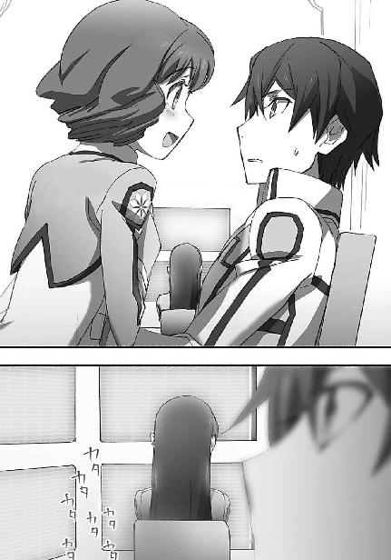
「ところであーちゃん」
「はい、会長。何でしょう」
結局、達也があずさを持て余していたところへ助け船を出してくれたのは真由美だった。現金なものだが、彼女が頼りになると達也が感じたのは初めてのことだ。まあ、真由美としては、一刻も早くあずさに生徒会の仕事へ復帰して欲しかった為だろう。
「お昼休みの内に、課題を終わらせておくんじゃなかったの？」
ただ、達也にとっては助け船であっても、あずさにとっては無慈悲なラッパの音に等しかった......というのはいくら何でも大袈裟だが、あずさはそのくらいショックを受けた顔になっていた。トーラス・シルバーに関する会話は、現実逃避の意味合いもあったようだ。
「会長～」
泣き出しそうな顔で、真由美に助けを求めるあずさ。どうやら彼女は、かなり煮詰まっているらしい。
「そんな情けない声を出さないの」
苦笑しながら真由美は精査していた発注書から目を離し、あずさの方へ顔を向けた。
「少しくらいなら手伝ってあげるから。それで、課題はいったい何なの？」
摩利から「相変わらず甘やかしているな」と言いたげな目を向けられていたが、それには構わず、むしろ気づかぬフリで、真由美はあずさへ笑いかけた。
「すみません......実は、『加重系魔法の技術的三大難問』に関するレポートなんです......」
シュンとした顔で告げたあずさの許へ、鈴音と摩利と達也の視線が集中した。
「な、なんですか？」
いきなり注目を浴びて、あずさはビクッと肩を震わせ、首をすくめた。今にも泣き出しそうな顔でそんな真似をされては、まるで自分たちが虐めているみたいな気分になる。達也がすぐに目を逸らしたのはそういう理由からだったが、鈴音も同じように考えたのだろうか。
目を逸らさなかったのは、摩利だけだった。
「ほほう......」
摩利は興味津々の目つきであずさを、正確には彼女の手元にあるタブレットを見詰めた。
「毎回上位五名から落ちたことのない中条が随分と悩んでいるから何かと思えば」
「毎年必ず一回は出題される定番のテーマじゃないの」
摩利のセリフを真由美が不可解といった面持ちで引き継いだ。
「あーちゃん、今回の設問は？」
定番だけあって、設問のバリエーションも既に出尽くしている観があるくらい豊富にストックされている。校内の課題だけでなく、魔法大学の受験過去問集にも収録されている程のテーマだ。様々あるそれぞれの設問に対する解答例も少し調べれば簡単に見つかるはずだ。
「課題の内容は『三大難問』の解決を妨げている理由についてです。他の二つは分かったんですけど、汎用的飛行魔法が何故実現できないのか、上手く説明できなくて......」
それを聞いて、なる程、と頷いたのは鈴音だった。
「つまり中条さんは、これまで示されてきた解答に納得がいかないということですね」
「そうなんです！」
胸の内を代弁してくれた鈴音に向かって、あずさは大きく首を縦に振った。
「重力に逆らって自分の身体を浮遊させる魔法は、四系統八種の現代魔法が確立された初期から実用化されていますよね」
「そうね。落下による死傷は最も身近なリスクの一つだから」
相槌を打った真由美へ、あずさの視線が移動する。
「加速・加重系統を得意とする魔法師は、一回の魔法で数十メートルをジャンプすることができますし、世界には百メートルを超える高飛び記録を樹立した魔法師もいます。飛び降りる方はもっと凄くて、二千メートルの高度から、素潜りならぬ素飛び降りを成功させた魔法師もいます」
「それなのに何故、飛行魔法......空を自由に飛び回る魔法が実現できないのか、でしょ？」
「正確には、誰にでも使えるように定式化された飛行魔法が何故実現できないのか、ですね。古式魔法の術者の中には、少数ですが、飛行魔法を使いこなしている人たちもいますので」
真由美のセリフに、鈴音が補足を入れる。
その言葉に、無意識に、だろうが、あずさは首を横に振った。
「でもそれは、ＢＳ魔法師の固有スキルに近いものです。共有できなければ、技術とは言えません。
理論的には、加速・加重系統で重力の影響をキャンセルして空を飛ぶことは可能です。実際に、跳んだり浮いたりする魔法は技術として定式化しています。なのに何故、飛ぶことができないのか......」
「その設問に対する答えは、少し高度な参考書なら大抵載ってると思うけど？」
何が納得できないの？ と真由美があずさに、目で訊ねる。
「魔法式には終了条件が必ず記述され、終了条件が充たされるまで事象改変は効力を持ち続ける。魔法による事象改変が作用中の物体に対して、その魔法とは異なる事象改変を引き起こそうとすれば、作用中の魔法を上回る事象干渉力が必要になる。
魔法による飛行中に、加速したり減速したり昇ったり降りたりする為には、その都度、新しい魔法を作動中の魔法に重ね掛けしなければならず、必要になる事象干渉力はその度に増大していく。一人の魔法師に可能な事象干渉力の強度調節はせいぜい十段階程度であり、十回の飛行状態変更で魔法の重ね掛けは限界に達する。
......これが一般に言われている、飛行魔法を実用化できない理由ですよね？」
あずさの長い説明を、真由美は少しも考え込むことなく首肯した。
「なんだ。あーちゃん、解ってるんじゃない。論点も良く整理されているし。何をそんなに悩んでいたの？」
「これって結局、魔法が作用中の物に魔法を掛けようとするのが問題なんですよね？ だったら、作動中の魔法をキャンセルしてから新しい魔法を発動すれば良いと思うんですけど」
さっきの泣きそうな顔とは打って変わった、怒っているようにも見える顔で強く疑問を呈するあずさに、鈴音が落ち着いた声で問い掛ける。
「理屈ではそうなりますが、具体的にどうやって魔法をキャンセルするのですか？」
「先に作動中の魔法式に、あらかじめ終了条件として、鍵となる魔法式の挿入をプログラムしておけばいいんじゃないでしょうか。つまり、鍵となる小規模の魔法式を作動中の魔法式に投射することを魔法の終了条件にしておけばいいと思うんですけど」
すっかり自分のアイデアに没頭している顔で熱く論ずるあずさに対し、鈴音はあくまで冷静に反論した。
「残念ですが、魔法式は魔法式に作用できません。魔法式はエイドスを書き換えるのみです。同一のエイドスに同時に二つの魔法式を投射しても、より干渉力の強い魔法式がエイドスを上書きするだけで、強い魔法式が弱い魔法式を消去しているわけではないのです。
魔法式を分解消去する対抗魔法も存在しないわけではありませんが、あれは情報体の構造に直接干渉する超高等魔法で、実験室レベルならともかく、実用レベルで使いこなせる魔法師は確認されている限り皆無です」
「そうなんですか......」
鈴音が説明した事柄は標準進行で二年生二学期から、基礎魔法学に代わって学ぶことになる応用魔法学の中の「対抗魔法」──相手の魔法を無力化する為の魔法──に関するセクションに含まれる知識だ。標準進行で三年生の一学期に割り当てられているセクションで有り、あずさが知らないのも無理はない。むしろ、対抗魔法という単語に戸惑った様子がないあずさはよく勉強していると言える。
「ですが、面白いアイデアです」
熱中したり落ち込んだりと忙しいあずさに、鈴音は優しい顔で微笑みかけた。
「魔法が作用している状態をキャンセルするという考え方は間違っていないと思いますよ」
「そうね。要求される干渉力がインフレスパイラルを起こすのは、作動中の魔法を上書きするからだもんね」
鈴音に続いて、真由美もあずさの発想に肯定的な反応を示した。
「今まで考えたことなかったけど、作用中の事象改変が止まれば、次の魔法を発動するのに干渉力の上乗せは必要なくなるはずよね......空を飛んでる最中だから、切替はタイムラグ無しで行わなければならないけど、専用のＣＡＤを使えば落下し始める前に次の魔法を作動させられるはず......」
独り言のようにブツブツと呟いた後、真由美は「あれっ？」と声に出して首を傾げた。
「でも、魔法の効力を打ち消す程度のことだったら、既に誰かが試してみているはずよね？ 事後的に領域干渉を展開するみたいなものなんだし」
真由美の上げた疑問の声に、鈴音が生徒会業務用のワークステーションを検索画面に切り替えた。
「少しお待ちを......一昨年、イギリスで大規模な実験が行われていますね。コンセプトは会長が仰ったとおりの、事後的領域干渉による飛行魔法実用化です」
魔法関係のニュースが集められたデータベースから、鈴音はたちどころに目当ての記事を引っ張り出した。
「それで、結果は？」
訊ねる声が少し弾んでいる──つまり、期待を隠し切れていないところなどは、真由美も普通の高校生ということだろう。
「完全な失敗です。普通に魔法を連続発動するより、むしろ急激な要求干渉力の上昇が認められたとレポートされています」
「......そう」
それだけに、期待を裏切った（？）鈴音の報告に、がっかりした感も隠し切れないようだ。
「理由は書かれてる？」
「いえ、そこまでは。会長はどうお考えですか」
鈴音に反問され、真由美はあごに人差し指を当て「ウ～ン」と考え込んだ。
「先行する魔法の作用は止まっているはずよねぇ......達也くんはどう思う？」
真由美が達也にそう訊ねたのは、自分が考えを纏める為の時間稼ぎだった。
本気で解を求めたわけではない。
「市原先輩が挙げられたイギリスの実験は、基本的な考え方が間違っています」
だから、達也から返された断定口調の答えは、完全に真由美の意表を衝くものだった。
「......どこが間違ってるの？」
目を白黒させながら、辛うじて問い返した真由美に、達也は誇るでもなく傲るでもなく淡々と説明した。
「終了条件が充足されていない魔法式は、時間経過により自然消滅するまで対象エイドス上に留まります。新たな魔法で先行魔法の効力を打ち消す場合、先行魔法は消滅しているように見えますが、それは見掛けの上だけのことです」
真由美と、鈴音と、あずさと、摩利までもが、食い入るように達也の顔を見ている。だが、達也の無表情は変わらない。彼女たちの放つプレッシャーなどどこ吹く風とばかり、事務的な口調に変化はない。
「仮に効力を打ち消される先行魔法の魔法式を魔法式Ａ、先行魔法の効力を打ち消す為の魔法式を魔法式Ｂとしましょう。
魔法式Ｂが発動することにより、魔法式Ａは事象改変の効力を失います。しかし、魔法式Ａは効力を失っただけで、依然として対象エイドス上に残っています。
魔法式Ａと魔法式Ｂは、対象エイドスに対して同時に作用し続けており、単に魔法式Ｂの効果が表に現れているに過ぎません。先程市原先輩が仰ったとおり、魔法式はエイドスを書き換えるのみ。魔法式は魔法式に作用できません。それは領域干渉であっても同じです。魔法式を直接消し去る術式で無い限り、対抗魔法であってもこの原則の例外ではありません」
「......イギリスの実験では、飛行魔法に必要のない余分な魔法を掛けちゃってるということ？」
真由美の質問に頷いて、達也は説明を追加した。
「つまり、一回の飛行状態変更の為に、魔法式を一回余分に上書きしているということです。飛行状態変更の都度、余分な上書きは累積されていきますから、事象干渉力の上限に到達するのが早くなるのは当然です。実験を企画したイギリスの学者は、対抗魔法の性質を錯覚していたのでしょうね」
ちょうど説明を終えたところで、達也の胸ポケットに入れた携帯端末が振動した。昼休み終了の、予鈴の代わりだ。
「深雪、教室に戻ろうか」
「はい、お兄様」
達也たちにずっと背中を向けていた深雪が、名前を呼ばれてすぐに立ち上がった。
その声も表情も仕草も、いつもどおりの淑やかなものだ。
だから、真由美も鈴音も摩利もあずさも気づかなかった。
気づいていなかった。
コンソールに向かう深雪の背中が、誇らしげに真っ直ぐ伸びていたことに。キーボードを叩く指が、嬉しげに踊っていたことに。
◇ ◇ ◇
部活連本部で開かれた九校戦準備会合は、始まる前からピリピリとした空気に包まれていた。
試合で活躍すればその生徒にはそれに見合う成績加算が与えられるが、メンバーに選ばれただけでも、長期休暇課題免除、一律Ａ評価の特典が与えられる。
それは選手だけでなく、エンジニアに選ばれた生徒も同様だ。
それだけ学校側にとっても九校戦は重要な行事であり、生徒にとっても九校戦メンバーに選ばれる事は大きなステータスとなる。メンバーの最終調整を目的とする会合が、刺々しく生々しい雰囲気になるのもやむを得ないところだ。
──と、達也も第三者の立場であったならば、一喜一憂する同級生・上級生を同情混じりに眺めていられただろうが、当事者として俎板の上に載せられる身となれば、鬱々とした気分でため息をこらえ、一刻も早くこの茶番が終わることを望むばかりだった。
九校戦自体に興味が無いわけではない。
同年代の魔法師（の雛鳥）たちを相手に、自分の技術をふるうことに対する欲求は、父親の研究室でＣＡＤ改良に費やした知的な自己実現欲とは別種の飢餓感として、達也の中に、確かに存在している。
彼は一般人よりもかなり感情に乏しく作られていたが、本来ならば最も血気盛んな年頃だ。他人と競うことに全く無関心でいられるほど、彼も──クラスメイトに何と評されようとも──枯れてはいない。
ただその為には、自負と嫉妬と虚栄と嫌味と、その他諸々の渦巻くセレモニーを片付けなければならない。それが彼には憂鬱だった。
そんな彼の思いに関係なく──当たり前だが──着々と会議室の空席が埋まり、全ての空席が埋まったところで、真由美が議長席に腰を下ろした。
「それでは、九校戦メンバー選定会議を開始します」
既に選手・エンジニアの内定通知を受けている二、三年生のメンバーと、実施競技各部部長、生徒会役員（ただし、深雪は生徒会室で留守番中）、部活連執行部を出席者とする大人数の会議が始まった。
達也に与えられた席は、内定メンバーと同じオブザーバー席だった。
そして彼のような異分子を目敏く見つけ出す煩型は、ある程度以上の規模の集団には必ずと言っていいほど存在する。
案の定、会議は冒頭早くも、何故この場に一年の二科生がいるのか、という所からもつれて行った。
達也に対して、好意的な視線が無かったわけではない。
むしろ、予想外に好意的な意見が多かった。
同級生と違い上級生の間には、風紀委員としての実績がある達也は二科生と言っても別格だ、という認識が存在するようだった。
それでもなお、反対意見の方が多い。それも明確な反対、論理的な反対ではなく、感情的な、消極的な反対である為、余計にダラダラと、いつまでも結論が出ない迷走状態に陥っていた。
「要するに」
不意に、重々しい声が議場を圧した。
然程大きな声では無かったが、その場の誰もが無秩序な言い争いを止めて、発言者へ目を向けた。
それまで沈黙を守っていた部活連会頭・十文字克人が、自分に向けられた視線を端から一通り見返して、言葉を継いだ。
「司波の技能がどの程度のものか分からない点が問題になっていると理解したが、もしそうであるならば、実際に確かめてみるのが一番だろう」
広い室内が静まり返った。
それは単純で効果的で、誰も文句のつけようがない結果が明らかになる反面、少なからぬリスクを伴うが故に、誰も言い出さなかった解決策だった。
「......もっともな意見だが、具体的にはどうする？」
「今から実際に調整をやらせてみればいい」
沈黙を破った摩利の問い掛けに対する克人の答えは、またしても単純明瞭なものだった。
「何なら俺が実験台になるが」
現在実用に供されているＣＡＤは、使用者に合わせて調整しなければならない。
十人の魔法師がいれば、同じ機種を使用しても十通りの調整が必要となる。
魔法師はＣＡＤが展開した起動式を自分の無意識領域へそのまま取り込む。
つまり、魔法師の精神は自分のＣＡＤに対して無防備な状態になっている。
近年のＣＡＤは、起動式の読込を円滑化・高速化する為のチューニング機能を備えており、それだけ使用者の精神に対する影響力が強い。
このチューニングが狂うと、魔法効率の低下から始まって不快感、頭痛、眩暈や吐き気、酷くなると幻覚症状などの精神的ダメージをこうむることになる為、最新・高機能なＣＡＤほど精確緻密な調整が必要とされる。
故に実力の定かでない魔工師にＣＡＤの調整を任せるのは、魔法師にとって大きなリスクを背負う行為だ。
克人の発言は、自らの発案とはいえ、勇気のあるものと言えた。
「いえ、彼を推薦したのは私ですから、その役目は私がやります」
すかさず、真由美が代役を申し出た。責任感に基づく発言、ではあろうが、裏を返せば完全には信用されていないということであり、達也としてはあまり愉快なものではない。
「いえ、その役目、俺にやらせて下さい」
だが、それに続く桐原の立候補は、意外でもあり、驚きでもあり──その男気が達也には心地良かった。
学校が職員・生徒に開放しているＣＡＤの調整設備は実験棟にある。
しかし今回は、実験棟の備付調整機器ではなく、九校戦で実際に使用する車載型の調整機を会議場に持ち込んでテストを行うことになった。
調整するＣＡＤも九校戦の規格に合わせた物が準備された。
本番の準備は、道具面に関する限り、滞りなく進んでいることが分かる手際の良さであり、人選面の遅れが逆に際立つ風景でもあった。
調整機の前に腰を下ろした達也と、機械を挟んでその向かい側──と言っても、お互い顔は見えない──に座る桐原を、生徒会役員と各部の部長がグルリと取り巻いている。
まず調整機の立ち上げ。この段階から意地の悪い目が達也の手元に注がれていたが、日常的に、遥かに複雑な調整用機器を操作している達也にとっては、居眠りしながらでも躓きようが無いプロセスだ。計測準備までの手順を流れるようにこなして、忌々しそうな視線をポーカーフェイスで受け流し、
「課題は、競技用ＣＡＤに桐原先輩のＣＡＤの設定をコピーして、即時使用可能な状態に調整する、ただし起動式そのものには手を加えない、で間違いありませんか？」
テストの条件を再確認した。
「ええ、それでお願い」
真由美が頷くのを見て、達也は小さく首を振った。縦ではなく、横に。
「......どうしたの？」
「スペックの違うＣＡＤの設定をコピーするのは、あまりお勧めできないんですが......仕方ありませんね。安全第一で行きましょう」
「？」
首を傾げたのは真由美だけではなかった。ＣＡＤの設定のコピーは、機種変更の際、普通に行われていることなので、何を問題視しているのか分からなかったのだろう。
たださすがに、あずさを始めとするエンジニアチームのメンバーは、達也の発言の意味が理解できたようだ。小さく頷く者、お手並み拝見とばかりニヤリと笑う者、概ね二通りの反応を示している。
達也はそれ以上無駄口を叩かず、早速作業に取り掛かった。
まず、桐原からＣＡＤを借りて、調整機に接続する。
設定データの抜き出しは半自動化されており、スキルの違いが表れる作業ではない。
ただ、設定データをそのまま競技用デバイスにコピーせず、調整機に作業領域を作って保存した手順に「おや？」という表情を見せた者が数名いた。
次に、桐原本人の想子波特性の計測。
達也の合図に従って、桐原がヘッドセットを着け、両手を計測用パネルに置く。
これも通常の手順であり、オートアジャスター機能付きの調整機であれば、ＣＡＤをセットして想子波を計測するだけで自動的に調整が完了する。
生徒が学校の調整機を使って自分でＣＡＤを調整する場合は、ほとんどこの段階止まりだ。
逆に言えば、自動調整に頼らず、マニュアルでＣＡＤのオペレーティング・システムにアクセスし、より精密な調整を施すのがエンジニアの腕の見せ所となる。
「ありがとうございます。外していただいて結構ですよ」
達也から計測終了の合図を送られて、桐原がヘッドセットを外した。
普通なら、後は設定を行うＣＡＤをセットして、自動調整結果に微調整を加えるだけだが、その為には設定済の、この場合なら設定をコピー済のＣＡＤが準備されていなければならない。
手順のミスか、と見物しているほとんどの者が思った。
それを裏付けるように、達也はディスプレイを見詰めたまま動かない。
ただ、そのたたずまいは順番を間違えて途方に暮れている、という感じではなかった。
そんな頼りなさは無く、怖くなるような真剣な眼差しがあった。
好奇心を抑えきれなかったのか、あずさがひょこっと首を伸ばして、達也の肩越しにディスプレイを見た。
「へっ？」
途端に彼女は、花の乙女にはいささか似つかわしくない、間の抜けた声を上げた。
その雑音に、達也は眉一つ動かさない。
どうしたの？ と声を掛けることも憚られて、真由美と摩利もあずさの隣から、ディスプレイをのぞき込み──二人とも、漏れ掛けた声をすんでのところで抑えた。
そこには、当然映し出されているべきグラフ化された測定結果は表示されておらず、ディスプレイ一杯を無数の文字列が高速で流れていた。
辛うじて所々の数字が読み取れる程度で、二人には流れ去る文字列を目で追う事もできない。
文字の行進は、すぐに止まった。
時間にして数十秒、達也が凝視を始めてからも、五分は過ぎていない。
達也は自動スクロールの停止後すぐに、調整機に競技用デバイスをセットして、猛然とキーボードを叩き始めた。
次々と、いくつものウインドウが、開かれては閉じる。
開いたままになっているウインドウの一つが、今の今まで読み取っていた測定結果の原データであり、もう一つのウインドウがコピー元の設定を記述した原データであることに、あずさだけは気がついた。
今、自分たちの目の前でどれほど高度なオペレーションが行われているか、理解している者はほとんどいないだろう。この場の大多数は、今では珍しくなったキーボードオンリーの入力スピードに目を奪われているに違いない。だが本当に驚くべきは、想子波特性の計測結果を、原データから直接理解するスキルだ、とあずさは思った。
このやり方なら、測定結果の全てを、デバイスのキャパが許す限り、調整に反映させることができる。これは、自動調整機能に全く頼らない、完全マニュアル調整だ。
彼女の目の前で、一時作業領域に保存された設定データが瞬く間に書き換えられた。
ディスプレイに表示されているのは相変わらず生のデータだったが、あずさには出来上がった設定を読み取ることが辛うじて可能だった。
安全マージンを大きく取った、まさしく「安全第一」の設定だった。
これなら自動調整よりユーザーの負うリスクは小さく、自動調整より遥かに効率の良い起動式の提供が可能だ。
実際に、試してみるまでも無かった。
この一年生の調整技能は、自分たちエンジニアチームの誰よりも、上だ。
あずさは何としても、達也をチームに引き込もうと決意した。
起動式には手を加えない、という条件だったので、調整はすぐに終わった。
見物人にとっても、呆気なく感じるほどの手際だった。
すぐにテストが行われる。
桐原の顔が、傍目に分からぬほど微かに、緊張に強張っていたのは「ご愛嬌」の範疇だろう。
実際には、事故も事故未満の不都合も、何も起こらなかった。
達也が調整したＣＡＤは、桐原愛用のデバイスと全く同じように作動した。
「桐原、感触はどうだ」
「問題ありませんね。自分の物と比べても、全く違和感がありません」
克人の問い掛けに、桐原は即答した。
それが個人的な友誼に基づく過大評価でないことは、この場の誰にとっても明らかだった。桐原と達也の因縁──四月の新入生勧誘週間に剣道部のデモンストレーションに乱入した桐原を達也が床に叩きつけたあの事件──を中途半端に知る者ならば、桐原が達也をかばったりするはずがないと考えても不思議ではない。しかしそういう勘違いを抜きにしても、この場にいる者は皆、魔法の発動状態を見るだけでＣＡＤが順調に作動したことを理解していた。
ただ、魔法をスムーズに発動できた、というある意味平凡な結果以上のことは、見ているだけでは分からない。
「......一応の技術はあるようですが、当校の代表とする程のレベルには見えません」
「仕上がり時間も、平凡なタイムだ。あまり良い手際とは思えない」
「やり方が変則的ですね。それなりに意味があるのかもしれませんが......」
案の定、二年生の選手の間から、まず、地味な結果に対する否定的な評価が出て来た。
それはあながち異例の抜擢に対する反感によるものばかりではなく、生徒会長直々の、しかも特例的な推薦だからこそ、彼らも無意識のうちに目を瞠るようなハイレベルの技量を期待していた、その反動、という一面もあった。
「わたしは司波くんのチーム入りを強く支持します！」
それに猛反発して見せたのはあずさだった。いつもの気弱な表情が噓のようだ。
「彼が今、わたしたちの目の前で見せてくれた技術は、高校生レベルでは考えられないほど高度なものです。オートアジャストを使わず全てマニュアルで調整するなんて、少なくともわたしには真似できません」
「......それは確かに高度な技術かもしれないけど、出来上がりが平凡だったらあまり意味は無いんじゃあ......？」
「見掛けは平凡ですけど、中身は違います！ あれだけ大きく安全マージンを取りながら、効率を低下させないのは凄いことなんです！」
「中条さん、落ち着いて......。不必要に大きな安全マージンを取るより、その分を効率アップに向ける方が適切だと僕は思うけど？」
「それは......きっと、いきなりだったから......」
だが元々弁が立つ方ではないのか、勢いが尻すぼみになってしまう。
あずさがそのまま立ち往生してしまうかに見えたその時、手を挙げて発言を求め、参席者の注目を集めながらスックと立ち上がった男子生徒がいた。
「桐原個人が所有しているＣＡＤは、競技用の物よりハイスペックな機種です。スペックの違いにも拘わらず、使用者に違いを感じさせなかった技術は高く評価されるべきだと思いますが」
「えっ？......服部くん？」
ここで助け船を出したのは、意外なことに、服部だった。
「会長、私は司波のエンジニアチーム入りを支持します」
「はんぞーくん？」
真由美の顔にも、隠し切れない意外感が浮かんでいた。
しかし服部は、内心はともかく、敬愛する（？）生徒会長の見せた自分に対するある意味マイナス評価にも（表面上は）怯むことなく、堂々と自分の意見を説いた。
「九校戦は、当校の威信を掛けた大会です。肩書きに拘わらず、能力的にベストのメンバーを選ぶべきでしょう。エンジニアの仕事は選手が闘いやすい様にサポートすることです。桐原に『全く違和感が無い』と言わせた技術は、中条の言うように非常にレベルの高いものと判断せざるを得ない。候補者を挙げるのにも苦労するほどエンジニアが不足している現状では、一年生とか前例が無いとか、そんなことにこだわっている場合ではありません」
所々に垣間見える棘が、服部の本音を雄弁に物語っている。
であるにも拘わらず、服部が達也のチーム入り支持に転じたという事態は、この場の雰囲気を変えるのに十分なインパクトを有していた。
「服部の指摘はもっともなものだと俺も思う。
司波は、我が校の代表メンバーに相応しい技量を示した。
俺も、司波のチーム入りを支持する」
反対派が沈黙する中、克人が旗幟を明らかにしたことにより、大勢は決した。
［２］
いつもどおり兄妹二人きりの夕食を終えた直後、見計らったように、電話が鳴った。
ところで、ご存知のとおり現代の電話機はほとんどが映像を伴う「テレビ電話」であり、電「話」機ではなく電「影（映）」機ではないか、と実にどうでもいい議論が三流文化人の間で喧しく交わされたことがあるが、結局、立体映像が実用化し始めた今でも「電話機」「電話」と呼ばれている。
──閑話休題──
深雪は現在、食事の後片付けに台所。
さすがに食器洗いまで手作業にこだわったりせずＨＡＲ任せだが、ようやく普及が始まったばかりの３Ｈ（Humanoid Home Helper ; いわゆる「お手伝いロボット」）は、この家にはいない。鬱陶しい天井移動マニピュレーターの導入は二人揃って却下した。従って、食器の上げ下ろしは自分でやらなければならないのである。
──その程度の労を惜しんでいては身体が退化してしまいます、とは深雪の弁。
──再び閑話休題──
達也が電話に出たのは、要するにそういう事情であって、偶然の産物でしかなかった──はずだ。
「お久し振りです。......狙ったんですか？」
『......いや、何のことだか分からんが......久し振りだな、特尉』
画面に映ったのは不得要領な顔をした、旧知の人物だった。
「リアルタイムで話をするのは二ヶ月ぶりです。しかし......その呼び方を使うということは、秘匿回線ですか、これは。よくもまあ、毎回毎回一般家庭用のラインに割り込めるものですね」
『簡単ではなかったがな。特尉、一般家庭にしては、君の家はセキュリティが厳し過ぎるのではないか？』
「最近のハッカーは見境が無いですから。家のサーバーには、色々と見られてはまずいものもありますので」
『そのようだな。今も危うく、カウンターでクラッキングを喰らいそうになった』
「そりゃ、自業自得というものです。余程深い階層までアクセスしようとしない限り、カウンタープログラムは作動しません」
『うちの新米オペレーターにも、良い薬になっただろう』
画面の中の、日焼けや火薬焼けによってなめし皮の様になった顔面に、人の悪い笑みが浮かんだ。
それにしても、三年前から少しも老けた様子がない、と、達也はその笑顔を見て思った。
地位と所属部署からして、相当な激務であるはずだが、微塵の疲れた様子も無い......という、脳裏に浮かんだ思惟に促されて、通話相手、陸軍一〇一旅団・独立魔装大隊隊長・風間玄信少佐は、前置きで時間を浪費するのは好ましくない相手だということに、達也は今更のように気がついた。
「少佐、本日はどのようなご用件なのですか？」
『そうだな、前置きはこのくらいにしておこうか。まずは事務連絡だ』
「はい」
『本日、「サード・アイ」のオーバーホールを行い、部品をいくつか新型に更新した。これに合わせて、ソフトウェアのアップデートと、性能テストを行って欲しい』
一〇一旅団の読み方は、イチマルイチ旅団。百一旅団ではない。
通常の編成とは別系統の、魔法装備を主兵装とした実験的な旅団で、その中にあって更に、独立魔装大隊は新開発された装備のテスト運用を担う部隊。
機密の度合いが通常の軍事機密から更に五、六段階ほどはね上がっており、本来ならば一介の高校生が関わり合うことなど、それどころか部隊の存在を耳にすることすらも許されないはずだ。
しかし達也は、成り行きとしか言いようの無い事情から、風間の部隊に事実上組み込まれていた。
「分かりました。明朝出頭します」
『......いや、学校を休むほど差し迫っているわけではないが？』
「いえ、次の休みには新型デバイスのテストで研究所の方へ行く予定ですので」
『本官が口にできることではないのだろうが......高校生になってますます、学生らしくない生活になったようだな』
「このセリフは好きではないのですが、仕方がありません」
『そうだな......本官が忙しいのも、特尉が忙しいのも、仕方の無いことだ。では明朝、いつもの所へ出頭してくれ。生憎本官は立ち会えないが、真田に話を通しておく』
「了解しました」
事務的に敬礼した達也に、画面の中の風間も事務的に答礼した。
軍の儀礼的には形のなっていない敬礼だったが、イレギュラーメンバー扱いということもあって、そこまで厳しい要求はされていない。
『では次の話だが、聞くところによると特尉、今夏の九校戦には君も参加するそうだな』
「......はい」
返事をするのに少しの間を要したが、この場合「少し」で済んだことを、称賛されるべきだろう。
彼がエンジニアチームのメンバーに決まったのは、三時間前のことでしかない。
訊くだけ無駄と分かっているので、ニュースソースに関する好奇心は、心の中でねじ伏せた。
『会場は富士演習場南東エリア。これはまあ、例年のことだが......気をつけろよ、達也』
風間の話が唐突であるのはいつもの事だが、今日は唐突の度合いが別格だった。
階級でもなく苗字でもなく偽名でもなく、本当の名前で呼んだということは、上官としての警告ではなく、旧知の者としての警告ということだろうが、軍の諜報・防諜ネットワークに掛かった情報を警告として民間人、それも何の社会的地位も無い高校生に与えるなど、ただごとではない。
達也は気を引き締めて、続きを待った。
『該当エリアに不穏な動きがある。不正な侵入者の痕跡も発見された』
「軍の演習場に侵入者ですか？」
『実に嘆かわしいことだがな。また、国際犯罪シンジケートの構成員らしき東アジア人の姿が、近隣で何度も目撃されている。去年までは無かったことだ。時期的に見て、九校戦が狙いだと思われる』
たかが高校の対抗戦に、と言いかけて、達也は思い直した。
たかが高校生と言っても、この国この年代でトップクラスの魔法の才の持ち主が、その技量を競う為に集まるのだ。
例えば、表彰式を狙って爆弾テロを仕掛ければ、この国は人材面で大きなダメージをこうむることになる。
「国際犯罪シンジケートと仰いましたが？」
四月に達也が事を構えた「ブランシュ」に類する（反魔法政治団体を装った）テロ組織ではなく、犯罪シンジケートならばそのような殺傷そのものを目的とする行動は取らないだろうが、テロ組織ならともかく国際犯罪組織に関して言うならば、軍人の風間は門外漢のはずである。
どうやって正体を特定したのだろうか。
『壬生に調べさせた。既に面識があると思うが』
「第一高校二年生、壬生紗耶香の御父君ですか？」
『ああ。壬生は退役後、内情（内閣府情報管理局）に転籍して、現在の身分は外事課長だ。外国犯罪組織を担当している』
「......驚きました」
相槌ではなく、達也は本気で驚いていた。
諜報組織に所属する者の素性が電話口であっさり暴露されたことにも驚いたし、ある種、軍の不始末を、文官・武官の常として決して友好的とは言えないと噂される内閣府の情報機関にあっさりリークして協力を仰いだという事実にも驚いたが、それより何より、対外諜報・防諜の一責任者の娘が、外国の工作機関の息が掛かったテロ組織に下請けとはいえ所属していて、それを外事第何課かは分からないが、その課長たる父親が放置していたという非常識な放任ぶりに最も驚かされた。
『犯罪シンジケートとテロ工作組織は担当が別だからな。セクショナリズムは国家機関の業病だ』
そんな達也の内心を的確に言い当てることができたのは、付き合いの長さ故と言うより風間の個人的な洞察力と、少なからぬ共感のもたらしたものだろう。
『だが、自分が掌握している分野の情報は信頼できる。壬生の話では、香港系の犯罪シンジケート「無頭竜（No Head Dragon）」の下部構成員では無いか、ということだ。目的はまだ不明だが、追加情報が入り次第、連絡しよう』
「ありがとうございます」
『明日は無理だが、もしかしたら、富士で会えるかもしれん』
「楽しみにしています」
『私もだよ......おっと、少し長話をしすぎたようだ。新米が焦っているからそろそろ切るぞ』
どうやら、ネットワーク警察に回線割込みの尻尾をつかまれたらしい。この場合、ネット警察の技術を褒めるべきか、風間の部下の腕にため息を漏らすべきか、微妙なところだ。
『師匠によろしく伝えてくれ』
「分かりました」
『ではな』
応えを返す前に、画面はブツッと暗転した。
（しかしあれは、師匠に伝えておけという意味だよな......）
さて、今の話のどこまでを明かしていいのやら、正式な僧籍を持っているにも拘わらず「似非」という言葉が良く似合う共通の師の顔を思い浮かべながら、達也は小さく息を吐いた。
◇ ◇ ◇
「お兄様、よろしければお茶にしませんか......？」
いつの間にか閉められていたリビングの扉の向こうから、深雪の声が聞こえた。
どうやら達也たちの話が耳に入らぬよう、電話が終わるのをキッチンで待っていたらしい。
本来ならば、軍事機密だろうが外交機密だろうが遠慮なく話を聞けるだけの、達也より余程強い立場を深雪は有しているのだが、妹がその立場を兄の前で行使することは無かった。
達也は無言でキッチンの方へ向かい、再び声が掛かる前に閉ざされていた扉を開けた。
目を丸く見開いて硬直した深雪の手には予想どおり、ティーカップとティーポット、それにお茶菓子が載せられたトレー。
「......驚かせないでください。お返事くだされば良いのに......深雪がビックリした姿をお笑いになる為に足音を忍ばせるなんて、お兄様、意地悪です」
「ゴメンゴメン」
ふいっ、と拗ねた顔を横に向けた深雪からトレーを取り上げて、達也は笑いながら謝罪した。
「でも、意地悪したわけじゃないよ。両手が塞がっているだろう、と思ったから、急いで来たんだ。可愛い妹に、いつまでも重たい思いはさせられないからね」
「......噓だということは百も二百も承知なのですけど......今回は騙されて差し上げます」
不機嫌な表情を保とうとしても、口元が緩んでしまっている。
兄の他愛も無い一言で簡単に懐柔されてしまう自分。
だが深雪は、それが不快でなかった。
「今日は紅茶か」
「ええ、セカンドフラッシュの良い茶葉が手に入りましたので、たまにはよろしいかと思いまして」
深雪の言葉に頷いて、テーブルに着くなりカップを顔に近づけて達也は香りを確かめた。
「マスカテルか。珍しい......。手に入れるのに苦労したんじゃないか？」
「いえ、本当にたまたまなのですけど......お兄様に喜んでいただけるのが、深雪には何よりのご褒美です」
一口、ゆっくりと含んで、満足の笑みを浮かべた達也を見て、深雪は心から嬉しそうに微笑んだ。
「うん、紅茶も美味しいけど、このショートブレッドもとても美味しい。これは深雪が作ってくれたんだろう？」
「はい、あの......少し、不揃いになってしまいましたけど」
「いや、全然気にならないよ。本当に美味しい」
恥ずかしそうに俯いていた深雪は、次から次へとショートブレッドへ手を伸ばす兄の様子に、つられるように顔を上げ、やがて、ニコニコと幸せそうな笑顔になった。
風間の電話は、達也も話題にしなかったし、深雪も訊こうとはしなかった。
達也の口は、妹が作ったお茶菓子を食べ、妹が苦労して手に入れた紅茶を味わうのに忙しかったし、深雪のティータイムは、兄の満足げな顔を見るだけで満たされていた。
◇ ◇ ◇
改めて明記するまでも無く、深雪は自他共に認める優等生である。
生来の才能だけでなく、努力も怠らない。
兄の世話を焼く傍ら、毎晩遅くまで勉学に勤しむ。
今日もそろそろ日付が変わろうかという時間になってようやく、電子粉流体ディスプレイ（いわゆる電子ペーパー）のスイッチを切り、デスクに収納して立ち上がった。
今日はまだ、それほど疲れていない。
このまま神経が興奮した状態ですぐにベッドに入ったのでは、中々寝付けないであろうことは、経験則で分かっている。サウンドスリーパー（安眠導入機）を使えばそんなことにはならないだろうが、今や普及世帯率が国内で七十パーセントに達しているこの機械を、彼女の兄は毛嫌いしている。達也が否定しているテクノロジーを、深雪が使用するはずも無かった。
気分転換に、また紅茶でも淹れよう、と深雪は思った。
無論、夜更かしをする兄の為に、である。
散々苦労して、稀少品であるマスカテルの中でも最高レベルの物を手に入れた甲斐あって、今日のお茶はすごく喜んでもらえた。兄の笑顔を思い出すだけで良い夢が見られそうな気もしたが、寝る前にもう一度本物を見て、それに加えて、頭を撫でてもらえればもう言うことは無い。
キッチンへ向かおうとして、ふと目に入った姿見の前で足を止め、少し、考え込む。
小さく頷いた深雪の顔に、悪戯っぽい笑みが浮かんだ。
◇ ◇ ◇
「お兄様、深雪です。お茶をお持ちしました」
「ちょうど良かった。入って」
この時間に深雪がお茶やコーヒーを持って行くのはほぼ日課と言ってもよかったが、いつもはすまなさそうに礼を言う兄が見せた、明らかに彼女を待っていたような応答に、深雪は小首を傾げた。
だが、待っていてもらえたのは、むしろ嬉しいことだ。
兄がどんな顔をするのか少しわくわくしながら、深雪は達也が研究室に使っている地下室に入った。
「ちょうど、呼びに行こうかと思っ──」
──ていたところだ、と続けるはずのセリフは、沈黙に取って代わられた。
椅子に座ったまま振り返った兄の、まじまじと自分を凝視する顔に小悪魔的な満足を覚えて、深雪はトレーを片手で保持したまま、空いている手でスカートの裾をちょこんとつまみ、外連味たっぷりに膝を折って一礼した。
「............ああ、もしかして、フェアリー・ダンスのコスチュームか？」
「正解です。よくお分かりですね、お兄様」
ヒラヒラとなびくカラフルなシルクテイスト・オーガンジーが幾重にも重ねられたミニスカートと、綺麗な脚のラインを惜しげもなく見せ付ける薄手のレギンスにエナメル調のタイトなショートブーツ。
ウエストを絞った後ろ開きのベストは厚みの感じられない光沢素材で作られており、縫製によるものではなく素材自体に曲面を持たせた精確な立体成形で胸をしっかりガードしている。
ベストの下は、肩の部分に余裕を持たせ腕にピッタリと貼り付くレギンスと同じ柄のシャツ。いや、もしかしたらレギンスとシャツではなく、袖の長いユニタードなのかもしれない。ベストが無ければ女子フィギュアスケートの衣装に似ている。
そして、長い髪を纏めているのは、羽の飾りがついた、イヤーマフのような幅広のカチューシャ。
この、空気抵抗と胸部保護を考慮しながら華やかさを兼ね備えた装いは、九校戦でも採用されているスポーツ系魔法競技の花形、ミラージ・バット、別名フェアリー・ダンスのコスチュームに違いなかった。
「如何ですか？」
トレーをサイドテーブルに置き、ニッコリ笑ってクルッと回ってみせる深雪。
フワッと浮かび上がるスカートが、丈の短さにも拘わらず、しなやかになびく髪と相俟って、言いようも無くエレガントだった。
「とても可愛いよ。本当によく似合っている。それに、ジャストタイミングだ」
正面を向いたところでターンを止めて、今度は両手でスカートをつまみ膝を折る深雪を、達也は手放しで褒め称えた。
「ありがとうございます......？」
兄が褒めてくれることについては、百パーセント確信していた。故に、お辞儀したまま紡ぎ出すセリフも、一種類しか用意しておらず、また、一種類で事足りた。
だが、達也が口にした最後のフレーズが理解できず、予定の返礼は、予定外の疑問形になってしまった。
膝と腰を伸ばし、椅子に座ったままの達也を見上げる。
いつもの目線で「ジャストタイミング」の意味を問おうとして、深雪は強い違和感を覚えた。
正体はすぐに分かった。
腰を下ろしているにも拘わらず、達也の目がいつもの、立って並んでいる時の高さにある。
慌てて下を見て、深雪は息を吞むことになった。
そこにはあるべきものが──椅子が無かった。
達也は、右脚を上に脚を組み右膝の上に右肘をつき、身を乗り出すような体勢で......何も無い空中に座っていた。
「深雪にも、このデバイスのテストをして欲しかったんだ」
達也はそのままの姿勢でスーッと滑るように深雪へ近づいた。手が届く距離まで接近して止まり、身体を起こして脚を解き、椅子から立ち上がる時の動作で足を伸ばす。
そうすることで、彼の身体は自然に床の上へ復帰した。
「......飛行術式......常駐型重力制御魔法が完成したんですね！」
呆然としたのはわずかな間。
深雪は抱きつくような勢いで兄の手を取って、歓声を上げた。
「おめでとうございます、お兄様！」
それは、達也がずっと研究していた魔法だった。
系統魔法、四系統八種の最初に挙げられる「加速・加重」系統。
それは単純なサイコキネシスから発展した、現代魔法では最も基本的とされる系統魔法だ。
だが、加速・加重系統により理論的に実現可能な飛行術式、常駐型重力制御魔法は、その可能性が現代魔法学確立の初期から提唱されているにも拘わらず、公式に発表されている限りにおいて、今日まで実現していない。
今日の昼休みも生徒会室で話題になっていた飛行術式は、理論的には可能でも実行は不可能に近いというのが現代魔法学のコンセンサスだった。
しかし今、深雪の目の前で、現代魔法学の定説がまた一つ、覆された。
「お兄様はまたしても、不可能を可能にされました！ わたしはこの歴史的快挙の証人になれたことを、この快挙を成し遂げたお兄様の妹であることを、誇りに思います！」
今にも抱きつかんばかりに彼の右手を握り締める妹の両手を、達也は優しく左手で包み込んだ。
「ありがとう、深雪。空を飛ぶこと自体が目的ではなかったし、古式魔法では既に実現している飛行術式だが、これでまた一歩、目標に近づくことができたよ」
「古式魔法の飛行術式など、少数の魔法師にしか使えない、属人的な異能ではありませんか。お兄様の飛行術式は、理論的に必要な魔法力を充たしていれば、誰にでも使えるのでしょう？」
「一応、そういう風に作ったつもりだ。それを深雪にもテストして欲しいんだが」
「喜んで！」
深雪は目を輝かせて、大きく頷いた。
術式の説明を受けた深雪は、左手に握る、調整を終えたばかりのＣＡＤに目を落とした。
いつも深雪が使っている物と同じ、携帯端末形態のＣＡＤ。
だが大きさは、小型化が進んだ深雪のＣＡＤより更に小さく、彼女の小さな掌の中にすっぽり納まる程度。
似ているのは携帯端末形態という点だけだ。
このＣＡＤは、特化型のデバイスだった。
特化型は使い慣れていなかったが、操作方法は至極簡単だ。
オン・オフのボタンがあるだけで、一旦スイッチをいれるとそれをオフにしない限り、バッテリーが尽きるまで使用者から自動的に想子を吸い取って起動式を処理し続けるという、ある意味暴力的と言える代物だった。
ただし、想子の使用量は限界まで抑えられている。
ユーザーの負担を最小限のものとする工夫が、設計上の基本コンセプトになっていた。
「始めます」
抑えきれない緊張に、ごくりと喉が動いた。
吞み込むべき水分は、口内に残っていなかった。
手が震えていないのを、自分で褒めてやりたい、と深雪は思った。
もし自分がこのテストに失敗しても、兄は自分を責めたりしない。
その代わり兄は一から、この「飛行デバイス」の設計をやり直すだろう。
自分の力不足で兄にそんな無理をさせるのは、絶対に嫌だった。
ＣＡＤのスイッチを入れる。
何も意識しなくても、自分の身体から想子が吸い取られていくのが分かった。
といっても、意識していなければ気がつかない程の、微量の吸収。
日常的に放出している、余剰想子の流量に毛が生えた程度の規模に過ぎない。
そう気づいたときには、起動式が魔法演算領域に写し取られていた。
あらかじめ教えられてはいたが、驚くほど小規模な起動式だ。
深雪の処理能力なら、同じものを数十個同時に処理してもまだ余裕がありそうな程に。
それでいながら、必要な要素が全て記述されている。
徹底的に無駄を削ぎ落とし効率化された、洗練の極みにある起動式だ、と深雪は思った。
起動式の変数部分にデータをインプットして魔法式を構成する。
通常ならば、このプロセスを魔法師が意識することはない。
魔法師は現実に対する改変を、言語、数式、若しくは映像により、明瞭にイメージして無意識領域へ送る。
このイメージを魔法式のインプットデータに変換するのは魔法演算領域の役割だ。起動式の変数部分とは、魔法師が特に強くイメージしなければならない部分を指す。
魔法師は自分の中に読み込まれた起動式を認識し、自分の中で構築された魔法式を認識することができる。しかし、魔法式を構築する処理そのものは、本人の意思が及ばぬ半自動プロセスだ。
またそうでなければ、人間の情報処理能力で物理現象を改変するに足る情報体の作成など、できるはずもなかった。
深雪は、天井の高さまで浮かび上がる自分をイメージした。
その途端、重力の束縛が消えた。
五感から自重という情報が消えて、自分の身体が無くなってしまったような錯覚が、軽いパニックをもたらす。
しかし、それ以上の快感が深雪の心を満たした。
宙を飛ぶとは、これほどの解放感をもたらすものなのか。
これと同じ快感を得てきたであろう宇宙飛行士に嫉妬しそうだった。
同時に、ゴテゴテとした宇宙服を着なければこの快感を味わうことのできない彼らに、憐れみを覚えた。
こんな窮屈な地下室ではなく、大空を自由に飛んでみたい、と深雪は思った。
「どうだ？ 起動式の連続処理が負担になっていないか？」
兄の声に、ハッと現実に引き戻された。
大切な実験中、快感に溺れそうになった自分を、深雪は恥ずかしいと思った。
だが今は、自己嫌悪に浸っている場合でもない。
しっかりしなさい、深雪、と心の中で自分を叱りつけて、深雪は兄の質問に答えた。
「大丈夫です。頭痛も倦怠感もありません」
「良かった。じゃあ次は、ゆっくり水平移動してみてくれ。慣れてきたら徐々にスピードを上げて、思うように飛んでみてくれないか」
「分かりました」
兄に言われたとおり、ゆっくりと水平に移動する自分をイメージする。
自動的に展開・複写されている極小規模の起動式から、重力のベクトルを水平方向に改変する魔法式が構築される。
この飛行デバイスの仕組みは、連続的に処理される起動式による魔法の連続発動。
変数の代入値は、新たなイメージが演算領域に読み込まれない限り、前の値を引き継ぐようにプログラムされている。
起動式に自分自身を複製する無系統魔法の情報を追加して、魔法式を構築するコンパイルの最終段階において魔法演算領域内に起動式を貼り付け、ＣＡＤを操作しなくても同じ起動式を利用できるようにしたのがループ・キャストの仕組みなら、連続して読み込まれる同じ起動式から同じ魔法式を組み立て、同じ変数を自動的に入力するのが飛行デバイスの仕組みだ。
トーラス・シルバーの出世作、ループ・キャスト・システムと、今回達也が作った飛行デバイスは、対を成すシステムだった。
「魔法の断続感は無いか？」
「ありません。さすがはお兄様です。タイムレコーダー機能は完璧に作動しています」
このシステムの要は、発動中の魔法の発動時点を正確に記録する機能。
こういうデジタルな処理は、人間には不向きなもので、機械により補完してやらなければならない部分である。
魔法技能のみによる飛行にこだわっていては、このシステムは到底実現不可能なものだった。
達也に指示されたように、深雪は徐々に飛び回るスピードを上げた。
地下室の限られた空間をフルに使って、ターン、スピン、宙返りなど、自由自在に舞い踊る。
軽やかになびくスカートとしなやかにはねる長い髪。伸び、反らされたはずみに露わとなる優美なライン。
いつしか達也は観察者の立場を忘れ、思いがけない天女の舞に忘我となって見とれていた。
◇ ◇ ◇
フォア・リーブス・テクノロジー（英語発音を忠実に表記するなら「フォー・リーヴズ・テクロノジー」だが、会社登記及び商標登録の表記を故意に「フォア・リーブス」としている）、略称ＦＬＴのＣＡＤ開発センターは達也たちの住まいから交通機関を乗り継いで二時間の辺鄙な場所にある（実は電動二輪を使えば所要時間は半分で済むのだが、今日は雨天の為、公共交通機関を使っていた）。達也にとっては通い慣れた道だが、慣れれば逆に、長距離の移動は単なる面倒でしかなくなる。
「深雪......？」
「はい。何でしょうか、お兄様」
「......いや、すまない。何でもないんだ」
「はい......？」
本社付属の研究室ではなく、こちらの研究所へ通う時は大抵深雪も一緒なので、同じくらい慣れてしまっているはずだが、悪天候にも拘わらずピクニックにでも来ているような上機嫌に、達也は思わず理由を訊きたくなったのである。
途中で言い淀んだのは、変な質問だと思い直したからだった。
当然深雪は首を傾げたが、すぐにまた、鼻歌が漏れて来そうな上機嫌に戻った。
既に研究所の建物の中なので、実際に歌い出したりはしなかったが。
ここは技術力を売りにする企業の研究中枢であり、ＦＬＴの謂わば心臓部である。警備もそれに見合った厳重なものだ。機械による監視だけでなく、人手を使った警備も過剰なほどに配置されている。
だが、達也たちが呼び止められることは無い。
受付すら通さずに、窓の無い通路をどんどん奥へと進んでいく。
やがて二人は、壁一面がガラス張りとなった部屋に出た。
ガラスの向こうは半地下吹き抜けの広い、格納庫のような空間。
対面には、この部屋と同じような観測室。
ここは、ＣＡＤのテストが行われている区画だ。
部屋の中では十人以上の技術者や研究員が、忙しなく歩き回り、議論を交わし、計測器を動かしていた。
「あっ、御曹司！」
全員がそうして忙しく働いているにも拘わらず、観測室に入った達也はすぐに声を掛けられた。
珍しいことに──多分、この場所以外ではないことだが──注目を集め敬意を以て迎えられているのは、深雪ではなく、達也。
御曹司という呼び方は当初、彼が重役の息子というコネでここに出入りしていることを揶揄するものだったが、今では次期リーダーに対する尊称として使用されている。
達也としては恥ずかしいから止めて欲しい呼称だったが、彼らが今では好意からそう呼んでいることも理解している。だから達也も「やめてくれ」とは言わないようにしていた。
「お邪魔します。牛山主任はどちらに？」
兄に向けられている敬意の眼差しを我が事のように喜び、上機嫌の微笑を振り撒いて余所見を次々に誘発し──深雪の笑顔を無視できる男性など皆無に近い──業務妨害になりかけている深雪を背後に従えながら、最初に話し掛けてきた白衣の研究員に訊ねる達也。
その問い掛けに対する応えは、人垣の背後から生じた。
「お呼びですかい、ミスター？」
人の壁をかき分けて姿を見せたのは、ヒョロリと背の高い、ただしひ弱さは微塵も感じさせない、灰色の作業服に身を包んだ技術者だった。
「すみません、主任。お忙しい中を、お呼び立てして」
「おっと、いけませんな、ミスター」
折り目正しく一礼した達也に向かって、牛山という名の技術者は、苦い顔で頭を振った。
「腰が低いのも結構ですが、ここにいるのはアンタの手下だ。手下に謙り過ぎちゃあ、示しが付きません」
「いえ、皆さんは親父に雇われているのであって、俺の部下という訳では......」
「何を仰いますやら。天下のミスター・シルバーともあろうお方が。俺たちゃあ皆、アンタの下で働けるのを光栄に思ってるんですぜ」
牛山の声に、彼の声が届く範囲にいた技術者、研究者の全員が頷いた。
フォア・リーブス・テクノロジーＣＡＤ開発第三課。
ここは世に言う『シルバーモデル』の開発部署である。
シルバーモデルは、今ではＦＬＴの技術力を代表する製品として世間から認知されている。技術部のはみ出し者を集めて作られた、いわば厄介払いの部署であった開発第三課が、シルバーモデルを世に出したことでＦＬＴ社内で高い発言力を有するに至った。
故にここでは、シルバーモデル開発の中心人物であるトーラス・シルバーの片割れたる達也に対して、技術者や研究者が高い忠誠心を抱くのは無理のないことだった。
「それを言うなら、名実共に此処のヘッドはミスター・トーラス、貴方でしょう。管理職になりたくないって貴方が駄々をこねるから、いつまで経っても第三課は課長も係長も不在のままなんですよ」
「止して下さいよ。『ミスター』も『トーラス』も、柄じゃねえって。俺は、ただの技術屋でさぁ。アンタの天才的アイデアを少しでも使いやすくする為に、チョコチョコッと部品を弄っているだけの俺が共同開発者なんて、誰より俺自身が納得してねえ。俺はそんな恥知らずな人間じゃありませんぜ。御曹司が未成年の学生さんで、単独の開発権利者だとまずいってっから、仕方なく名前を連ねているだけです」
「......牛山さんの技術力が無ければ、ループ・キャストは実現しませんでしたよ。俺にはハードに関する知識も技能もノウハウも不足している。技術も理論も、ハードとして製品化して、始めて意味を持つものでしょう？」
「あ～っ、止めヤメ。やっぱ、理屈じゃ御曹司にゃ敵わねえや。それよか仕事の話をしましょうや。まさか、俺たちの顔を見に来ただけじゃねえでしょう？」
頭をガリガリかきながら、牛山が白旗を揚げると、達也も生真面目な表情を崩して人の悪い笑みを浮かべた。
「オーケー、牛山さん。今日の試作品はこれです」
意識的に変えた、ざっくばらんな言葉遣いと仕草で差し出された携帯端末形態のＣＡＤを、牛山は十秒ほど、まじまじと見詰めた。
この試作用ＣＡＤ、Ｔ─七型は、ある目的の為に牛山が達也に用立てたものだ。
それが試作機として、ソフトウェア実装済になっているということは......
「もしかしてこれは......飛行デバイスですかい？」
達也の手からＣＡＤを摘み上げた指が、少し震えていた。
「ええ。牛山さんに作ってもらった試作用ハードに、常駐型重力制御魔法の起動式をプログラムした物です。この試作用、システムの書き換えが簡単で、とてもやりやすかったですよ」
「テストは......」
「いつも通り、俺と深雪でテストしてみましたけど、俺たちは一般的な魔法師とは言えませんからね」
息を吞む音が聞こえた。それも、一人や二人ではない。彼らの声を聞いていた全員が、強張った顔で牛山の手元を凝視していた。
「......テツ、Ｔ─七型の手持ちはいくつだ？」
やがて、静かに、と言っても差し支えの無い口調で、牛山が部下に訊ねた。
十機です、という答えに半ば閉ざしていた目をカッと見開く。
「バカ野郎！ たった十機かよ!? 何で補充しとかねえんだ！
ああ？ 部品の発注なんぞ後回しだ。あるだけ全部調整機にセットして御曹司のシステムをフルコピーしろ！
ヒロ、テスターを全員呼び出せ！ なにぃ？ 休みだぁ？
そんなもん関係あるか！
首に縄つけて引きずって来い！
残りのヤローどもは今の作業を中断して精密計測の準備だ！
分かってんのか？ 飛行術式だぞ？ 現代魔法の歴史が変わるんだ！」
内線がつながっていたのだろう。
この部屋の中だけでなく対面の計測室でも、休日出勤していた所員たちがバタバタと一斉に動き出した。
大型体育館に匹敵する広さと高さを持つＣＡＤ屋内試験場。その天井から通信ケーブルが吊り下げられ、テスターが着込むベストにつながれた。
このケーブルは命綱も兼ねている。
浮遊の術式は既知のものであり、このテストラボでも測定を経験済みだが、飛行術式は空中に浮かぶというところまでは同じでも、背後にある仕組みは全く違う。ジャンプとも、落下減速とも異なる、未知の魔法だ。
テスターの顔は緊張に蒼褪めている。
新種の魔法には、それが良く知られた魔法のバリエーションに過ぎないものであっても、どんなリスクが潜んでいるか分からない。
魔法式のチョッとしたバグが、魔法師を死に至らしめることだって、実際にある。
それが全く新しいスキームを用いた、（知られている限り）世界初の魔法となれば、どれほど用心しても用心のしすぎということはない。
床面が緩衝素材に切替られ、吊り下げテストを行って、ようやく実験準備が完了となった。
「実験開始」
観測室に退避した──これは観測員の安全の為だけでなく、テスターの安全の為でもある──牛山の合図で、テストが開始された。
上からではヘルメットの陰に隠れて、テスターの表情は良く見えない。
だが、二十代にして既にベテランと言えるだけのキャリアを持つファースト・テスターが、グッと歯を嚙み締めたのは見て取れた。
それでも、ＣＡＤのスイッチを入れる動作に躊躇は、無い。
「離床を確認」
「反動による床面接地圧の上昇、観測されませんでした」
視認するより早く、計測機器の前から報告が飛び交う。
「上昇加速度の誤差は許容範囲内」
「ＣＡＤの動作は安定しています」
ゆっくりとテスターの身体が上昇する。
今やはっきりと、その足が床から離れているのが分かる。
弛んだケーブルが、吊り上げによるものではないと物語っている。
観測機器の音と計測結果を報告する声以外、観測室には衣擦れの音一つ無かった。
全員が動くことを忘れて、目の前の光景を、計測器の示す数値を、凝視していた。
「上方への加速度減少......ゼロ。等速で上昇中」
ゆっくりと浮かび上がるテスターの身体が、高さ三メートルの観測室の目線に並ぶ。
「上昇加速度、マイナスにシフト......上昇速度ゼロ。停止を確認」
ここまでは、浮遊術式でも可能な範囲。
「水平方向への加速を検知」
誰かが、誰もが、息を吸い込み、息を詰めた。
「加速停止。毎秒一メートルで水平移動中」
観測報告が耳に入る前に、ハッキリと分かる速度で空中を移動しているテスターの姿が目に入る。
「動いた......」
「飛んでる......」
半信半疑の呟きが逆に、目にするものが事実であると実感させる。
『テスター・ワンより観測室へ。僕は今、空中を歩いて......いや......宙を、飛んでいる。僕は、自由だ......』
そして予定外の通信がスピーカーから流れ出して、驚愕に押し込められていた感情の、箍が外れた。
「やった！」
「成功だ！」
「おめでとうございます、御曹司！」
万歳を叫び始める観測要員。
ランダムな航跡を空中に描くテスター。
狂騒を示す所員たちの祝福を、達也は独り熱に冒されていない、冷静な観察者の顔で受け止めていた。
「お前ら、揃いも揃ってアホか......？」
牛山が呆れ顔で見下ろしているのは、魔法の使い過ぎでダウンしたテスターたちである。
テストは予定時間を大きく超過し、九人のテスター全員の魔法力が尽きるまで続いた。
観測が上手く行かなかったのではなく、テスターが止めなかったのである。
彼らの要望で命綱を兼ねた有線ケーブルは無線通信に切り替えられ、仕舞いには予定に無かった空中での鬼ごっこを始める有様だった。
「常駐型魔法がそんなに長時間、使えるわけねえだろうがよ」
現代魔法のほとんどは、瞬間的、あるいは短時間に発動するもの。
継続的に作用する魔法の大半は、発動時に作用時間を指定するのであって、連続的に発動し続ける魔法を常用する魔法師は少ない。例えば高周波ブレードは常駐型に分類されているが、実態はほとんどの遣い手が斬撃の都度、魔法を発動し直している。
魔法を連続的に発動するというテクニック自体、つい最近まで一部の魔法師の特殊技能とされていたのであり、魔法演算領域内で起動式を自動的に複写して魔法式を連続構築するループ・キャスト・システムの実用化によって市民権を獲得したばかりなのである。
「バカやったツケは自分で払えよ。超勤手当なんぞ出さねーからな」
幸い、後遺症の残るような魔法力枯渇を起こしたテスターはいなかった。
洒落になる範囲で済んだので、牛山は抗議の声を鼻先で笑い飛ばして粉砕し、テスト結果に目を通している達也の許へ歩み寄った。
「何か気になるところがあるんですかい？」
振り返った達也の表情は、満足には程遠かった。
「欲を言えば限が無いんですが......やはり、起動式の連続処理は、今のままでは負担が大き過ぎるようです」
その言葉に牛山が、何故か納得顔で、達也と彼の背後に控える深雪へ交互に目を向けた。
「そりゃ、お姫様や御曹司に比べりゃ、そこらの魔法師の保有する想子量は微々たるもんですからね」
現代の魔法力の尺度で測れば、達也は落ちこぼれの魔法遣いでしかない。
だが魔法力の尺度は、魔法の発達に伴い、時代により変遷してきたものだ。
例えば三十年前は、起動式のノウハウが現代ほど進んでおらず、起動式から魔法式を構築する速度が今とは比べものにならないほど、遅かった。魔法式の効率は低く、実効性のある魔法式を構築する為には現代の何倍もの想子が必要とされていた。
その当時は、魔法式の構築速度より魔法師が体内（肉体・精神体を合わせた「体内」）に保有する想子の量が、魔法師の力量を測る尺度として重要視されていた。その当時の尺度を当てはめれば、達也は深雪と共に最上級の評価を受ける想子を保有している。
現代においては、起動式と魔法式、そしてＣＡＤの進歩により、想子の保有量が魔法を発動する上で直接問題となることは少ない。無系統魔法に分類される、想子そのものを放出する術式以外で、想子保有量は見栄え以上の意味を通常、持たない。
だが起動式を展開するにも魔法式を構築するにも想子を消費することに変わりはなく、それが何百回、何千回と繰り返されれば、一回一回の消費量は小さくても、やはり魔法師にとって負担となってくるのである。
「ＣＡＤの想子自動吸引スキームをもっと効率化しないと......」
「......それは俺の方で考えますよ。ソフトじゃなくハードで処理すりゃ、少しは負担も減るでしょう。タイムレコーダーも専用回路をつけた方が良い」
少し考え込みながら牛山がそう言うと、達也は我が意を得たりとばかりに破顔した。
「実は、同じ事を相談しようと思っていました」
「それは光栄ですな」
二人はニヤリと、同じような笑みを交し合った。
◇ ◇ ◇
ハード面の改善ポイントがいくつか炙り出されたものの、術式の作用について言えば、満足の行く結果が得られた。市販のＣＡＤ、平均的な魔法師でも、飛行術式は十分可能だと判明したことが、今日、最大の収穫だ。
今回の実験結果を整理して、来週中にでも早速、飛行術式のノウハウをトーラス・シルバーの名で発表する。こういうことは拙速なくらいの方が望ましい。何故なら、「世界初」と「世界で二番目」ではインパクトがまるで違うからだ。「一番」という事実は、それだけで大きな宣伝効果を持つ。
またそれとは別に、飛行術式用の専用ＣＡＤをデザイン面から新設計し九月（半期決算月）を目処に製品化する。
以上二つのスケジュールを詰めて、打合わせは終わった。
ティーラウンジで待たせていた深雪と合流し、家路につく達也たち。
多忙を押して、と言うより蹴り倒して見送りに来た牛山は、申し訳無さそうに頭をかいた。
「すみません、一応、本部長には連絡しといたんですが......」
実験中も、実験成功が明らかになっても、各開発センターを統括するＦＬＴの開発本部長である達也たちの父親が遂に顔を見せなかったことを、牛山は気に病んでいるのだった。
「気にしないで下さい。今日は休日ですし、出て来ているとしても本社の方でしょう」
本音を言えば、顔を合わせないで済む方が、達也としては気が楽だった。
深雪としてはむしろ、顔を合わせたくなかった。
だがそんなことを、牛山に言えるはずもなかった。兄妹の父親がＦＬＴの重役に留まらず、ＦＬＴの筆頭株主であるということも牛山は知っているのだ。オーナーの家庭の恥を従業員に晒すというのは、たとえ相手が職人気質の技術者であっても、好ましいことではない。
そういう思惑から建前論で返した達也の言葉に、牛山はますます居心地悪げな表情を浮かべた。
「......いえ、実は、本部長は今日、こちらにいらっしゃってるんですが......」
深雪の眉がピクッと吊り上ったのが、背中を向けていても達也には手に取るように分かった。
達也はといえば、胸を撫で下ろしたい気分だった。
危ういところでニアミスを避けられた、というわけだ。
「本部長ともなれば、現場に顔を出す時間も中々持てないということでしょう。決して研究部門を軽視しているわけでは無いと思いますよ」
「いえ、そりゃあ分かってますが。予算も以前の倍に増やしてもらいましたし」
話を逸らし、逆に牛山を慰める形に捻じ曲げる。余計に恐縮してしまった牛山には申し訳ないが、達也にだって話題にしたくないことはあるのだ。
だが世の中、中々上手くは行かないものである。
牛山と別れ、研究所を後にしようと、玄関ホールまであと一区画という廊下で、達也たちはバッタリ、顔を合わせたくない人物と鉢合わせしてしまった。
「これは深雪お嬢様、ご無沙汰いたしております」
無言で顔を見合わせてしまった親子三人の空間で、最初に口火を切ったのは四人目の人物だった。達也にも深雪にも旧知の人物だが、「旧知」とはこの場合、「親しい」ということを意味しない。
「お久し振りです、青木さん。こちらこそご無沙汰いたしております。ただ、ここにおりますのは、わたしだけではありませんが。
お父様も、お元気そうですね。先日はお電話をありがとうございました。しかしたまには、実の息子にお声を掛けていただいても罰は当たらないかと存じますが？」
滑舌良く返された可憐な声は、茨の如く棘だらけだった。しかし、相手の手も顔も、バラの棘如きでは貫けない皮の厚さを備えていた。
「お言葉ですがお嬢様、この青木は四葉家の執事として、四葉家の財産管理の一端を任せられている者にござりますれば、一介のボディガードに礼を示せと仰せられましても。家内にも秩序というものがございますので」
「わたしの兄ですよ」
深雪の声は、精一杯、平静を保っている。だがそろそろ限界に近いことは、少なくとも達也には、明らかだった。
「畏れながら、深雪お嬢様は四葉家次期当主の座を家中の皆より望まれているお方。お嬢様の護衛役に過ぎぬ其処の者とは立場が異なります」
「おや、青木さん。口を挟んで失礼かとは存じますが、随分穏やかならぬことを仰る」
深雪がヒステリックに声を荒げようとしたその直前、達也が冷ややかな口調で、妹の声を遮った。
その声は、どこまでも冷め切っている。
あからさまな侮蔑の言葉も態度も、達也の心には少しも響いていない。
彼の心はそういう風にできている。
それより、彼の代わりに深雪が怒り、傷つくことを、達也は避けたかった。
「構わんよ。たかがボディガードとはいえ、君が深夜様のご子息であることは間違いない。多少礼儀というものを勘違いしても仕方なかろう」
だから相手の傲岸な態度に取り合っている暇はなかった。
「深雪が次の四葉家当主になることを、四葉家の使用人全員が望んでいる、と言われたように聞こえましたが、それは他の候補者の皆様に対して、あまりにも不穏当ではありませんか？」
これ以上、自分に浴びせられる悪意を妹に肩代わりさせない為には、深雪が口を差し挟む余地を作らぬよう言葉を畳み掛け、相手を屈服させる必要があった。
「叔母上はまだ、後継者を指名されていないはずですが。それとも、叔母から指名の内定でもお聞きになられましたか」
見るからに切れ者の、執事というより弁護士といった風情の壮年の紳士が、十六歳の少年が繰り出したこの指摘に、言葉を詰まらせた。
「もし叔母がそのような意向を固めたのであれば、深雪にも色々と準備をさせなければなりませんので、いい機会ですから是非お教えいただきたいんですが」
抑揚の乏しい棒読み口調の問い掛けに、
「......真夜様はまだ何も仰せになられていない」
苦虫を嚙み潰した表情で、青木が答える。
達也はわざとらしく、眼を丸くして見せた。
「これは驚いた！ 四葉家内序列第四位の執事が、次期当主候補者に、家督相続について自分だけの思い込みに過ぎない憶測を吹き込んだというわけですか？ さて、秩序を乱しているのはいったいどなたなのやら」
芝居がかった仕草でため息をつく達也を、青木は赤い顔で睨みつけた。もう青木には、筋道の立った反論の術は残っていない。達也はそう判断して、勝ち逃げを宣言しようとした。
だが、その判断は甘かった。
「......憶測ではない。同じ家中に仕えていれば、何となく思いは伝わってくるものなのだ。他心通などなくとも、心を同じくする者同士、思いは通じる」
もはや論理も道理も投げ捨てた世迷言の逃げ口上。だが、最後の最後に使わせるべきでは無い毒が用意されていた。
「心を持たぬ似非魔法師如きに分かりはしないだろうが」
青木がその毒を吐いた直後、突如として、結露を飛び越し壁に霜が貼り付いた。
空調が、急激に低下した気温を元に戻そうと、唸りを上げる。
深雪の足元から渦を巻いて流れ出す冷気。
だがそれは、達也の左手が指差すと同時に、まるで磁気テープを高速で巻き戻している時の様な軋み音──ただし、魔法を知覚できる者のみに聞こえる幻聴──と共に、消失した。
赤や蒼を通り過ぎて蒼白となった妹を片手で抱き寄せながら、達也は斬りつけるような厳しい眼差しを青木に向けた。
「その『心を持たぬ似非魔法師』を作ったのは、俺の母親にして四葉家現当主・四葉真夜の姉である司波深夜、旧姓四葉深夜ですが。
禁忌の系統外魔法、『精神構造干渉』を使い、意識領域内で最も強い想念を生み出す『強い情動を司る部分』を白紙化して、魔法演算を行うエミュレータを植え付ける人造魔法師実験を計画したのは、当時四葉家の当主となったばかりの四葉真夜で、魔法の才能が無いと判明した六歳の息子を使ってそれを施術したのが司波深夜です。
つまり、その実験体であるこの俺を似非呼ばわりするということは、四葉家現当主とその姉が行った魔法実験が贋物作りだったと誹謗している、ということになるんですが、その点は当然、理解しておいででしょうね？」
彼の為に、彼に代わって涙を流す愛しい妹の肩を優しく抱き締める一方で、深雪に涙を流させた青木に対し、一切の容赦なく達也は言葉の刃を浴びせかけた。
「............」
「達也、止めなさい」
絶句し、硬直した青木をかばい、達也を制止したのは、それまで無言を保っていた彼の父親、司波龍郎だった。
「お母さんを悪く言うものではない」
しかし、その言葉は全く的を外れた頓珍漢なもの。
おそらくはただ、本家のご機嫌を損なわない為の、保身のセリフ。
この会社は四葉家が正体を隠して出資し設立したものであり、亡き妻の持ち株を相続して最大株主になったとはいえ、実質的な支配権は未だ四葉家に握られているのだから、卑屈になる気持ちも分からないではないのだが......。
達也は思わず、失笑を漏らしそうになった。
「達也、お前がお母さんを恨む気持ちも解らないではないが......」
そして、彼のそんな表情すら、この父親には見えていない。
ここは早く別れた方が、お互いの精神衛生の為だ、と彼は心の底から思った。
だがその前に、一言だけ付け加えておく必要を達也は感じた。
「親父、それは勘違いだ。俺は母さんを恨んでなどいない」
「そ、そうか」
付け加えるのは一言だけ。
口にしなかった言葉は、あえて聞かせる必要のないものだ。
達也の心に「恨む」という機能は残っていない。
強い怒り、強い悲しみ、強い嫉妬、怨恨、憎悪、過剰な食欲、過剰な性欲、過剰な睡眠欲、そして......恋愛感情。
彼は、怒りに我を忘れることがない。
悲嘆に暮れることがない。
嫉妬に胸を焦がすことがない。
恨みを持たず、憎しみを持たない。
異性に心を奪われることがない。
食欲はあれど、暴食の欲求は生じない。
性欲はあれど、淫楽の欲求は生じない。
睡眠欲はあれど、惰眠の欲求は生じない
情も欲も、その最も強い部分は、世界中で彼の母親だけが使えた特殊な魔法によって、彼の心から抹消されてしまっている。
彼は母親を恨んでなどいない。
怒ってもいない。
彼は本気で怒ることができないし、本気で恨むこともできないのだから。
彼に残された唯一の「強い感情」は、四葉一族の中で彼に課せられた義務に伴い、意図的に残された一つの情念だけだった。
無論それは、この父親に対する肉親の情などではなく。
達也は、すすり泣く深雪の肩を抱いたまま、別れも告げずその場を後にした。
［３］
学校において、決まった教室を割り当てることの利点は、人間関係の構築・醸成を促進するという点にも見られる。
昔から血縁と並んで地縁が強力な人間的結合をもたらしてきたことからも分かるとおり、場所的な所属が組織的な帰属につながるのは、フォーマルグループ、インフォーマルグループに共通の傾向だ。
つまり、何が言いたいのかというと、
「おはよう。聞いたぜ、司波。凄いじゃないか」
「おはよう、司波君。頑張ってね」
「おはようございます、司波くん。応援しています」
「オッス。頑張れよ、司波」
......こんな具合に、普段それほど親しくない相手でも、挨拶のついでに激励してくれる程度の友好関係は作り出せるということだ。
月曜日、教室に到着してから、達也は次々とクラスメイトのエールを受け取っていた。
何について、といえばもちろん、九校戦のチームスタッフに選ばれたことについてである。
「みんな、情報が早えなぁ」
「本当ですね。まだ先週決まったばかりで、正式発表にはなっていないのに」
「ホント。いったい、どこから聞き出してくるんだろうね？」
レオも美月もエリカもとぼけているという顔ではない。どうやら、彼女たちが宣伝して回っているということでもなさそうだ。
まあ、緘口令が敷かれているわけでもない。
会議の席には上級生しかいなかったが、クラブの先輩あたりから聞いたのだろう。
「そう言えば今日が正式発表じゃなかったっけ？」
首を傾げたまま問い掛けるエリカに、達也は冴えない表情で頷いた。
九校戦のメンバー選定は、エンジニアチームを含めて先週の金曜日にようやく完了した。
本来のスケジュールでは、先々週にメンバーの選定を終わっているはずだったのだから、少なからぬ遅れが出ている。
幸い、と言っていいのか、選手の方は先に選抜が終わっていた為、競技用ＣＡＤやユニフォームなど、準備に最も時間を要する道具類の手配は進んでいたが、納入された機器のチェックや実際の作動テストはエンジニアの顔ぶれが固まっていなかった為、ほとんど終わっていない。
自身も選手でありながら準備にすっかり手を取られている深雪の為にも、達也は骨惜しみしない覚悟を決めている。ただ、不本意だという思いは拭えずにいるのだった。
「確か、五限目が全校集会に変更されていましたよね」
美月がそう言いながら、備え付けの端末で今日の予定を確認している。
午前三時限、午後二時限の時間割は全学年共通のもの。
とはいえ実験と実習と体育以外は、標準進行（標準的に定められた学習スケジュール）はあっても各生徒が自分のペースで、個別に割り当てられた端末を使って学習を進める現代式の学校では、各時限の始業、終業はそれ程厳密に守られていない。
上の学年になる程、授業時間と休み時間の区別を無視する傾向が強い現代の学校で、高々代表チームの発足式の為に全校生徒を集めるというのは、それだけで学校側がいかにこのイベントを重要視しているかを示していると言える。
「達也さんも発足式に出るんでしょう？」
「うん、まあ......」
美月の質問に答える達也の返事は歯切れの悪いものだった。実はこれこそが、彼が浮かない顔をしている最大の理由だった。
「一年生じゃ達也だけなんだろ？」
レオの言うとおり、技術スタッフに選ばれたのは、一年生では達也のみ。
ＣＡＤの調整には経験が不可欠なので、技術スタッフが上級生から選ばれるのは当然の結果だ。達也のスキルの方が異常なのである。
無論、彼がＣＡＤソフト開発の分野で第一線のプロとして活躍していることを考えれば、高校の大会のエンジニアなど役不足とすら言える。
しかしそのことは、同級生も上級生も、誰も知らないこと。
妹の深雪だけが知っていることだ。
「一科の連中、か～な～り、口惜しがってるみたいよ」
つい先日、定期試験でプライドを盛大に逆撫でされた一科生が、この抜擢にますます苛立ちを募らせているのは、エリカに言われるまでもなく明らかだった。
「選手の方は一科生だけなんだがな......」
達也の言い分はこのとおり。
新人戦の代表選手は全員一科生なのだから、彼がスタッフに選ばれたからと言って目くじらを立てる必要はないはずなのだ。
──もっとも、これは選ばれた側の理屈。工学系志望の一科生にとっては慰めにもならない。
達也は嫉妬される側に立つことが少ない。
嫉妬心も乏しい。
このあたりの機微を察するには、まだまだ人生経験が不足していた。
「仕方ないですよね。嫉妬は理屈じゃありませんから」
だから、美月にズバリと指摘されて、達也は一言も返せなかった。
「大丈夫よ。今度は石も魔法も飛んでこないから」
そして、エリカの極端すぎる気休めには、苦笑することしかできなかった。
◇ ◇ ◇
四時限目終了後、指定された時間に講堂の舞台裏へ出頭すると、先に来ていた深雪から薄手のブルゾンを差し出された。
「これは？」
何となく、見たままの物の様な気もしたが、確認の意味を込めて一応、訊ねてみる。
「技術スタッフのユニフォームよ。発足式では、制服の代わりにそれを着てね」
回答は真由美から返って来た。
──予想どおりの回答だった。
当の真由美は、テーラード型スポーツジャケットを羽織っている。
こっちは多分、選手のユニフォームなのだろう。
制服のままの深雪が、期待に満ちた笑顔でブルゾンを持つ両手を達也の方へ差し伸べている。
一瞬、天邪鬼な衝動が意識を過ぎったが、抵抗には何の意味も無いと分かっていた。
達也は素直にブレザーを脱いで、用意してあったハンガーに掛けた。
深雪が広げたブルゾンに、膝を軽く屈めて袖を通す。
後ろから伸び上がるようにして兄の肩にブルゾンを合わせ、前に回りこんで襟と裾を整え、一歩下がって達也の上半身を視界に収め、深雪は満足げな笑みを浮かべた。
妹が上機嫌な理由は達也にも見当がついている。
多分、ブルゾンの左胸に刺繡されているエンブレムを見るのが嬉しいのだろう。
その図案は、八枚の花弁。
彼女の制服にも、同じ場所に同じ物がついている。
第一高校の校章。
補欠でない、第一科生の象徴。
「よくお似合いです、お兄様......」
学校同士の対抗戦、ユニフォームの形状にそれ程バリエーションがあるわけでもないので、どの学校のメンバーであるかを識別する為には当然のデザインだ。
だが深雪にとっては、有るべきものが在るべき場所にようやく収まった、そんな感慨を抱かせる姿だった。
達也本人にとってはどうでも良いことだが、どうでもいいからこそ、水を注す必要も無い。まだ発足式が始まるまで間があったが、達也はエンジニア用のブルゾンを着たまま開始を待つことにした。
そんな兄のユニフォーム姿を、深雪は飽きる様子もなくうっとりと見詰めている。自身は、制服のままで。達也は辺りを見回してみたが、深雪のテーラードジャケットは見つからなかった。余裕があるとはいえ、早めに取ってきた方がいいのではないだろうか、と達也は思った。
「お前は着替えなくていいのか？」
「わたしは進行役ですので」
達也の質問に、熱に浮かされたような表情をいつもの笑顔に戻して、深雪はそう答えた。
つまり深雪は、選手の立場をこの場だけ棚上げにして、送り出す側の代表を演じるということか......と、達也はその言葉を解釈した。
「そうか、大役だな」
「プレッシャーを掛けないでください......」
この程度のことで気後れなど感じるはずも無いのに、気弱なセリフで心細げに瞳を揺らして見せる妹の頭に、達也は笑いながら手を置いた。
──そんな二人に、周囲の人間は冷たい眼差しを突き刺した。
◇ ◇ ◇
発足式という名のお披露目は、時間どおりに始まり、つつがなく進んだ。
達也が壇上に上がっても、石も魔法も飛んでこなかった。──まあ、当たり前のことだが。
しかし彼にとって、居心地は非常に悪かった。
選手とエンジニアは分かれて列を作っており、エンジニアチームは彼以外、上級生ばかりだから、多少の場違い感は仕方の無いことだ。
準備会議で一応の腕前は見せているので、変に敵視されたり蔑視されたりということは幸いにして無い。
だが、好意的に迎えられているとも言えない。好意的な評価と、好意そのものは、イコールでは無いのである。
色んな意味で彼のチーム入りは、異例の抜擢であり特別扱いだ。
そして今、彼は二科生でありながら、八枚花弁のエンブレムをつけている。
挑発された、と受け取る者もいるだろうし、反感を持たれても仕方が無い、と達也は眩しい照明の中で他人事のように考えていた。
その間にも、一人一人、選手の紹介が進んでいる。
プレゼンターは真由美だ。
紹介を受けたメンバーは、競技エリアへ入場する為のＩＤチップを仕込んだ徽章をユニフォームの襟元につけてもらう。
その役目には、舞台栄えがするという理由で、深雪が選ばれていた。
選手だけで四十名（深雪と真由美を除いて三十八名）だからかなりの手間なのだが、淑女教育の成果か、深雪はにこやかな表情を崩さず器用な手つきで徽章を取りつけて行く。
息遣いの聞こえてきそうな至近距離で深雪から笑顔を向けられた男子生徒は、ほとんどが顔を紅くして崩れそうになる表情を懸命に引き締めていた。
それだけなら全校の女子生徒から後々嫌がらせを受けそうな光景なのだが、同じように徽章を取りつけてもらった女子生徒まで、半数以上が顔を赤らめて照れ臭そうに、あるいは落ち着きを無くしているものだから、観衆、特に上級生の、反感ではなく微笑みを誘っていた。
徽章は選手だけでなく、スタッフにも同じものが配られる。
作戦スタッフの紹介が終わり、いよいよ技術スタッフの順番になった。
「何だか緊張するね」
不意に隣から話し掛けられ、達也は目立たぬように顔を動かした。
同じように小さく顔を動かしてこちらを見ている、男子生徒と目線が合う。
目の位置は少し、達也の方が高い。
確か、五十里啓という名の二年生。言うまでも無く一科生だ。（そもそもこの壇上に二科生は達也しかいない）
「そうですね」
彼は達也に明らかな好意を向けて来る少数派の一人だった。
中性的な優しいイメージの容貌を持つ美少年であり、華奢な体格も相俟って、スラックスをスカートに履き替えればそのまま「背の高い女子生徒」で通りそうな外見の持ち主だが、魔法理論の分野では二年生トップ、実技の成績も上位をキープしている猛者である。
改めて間近でその美貌を見ると、人は見掛けによらないと、達也でもしみじみ思ってしまう。
舞台の上ということもあり、会話はそれきりで終わった。
だが、曖昧な悪意の中で示されたさり気ない好意は、彼のように鈍感な人間にも、心を軽くする効果をもたらした。
靄々としたものが晴れた気分で、舞台の下を見渡す余裕が生まれた。
相変わらず席割りは自由で、相変わらず一科生が前、二科生が後ろと全校生徒が自然分裂している。
だがその前半分の人の列に、異分子が紛れ込んでいた。
達也の視線に気がついたのだろう。
何と、前から三列目、ほぼ最前列と言っても過言で無い席で、エリカが手を振っている。
達也もこれには、ギョッとした。
更に目を凝らしてみれば、エリカの隣には美月、その逆側にはレオ、更にその隣には幹比古、その後ろにも見覚えのある顔が並んでいる。
一─Ｅのクラスメイトが、一科生の白い目にもめげず、一塊に陣取っているのだった。
達也が彼らの勇気ある行動に目を奪われているうちに、深雪の押すワゴンが目の前まで来ていた。
選手四十名、作戦スタッフ四名、技術スタッフ八名、マイナス、プレゼンター二名、計五十名の内、四十九人まで紹介及び徽章授与が終わった。
いよいよ五十人目、最後の一人。
つまり、達也の番である。
真由美が彼の名を告げた。
その声に、随分と力が入っているように感じたのは、彼の意識過剰だろうか？
一歩前に進み出て一礼する。
深雪がとろけそうな笑みを浮かべて──達也が妹の精神状態に少しばかり不安を禁じ得なかった程の笑顔だった──達也の前に立った。
深雪が達也のブルゾンの襟に徽章を付け終えると同時、
大きな拍手が起こった。
目を向けるまでも無い。
エリカとレオに煽られたクラスメイトが一斉に手を打ち鳴らしたのである。
進行役の真由美や深雪にとっては、予定外の騒動だ。
だが、同じ一年生の一科生クラスからブーイングが起こりかけた、その寸前。
その機先を制するタイミングで、真由美と深雪が同時に、舞台の両脇から手を叩き始めた。
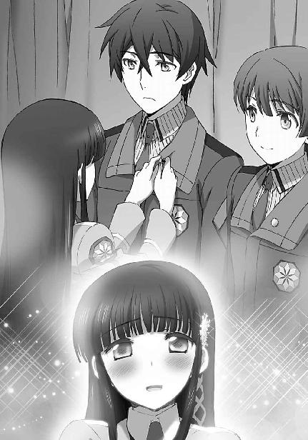
最後のメンバーの紹介が終わった直後の拍手。
それは、選ばれたメンバー全員に対する拍手にすり替わって、講堂全体に広がった。
◇ ◇ ◇
発足式が終わり、校内では九校戦へ向けた準備が一気に加速した。
出場種目も決まり、深雪は雫、ほのかと共に、毎日閉門時間ギリギリまで練習している。
達也はＣＡＤの調整と深雪の仕事の肩代わりで、これも毎日遅くまで駆けずり回っている。
運動部に所属しているエリカとレオも、色々と下働きを仰せつかっているようだ。
文科系クラブは美月だけなので、この一週間は彼女が一人で他のメンバーを待っていることが多い。
先週の発足式は、彼女にとってドキドキものだった。
席は自由、と言っても、暗黙のルールを踏み倒すには大きな勇気を要した。
彼女だけでは到底無理だった。と言うより、エリカがいなければ他のクラスメイトが一緒でも到底無理だった。
引っ込み思案という自覚があるだけ余計に、あの友人が眩しく、また羨ましく思えてしまう。
（でもエリカちゃんは何故あんなに一所懸命だったのかな......？）
美月自身は、エリカに引っ張られての行動だった。
無論、達也を応援したいという気持ちは彼女にも強かったが、後ろの方で拍手しているだけで自分なら満足だったと、あの時のことを振り返って、美月はそう思った。
エリカには愉快犯的なところがあるので、一科生のエリート意識を逆撫でしてやりたい、という動機もあったことだろう。
だが同時に彼女は、気まぐれで刹那的な気質の持ち主でもある。
面倒ごとに首を突っ込むのは好きでも、面倒ごとを自分から積極的に企図する方ではないと美月は見ている。自分たちだけならともかく、他のクラスメイトまで動員した熱心さは、単なる悪戯心だけでは説明できない気がするのだ。
（やっぱりエリカちゃんって、達也さんのこと......なの、かな......？）
エリカと一番仲が良い男子といえば、彼女の見た限り、レオだろう。
定期試験で理論三位を取った吉田とも、浅からぬ縁があるようだ。
しかし、達也に対するエリカの感情は、また別の種類、別の重さがあるように美月には思えた。
それを、思考の中でさえ、明確に言葉で定義することが、美月には何故か憚られた。
昇降口に立って、まだ五分も経っていない。
待ちくたびれるには早すぎる時間だ。
しかし同時に、思惟が取り留めを無くすには十分な時間だった。
考えるとも無しに、色々なことを思い浮かべる美月。
それは、ぼんやりしている、とも表現できる状態だった。
そうして、知覚が何か一つのことに集中していない状態、感覚が開放されている状態で、彼女は見慣れぬ波動に気がついた。
悩んだのはちょうど、一秒。
美月は思い切って、メガネを外した。
その途端、色の洪水が押し寄せた。
視界に様々な色調の光が溢れる。
目を痛めつける刺激に、美月は少しの間、じっと耐えた。
彼女にとってメガネを外す行為は、暗室からいきなり真夏の太陽の下へ連れ出されるようなものだ。
見えないようにしていたものがいきなり見えるようになる。
自分でもコントロールできない感覚がもたらす過剰な情報に、それを処理する視覚神経と脳が、悲鳴を上げる。
しかし、普通の人間ならそのまま意識を失ってしまうような情報量の暴虐も、彼女にとっては生まれたときから付き合って来た「もう一つの世界」だ。
人の目は、照り付ける最盛の陽光にも、しばらく待てば慣れるもの。
強い光に適応した、濃い色の瞳を持つ種族なら、時間を置かずとも、すぐに慣れる。
美月もギュッと瞼を閉じた後、二、三回まばたきするだけで、普通の魔法師が見ているものの何十倍もの想子光と、並みの魔法師では色を見分けることも難しい霊子光（霊子放射光）に目を馴染ませた。
メガネを丁寧にケースへ仕舞ってから、先程違和感を覚えた波動へ目を凝らす。
コーティングレンズに遮断された状態でさえ目に付いた光は、すぐに見つかった。
呼吸音のような、揺らぎを持ちながらも規則的な霊子のシグナル。
今ならば、光源の方向までハッキリ分かる。
美月は誘われるように、波動の発信源、実験棟へ足を向けた。
実験棟に近づくにつれて、ひんやりとした空気が漂い始めた、ように感じた。
季節は真夏、夕陽は山や丘の稜線によって凹凸に切り取られた、地平線ならぬ地「曲」線に近づきながらも、なお汗ばむ熱量を届けている。
これは錯覚だ。
真夏の熱気に、偽りの冷気を紛れ込ませる「何か」。
その「何か」は、引き返せと命じているような気がした。
近づくな、と脅しているような気がした。
未知のモノに対する不安で、身が竦んだ。
それなのに、美月の足は止まらなかった。
理性は引き返せと告げていたが、魔法に携わる者としての、魔法と共に生きることを運命づけられた者としての直感が、この先に待つものを、この「目」で確かめるべきだと言っていた。
実験棟の入り口は、軋みを上げたり哄笑を響かせたりといった効果音も特に無く、静かに開いた。
天井の照明パネルが、細かい文字を追うにも不自由の無い明るさを保っている。
何もかも、いつもどおり。
いや、ここは魔法を教える学校で、利用者の多い実験棟だ。
何か異常があれば、教師や上級生が気づかないはずは無い。
魔法科学校には、普通科学校よりも、怪談の入り込む余地は少ないのである。
何の警報も出されていない以上、美月の感じている異変は何らかの魔法による現象なのだろう。
あるいは──現代魔法が検知できない、本物の怪奇現象か。
心を翳めた不吉な思惟にゾクッと背筋を震わせながらも、美月の足は駆り立てられるように、あるいは引っ張られるように、前へ前へと進む。
導かれるままに階段を上がると、空気に混じったわずかな香気を美月は感じた。
この香りは、魔法薬学の実験で嗅いだ覚えがある。
鎮静効果を持つという複数の香木をブレンドした香りだ。
彼女がここまで追いかけて来た波動は、薬学実験室へと続いている。
異常な霊子放射光は、生徒の誰かが行っている魔法実験の産物らしい。
少なくとも未知の怪奇現象ではないと見当がついて、美月はホッと一息ついた。
そうすると、今まで不安の陰に隠れていた好奇心が頭をもたげた。
他人が魔法実験を行っている場に、招かれず立ち入ってはならないというのは、魔法実験の実習で最初に教わる注意事項だ。発動中の魔法と招かれざる闖入者の魔法演算領域の干渉により、思わぬ魔法の暴走が生じる危険性があるからだ。特に、未熟な魔法師──例えば、彼女たちのような新入生──が魔法実験に飛び込む行為は、大きな危険を伴う愚行だと繰り返し注意を受けている。
しかし今、美月の意識から、その警告がスッポリ抜け落ちていた。
方向性を取り違えた警戒心は、彼女の足音を殺し、閉ざされていた実験室の扉にそっと、のぞき見る隙間を作った。
物音を立てないように細心の注意を払いながら、わずかに開けた隙間に目を当てる。
次の瞬間、
美月は、危ういところで悲鳴を吞み込んだ。
いや、悲鳴というより、それは単なる驚きの声か。
薬学実験室の中では、青や水色や藍色の光の球がいくつも、空中を踊り回っていた。
一つ一つの光には「力」があり「意思」があった。
自然界のエネルギーの分布は均質ではなく、均質化する一方でもなく、散ったり集まったり絶えず流動しているということを、彼女は「見て」知っていた。自然現象を引き起こす「力」の塊が泡となって漂う姿は、美月にとって馴染みの光景だった。彼女の「目」に映る森羅万象のエネルギーは、人の心から流れ出す霊子の輝きに良く似ていた。
だが、漂い、飛び交うその塊に「意思」を感じたのは、今日が初めてだった。
（精霊......？）
これが精霊というものだろうか、と彼女は思った。
それ以外の思考が飛び去ってしまうほどの衝撃を──感動を、彼女は覚えていた。
そして、その精霊を呼び出しているのは──
「吉田くん......？」
なけなしの警戒心も忘れて、美月は呟いていた。
全く意識に無い、行動。
だが名前を呼ばれた方は、そうは行かなかった。
特に、誰も来ないはずの場所で、誰も見ていないはずの「術」の行使を見られた方としては。
「誰だ！」
条件反射に等しい誰何。
そこに込められた反射的な怒りに、「光」たちの「意思」が反応した。
「きゃっ！」
押し寄せる光の球に、美月は悲鳴を上げて目を閉じた。
そしてその直後、横合いから吹きつけた「突風」に、彼女は思わずしゃがみ込んでしまう。
髪も揺らさずスカートもなびかせない、想子の奔流。
それが彼女へと押し寄せる光の球を押し流し、彼女を守ったということに、目を閉じた美月は気づいていない。
恐る恐る瞼を開けた彼女が目にしたのは、憎悪に等しい激情をたたえて睨みつける幹比古と、その視線を無表情に受け止める達也の姿だった。
「......落ち着け、幹比古。今、ここで、お前とやりあうつもりは無い」
達也の突然の登場に目を見開き、しゃがみ込んだ姿勢のまま硬直する美月の視線の先で、当の達也は何も持たない掌を開いて両手を挙げた。
それは魔法師にもそうでない者にも共通する、戦意の無い標だ。
幹比古がハッとした表情を浮かべると同時に、それまでの敵意が噓のように消えた。
緊張した空気が消え去ったことで、ようやく硬直から解き放たれ立ち上がった美月の見ている先で、幹比古が悄然と項垂れた。
「......すまない、達也。僕も、そんなつもりじゃなかったんだ」
その姿は、居場所を無くした子供のようだった。
衝動的に「慰めてあげたい」と思いながら、適当な言葉が出てこない自分が、美月は歯痒かった。
だが幸い、気まずい沈黙に耐える必要は無かった。
「気にしていない。だからお前も気にするな。元はと言えば、魔法の発動中に術者の心を乱すような真似をした美月が悪い」
「ふえっ？ 私ですか!?」
慌てて振り返り、達也が人の悪い笑みを浮かべているのを見て、本気で責められているのではないと理解し、美月は胸を撫で下ろした。
「いや、彼女は悪くないよ」
だが幹比古は、そうは取らなかったらしい。
少し早口に、達也の言葉を否定する。
達也の指摘が一面の事実なだけに、余計慌てたのだろう。
「声を掛けられたくらいで心を乱した僕の未熟の所為だ。......それから、ゴメン、大事なことを忘れてた。ありがとう、達也。君のおかげで、柴田さんに怪我をさせずに済んだ」
「俺が手を出さなくても、怪我には至らなかったさ。今のは精霊魔法だろう？」
達也の問い掛けに、幹比古は何故か躊躇いがちに頷いた。
「家では天神地祇の教義に従って神祇魔法と呼んでいるけどね」
それでも、術者としてのアイデンティティに関わる部分は譲れないのか、しっかり自己主張していたが。
精霊魔法は古式魔法の一種。一般に精霊と呼ばれる独立情報体を介してエイドスに干渉する魔法のことを魔法学では広く「精霊魔法」と分類する。精霊のことをＳＢ（Spiritual Being）と略すこともあるが、学問的には通常、「精霊」と呼ばれている。
「俺には、精霊を見る能力は無いが、術の制御が効いていたのは分かる。それに、人払いの結界の中に踏み込んで来られては、驚くなと言う方が難しいだろうな」
「何故、結界のことを......そうか、達也は古式魔法も学んでいるんだったね。それに、術が効いているかどうかまで分かるなんて......君は色々な面で、非、いや、僕の理解を超えているようだ」
「素直に『非常識』と言ってくれても構わないが？」
からかうように笑いながら達也が言うと、幹比古も苦笑いを浮かべた。──喰いしばっていた口元を緩めて。
「まあ......いくら見られたくないからと言って、学校の実験室に結界を敷く方も相当非常識だとは思うが」
「違いない」
二人の笑い声が、張り詰めた空気を完全に拭い去った。
「今のは自然霊の喚起魔法か？ 実際に見るのは初めてだが」
「......今更隠しても仕方が無いね。達也の言うとおり、水精を使って喚起魔法の練習をしていたんだ」
達也の問いに、香木を焼べていた卓上炉を片付けながら、幹比古は答えた。
美月は幹比古の隣で、灰の落ちた机に雑巾を掛けている。
幹比古は当然遠慮したのだが、生真面目な美月はこういう所で頑固だった。
「水精ね......残念ながら俺には、霊子の塊があるということしか分からなかったんだが......美月にはどう見えたんだ？」
「えっ？ あっ、私も同じようなものですよ。青系統の色調の光の球が見えただけですから」
達也に問われた美月は、曖昧な笑みを浮かべながら両手を目の前で振った。
雑巾を持ったままそんな真似をした所為で、汚れた水滴が幹比古の顔に飛んだりしたのだが、急に話を振られて慌てていた美月は気づかなかった。
一方、汚水を浴びせられた幹比古の方はと言うと......これも、気づいていないようだった。
彼は目を大きく見開き、顔を強張らせていた。
「色調......？ 色の違いが、見えた......？」
「あの、えっと、......はい」
美月には、幹比古が何故（美月の主観的に）怖い顔をしているのか分からず、少しビクビクしながら答えた。
「あの......青とか水色とか藍色とか......。ああっ！」
真っ直ぐに幹比古を見ることができず、チラチラと窺い見ながら答えていた美月は、幹比古の顔についた水滴に気づいて奇声を上げた。
「ごごごめんなさい！ ええと、そうだ！ ハンカチハンカチ」
慌てて鞄からハンカチを取り出し、幹比古の頰を拭こうとする。
その伸ばされた手を、幹比古は乱暴に摑んだ。
驚きに顔を強張らせた美月を、そのまま手元に引き寄せる。
バランスを崩した美月を受け止め、キスを迫るように顔を寄せて、幹比古は美月の目をのぞき込んだ。
「あっ、あの......」
当惑と焦りで声が言葉にならない美月の意思は、幹比古に届いていない。
そのままじっと視線を動かさない幹比古と、パニックで顔を背けることもできない美月。
図らずも、見詰め合う二人。
「......合意の上なら席を外すが、そうでないなら問題だぞ？」
「わわっ！」
「きゃっ！」
呼吸すらも忘れてしまったかの如く、無言で固まっていた二人だったが、達也の呆れ声でようやく我に返ったのか、弾き合うように身体を離した。
「......ごめん」
「い、いえ......こちらこそ」
良く分からないやり取りだった。
幹比古が謝罪したのは分かるが──あんなセクハラまがいの行為、頰を張り飛ばされても文句は言えないところだ──、何故美月が謝る必要があるのか。
多分、混乱しているのだろうが、達也は何となくこの場に居辛い空気を感じた。
「......美月、エリカもレオも待ち合わせ場所に来ているんだが、その方が良ければ俺たちは先に帰っているぞ？」
「えっ？ あっ、達也さん、わざわざ呼びに来てくださったんですね......って、ええっ!?」
達也のセリフが意図するところを時間差で理解したのか（むしろ一人時間差という感じだったが）、急に叫び声を上げたきり、言葉を発さなくなってしまった。いや、何か言いたいことはあるのだろうが、口をパクパク動かすだけで声が出て来ない。どうやら動揺のあまり、言語中枢が故障してしまったようだ。
まあ、一時的なものだろう、と考えて、達也は他人のフリで明後日を向いている──残念ながら「ポーカーフェイスで」とは言えない──幹比古へ視線を移した。
「それで、急にどうしたんだ、幹比古？」
次なる興味は幹比古の突然の乱心。いったい、何が原因なのだろうか。
「ごめん、チョッと、ビックリして......」
話題が変わってホッとしたのか、幹比古はこれ幸いとばかり達也の問い掛けに乗ってきた。
「いや、俺に謝る必要はないが。それで、ビックリしたって、いったい何に？」
「そうだね......」
達也にそう言われて、幹比古はもう一度、美月に頭を下げた。
「本当にごめん。
まさか、精霊の色を見分けられる人がいるなんて思ってもみなかったから......。
もしかして、水晶眼の持ち主かと思ったら、いてもたってもいられなくなって、思わず......。
言い訳にしかならないけど、決して不埒な真似をしようとしたんじゃないから。
本当に、ただ、確かめたかっただけなんだ」
幹比古から向けられた生真面目な謝罪は、美月のパニックを沈静化させる効果を発揮した。
本人も言っているとおり、これは言い訳でしかない。
それはあくまで幹比古の好奇心、幹比古の事情であって、美月には何の関係もない。
だが、必死で言い訳をする幹比古を見る美月の眼差しは、柔らかく微笑んでいて、彼の行いをもう咎めてはいないと物語っていた。
「もう、いいですよ、吉田くん。私も、ビックリしただけですから」
そう言って、相手を和ませる笑顔でニッコリ微笑んだ後、小さく早口で「でも、恥ずかしかったんですから、もうこれきりにしてくださいね」と囁いた。
赤面しながらも、何度も頷く幹比古。
どうやら先程のセクハラ未遂は、平和的に解決したようだ。ついでに達也の掛けた冷やかし（？）も有耶無耶になってしまったが、達也に蒸し返すつもりは無かった。
「ところで幹比古、何をそんなに驚いていたんだ？」
二人が落ち着くのを見計らって、達也は幹比古への質問を再開した。
「精霊の色を見分けられるのが珍しいみたいなことを言っていたようだが？」
達也は想子情報体を解析する技能を有しているが、その際に情報体を映像で捉えているわけではないので、霊子情報体の色を識別するスキルが特異なものかどうか分からない。いや、霊子情報体を識別するスキルは間違いなく稀少なものだが、それを色として認識することがどのような特殊な意味を持つのか理解できない。
似たような疑問を懐いたのか、達也の問い掛けに、美月も同調の視線を幹比古へ向けている。
「それに、水晶眼というのは？ 差し支えなければ教えてくれないか」
自分もそれを訊きたかったと、美月は眼差しで語っていた。
「......いいよ、それほど秘密ってわけじゃないし」
答えるまでのタイムラグが、セリフどおりの軽い知識でないことを物語っていた。幹比古が時々投げやりな、いや、自棄になっているような態度を見せることに、達也は気づいていた。
「精霊には色がある。僕たち精霊を使役する術者は、色で精霊の種類を見分けている」
それでも、説明する言葉自体は、魔法について語る言葉自体は、投げやりではなく真摯なものだった。
「でも、それは本当の意味で見えているわけじゃないんだ」
美月が首を傾げた。
達也にも幹比古の言葉の意味は分からなかったが、性急に問うことはせず、目線で続きを促した。
「実は、精霊の色というのは決まったものじゃなくて、術の系統、式の流派によって、術者が『見る』色は変わってくるものなんだよ。
例えば僕の流派では、水精は青色をしている。
でも欧州には、水精の色は紫だと明言する流派もある。
大陸系の流派には、黒に近い紺色だとするものもある。
これは、場所によって、使役する術によって、精霊の波動に違いがあるからじゃない。
術者の認識の仕方が違うから、違う色に『見えて』いるんだ」
「......つまり、視覚的に捉えているのではなく、術を介して波動を解釈しているということか？」
「ご名答。
僕たちは、精霊を見分ける便宜上、その波動を色で解釈している。
精霊に色を付けている、と言えばいいのかな。
だから僕たちの認識する精霊の色は画一的だ。
僕の流派では、水精は青。火精は赤。土精は黄色。風精は緑色。
そこに濃淡はないし、明暗もない。
頭の中で分類して色を塗っているんだから、色調の違いが生じるはずもない。
水精はどんなものでも青一色。
認識のシステム上、水色とか藍色とかに見えるはずがないんだ」
「......だが美月には、それが見えた」
「多分彼女は、水精の力量の違い、性質の違いを色調の違いとして知覚している。本当に、精霊の色が見えているんだ。
そういう眼のことを、僕たちの流派では『水晶眼』と呼んでいる。
他流派では別の意味で使われることもある単語だけど、僕たちの流派では『神』を見ることのできる眼、とされている。
精霊の色を見ることができる者は、精霊の源であり集まりである、自然現象そのものである『神霊』を見て、認識して、そのシステムに介入する為の鍵を見つけることのできる存在だと伝えられている。
僕たちにとって水晶眼の持ち主は、神霊というシステムにアクセスする為の巫女なんだ」
「つまり、お前たちにとって、美月は喉から手が出るほど欲しい人材だということだな？」
「そうだけど......そんなに警戒しなくても良いよ。今の僕に『神』を御する能力など無い。一年前の僕なら自惚れて、有頂天になって、強引に彼女を自分のものにしたかもしれないけど、今の僕にはそんな欲も気概もない。だからといって、他の術者に神の術法へつながる鍵の存在を教えてやる気にもなれない。他の術者が神祇魔法の奥伝を極める姿を指をくわえて眺めているなんて、たとえそれが親兄弟であったとしても、真っ平ごめんだ。柴田さんの水晶眼のことは、誰にも言わないよ」
幹比古の強い眼差し。
それはどこか、狂おしい光をはらんでいた。
達也はそこに、変質した独占欲を見て取った。
自分だけのものにしたい、ではなく、誰のものにもしたくない。
幹比古は美月をそんな目で見ている。
「......そうだな。俺も、今の話は、胸の裡にしまっておこう」
友人を利用させないという点において、達也の利害は幹比古の想いに一致していた。
だから彼は、そう言って、頷いて見せた。
幹比古に対して。
美月に対して。
美月はそんな達也のサインをキョトンとした顔で見返して、その意味を理解できないまま、慌てて曖昧な笑みを返した。
［４］
八月一日。
いよいよ九校戦へ出発する日になった。
小樽の八校、熊本の九校のような遠方の学校は一足早く現地入りしているが、東京の西外れに居を構える一高は、例年前々日のギリギリに宿舎入りすることにしている。
これは戦術的な意味と言うより、現地の練習場が遠方校に優先割当される為である。
本番の会場は競技当日まで下見すらできない立入禁止なので、あえて早めに現地入りする必要もない──
「というわけなのだよ」
「はあ......まあ、分かりやすい説明でしたから良いんですが」
いったい誰に向かって講釈しているのか、と茶々を入れたくなるのを我慢して聞いていた達也は、摩利の短い説明が終わると同時に、誰の利益にも何の利益にもならないツッコミ衝動を小さく頭を振ることで意識の外へと追い出した。
二人が立ち話をしているのは、太陽が激しく自己主張している夏空の下だった。この炎天下、何を好きこのんで暑い思いをしているのか？ と問われても、達也としては答えようがない。
これは別に、彼の嗜好ではないからだ。
「ごめんなさ～い！」
軽快に鳴るサンダルのヒール音をＢＧＭに近づいてくる声の主を見て、自分だけちゃっかり日傘の下に避難していた摩利はため息混じりの笑みを浮かべ、ジリジリと太陽に炙られていた達也は無言で端末に表示されたリストにチェックを入れた。
──遅刻すること一時間三十分。ようやく、全員集合。
「真由美、遅いぞ」
「ごめんごめん」
咎める言葉も謝罪の言葉も、ただ、それだけ。
二人は何事もなかったように、大型バスへ乗り込んで行った。
と、思ったら、真由美が手ぶらでバスから出て来た。
「......何か忘れ物ですか？」
ポーカーフェイスが保てているかどうか、少し不安を覚えながら達也は問い掛けた。
着替えや化粧品などの宿泊用品──宿泊に化粧品という知識は無論、深雪から教わったものだ──は、コンテナにパッキングして積み込み済みだ。各自の自宅から直接配送された箱をそのままコンテナに詰め込む時点で、全員分漏れがないことは確認している。
仮に入れ忘れたものがあったとしても、大抵のものは宿舎に用意してあるということだし、せいぜい二時間程度のバスの旅に必要となる手荷物などそれほど多くは無いだろう。
「ううん、そうじゃなくて......。ゴメンね、達也くん。私一人の所為で、ずいぶん待たせちゃって」
「いえ、事情はお聞きしていますので」
真由美が遅刻したのは、寝坊したとか時間を間違えたとかそういう無責任な理由によるものではなかった。
急遽、家の事情で遅れるという電話があったのは、今から三時間前。
その時の電話口で真由美は、現地で合流するので出発しておいて欲しいと言っていたのだが、三年生全員の意見が彼女を待つということで一致したので、真由美も大急ぎで合流したという次第だった。
彼女は七草家の跡取り、というわけではない。
彼女の上には二人の兄がいる。
十師族直系といっても、まだ高校生の、三番目の妹まで家の仕事に駆り出されるような事態は、少なくとも頻繁に起こることではないはずだ。それが、学校の公式行事に絡んだ当日の朝になって急に呼びつけられるというのは、余程の用だったに違いなかった。
真由美にとっては、他の生徒が先に出発していてくれた方が、おそらくは急かされることもなく都合が良かったことだろう。だが彼らが──と言っても達也は内心反対だったのだが──待っていると言い出したが為に、真由美は無理をして駆けつけたのである。
だから一時間や二時間程度の遅刻を責める気持ちに、達也はなれなかった。
「でも、暑かったでしょう？」
「大丈夫です。まだ朝の内ですし、この程度の暑さは、何ともありません」
達也が乗車確認役を命じられたのは、彼が裏方唯一の一年生だからという必然的な理由によるもの。
選手四十名、作戦スタッフ四名、技術スタッフ八名。
選手を除いた十二名のうち、一年生は達也だけだ。
無論、この十二名の他にも裏方は用意されている。作戦・技術スタッフ以外に、会場外でのアシスト要員として有志二十名が組織されていたが、彼らは別ルートで現地に向かっている。現在この場に、教師もいない。大型バス一台、作業車両四台のこのキャラバンで移動するのは、運転手を除けば正式スタッフのみだった。
「でもそんなに汗を......って、あら？ ホントに、あまり汗をかいてないのね」
「いえ、まあ、さすがに汗を乾かす程度の魔法なら使えますので......。真夏に汗をかかない程、変態ではないつもりです」
彼が使用したのは汗の水分と成分を、皮膚と衣服から空中へ発散させる魔法。
達也の固有魔法『分解』は、系統で言えば分離魔法の亜種、『収束』『発散』『吸収』『放出』の複合魔法だが、どちらかと言えば『発散』の比重が高い。
その為か彼は、発散系統の魔法なら比較的得意としている。
「変態って......」
そんなに変なセリフではなかったはずだが、チョッとしたツボにはまったのか、真由美はクスッと笑みを浮かべた。
多分、季節の所為だろう。
向日葵のような笑顔だと、この時、達也は思った。
おそらくは、日差しと気温と湿度がもたらした錯覚。
......その証拠に、真由美の笑みは一瞬で、いつもの悪戯好きな笑顔に変わった。
「ところで達也くん、これ、どうかな？」
これ、と言うのは、まあ......間違いない。
真由美が着ているサマードレスのことだろう。
幅広の帽子のつばを両手で押さえて、気取ったポーズをつけられては、あえて誤解したくても少しばかり難しい。
今日は宿舎に入るだけで、公式行事は一切無い。
それ故にか、学校行事の一環であるにも拘わらず、制服の着用は義務づけられていない。
一年生は達也も含め、一人残らず制服を着ているが、二年生は半数以下、三年生に至ってはほぼ全員が私服姿だ。
それでも、公の席では肌の露出を抑えるべし、という現代流の服装マナーが染みついているのか、摩利のように、風通しの良いゆったりした長袖シャツに踝まである薄手のパンツ、というような格好の生徒が多かった。
目についた例外は、千代田という二年生女子生徒の、ショートパンツに大腿部まである長いソックスという、露出が多いのか少ないのか分かり難いファッションと、彼女に強要されたという五十里の、ハーフパンツにハイソックスというある種ペアルックじみたハイキングスタイル。（ちなみにこの二人は付き合っているらしい）
その中で、真由美のファッションは非常に目立っていた。
異常に目立っていた、と表現した方が適切かもしれない。
両腕両肩がむき出しのサマードレス。
スカート丈も膝上まで。
素足に、ヒールの高いサンダル。
肌が褐色味を帯びているのは、赤外線反射、紫外線カットの通気性コーティングフィルムを塗り着けているからだろう。その点を考えに入れれば全くの素肌を露出しているというわけでは無いのだが、その色合いが逆に、ほどよく日焼けしたセクシーな肌、という困った錯覚を演出してもいる。
「とても良くお似合いです」
大胆な花柄のワンピースは、本当に良く真由美に似合っていた。
「そう......？ アリガト」
おどけた口調と少しはにかんだ表情の組合せもまた、絶妙。
「......もうチョッと照れながら褒めてくれると、言うこと無かったんだけど」
指を絡めた両手を腰の前へ伸ばし、上目遣いですり寄る、二歳年上の女の子。
小柄な身長に平均的なサイズの胸は、両腕に挟まれてくっきりとした谷間をのぞかせている。
ここまで来ると、狙ってやっているとしか思えなかった。
「......大変だったんですね」
「......えっ？」
急な用事というのがどんな内容のものだったのか、今の達也に知る術は無いが、余程ストレスが溜まっているに違いない。
「行きましょう、会長。バスの中でも、少しは休めると思います」
──達也は、そう考えることにした。
「チョッと、あの、達也くん？ 何か勘違いしてない？」
急に、労りに満ちた態度とどこか同情を含んだ視線を向けられて、真由美は目を白黒させた。
◇ ◇ ◇
「......もうっ、達也くんったら人を躁鬱扱いするなんて、失礼しちゃうわ」
走り出したバスの中で頰を膨らませて怒る真由美へ、通路側の隣席に座った鈴音が生暖かい目を向けていた。
「隣に、って言ったのに、さっさとあっちへ逃げちゃうし」
ちなみに達也は技術スタッフの一人として作業車両に乗り込んでいる。客観的に──あるいは、表面的に見るなら、真由美を避けたわけではない。
「私のことを何だと思ってるのかしら」
「的確な判断です」
「えっ、リンちゃん、今なんて言ったのかな？」
ハイテンションで愚痴をこぼし続ける真由美に、鈴音が淡々とした口調でツッコミを入れる。
にこやかな笑みを形作りながら、目はちっとも笑っていないという怖い笑顔で、これまた表面上──だけは──朗らかな声で問い返されても、鈴音の冷静な表情は全く刃毀れしなかった。
「会長の餌食になるのを回避するには、的確な判断だと申しましたが」
「チョッ？ ヒドイ！ それ酷すぎないっ？」
むしろ、大真面目に断言されて、真由美の余裕ぶった仮面の方にひび割れが生じた。
「会長の艶姿に耐えられる男子生徒は、ほとんどいないでしょう。会長の美貌にはそれだけ大きな魔力がある、ということですが」
「......えっと......」
「............」
あまりにも真面目くさった顔で言われた所為か、真由美はそれが本気なのか冗談なのか、少し戸惑ってしまった。──魔法師になろうとする者が「美貌の魔力」などと口にした時点で、冗談なのは決まりきっているのだが。
「もっとも、聞けば司波君は相手の魔法を無効化する技能に長けているとか。会長の魔顔も、彼には通用しないかもしれませんね」
口で発音されただけであるにも拘わらず、真由美は何故か「マガン」を「魔眼」ではなく「魔顔」と、鈴音の意図するとおりに認識した。
「......リンちゃん！」
それでようやく、百パーセントからかわれていたのだという事に気づいた。
「まあまあ、落ち着いて下さい、会長」
「貴女がそれを言う!?」
依然として大真面目な表情を崩さない友人に憤然とした顔で詰め寄り、やはり効果がないと見届けて、真由美は鈴音へ背を向け不貞寝気味に丸くなった。
背中を丸めて横向きになった姿は、見ようによっては──
「あの、会長。やはり、ご気分が悪いんですか......？」
──こういう風に見える。
鈴音の頭越しに、通路から掛けられたのは、とても心配そうな、緊張した声。
「えっ？ ううん、そういうんじゃ......」
真由美にしてみれば、思わぬ誤解だった。
彼女が戸惑っている内に、わざわざ立ち上がって様子を見に来た服部の誤解──あるいは思い込み──はどんどん先へ突っ走っていた。
「会長がお疲れのようだと司波が言ってましたが、杞憂では無かったのですね。あの男も、分を弁えていない点を除けば......いえ、そんな場合ではありませんでした」
「えっと、はんぞーくん？ だから私は別に、気分が悪かったわけでは......」
「我々に心配をさせたくないという会長の御心遣いを尊重すべきとは存じましたが、ここで無理をされてますます体調を崩されては元も子もありません」
服部は大真面目な表情で──こちらは心から彼女の体調を案じていると分かる真剣な眼差しで、真由美を見詰めている。
少し顔が赤いのは、少々だらしなく座っていた所為で、サマードレスのスカートから太ももがのぞいている為だろうか。それでも、膝はきちんと閉じているのだが。
「服部副会長。どこを見ているのですか？」
念の為にもう一度状況を説明するが、服部は真由美の顔を見詰めている。
それ以外の箇所は見ていない、が、それは同時に──見ないようにしているという側面もあった。
心配になって真由美の席をのぞき込んで、視界に飛び込んで来たものから慌てて目を逸らした──後ろめたさを感じるだけの、身に覚えがあるだけに、服部は狼狽を隠し切れなかった。
......そんなことに後ろめたさを覚え、そんなことで動揺してしまうのはむしろ、彼が真面目で純情な少年であるという証でもあるのだが。
「市原先輩!? 私は別に、何も見てなどっ......。いえ、その、会長に、ブランケットでもと思いまして......」
しかしこの場合、そんな純情青年ぶりは、上級生のお姉さまにとって、いい餌食である。
「服部副会長が会長にブランケットを掛けて差し上げるんですか？ ではどうぞ」
さも納得したと言わんばかりの訳知り顔で席を立ち、鈴音は目と言葉で、服部に促した。
真由美はといえば、心得たとばかり、恥ずかしそうな上目遣いで大きく開いた胸元を両手で隠す真似などしている。
ブランケットを両手で広げた姿勢でフリーズする服部。
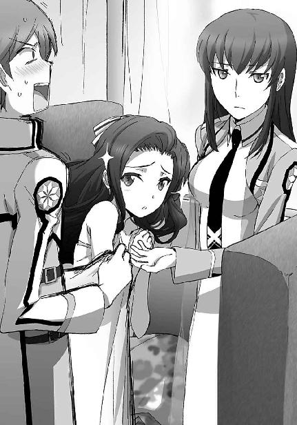
真由美の目には、確かに、嗜虐心が見え隠れしている。
どうも少し、真由美は抑えが利かなくなっているようだ。
......司波君の見立ては正確でしたね、と鈴音は内心で思った。
自分のことを棚に上げて。
◇ ◇ ◇
「何をしているんだ、あいつらは......」
硬直している服部を、期待に満ちた眼差しで真由美が見上げ、それを横から鈴音が冷ややかに見ているという変則的な三竦みに、摩利は微かな、自分以外には聞こえない程度の呆れ声をため息と同時に吐き出した。
どうやらいつもどおり服部が真由美の玩具にされているらしい、と分かって、浮かせていた腰を座席に戻す。（ちなみに彼女の席は通路を挟んだ鈴音と反対側の席だ）
口には出せないが、摩利も真由美の体調を少しばかり心配していただけに、脱力感もひとしおだった。
「まあ......いつもどおりか......」
ああして真由美が弄り倒すから、服部がストレスを溜め込んで必要以上に二科生に対し見下すような態度を取り、更に副会長のそういう振る舞いを会長として真由美が思い悩むという悪循環が生じていると、摩利は密かに睨んでいる。そしてそのことを、彼女は内心で苦々しく思っていた。
とは言うものの、真由美が自分より遥かに大きな気苦労を常日頃抱えている、ということも、摩利は知っている。
彼女の実家は、家系こそ古いものの──噓か真か、渡辺綱の末裔らしい──現在の勢力地図上で見るなら、百家の末流に辛うじてぶら下がっている、という程度だ。
摩利は一種の突然変異と言うか先祖返りと言うか鬼子と言うか、とにかく親類縁者の中で一人だけ突出した魔法の才能を有しており、その分、家族の期待は大きいものの、魔法師社会で他家との駆け引きに煩わされるということは、ほとんど無い。
それに対して、現在、四葉家と共に十師族の頂点に君臨している七草家の、跡取りではなくとも直系、しかも長女である真由美には、高校在学中にして、どころか、高校生にもならない内から、たびたび縁談が舞い込んで来ている。（これは噂ではなく確実な情報だ）
また彼女自身、十師族の中で比較してもなお、「傑出した」と言える魔法の才能の持つ、将来を嘱望されている魔法界のサラブレッドだ。
それに加え、学校では生徒会長など務めて要らざる気苦労を背負い込んでいる有様。
いくら芯はタフといっても、楽ではないはずだ。
少し羽目を外すくらい、見逃してやるべきだろう、と摩利は思うのだ。
友人として──と、たとえ思考の中だけであっても付け加えないところが、彼女の偽悪的というかシャイな一面かもしれない。無論、そんなことを面と向かって本人に言えば、その人間は殴り倒される羽目に陥るだろうが。
──閑話休題。
そんな訳で、エスカレートするまで放置しておこう──何だかんだいって、服部も構ってもらえて嬉しいようだし──、と決めた（決めつけた？）摩利は、窓の外へ目を遣った。
彼女の席は二人がけ通路側。
必然的に、窓側に座っている人間が目に入る。
「......何でしょうか、摩利さん？」
こちらもあまり元気がなさそうな女子生徒が、摩利の視線に気づいて問い掛けて来た。
「んっ？ いや、あたしは外を見ていただけだよ、花音」
摩利も遠景から隣の座席へ焦点を移し、とりわけ女子に人気の高いクールな笑みをその二年生、千代田花音へ向けた。
彼女は摩利が特に目をかけている後輩で、次の風紀委員長には彼女を据えようと色々手を回しているところだ。
達也に頼んだ（達也が聞けば、有無を言わさず作らせられたんだ、と強く主張するに違いない）引継資料も、実を言えば彼女の為の物だった。花音がいなければ、摩利も詳細な資料を作ろうなどとは思わなかっただろう。
花音の千代田家は、同じ百家の中でも本流を構成する家で、優秀な魔法師を輩出する本当の意味での「百家」だ。
百家、というのは、家の数が百あるという意味ではない。
十の位の次は百の位、という駄洒落みたいなもので、「十師族に次ぐ位の家柄」を意味する。
ちなみに十師族も十の家系で構成されているというわけではない。十師族を名乗る資格のある家系は合計二十八あって、その中でその時代に強力な（優秀な、でないところがミソ）魔法師を数多く出している家を上から順番に十家選んで「十師族」としている。
真由美の七草家は特に多数の優秀な魔法師を輩出することによって、四葉家は当代における世界最強の魔法師の一人と目され、「極東の魔王」「夜の女王」の異名を持つ、四葉真夜を当主に戴く事によって、十師族の双璧と見なされている。
現在十師族を構成する家は、「一条」「二木」「三矢」「四葉」「五輪」「六塚」「七草」「八代」「九島」「十文字」と、たまたま一から十までの数字が揃っているが、これは十師族という序列が生まれてから初めてのことで、今までは数字に二つ三つの重複・欠番があるのが当たり前だった。
十師族と、その補欠とも言える残り十八の家系、そしてその次に位置する本物の「百家」。
その百家の一つが花音の千代田家であり、対物攻撃力なら摩利を凌ぎ、陸上兵器相手なら十師族の実戦魔法師に勝るとも劣らない戦闘力を誇る彼女は、千代田の直系を名乗るに相応しい魔法力の持ち主だった。
もっとも、花音に元気が無いのは、家の仕事が回ってきて忙しかったから、とかいう理由によるものではない。その辺り、真由美とは随分事情を異にしている。
摩利の答えに「そうですか」と呟いた花音は、視線を窓の外へ戻し、「はぁ......」とアンニュイなため息をついた。
その様が無駄に色めいていて、摩利には少々鬱陶しかった。
「花音......」
「はい？」
再び振り向いた花音の視線の先には、先程と打って変わった顰め面。
もっとも、顰に倣うの故事に似て、そんな表情さえ、摩利は魅力的だった。──主に、女性から見て。
「宿舎に着くまで、せいぜい二時間だろう。何でそのくらい、待てないんだ？」
「あっ、それ、酷いです！ 小さな子供じゃあるまいし、あたしだって、二時間や三時間程度、待てますよ！」
摩利が呆れ声で訊ねた途端、花音は別人のように元気になった。
唇を尖らせて抗議する顔の動きに合わせて、ボーイッシュなショートの髪が軽やかにはねる。
「でもでも、今日はバスの中でもずっと一緒だって思ってたんですよ。少しくらいガッカリしてもいいじゃないですか！」
「お前たちはいつも一緒にいるじゃないか......。いくらフィアンセとはいえ、下手をすればあの司波兄妹よりも一緒にいる時間が長いんじゃないのか？」
「バス旅行なんて今時滅多に無いんですから、楽しみにしてたんですっ。去年はあたし一人でしたし。それに、兄妹と許婚同士なら、許婚同士の方が一緒にいる時間が長くて当然です！」
「......そうなのか？」
「もちろんです！」
胸を張って──こう言っては何だが、少々ボリュームが不足している──断言する花音を前に、摩利はこっそりため息をついた。
この後輩、普段は果断即決・有言実行、タフでポジティブで摩利好みの凛々しい少女なのだが......。
（毎度の事ながら、五十里が絡むと別人だな、コイツ......）
「だいたいなんで、技術スタッフは別の車なんですか！ 走行中に作業なんてできないんだから、分ける必要なんて無いじゃないですか！ このバスだってまだまだ乗れるし、席が足りないなら二階建てバスでも三階建てバスでもあるでしょうに！」
いいはけ口を見つけたとばかり、なおもキャンキャンと不満をぶちまける花音に、摩利はもう一度、こっそりため息をこぼした。
◇ ◇ ◇
このバスには、花音と同じ不満を抱えている少女がもう一人いた。
──こちらは、花音のように騒いだりせず、しかしそれがかえって、彼女の友人たちには妙に怖かったのだが。
「............」
「......ええと、深雪？ お茶でもどう......？」
「ありがとう、ほのか。でも、ごめんなさい。まだそんなに喉は渇いていないの。わたしはお兄様のように、この炎天下に、わざわざ、外に立たせられていたわけじゃないから」
静かで、柔らかな口調だった。
見ているだけでヒンヤリとさせられる、全てを白く埋め尽くし塗り潰す深い雪のように。
「あ、うん、そうね」
慌てて相槌を打ったほのかの脇腹が、通路の向こうから軽く指でつつかれる。
（お兄さんのことを思い出させてどうする）
（今のは不可抗力よっ）
ほのかも雫も、テレパシーは有していない。にも拘わらず、目と目でここまで明瞭に通じ合うのは、不気味な威圧感を漂わせている深雪を「何とかしたい」という思いを、一つにしているからだろうか。
「......まったく、誰が遅れて来るのか分かってるんだから、わざわざ外で待つ必要なんて無いはずなのに......。何故お兄様がそんなお辛い思いを......」
遂にブツブツ声に出して愚痴り始めた深雪は、ハッキリ言って怖さ倍増だった。
ほのかは、逃げ出したかった。
せめて雫に、席を替わって欲しかった。
だがこの状況で席を替わったりしたら、深雪に何をされるだろうか？
──いや、深雪はその程度のことで友人に何かをするような少女ではないのだが、彼女が身に纏わせている不穏な空気は、そんな妄想すら抱かせるレベルのものだったのだ。（ちなみに雫の隣の席に座っている一年生女子生徒は小さくなって窓の外へ視線を固定していた）
「......しかも機材で狭くなった作業車で移動だなんて......せめて移動の間くらい、ゆっくりとお休みになっていただきたかったのに......」
怯えているほのかを見て、雫はため息をついた。
深雪の独り言に、「わたしの隣で」が抜けてるよ、と彼女は思ったのだが（つまり雫の脳内では、深雪の独り言は「わたしの隣でゆっくりとお休みに」と変換されていた）、口にしたのは別のセリフだった。
「でも深雪、そこがお兄さんの立派なところだと思うよ」
話し掛けるついでに、乗り出すようにしてほのかと席を替わる。
背後で拝んでいるほのかの姿は、背中を向けている雫はもちろん、深雪の目にも留まらなかった。
独り言を聞かれていたとは思っていなかった深雪は、とっさに反応できない。
雫はそこへ、すかさず、普段の口数の少なさが噓のように畳み掛けた。
「バスの中で待っていても文句を言うような人は、多分ここにはいない。でもお兄さんは『選手の乗車を確認する』という仕事を誠実に果たしたんだよ。確かに出欠確認なんてどうでもいい雑用だけど、そんなつまらない仕事でも、手を抜かず、思いがけないトラブルにも拘わらず当たり前のようにやり遂げるなんて、中々できることじゃない。深雪のお兄さんって、本当に素敵な人だね」
こういう歯の浮くようなセリフを赤面もせずに言えるのは雫のキャラクターよねぇ、と思ったのはほのかだ。
深雪は雫の、大真面目な表情から繰り出された大袈裟な賛辞に、虚を衝かれたのか目を見開いて絶句している。
「......そうね、本当にお兄様って、変なところでお人好しなんだから」
辛うじて照れ隠しで応じた深雪から、底冷えのする威圧感は消え去っていた。
ほのかは雫の背中に隠れて、ガッツポーズを取っていた。
◇ ◇ ◇
人という生き物は、一部の例外を除いて、見たいものしか見ないようにできている。
見たくないものを見なかったことにするようになってしまった、と言う方が正確かもしれない。
五感から得られる情報は、快適なものよりも不快なものの方が、生物にとっては重要であることの方が多い。不快なものとは自分を脅かすものであり、脅威をいち早く見つけることが生存の鍵となるのだから。
だが人は、見たくないものから目を逸らす。
例えば、自分たちを皆殺しにする大量破壊兵器が、間違いなく自分たちへ向けられていると知っていても、土壇場になるまでその事実を無視している。
本当の意味での生存競争と縁が遠くなった先進国の人間ほど、その傾向は強い。
それほど大袈裟な例でなくとも、見たくないものを見なかったことにしてスルーするという事例は、日常生活の中で枚挙の暇がない。
──例えば、見目麗しい美少女が撒き散らしていた、剣吞なプレッシャーとか。
いつものお淑やかな雰囲気に戻った深雪の周りには、男子生徒が群がっていた。
さっきまで、近づこうとさえしなかったのだが。
深雪は気後れを感じるほどの美貌だから、馴れ馴れしく付きまとわれるようなことはなかったが、主に一年生が、それに混じって二年生や三年生も、何かにつけて声を掛けてくる。
いい加減それを見かねた摩利が、深雪たち三人の席を強制的に自分の席の後ろへ移動させた。
そんな訳で現在は、ようやく平穏を得られた深雪と、好きなだけ愚痴ってすっきりした花音が窓際の席の前後に座り、花音の横には摩利、深雪たちの後ろには克人を呼び寄せて睨みを利かせることで、バスの中は何とか落ち着きを取り戻していた。（なお真由美は、服部を散々弄り倒して満足したのか、すやすや眠っている）
女友達同士のお喋りも楽しくはあるが、何となく物足りない。
同じ想いを抱いた二人の少女は、窓際の席で、流れ去る風景をぼんやり眺めていた。
だから、それに気付いたのは、深雪と花音の二人が一番早かった。
「危ない！」
叫んだのは花音だった。
彼女の声につられ、バスの中のほぼ全員が対向車線側の窓へ目を向けた。
対向車線を近づいて来る大型車──といってもこのバスより小さい、レジャー向けのオフロード車──が、傾いた状態で路面に火花を散らしているのだ。
パンクだ、と誰かが叫んだ。
脱輪じゃないか、と誰かが興奮した声で語った。
その声に、危機感は無い。
ハイウェイの対向車線は道路として別々に作られており、堅固なガード壁で仕切られている。
対向車線の事故で影響を受けることはまずあり得ない。
対岸の火事は、若い彼らにとって、興奮を呼ぶ見世物だった。
ほんの短い時間、──その瞬間までは。
誰かが、悲鳴を漏らした。
一人では、なかったかもしれない。
それも、無理のないことだった。
いきなりスピンし始めてガード壁に激突した大型車が、どんな偶然か、宙返りをしながら自分たちの方へ飛んで来たのでは。
急ブレーキがかかり、全員が一斉につんのめる。
苦鳴は、注意事項を無視してシートベルトを締めていなかった生徒か。
バスは止まっている。
直撃は避けた。
だが、進路上に落ちた車は、炎を上げながらこのバスへ向かって滑って来る。
「吹っ飛べ！」
「消えろ！」
「止まって！」
「っ！」
パニックを起こさなかったのは、本来であればむしろ、褒められるべきかもしれない。
だがこの場合は、事態をかえって悪化させた。
瞬間的に、無秩序に発動された魔法が無秩序な事象改変を、同一の対象物に働きかけた。
その結果、全ての魔法が相克を起こし、事故回避が妨げられる。
「バカ、止めろ！」
摩利はそのことに、すぐ気づいた。
幸い、行使された魔法は全て、発動中のまま未完成の状態だ。
中途半端な状態の魔法を全員がキャンセルすれば、意味ある手を打つ時間はまだ残されている。
強力な魔法は一瞬で現実を書き換える。
ここには、卵あるいは雛鳥とはいえ、それを可能にする魔法師が揃っているのだ。
だが──彼女の声に従うだけの判断力を残していたら、そもそも無秩序に魔法を放ったりはしていない。
そして、先に発動された魔法の効果を打ち消して意図した効果を実現する為には、発動中の魔法を圧倒する魔法力が必要だ──
「十文字！」
摩利は、その可能性を持つ魔法師を呼んだ。
克人は既に、魔法発動の態勢に入っている。
だが彼の顔に、滅多に見せぬ焦りの色を見出して、摩利は絶望に捉われそうになった。
彼女にも分かっている。
この無秩序に魔法式が重ね掛けされた空間は、キャスト・ジャミングの影響下と類似した状態になっている。
これではいくら克人でも、炎と衝突の両方ともを防ぐことは......
「わたしが火を！」
窓際で立ち上がったのは、たおやかな一年生。
彼女は既に、魔法の発動準備を終えていた。
それを見た克人が、防壁の魔法式を構築する。
だがいくら飛び抜けた才能を持つとはいえ、この想子の嵐の中で、一年生が魔法を有効に使えるのか──？
その瞬間、摩利はそれを、自分の錯覚かと思った。
魔法を知覚する、魔法師としての、自分の感覚を疑った。
深雪が魔法を発動するその直前、迫り来る、炎を纏う鋼の塊に対して、
無秩序に発動していた魔法式が、一瞬で、全てかき消されていた。
そしてまるで、それが起こることを予期していた様なタイミングで、深雪の魔法が発動した。
炎上した自動車を凍らせることもなく、ドライバーを窒息させる空気遮断でもなく（とはいっても、生存は絶望的だが）、常温へ冷却することにより瞬時に消火を果たした鮮やかな魔法。
その手際に、摩利は思わず感嘆を漏らした。
同時に、それが分かったということは、摩利の魔法感受性が正常である証だった。
克人が展開した防壁の魔法──設定したエリアに設定した方向から侵入した物体の運動状態を静止状態に改変する移動系魔法──で、既に残骸となっていた車が潰れる音を聞きながら、摩利の意識は眼前の脅威から離れていた。（克人の魔法が突っ込んでくる自動車を受け止めることを、摩利は全く疑っていなかった）
今、いったい何が起こったのか。
事故回避の為の魔法を妨げていた魔法式をかき消したあの現象は、いったい何だったのか。
真由美の魔法だろうか？
ふと浮かんだその考えを、摩利はすぐに打ち消した。
確かに真由美ならば、あの無秩序な魔法式の乱舞に対処することもできるだろう。
だが真由美の対抗魔法（魔法に対抗する為の魔法）なら、投射された複数の魔法式を、想子の弾丸で同時に撃ち抜き破壊するという形態を取ったはずだ。
あんな風に、全ての魔法式を無差別に、粉微塵に破砕して、かき消してしまったりはしない。
真由美の魔法が精密に管制された対空砲火なら、あの魔法は（あれが魔法だとしたら、だが）絨毯爆撃で市街地を焼け野原に変えてしまうようなものだ。柱の一本も残さず鉄骨も全て溶解し基礎のコンクリートすら吹き飛ばして、完全な更地に変えてしまう──そんな、暴力的な代物だった。
深雪は、摩利も克人も魔法力の混沌に立ち竦んでいたあの場面で、相克状態が消し飛ばされるのを知っていたかのように、躊躇なく魔法を放った。
彼女はあの「魔法」の主を知っているのだろうか？
まさか、あの魔法は......？
「みんな、大丈夫？」
追走していた作業車──今はこのバスのすぐ後ろで止まっている──を凝視していた摩利は、落ち着いた真由美の声にハッと我を取り戻して振り向いた。
「危なかったけど、もう心配要らないわ。十文字くんと深雪さんの活躍で、大惨事は免れたみたい。怪我をした人は、シートベルトの大切さを嚙み締めて、次の機会に役立ててね？」
次の機会なんて無い方がいいけどね、とおどけてウインクしてみせる真由美に、あちこちで笑い声が生じた。
全員が緊張と恐怖から解放され、ホッとした表情を浮かべていた。
「十文字くん、ありがとう。いつもながら見事な手際ね」
「いや......消火が迅速だったから、止めるのに集中できた。あと、無闇にばら撒かれた魔法式を消したのは七草か？」
克人に問われた真由美は、バツ悪げに目を泳がせた。
「あ～、私、バスが止まるまで気づかなかったから......」
そういえば、真由美は事故の直前まで眠っていたのだった。
克人もそれをすぐに思い出したようだが、眉を一度上下させただけで、追い討ちを掛けるようなことはしなかった。──この学校の幹部の中で、一番の人格者は間違いなく克人だろう。
「あっ、それに深雪さんも。素晴らしい魔法だったわ。あの短時間にあんな絶妙なバランスの魔法式を構築できるなんて、私たち三年生にも難しいわね」
真由美の言葉に、克人も、摩利も頷いた。
三人とも、あの様な緊急時に、やり過ぎない──適切な魔法を選択し、その威力を適度に抑えることの難しさを十分理解していた。
真由美から手放しに褒められて、深雪はほんのりと頰を染めた。
「光栄です、会長。ですが、魔法式を選ぶ時間ができたのは市原先輩がバスを止めてくださったからで、そうでなければとっさにどんな無茶をしてしまったことか、自分でも少し怖いです。市原先輩、ありがとうございました」
深雪から丁寧なお辞儀を向けられて、鈴音も無言で会釈を返した。
深雪の前の席では、花音がポカンとした顔で背もたれ越しに振り返っていた。
摩利も驚きを隠せなかった。
言われてみれば、バスのブレーキだけで、あそこまで速やかに停止できるはずはない。
ブレーキが掛けられた後、それを補う形で減速魔法が働いたのは想像に難くなかった。
だが彼女は、突っ込んで来る車を相手に放たれた魔法に気を取られて、バスを止める鈴音の魔法に気づかなかったのだ。
誰もが目の前の脅威に目を奪われていた時、足元を見据えて的確に講ずべき手を講じる。
精度においては摩利たち三人をも凌ぐと評される鈴音の面目躍如たる活躍であり、同時に、誰も気づかなかった鈴音の魔法に一人だけ気がついていた深雪の才能は空恐ろしくさえあった。
「それに比べてオマエは......」
「いたっ！ 摩利さん、いきなり何するんですかっ？」
突然頭を叩かれて、花音が涙目で抗議の声を上げた。
「うるさい。文句を言える立場か、花音。森崎や北山が慌てて魔法を放って事態を悪化させたのは、まあ、仕方がない。あいつらはまだ一年生だ。だが二年生のオマエが、真っ先に引っ搔き回すとはどういう了見だ！」
「うう、でも、あたしが一番早かったんです。まさか、他の人が重ね掛けしてくるなんて思わなかったんですよぉ......」
花音の言い訳に、森崎と雫が恥ずかしそうに俯いた。
他にも、居た堪れなげな顔をしている者が何人もいた。
「何でも早けりゃ良いってもんじゃない！ もう少し状況を良く見ろ。ああいう時はまず、声を掛け合って相克が起こらないようにするのが基本じゃないか。それに、相克が生じた時点で魔法を解除しなかったのは、冷静な判断力を失っていた証拠だ」
「......すみませんでした」
シュンとしてしまった花音を見て、摩利もそれ以上、責めようとはしなかった。
ああは言ったが、あのような場面で冷静な判断力を保ち続けることは、場数を踏まなければ普通はできない。
それを考えると、深雪がキチンと、自分が消火を担当すると声に出していたのは、驚くべきことと言っていい。
才能だけで、できることでは無い。むしろ、天才は往々にして自分だけ突出しようとする傾向があり、この手の協調を取るのは逆に苦手としているものだ。
花音はその意味で、典型的な天才肌。
深雪は何か、余程の修羅場を経験しているのだろうか。
バスが走り出すのを大人しく待っている落ち着いたたたずまいは、そのような経験値に相応しいとも相応しくないとも、どちらとも取れる。
「そういえば、司波」
「はい」
摩利は、達也のことを名前で呼び、深雪のことを苗字で呼び捨てる。
彼女は基本的に他人を苗字呼び捨てで、真由美や花音や風紀委員会の一部メンバーのような特に親しい相手だけを名前で呼ぶ。達也に関しては、異例の親近感を持っていると言える。
「あの魔法式を......いや、いい。何でもないんだ。本当に見事だった」
「はい？ ありがとうございます」
摩利は「あの魔法式を消した対抗魔法を使ったのが誰なのか、知っているのか？」と問うつもりだった。
だが質問しかけたその最中、彼女はその答えを知るのを躊躇ってしまった。
何故かは分からないが、その答えが彼女を取り巻く「何か」を決定的に壊してしまうような気がしていた。
窓の外では、技術スタッフの男子生徒が分乗していた作業車から出て来て、救助活動を開始していた。
とはいえ、宙を舞うほど激しく激突した上にあれだけ派手に炎上していたのだ。
ドライバーの生存は、ほぼ絶望的。
女子がいなかったのは、無残な焼死体を見せたくなかったのだろう。
既に鎮火しているとはいえ、燃料のエタノールに再び引火する危険性もゼロでは無い。
ドアを切り取ろうとしている三年生の後ろで、現場記録の為かビデオカメラを設置している一年生の姿が目に入る。
自分がその背中を目で追っていることに気がついて、摩利は慌てて目を逸らした。
◇ ◇ ◇
事故の後、警察の事情聴取とか現場を通行可能にする為の手伝いとかで三十分程度の時間をロスしたが、出発の遅れと合わせて、昼過ぎには宿舎に到着した。
その競技の性質上、九校戦で活躍した選手から軍人の道に進む者は多い。
軍としても優秀な実戦魔法師を確保する為に、九校戦には全面的に協力しており、会場と共に宿舎も、視察の文官や会議の為に来日した他国の高級士官とその随員を宿泊させる為のホテルを九校戦の期間中、生徒と学校関係者の為に貸切の形で提供している。
と言っても、至れり尽くせりというわけではない。
ホテルといえど軍の施設だから、専従のポーターやドアマンはいない。いつもはここを統括する基地の当番兵がその役目を担うのだが、高校生の大会ということもあって、九校戦では自分たちで荷物の積み下ろしをすることになっている。作業車に積み込んだ大型機器は、車に載せたままで使用するものだから荷降ろしは発生しないが、小型の工具やＣＡＤは部屋で微調整をしたりするので、台車に載せて押していくことになる。
手早くその作業を終えて、荷物を載せた台車を押す一年生の技術スタッフと、その隣を笑顔で談笑しながらついて行く女子生徒を視界に納め、服部は沈んだ面持ちで頭を振った。
「どうした、服部。随分不景気な面だな」
そんな彼に、背後から気さくな声が掛けられた。
「桐原......いや、そんなことは無いさ」
振り返った服部は、そこに声から予想したとおりの友人の姿を認め、反射的に、あまり意味のない否定の言葉を返した。
「そうかぁ？ 少なくとも、好調って顔はしてないぜ」
自覚があるのだろう。
桐原の言葉にそれ以上反論しようとせず、服部は自虐的な笑みを浮かべた。
「チョッと......自信を無くしてな」
「おいおい、明後日から競技だぜ。こんな時に自信喪失かよ？」
桐原の出場種目は二日目のクラウド・ボールのみだが、服部は一日目、三日目のバトル・ボードと九日目、十日目のモノリス・コードにエントリーしている。
単一エントリーの桐原と違い、服部は二年生ながら主力選手なのだ。
彼の不調は、チームの戦略に大きな影響を及ぼす。
桐原が慌てるのも無理のないことだった。
「いったい何に落ち込んでるんだ？」
桐原の知る服部刑部という男は、努力家であり自信家だ。努力に裏打ちされた自信家、と言うべきかもしれない。
二年生ながら三巨頭に次ぐ全校トップクラスの戦闘能力は、よく陰口を叩かれているように才能だけによるものではない。態度が傲慢なので──これについては、友人であっても弁護できない──誤解されがちだが、才能以上に努力もまたトップクラスだ。少なくとも、桐原の見ている限りでは。
努力と才能と実績、この三つの裏付けがあれば、そう簡単に自信を無くしてしまうことはないはずだが......
「お前は感じなかったんだな。羨ましいよ......」
「なんだぁ？ そりゃ、俺がバカだって言ってるのか？」
「いや？ 鈍いとは思っているが」
「おい！」
服部は、他人から誤解されがちな、皮肉っぽい笑みを浮かべている。
少し、いつもの調子が戻ってきたようだ。
自分をからかう為に、という点は、桐原にとっていささか複雑だったが、安心できるのに違いはない。
「......似合わないぜ？ いったい何をクヨクヨしてるんだよ？」
多少の意趣返しを込めて、桐原はそう訊ねてみた。
服部も、友人の不器用な思い遣りが分からない程に鈍感ではなかった。
「さっきの事故の時......」
「あ～、ありゃあ、危なかったな」
「そう、何もしなければ重傷者が何人も出ただろう。死人が出たかもしれない」
「だが会頭たちが上手くやってくれたじゃねえか。現実にならなかった被害で悩むのは『たられば』の一種だぜ？ ベクトルが逆向きでも、不健康なことに変わりはねえよ」
桐原の骨太な発言に、服部は小さく笑った。
「お前のそういう割り切ったところは、本当に羨ましいよ、桐原。だが俺が考えていたのはそういうことじゃない」
言葉を切って、服部はまたしても小さく頭を振った。
「......あの時、俺は結局何もできなかった」
「そりゃ、あの状態で下手に手出ししたら、もっと収拾がつかなくなっちまうおそれがあったからな。手出しをしないだけ、まともな判断力を残していたと思うぜ」
桐原のセリフは慰めではあっても気休めではなかった。彼の指摘は客観的な事実分析に基づくものであり、全くそのとおりだと服部も思った。
それでも、服部の顔の色は晴れなかった。
「だが......司波さんは、正しく、対処して見せた。自分の得意な分野から分担すべきことをキチンと判断して、コミュニケーションを取ることも忘れなかった。もしあの直前、相克を起こしていた魔法式が突然消滅しなくても、彼女は十文字会頭と協力して事態を収拾できただろう」
「あん時は渡辺委員長も手出しできなかったんだぜ？ 司波妹は冷却系が得意みたいだし、魔法の向き、不向きの問題なんじゃね？」
「渡辺先輩の得意分野は対人戦闘に偏っているから、あの場面で手を出さないのはむしろ自制心の賜だ。ああいう状況なら、俺の方ができることは多い。
......いや、魔法力だけの問題じゃない。渡辺先輩は、あの場面で自分が手を出すべきじゃないと瞬時に判断して、十文字会頭に対処を求めた。十文字会頭は声を掛けられる前に、自分が何とかしなければならない場面だと判断して、魔法式構築の準備をしていた。なおかつ、自分だけでは回避が難しいことを見抜いて、慌てて魔法を放ったりしなかった。司波さんは、自分にできることを冷静に判断した上で、声に出すことで協調を取っていた。
それは単に、魔法力が大きいとか小さいとか、多彩な魔法を使えるとか強力な魔法を使えるとか、そういう技能的な問題じゃなくて、魔法師として、魔法を使わなければならない場面で正しく魔法を使えるかどうか──そう、魔法の資質ではなく、魔法師としての資質の問題だ。確かに彼女の魔法力は飛び抜けている。多分、単純な力比べでは、俺は彼女に勝てないだろう。だがその点については、さっきのことがあるまで、それほど気にしてはいなかった。魔法師としての優劣は魔法力の強さだけで決まるものではないからな。しかし──魔法の資質だけでなく、魔法師としての資質まで、年下の女の子に負けたとあっては......自信を失わずにはいられんよ」
またもや消沈してしまった服部に、桐原は「仕方ないな」とでも言いたげな表情を浮かべた。
「あ～、そういうのは場数だからなぁ。その点、あの兄妹は特別だと思うぜ」
「兄妹？」
評価の対象が「彼女は」ではなく「あの兄妹は」だったことが予想外だったのだろう。服部は桐原へ訝しげに問い返した。
「兄貴の方は......多分ありゃ、殺ってるな」
「ヤってる？」
服部の出した訝しげな声に、驚きの色が混じった。
「ああ、実際に人を殺しているな。それも一人や二人じゃない」
「......殺人、という意味じゃないよな？ 実戦経験があると言いたいのか？」
「雰囲気が、な......。俺の親父が海軍の揚陸部隊にいたのは知ってるだろ？」
「ああ。対馬海域で何度も交戦された経験がお有りなんだよな？」
唐突な話題転換にも見えるが、服部は戸惑うことなく、桐原の言葉に相槌を打った。
「下士官だけどな。まあ逆に、下っ端だからこそ、最前線を経験したりもするし、実際に命のやり取りをくぐり抜けて来た知り合いも多い。親父の戦友がたまに俺ん家でワイワイ騒いでたりするんだが、俺たちとはやっぱ、雰囲気が違うんだよ。どんなに剣術とか射撃とか、戦う為の技術、人を殺傷する為の技を鍛えてても、実際に人を殺したことのある兵士とそうじゃないアスリートじゃ、殺気の質が違う。四月の事件の顚末は知ってるか？」
再度、話題転換。
「何だ、いきなり......反魔法派のテロリストの仕業だったらしいな。テロ組織は十文字家が潰したらしい、という程度しか知らないが」
服部は唐突感に対して不満を述べながらも、苛立ちは示さなかった。それが一連なりの話だと、直感的に理解していた。
「そうか......だったら詳しい話はできねえな......。ま、お前にだったら、この程度は話しても良いだろ。俺はあの時、テロリストを掃除した現場にいた。司波の兄妹も、な」
「......本当か？」
「そう言いたくなる気持ちは分かるが、事実だぜ。そしてその場で、俺は多分、司波の──兄貴の方の、本性を見た」
「本性？」
その言葉よりも、桐原の声に混じっていた微かな戦慄に、服部は反射的な問いを返した。
「ああ、本性、あるいはその一端。ありゃあ、ヤバいな。前線で殺し合いをして生き延びた兵士と同質で、何倍も濃密な殺気をコートでも着込むように身に纏っていやがった。何であんなヤツが高校生やってるんだ、ってゾクゾクするくらいヤバかったぜ」
口ではそういいながら、桐原の表情はどこか舌なめずりしているような趣があった。
「......歳を誤魔化したりはできないはずだが」
服部は別にボケたわけではない。いささか的外れなそのセリフは彼が表情に表れている以上のショックを受けていることを表していた。
「経験、イコール年齢じゃねえってことだろ」
桐原には、友人の受けた衝撃が理解できていた。何せ、自分も一度、通った道だ。だから、服部のピンぼけ気味なセリフにツッコミを入れたりせず、苦笑混じりの答えを返した。
重ねて問う服部の声は、躊躇いに曇っていた。
「......司波さんもか？」
躊躇いの大部分は、「信じたくない」という気持ちから生まれたものに違いなかった。一方、桐原にはそんな心理が作用しなかったのか──春に彼女ができたことが大きく影響していると思われる──友人の問いにあっさり答えた。
「妹の方は直接見たわけじゃねえけどよ。あの兄貴が、荒事の現場に連れて行ったんだ。ただの女の子なはずねえよ。今日のあの様子を見てると、綺麗なバラには刺がある、どころか、鋭い爪と獰猛な嘴で毒蛇を喰らう孔雀ってとこじゃねえか？ あんなのにちょっかい出そうなんて、随分と命知らずだと思うがね。まっ、無知は幸いなりってとこか？」
桐原のセリフの最後の部分は、服部に向けたものではなく、バスの中で彼女に群がっていた男子生徒へ向けたものだ。
「しかしあの服部の口から、あんなセリフが聞けようとはな」
与えられた情報を消化し切れずに戸惑いを隠せない服部に対して桐原が向けたものは、揶揄の混じった笑みだった。
「......何のことだ」
桐原の意味ありげな笑い方が気に食わず、服部は不機嫌をむき出しにした声で問い返した。
それでも、楽しげに笑う桐原の顔は、小揺るぎもしなかった。
「魔法師の優劣は、魔法力だけで決まるものではない、か。そのセリフがお前の口から飛び出したって会長が聞いたら、大喜びするんじゃねえの？」
「っ......！」
服部は鋭い眼差しで桐原を睨みつけた。
だが桐原が相変わらずニヤニヤ笑いながら、否、服部の過剰な反応にますます笑みを深めながら、真っ直ぐに彼へ視線を向けているのを見て、服部は逆に、顔を背けた。
「優劣はともかく、強い弱いは魔法力だけで決まるもんじゃねえよなぁ」
服部は一言の断りも入れず、桐原を置いてその場を立ち去ろうと歩き始めた。しかし桐原の方はといえば、そんなあからさまな拒絶など「知ったことか」とばかり、彼のすぐ後ろを歩きながら話を続けた。
「ブルームだ、ウィードだなんて、たかが入学前の実技試験の結果じゃねえか。一科の中にも、伸びる奴もいれば伸びない奴もいる。千代田なんて、才能だけに胡座かいてた去年の夏から比べれば完全な別人だぜ。二科の連中だって、自分で諦めちまわなきゃ、強くなれる奴は一杯いるんじゃねえの？ ......いや、将来性だけの話じゃねえな。現に、二科生にだって『できる』奴は少なくない。今年の一年は特にな。おっと、別に、自分が司波兄に負けたから言うんじゃないぜ」
服部の肩がビクッと震えた。
それを見て「ああ、そう言えば、コイツもあの野郎に苦杯を嘗めさせられた口だったな」と桐原は思った。
「まっ、現時点では俺より奴の方が強い。それは認めるさ。だが、アイツがいくら、詐欺みたいに強いからって、負けっ放しにしとくつもりは無しだ。腕を磨いて磨いて磨き抜いて、次に立ち合うときは勝ってやる。今、劣ってるからって、諦めちまったら、負けたままだからな。
今までの二科の連中は、過去に劣ってたからって、今を諦めていた。だから強くなれなかったし、そんな奴等なら対等と認めてやる必要もなかった。だが、強くなろうとして、実際に強くなった奴なら逆に、バカにする理由は無いだろうさ」
服部は相変わらず応えない。口を閉じたまま、さっさと割り当てられた部屋へ向かっている。
桐原は肩をすくめて、話の肴に使っていた兄妹の方へと振り返った。
背後では妹の方が、何やら深刻そうな顔で兄貴の顔を見詰めていた。
それを見て桐原は、ふと「また厄介事にならなきゃいいが」と思った。
そして、自分の思惟の脈絡の無さに、苦笑いを漏らした。
◇ ◇ ◇
桐原の予感は、些細な、だが切実かもしれない彼自身の願望を裏切る方向で的中していた。
「では、先程のあれは、事故では無かったと......？」
隣を歩きながら眉を顰めて問い返す妹に、達也はカートを押したまま小さく頷いた。
「あの自動車の跳び方は不自然だったからね。調べてみたら、案の定、魔法の痕跡があった」
人の目、他人の耳を気にして小声で答える兄に倣って、深雪も声を潜めた。
「わたしには何も見えませんでしたが......」
反問の形になってはいたが、深雪は兄の言葉を全く疑っていなかった。
彼女はあの「事故」を最初から見ていた。
そして、魔法が使われた形跡を最後まで知覚しなかった。
しかし「現在」しか見ることのできない自分とは違い、兄の知覚は「過去」にも及ぶ。
兄が「あった」と断言する以上、それは確かに存在した事なのだということを、深雪は知っている。
「小規模な魔法が最小の出力で瞬間的に行使されていた。魔法式の残留想子も検出されない高度な技術だ。専門の訓練を積んだ秘密工作員なんだろうな。使い捨てにするには惜しい腕だ」
「使い捨て......ですか？」
その単語の不吉な響きに、深雪の声が、本人の意図する以上に小さくなった。
「魔法が使われたのは三回。最初はタイヤをパンクさせる魔法。二回目が車体をスピンさせる魔法。そして三回目が車体に斜め上方の力を加えて、ガード壁をジャンプ台代わりに跳び上がらせる魔法。
何れも、車内から放たれている。おそらく、魔法が使用された事を隠す為だろう。現に、お前も含めてあれだけ大勢の優秀な魔法師がいたのに、誰も気がつかなかった。あの時は俺にも分からなかった。まったく、見事なものだ。特に最後の術式は、スピンする車内で振り回されながら、衝突の瞬間を正確に捉えたわけだからな。並大抵の錬度じゃない」
「では、魔法を使ったのは......」
「犯人の魔法師は運転手。つまり、自爆攻撃だよ」
足を止めて、俯く深雪。
その肩が微かに震えていた。
「卑劣な......！」
それは、哀しみ故ではなく、怒りの発露。
妹が、犯罪者に対する誤った同情に溺れるのではなく、それを命じた者の遣り口に憤りを示したのを見て、達也は満足げに頷いた。
「元より、犯罪者やテロリスト等という輩は卑劣なものだ。命じた側が命を懸ける事例など稀だという点でも然り。だから、そんなことで一々怒ってたらきりがないぞ？ それより、何が狙いだったかが気になるところだね」
ポンポンと宥めるように妹の背中を二度叩いて、達也は再びカートを押し始めた。
深雪もすぐ、その後に続いた。
──が、十歩も進まぬ内に、再び立ち止まることになった。
ショートパンツに編み上げサンダルで健康的な素足を惜しみ無く人目に曝し、上もタンクトップで肩をむき出しにした少女が、壁際に置かれたソファーから手を振っていた。
深雪に合わせて達也が立ち止まると、どこかのリゾートビーチと間違えているんじゃないかと思いたくなる格好をした友人が、手を振るのを止めてソファーから立ち上がった。
「一週間ぶり。元気してた？」
「ええ、まあ......それよりエリカ、貴女、何故ここに？」
「もちろん、応援だけど」
気軽な挨拶を交わした後、訝しげに問う深雪に、エリカはあっさりと答えた。
無論、その程度の回答は深雪も予想済みであり、それ故、彼女を納得させるものとはならなかった。
「でも競技は明後日からよ？」
「うん、知ってる」
どうもエリカは悪戯っ子気質と言うか、他人を煙に巻いて楽しむ傾向があり、中々本題に入れない時がある。
「深雪、先に行ってるぞ。エリカ、また後でな」
そう、さっさと見切りをつけた達也は、機材を載せた台車を技術スタッフの作業用に確保した部屋へ運ぶべく、二人を置いてエレベーターホールへ進んだ。
「あっ、うん、またね......って、挨拶くらいさせてくれても」
「ごめんなさい。スタッフの先輩方が待っていらっしゃるのよ。それで、何故二日も早く来たの？」
ひとまず兄の代わりに謝ってから、深雪は質問を再開した。
「今晩、懇親会でしょ？」
「............」
「............」
「............それで？」
回答の続きを待ったが、いつまで経っても説明を完結させる気配が無かったので、深雪は仕方なく自分の方から会話をつなげることにした。
「念の為に言っておくけど、関係者以外は、生徒であってもパーティーには参加できないわよ」
「あっ、それは大丈夫。あたしたち関係者だから」
「えっ？ それは」
「エリカちゃん、お部屋のキー......っと、深雪さん？」
関係者とはどういう意味なのか、それを訊ねようとした深雪の言葉は、小走りに近づいて来た少女の声に遮られた。
「美月、貴女も来ていたの？」
「こんにちは、深雪さん......どうしたんですか？」
深雪に話し掛けられて朗らかに会釈を返した美月だったが、返事の代わりにマジマジと見詰められて、居心地悪そうな愛想笑いを浮かべた。
「......派手ね」
「えっ、と......そうでしょうか」
心許なげに自分を見下ろす美月のファッションは、キャミソールのアウターに、膝より随分上のスカートと、見る人によってはエリカよりも扇情的と見られかねないものだった。
深雪の率直な感想は「どこの避暑地と勘違いしているのかしら？」である。
「エリカちゃんに、堅苦しいのは良くないって言われたものですから......」
「そう......」
深雪は何か一言、エリカに言ってやろうと考えたが、素知らぬ顔でそっぽを向いている姿を見て、何の効果も無いだろう、と諦めた。
エリカの相手をしながら、よくため息をついている兄の気持ちが、少し分かったような気がした。
「美月、悪いことは言わないから、早めに着替えた方が良いわ。その服、似合っていて可愛いんだけど、ＴＰＯに合っていないと思うから」
だが、苦笑いで済ませるには、深雪は兄より少しだけ生真面目で少しだけ負けず嫌いだった。
「そう......ですか？ ......やっぱり？」
「ええ、多分」
チラッとエリカの方を見て訊ねた美月に、同じくチラッとエリカへ視線を投げて深雪は頷いた。
「えーっ、そーかなー？」
さすがに知らん顔もできなくなったのか、エリカが不満げに反論したが、
「ところで、部屋のキーって言ってたけど、ここに泊まるの？」
......今度は深雪が素知らぬ顔でスルーした。
「はい」
答える美月の隣でエリカは憮然としていたが、深雪に食って掛かるような真似はしない。
この虫も殺さないような美少女が、実はしたたかで容赦の無い性格であることを、エリカは四ヶ月の付き合いで学んでいた。
「よく部屋が空いていたわね......いえ、それより、よくホテルが受け入れたわね。ここは、一般の人が宿泊できる所じゃないのに」
「そこはコネよ」
気を取り直したエリカの、何の悪びれもない種明かしに、深雪は小さく噴き出してしまった。
「さすがは千葉家」
声に笑いの成分が残留していたが、深雪は決してからかってそう言ったわけではなく、本心から、単なる事実として相槌を打っただけだった。
十師族の苗字に一から十までの数字が入っているように、百家の中でも本流とされている家系の苗字には千代田、五十里の様に、十一以上の数字が入っている。数値の大小が力の強弱を表すものではないが、苗字に数字が入っているかどうかは、血筋が大きく物を言う、魔法師の力量を推測する一つの目安となる。この様に苗字に数字が含まれる魔法師の家系は「数字付き」の隠語で呼ばれている。（無論、それは推測の為の目安に過ぎないのであって、第一高校の生徒会を見ても、会長の真由美しか「数字付き」には該当しない）
そしてエリカの実家も千葉家、つまり「数字付き」と呼ばれる百家本流の一つだ。
千葉家は特に、自己加速・自己加重魔法を用いた白兵戦技で知られている名門。千葉家の特異な点は、魔法の行使において優れているだけでなく、それを体系化し、白兵戦を主なスタイルとする魔法師の、育成ノウハウを作り上げたことにある。
今では、警察及び陸軍の歩兵部隊に所属する魔法師の約半数が、直接・間接に千葉家の教えを受けているとされている。海軍や空軍でも、白兵戦が想定される部隊においては、千葉一門より教官の派遣を受けていることが多い。
千葉家は、実戦部門に対するコネという面から見れば、あるいは十師族以上の権勢を有しているのである。
「でも、いいの？ エリカは、ご実家の後ろ盾を使うのが嫌いだと思っていたのだけど」
「嫌いなのは『千葉家の娘だから』って色眼鏡で見られること。コネは利用する為にあるんだから、使わなきゃ損よ」
相手によっては刺々しい雰囲気になりそうな問い掛けだったが、訊いたのが深雪で訊かれたのがエリカだったからか、非常にあっけらかんとした問答になった。
「フフッ、そうね。じゃあ、わたしも荷物を整理しなきゃならないから。どういう関係者なのか知らないけど、パーティーで会いましょう？」
手を振るエリカと会釈する美月に見送られ、深雪はエレベーターホールへ向かう。
「おい、エリカ。自分の荷物くらい自分で持ちやがれ」
「柴田さん、荷物、持って来たよ。事後承諾で悪いけど、フロントが混み合ってきたから」
その途中で、エリカたちを呼ぶ少年の声を聞いた。
一人は聞き覚えのある、もう一人は聞いた事のない、声。
女の子二人組、ではなく、男女二組だった訳だ。
深雪は足を止めず、振り返らずに、こっそり笑みを浮かべた。
◇ ◇ ◇
そもそも深雪たち一行を乗せたバスは何故、前々日の午前中などという早すぎる到着時間を予定していたのか。
それは、夕方に予定されているパーティーの為である。
高校生のパーティーだからもちろん、アルコールは無し。これから勝敗を競う相手と一同に会する立食パーティーは、プレ開会式の性格が強く例年、和やかさより緊張感の方が目につく。
「だから本当は出たくないのよね、これ......」
真由美の、生徒会長にあるまじき放言を、達也は礼儀正しく聞かなかったことにした。
技術スタッフは裏方ではあるが、競技場内で活動する正規のメンバーとして、パーティーに出席しなければならない。パーティーとかレセプションとかの類いを苦手としている達也は、内心、真由美の意見に賛成だった。
パーティーのドレスコードは各学校の制服。着る物にあれこれ悩まなくていいのはありがたいのだが、借り物のブレザーはどうも身体にしっくり来なくて、パーティーに対するネガティブな気分を増幅していた。
「やはり、新調された方が良かったのでは......？」
小さく身体を揺すっていたのに気づいたのだろう。
深雪が眉を曇らせて達也の顔を見上げていた。
「いや、大丈夫だ。すまないな、気を遣わせて」
言葉だけでなく、達也は恥じた。これではどちらが兄（姉）か分からない。全員参加の公式行事なのだから、苦手とか嫌いとか言っている場合ではないのだ。
「いえ、滅相もありません」
微妙な表情の変化で、達也が鬱々とした気分を吹っ切ったのが分かったのだろう。
深雪は嬉しそうに微笑んだ。
「はいそこ。兄妹で雰囲気作るの禁止」
冷やかし含みの声に目を上げてみれば──厳密に言えば、一旦上げた目線を下ろさなければならなかった──笑いをこらえている表情で真由美が達也たちを見ていた。
「雰囲気、って......何ですかそれは」
世の中には男女関係を全て色恋事に結び付けたがる病に罹った少女たちがいると、ゴシップサイトで読んだことがあるが、それが事実で患者が自分の身近にいるというのは、正直勘弁して欲しいと達也は思った。
まあおそらく真由美は、いつもの調子で彼のことをからかいたがっているだけなのだろうが。
まずまともな答えは返ってこないと分かっていたが、一応、達也は視線で回答を促してみた。
しかし、真由美の目は、達也ではなく彼の隣に向けられている。
今にも噴き出しそうになっている、その視線を辿ってみると......
「深雪......そこで何故お前が照れる？」
恥じらいを浮かべて俯いている妹の姿があった。
「さあ、行きましょうか」
先程の後ろ向きな態度とは打って変わって、何故か、晴れ晴れとした表情で真由美が一同に促した。
何だか、気分転換の肴にされたようで釈然としない気持ちはあったが、足取りが軽くなった真由美の後姿を見て、「まあ、いいか」と達也は思った。
◇ ◇ ◇
九校戦参加者は選手だけで三百六十名。裏方を含めると四百名を超える。
全員出席が建前とはいえ、様々な理由をつけてパーティーを欠席する者は決して少なくない。
それでも、懇親会は出席者数三百人から四百人の、大規模なものとなる。
会場も必然的に大きなものとなり、ホテル側のスタッフもそれなりの人数が必要だ。
ホテルの専従スタッフや基地の応援だけでは賄い切れないだろう、ということも容易に推測できるし、明らかにアルバイトと思しき若者が給仕服に身を包んで会場内を行き来しているのも納得できる。
しかし──その中に知り合いの姿を見つけたとなると、驚かずにはいられない。
短い開会の辞の後──長さだけが取柄の退屈な演説が無いのはありがたかった──早速料理を取りに行った達也に背後から掛けられた声。
「お飲み物は如何ですか？」という聞き覚えのある声に振り返ってみると、そこには、ドリンクを載せたトレイ片手のエリカが立っていた。
「関係者とはこういうことか......」
「あっ、深雪に聞いたんだ？ ビックリした？」
「......驚いた」
楽しそうに笑うエリカに、気の利いた反撃を考え付く余裕も無く、達也は頷いた。
「よく潜り込めたな......いや、そのくらいは当然か」
場所が場所だ。
たとえ日雇のアルバイトであったとしても、高校生が簡単に雇ってもらえる所ではない。
年齢制限だってある。今回はアルコール抜きだとしても、それで条件が緩和されるものでもないのだ。事実、会場を行き来するウエイターもコンパニオンも、だいたい二十歳以上に見える。
さすがは千葉家、というところだろうか。
コネの使い道を間違っているような気もするが。
「それにしても......」
「んっ？ なぁに？」
「いや......」
彼らしくもなく、達也は言葉を濁した。
さすがに本人を前にして「それにしても化けたな」とは言い辛かったのだ。
本人も、年齢的にまずいということは分かっているのだろう。
エリカは随分、大人びたメイクをしていた。
これだけ間近に見ても、他のコンパニオンとそれほど変わらない年頃に見える。
普段は歳相応に潑剌とした美少女のイメージが強いエリカだが、スレンダーな彼女には、大人びたメイクも似合っていた。
（彼女には......？）
達也はふと、自分の思考に違和感を覚えた。
エリカは一人ではなかった。
美月が一緒だったはずだ。
人ごみが苦手で接客に向いているとは言いがたい彼女に、パーティーのコンパニオンが勤まるのだろうか？
「ハイ、エリカ。可愛い格好をしているじゃない。関係者って、こういうことだったのね」
彼が黙り込んでしまった空白を、ちょうど補うタイミングで深雪が会話に入って来た。
「そういうこと。ねっ、可愛いでしょ？ 達也くんは何も言ってくれなかったけど」
身体を左右に捻って、丈の短いヴィクトリア調ドレス風味の制服の、フワリと広がったスカートを揺らして見せながら、エリカは不満げにそう言った。
突如矛先を向けられた達也だったが、そこは持ち前の回転の速さで、すぐさま反撃を繰り出そうとした、が、深雪の方が一呼吸早かった。
「お兄様にそんなことを求めても無理よ、エリカ」
笑いながら首を振った深雪を、達也よりむしろエリカの方が意外そうな目で見詰めた。
深雪が達也をかばわず、否定的な発言をしたのに意表を衝かれたのだ。
──だが、それはエリカの早合点だった。
「お兄様は女の子の服装なんて表面的なことに囚われたりはしないもの。きちんと、わたしたち自身を見てくださっているから、その場限りのお仕着せの制服などに興味を持たれないのよ」
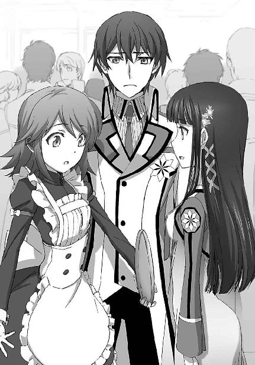
それは過小評価で過大評価だ、と達也は思った。
今回に関して言えば、他の事──美月のことが気になって、そこまで気が回らなかっただけだ。彼にだって女性の服を褒めるくらいの気配りはあるし、際どい格好をされれば目のやり場に困ったりもする。
──いや、その場合は服ではなく、その下に見えているものが問題なのかもしれないが。
「ああ、なるほどね。達也くんはコスプレなんかに興味は無いか」
「それってコスプレなの？」
「あたしは違うと思うんだけど、男の子からしたらそう見えるみたいよ」
だが少女たちの会話は、本音を口に出せない彼を置いてけぼりにして突っ走っていた。
「男の子って、西城君のこと？」
「アイツじゃその程度のことさえ言えないって。ミキよ、コスプレって口走ったのは。しっかりお仕置きしといてやったけど」
達也の耳には、不穏なセリフがしっかりと残った。
だが深雪には、然して気にならなかったようだ。
「ミキ？」
全く知らない固有名詞が、話している相手の口から当たり前のように出て来たら、そちらの方が気になるのは当然かもしれないが。
「......誰？」
深雪の問い掛けに、エリカは「あっ」という表情を浮かべた。
「そうか。深雪は知らないんだっけ」
そう呟くや否や、エリカは呼び止める間もなくその場を走り去った。
「器用だな。バランス感覚が余程優れているのか......」
片手にトレイを持ったまま、ドリンクをこぼさずに走って行くエリカを見て、達也はしきりと感心している。
それも少しずれているのでは？ と深雪は思ったが、口に出したのはもっと当たり障りのないことだった。
「いったいどうしたのでしょう？」
実のところ、答えを期待しての質問ではなかった。
ただいきなり放置されて、間が持たなかった為に口から零れたセリフだ。
だが、予想に反して、
「多分、幹比古を呼びに行ったんだろう」
兄から、明確な答えが返って来た。
「吉田幹比古。名前は知っているだろ？」
「お兄様と同じクラスの方ですね？」
定期試験の上位者リストで話題になった名前だ。深雪もしっかり覚えていた。
「エリカとは幼馴染みらしい。深雪は幹比古に会ったことがなかったからな。紹介するつもりじゃないのか？」
なる程、エリカのやりそうなことだった。
何も言わず、いきなり走り去ったことも含めて。
「深雪、ここにいたの」
「達也さんも、ご一緒だったんですね」
何とは無しにエリカの姿が消えた方を見ていた兄妹に、今度は二人の女子生徒が話し掛けてきた。
「雫、わざわざ探しに来てくれたの？」
「ほのか、雫。......君たちも、いつも一緒なんだな」
そういえばこの二人は、達也が見ている限り、いつもコンビで行動しているような気がする。特に深い意味の無い、単なる好奇心に発する質問だったが、
「友達だから。別行動する理由もないし」
「そりゃそうだ」
まるで照れた様子もなく返された雫の答えに、達也は愚問だったか、と苦笑を漏らした。
達也が二人を名前で呼ぶようになったのは、つい先月のことだった。
熱心に「お願い」していたのはほのかの方だが、達也としては、雫の無言のプレッシャーに押し切られたという面の方が強かった。
「他のみんなは？」
訊ねたのは深雪。
ただし、あまり気乗りしていない声だった。
「あそこよ」
ほのかが指差す方を見てみると、慌てて目を逸らす男子生徒の集団がいた。
チームメイトの一年女子も、同じところに固まっている。
「深雪の側に寄りたくても、達也さんがいるから近づけないんじゃないかな」
「何だそりゃ。俺は番犬か......？」
雫の推測に、呆れ声を漏らす達也。
当たっている可能性が高いだけに、笑い飛ばすこともできない。
「みんなきっと、達也さんにどう接したらいいのか戸惑っているんですよ」
ほのかが口にしたのは慰めのセリフだが、それもありそうなことだと達也は思った。
彼は自分が、自分の方こそが「異端」だと自覚している。
本来ならば、彼の方から歩み寄るべきなのだろうが......
「バカバカしい。同じ一高生で、しかも今はチームメイトなのにね」
竹を割るように断じたのは、新たな声だった。
「千代田先輩」
花音がグラスを片手に（無論、ソフトドリンクだ）、達也たちの輪の中に入って来た。
その後ろには、同じようにグラスを持った五十里の姿もあった。
「分かっていてもままならないのが人の心だよ、花音」
「それで許されるのは場合によりけりよ、啓」
花音と五十里は互いのことを名前で呼び合う。
まあ、婚約者なら当然すぎるほど当然かもしれない。
「どちらも正論ですね。しかし、今はもっと簡単な解決方法があります」
お節介かな？ とも思ったが、こんなことで言い争いをされては達也の方が愉快ではない。
恋人同士のコミュニケーションの邪魔をするのは忍びなかったが、達也はさっさと収束を図った。
「深雪、皆の所へ行っておいで。チームワークは大切だからね」
「ですがお兄様」
「後で部屋においで。俺のルームメイトは機材だから」
選手もスタッフも基本的に部屋はツインだが、達也が唯一の一年生スタッフで唯一の二科生である為、気を遣わなくてもいいように、と機材番の名目で、真由美がツイン・シングル（シングルユースツインルーム）を割り当ててくれたのだ。
「ほのか、雫も。良ければ後で」
深雪はまだ不服そうだったが、達也が何故そんなことを言ったのか、その理由は彼女自身よく理解していた。
「......分かりました。では、後ほど」
「後でお邪魔させてもらいますね」
「また後で」
深雪、ほのか、雫の順番で答えた三人に笑って手を振っていた達也は、不機嫌な眼差しを感じて振り返った。
「大人の対応ね。でも、それじゃあ先送りにしかならないと思うけど？」
達也と花音の関係は、顔見知りの範疇を超えるものではない。
達也の交友関係に花音が口を挟むのは筋違いなのだが、花音の発言が義俠心から出たものだと解っていたので、達也も真面目に対応することにした。
「先送りで良いんですよ。今すぐ解決する必要の無い問題で、時間がある程度の解決をもたらす類いの事なんですから」
「それは......っ」
言葉に詰まったまま、花音は口惜しそうな目を向けてきた。どうやらこの上級生の少女は、相当な負けず嫌いらしい。
「花音、司波君の言うとおりだよ。世の中には、拙速を尊ばないこともあるんだ」
「だが、若々しさが無いのも確かだな」
五十里の発言は達也に味方したのではなく、この場を丸く収める為のものだったが、乱入者の所為で台無しになってしまった。
「摩利さん」
新たに絡んできた摩利に、達也は反論せず、ただ軽い会釈を返した。
「五十里、中条が探していたぞ」
そして、達也のそんな反応は織り込み済みとばかり、摩利はさっさと用事を済ませた。彼女も別に、茶々を入れる為だけにやって来たのではないらしい。
「すみません、それで、中条さんはどこに？」
「一号作業車だ。もうすぐ来賓挨拶が始まるから、早く用を済ませて中条も引っ張って来てくれ。他の有象無象はともかく、老師のお言葉に欠席者がいるのは外聞に障る」
「そうですね。分かりました」
「摩利さん、失礼します」
指示に従うべく、急ぎ足で外に向かう五十里と、そうするのが当然とばかり彼について行く花音を見送った後、摩利は達也へ向き直った。
「サイズは合ってたようだな」
「脇のあたりが少し窮屈ですけどね」
自分が羽織っているブレザーを見ながらの質問に、達也も自分の身体に視線を落としながら答えた。
「それは仕方がない。予備の制服だからな。サイズは揃っていても細かな体型の違いまでフォローはできないだろう。それ以上大きなサイズにすると胴回りが余ってみっともないしな」
「そうですね。仕方がありません」
微苦笑気味の摩利のセリフに、肩をすくめるような口調で──実際にそんなジェスチャーは示さなかったが──達也は相槌を打った。
「新調すれば良かったんじゃないか？」
摩利の声に悪意はない。
「二回しか着ないブレザーを新調するのは、もったいなさすぎますよ。ワッペンなら取り外して着るという選択肢もあったでしょうけど、刺繡ですからね、これは......」
しかし、達也はそう言いながら、少し忌々しげに自分の左胸を見下ろした。
そこには八枚花弁のエンブレムが縫い付けられている。
他校の生徒との親睦会に、正面から校章が見えないと判りにくい、と言われて無理矢理着せられたものだ。
「二回だけとは限らないぞ？ 秋には論文コンペもあるし、君が一科に転籍しないとも限らないからな」
笑いながらではあったが、摩利の目は結構本気だった。
達也は憮然として答えた。
「論文コンペに選ばれたとしても、自分の制服で構わないでしょう。一科への転籍はあり得ません。そんなことは規定も前例も無い」
達也の言葉に、摩利は声を上げて笑った。
「前例？ 今の君の立場自体が前例に無いじゃないか。君の様な二科生は前例に無いんだから、前例が無いというだけで可能性を否定する根拠にはならないよ。前例が無い、などと言うより、君こそが『前例』になるべきだ。君の様な後輩の為にね」
「............」
苦虫を嚙み潰してしまった達也を見て、摩利はもう一度、楽しそうに笑った。
「さて、あたしは他校の幹部と少し話をしてくるが、君も一緒にどうだ？」
「......いえ、多分、エリカが俺を探しに来るでしょうから」
エリカの名前が出た瞬間、摩利の目に一瞬の動揺が走った。
意趣返しのネタにしようか、という思考が脳裏を過ったが、冗談の種に使うには少々根が深そうだ。
達也は、無言で摩利を見送った。
「あれっ？ 深雪は？」
エリカは達也の予想どおり、幹比古を伴って戻ってきた。
「クラスメイトの所へ行かせた。後で俺の部屋に来るから、その時に紹介するよ」
「あ、うん」
達也のセリフは前半がエリカに、後半が幹比古に対するもの。
幹比古の反応は、残念そうというよりホッとしたという色合いの濃いものだった。
「......無理にとは言わんぞ？」
「......えっ？」
すぐには自分に掛けられた言葉と分からなかったのだろう。
幹比古の回答には少し間があった。
「いや、そういうわけじゃないよ！ 少し緊張するのは確かだけど......」
「や～ねぇ、男って、美人の前だと格好つけたがるんだから」
「エリカも十分美人だよ。今日は特にね」
「えっ？ チョッと、ヤダもう......」
「それで？」
茶々を入れて来たエリカを茶々返しで撃退し、達也は幹比古に続きを促した。
「達也、君って......。いや、初対面にこの格好というのは、チョッと恥ずかしかったからね」
幹比古は何か言いたげに口を開きかけたが、疲れた様子で首を振って訊かれたことに答えた。
そう言われて、達也は改めて幹比古とエリカの衣装を見た。
幹比古の衣装は白いシャツに黒の蝶ネクタイ、黒のベスト。
エリカの衣装はスカートがフワリと広がった黒のワンピースに白いエプロン、頭に白いヘッドドレス。
端的に言えば、執事とメイド、ではなく、召使いとメイドだった。
「別におかしな格好ではないと思うが？ ホテルの従業員ならそんなものじゃないか？」
フロアを行き来しているウェイターは皆、幹比古と同じ格好をしている。
「ほらご覧なさい。自意識過剰なのよ、ミキは」
「僕の名前は幹比古だ」
同じやり取りが何度も繰り返されたであろうことが窺われる口調と表情。
どうやら幹比古は、今の自分の姿が余程気に入らないらしい。もしかしたら旧家出身の彼には、使用人と同じ格好をするということに抵抗があるのかもしれない。
「ところで、あとの二人はどうしたんだ？」
何故こんなところでアルバイトの真似事をしているのかも気になったが、そこには触れないでおこうと達也は思った。
「レオに接客が務まると思う？」
「その程度の使い分けくらいはできると思うが......」
友人の為に控えめな弁護を達也は試みたが、今にも吹き出しそうなエリカの表情は変わらなかった。
「美月もこの格好は嫌なんだって。実はミキと気が合うのかしら」
「僕の名前は幹比古だ！」
「了解りょーかい」
かなりムキになって食って掛かる幹比古にぞんざいな応えを返して、エリカは達也へ視線を戻した。
「というわけで、二人とも裏方。レオは厨房で力仕事、美月はお皿を洗ってるよ」
何が「というわけ」なのかは分からなかったが、言わんとすることは理解できた、気がした。
「二人とも機械の操作は得意だからな」
「そうね。二人とも、見掛けによらないけど」
今の時代、倉庫の出し入れも食器の洗浄も、人手を使う部分はほとんど無い。
かなり細かい部分まで、機械が人の手の代わりを務める。
要するにあの二人は、裏でキッチン用オートメーションを操作しているということだろう。
「僕もそっちのはずだっただろう。何故いきなり給仕をやらさせられるんだ!?」
しかし幹比古は当事者だけあってか、達也と違って理解できない、というか、納得できない様子だ。
「何度も説明したじゃない。チョッとした手違いだって」
「説明になってないだろう！」
「ハイハイ騒がないの。アルバイトとはいえ、あたしたちはお仕事中なのよ。ほら、あっちのお皿、空いてるわよ」
「......後で覚えてろよ、エリカ」
そう言い捨ててテーブルへ向かった幹比古だったが、達也にはその捨てゼリフにあまり「本気」が感じられなかった。
「忘れちゃうのはミキの方なんだけどねぇ......」
呆れ声で見送るエリカの声音にも表情にも、それ以外の感情は見受けられなかった。
だが達也には、それがエリカの本音の全てでは無いように思えた。
「......どういう事情があるのかは知らないが、もう少し手加減してやったらどうだ？」
エリカは何について言われたのか、とっさには分からなかったようで、答えが返ってくるまで少なからぬ間があった。
「......そんなに大した事情があるわけじゃないんだけど。でもそうね。あたしも少し八つ当たり気味だったかな。ミキがこういうの苦手なのは良く知ってるんだけど。でも、ね......」
「怒らせたかったのか？」
「う～ん、どうだろ？ 屈折しすぎて、見ていてイライラする、ってのはあるんだけどね。まだ素直に笑えないのは仕方ないと思うんだけど、怒ることすら忘れちゃう執着ってのはどうなんだか......それってもう、妄執の域だと思うんだよね」
「優しいんだな」
「止してよ」
達也としては相槌以上の意味を持たない何気ない一言だったが、返って来た拒否反応は予想外に激しいものだった。
「八つ当たり、って言ったでしょ。あたしもミキも、今日ここにいるのは自分の意思じゃない。親に無理強いされた結果よ。優しく見えたとしても、それは単に、同類が相憐れんでいるだけ」
頑なな態度から垣間見える、頑なな心。
「......事情は聞かない。聞いてもどうしようもないからな。今の言葉は、忘れることにしとくよ」
達也はそれを、解きほぐそうとはしなかった。
「ごめん、そうしてくれる？ ......ねぇ、達也くん」
慰めが無かったことを、エリカは詰ったりしなかった。
「なんだ？」
「達也くんってさ......冷たいよね」
言葉に反して、責めている口調ではなかった。
「......いきなりだな」
「でも、その冷たさがありがたい......かな。優しすぎないから、安心して愚痴をこぼせる。同情されないから、惨めにならない。......ありがと」
最後の一言は、聞き取れるか聞き取れないかの、小さな声。
逃げるように近くのテーブルへ向かうエリカの後姿を見ながら、悩みは誰にでもあるものだな、と達也は思った。
総勢四百人の立食パーティとなれば、料理を用意するテーブルも中央に一つ、というわけにはいかない。ホテルの最上階を丸々使ったパーティホールには左右の壁際及び中央の前、後ろ、真ん中に三つずつ、合計九つの大テーブルが用意され、若い胃袋を満たす料理が次々に補充されている。
それぞれのテーブルの傍に各校の生徒が固まってしまうのは例年のことだ。
もっとも、下っ端（？）はひたすら飲み食いしているだけで良くても、各校の幹部はそうも行かない。
深雪は真由美に声を掛けられて、クラスメイトと別れ、生徒会のメンバーと同行していた。
他校の生徒会役員と挨拶を交わす──傍ら、腹黒い探り合いを演じる──真由美と鈴音の背後で、エリカを見送る兄をこっそり横目で見詰める。
声に出さず、表情にも出さず、心の中だけでため息をついた。
深雪は達也を誰よりも高く評価しているが（深雪が誰よりも高く、ではなく、達也を誰よりも高く、である）、それでも完璧な人間だと考えているわけではない。──ある種の超人だと考えてはいるが。
兄には少なくない欠点がある、と深雪は思っている。
その欠点の一つが、他人から寄せられる好意を信じられない、ということだ。
鈍感すぎて他人の好意が分からない、という面も多少はある。
しかしそれ以上に、他人が自分に好意を持っているということを、達也は心の底で疑ってしまう。
それはある意味で仕方の無いことだ。
愛情という最高の好意を実の親から与えられなかったばかりか、実の親の手によって「愛情」そのものを心から剝ぎ取られたのだから。
兄が自分の愛に応えてくれるのは奇跡みたいなものだ、と深雪は理解している。
それでも、可愛い同級生から（エリカは深雪の目から見ても文句無く美少女だ）恋慕にも似た好意──あれは既に「恋」ではないかと深雪は感じている──を示されて、その後姿を醒めた目で見送っている兄の姿には、安堵よりも切なさを覚えてしまう。
兄は自分がこうして見詰めていることに気づいてもいないだろう、と深雪は思った。
もしかしたら視線には気づいているかもしれない。
でも、自分がどんな想いを抱えているのか、など、想像すらもしていないに違いない。──そう思って、深雪はますます切なくなった。
そして、段々腹が立ってきた。
──これはもう、一度文句を言わなければ気が済まない。
──円滑な人間関係構築の為に、あまり鈍感すぎるのは兄の為にもならないはずだ。
──そう、これは兄の為、愛の鞭に他ならない。
淑やかなアルカイック・スマイルの下で、深雪はそう決意した。
......そんな彼女が、自分を見詰める視線に気づくはずも無かった。誰しも、自分のことは分からないもの、なのかもしれない。
今、真由美たちと（表面的には）笑顔で談笑しているのは、第一高校にとって最大のライバル校と目されている第三高校の生徒会役員だ。
その背後で、三高の一年生が何事かこっそり囁き合っていた。
先輩の情報戦に耳を傾け、戦力分析に勤しんでいる、のであれば、さすがは尚武の校風を掲げる第三高校。上級生も感涙にむせたかもしれない、が......。
「見ろよ一条、あの子、超カワイクねぇ？」
「超って、お前......何時の時代の高校生だ」
「うるせーな。おめーには聞いてねーよ。なっ、なっ、一条、どう思う？」
「何サカってるんだよ......無駄無駄。あんな美少女、高嶺の花もいいトコだろ。お前じゃ相手にされないって」
「つくづくるせーな。俺じゃダメでも、一条ならイケるかもしれねーじゃんか。なんせ一条は顔良し腕良し頭良し、そのうえ十師族の跡取りなんだからよ。そしたら俺にもお近づきになるチャンスくらいめぐってくるだろ」
「なに威張って情けないこと言ってんだよ......」
実態は、このような会話が交わされていたのであった。──まあ、実に高校生らしいと言えない事もない。
「将輝、どうしたんだい？」
ただ、その輪の中心にいた男子生徒は、盛り上がる仲間に応えも返さず、じっと話題の女子生徒を見詰めていた。
甘いマスク、というより凛々しい顔立ち。若武者風の美男子、という古風な形容が違和感なく当てはまる容貌だ。一八〇センチ弱の身長に広い肩幅と引き締まった腰、長い脚......第三高校一年生、一条将輝は、確かにチームメイトの言うとおり、女性が好みそうな外見をしていた。
「......将輝？」
将輝は、訝しげな顔で彼の名を呼ぶ同じ三高一年の小柄な、ただし良く鍛えられた身体つきの男子生徒に目を向けた。
「......ジョージ、お前、あの子のこと、知ってるか？」
ジョージ、というのは渾名だ。外見は完全なモンゴロイドで、本名も純和風に吉祥寺真紅郎というその生徒は、将輝の質問に考える素振りも見せず即答した。
「え？ ああ、制服で分かると思うけど、一高の一年生だよ。名前は司波深雪。出場種目はピラーズ・ブレイクとフェアリー・ダンス。一高一年のエースらしい」
「げっ、才色兼備ってやつ？」
大袈裟に仰け反るチームメイトを尻目に、一条将輝はポツリと呟きを漏らした。
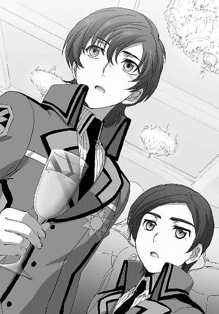
「司波深雪、か......」
その声に、ジョージと呼ばれた男子生徒が意外感と好奇心のブレンドされた視線を向けた。
「珍しいね？ 将輝が女の子に興味を示すなんて」
同調する、他の生徒たち。
「そう言や、そうだよな」
「一条の場合は、女の方から寄ってくるからな。ガツガツする必要なんて無いんだろ」
「贅沢なんだよ、コイツは」
段々「モテナイ男の八つ当たり」の様相を呈してきたが、将輝は黙り込んだまま応えない。
ただ、露骨にならないように、時々視線を外しながら深雪を見詰めているだけだ。
その視線には、ただならぬ熱が込められていた。
来賓の挨拶が始まり、今日の主役たちは世慣れない高校生らしく、食事の手を止め、談笑を中断し、必要以上に真面目な態度で大人たちの声に耳を傾けていた。──あるいは、傾けるフリをしていた。
エリカが仕事に戻ってから、話し掛けてくる者も無くなった達也にとっては、手持ち無沙汰からの解放だ。
入れ替り立ち替わり壇上に現れる魔法界の名士の顔を見るだけでいい暇つぶしだった。
初めて見る顔もあれば、映像で見ただけの顔もある。
無論、直に見たことのある顔もあるし、言葉を交わしたことこそないものの、同じ部屋に同席した経験のある者もいる。
その中でも彼が特に注目していたのは、「老師」と呼ばれる、十師族の長老の登場だった。
九島烈。
この二十一世紀の日本に十師族という序列を確立した人物であり、二十年ほど前までは世界最強の魔法師の一人と目されていた人物だ。
最強の名を維持したまま第一線を退き、以来、ほとんど人前に出てくることのないこの老人は、何故かこの九校戦にだけは毎年顔を出すことで知られている。
達也も直に見たことは無い。映像で知っているだけだ。
歴史上の人物を直接目にするに等しい興奮を、達也は自分の中に見出していた。
順調に激励、訓示が消化されて行き、いよいよ九島老人の順番になった。
年齢はそろそろ九十歳近いはずだ。
かつて最強と呼ばれた魔法力は、どの程度残っているのだろう。
魔法を行使するだけの体力は残っているのだろうか。
彼がそう思っている内に、司会者がその名を告げた。
達也だけで無く、会場の高校生全員が、息を吞んで、九島老人の登壇を待つ。
そして現れた人物の姿に、達也は思わず、その息を吐き出すのを忘れてしまった。
眩しさを和らげたライトの下に現れたのは、パーティドレスを纏い髪を金色に染めた、若い女性だった。
ざわめきが広がった。
衝撃を受けたのは、達也だけではなかった。
意外すぎる事態に、無数の囁きが交わされていた。
壇上に上るのは、九島老人ではなかったのか。
何故、こんな若い女性が代わりに姿を見せたのか。
もしや、何らかのトラブルがあり、彼女が名代として派遣されたのか。
（──いや、違う）
達也はようやく、真相に気づいた。
壇上に現れたのは、この女性だけではない。
彼女の背後に、一人の老人が立っている。
ただ、自分たちの意識が、派手に装った若い美女に吸い寄せられているだけだ。
（──精神干渉魔法）
おそらく、会場の全てを覆う大規模な魔法が発動しているのだ。
目立つものを用意して、人の注意を逸らすという「改変」は、事象改変と呼ぶまでもない些細なもの。何もしなくても自然に発生する「現象」。
ただそれを、全員に、一斉に引き起こす為の、大規模ではあるけれども、微かに、弱く、それ故に気づくことの困難な魔法。
（これがかつて最強、いや「最高」にして「最巧」と謳われた「トリック・スター」九島烈の魔法か......）
達也の凝視に気がついたのか。
女性の背後の老人が、ニヤリと笑った。
それは、悪戯を成功させた少年のような笑顔だった。
老人の囁きを受けて、ドレス姿の女性はスッと脇へどいた。
ライトが老人を照らし、大きなどよめきが起こる。
ほとんどの者には、九島老人が突如空中から現れたように見えたことだろう。
老人の目が、再び達也を見た。
達也は目立たぬように目礼を返した。
老人の目は、上機嫌そうに笑っていた。
「まずは、悪ふざけに付き合わせたことを謝罪する」
その声は、マイクを通したものであることを差し引いても、九十歳近いとは信じられぬほど若々しいものだった。
「今のはチョッとした余興だ。魔法というより手品の類いだ。だが、手品のタネに気づいた者は、私の見たところ五人だけだった。つまり」
老人が何を言い出すのか、何を言いたいのか、大勢の高校生が興味津々の態で耳を傾けていた。
「もし私が君たちの鏖殺を目論むテロリストで、来賓に紛れて毒ガスなり爆弾なりを仕掛けたとしても、それを阻むべく行動を起こすことができたのは五人だけだ、ということだ」
老人の口調は、特に強くなったわけでも荒げられたわけでもない。
だが会場は、それまでと別種の静寂に覆われていた。
「魔法を学ぶ若人諸君。
魔法とは手段であって、それ自体が目的ではない。
そのことを思い出して欲しくて、私はこのような悪戯を仕掛けた。
私が今用いた魔法は、規模こそ大きいものの、強度は極めて低い。
魔法力の面から見れば、低ランクの魔法でしかない。
だが君たちはその弱い魔法に惑わされ、私がこの場に現れると分かっていたにも拘わらず、私を認識できなかった。
魔法を磨くことはもちろん大切だ。
魔法力を向上させる為の努力は、決して怠ってはならない。
しかし、それだけでは不十分だということを肝に銘じて欲しい。
使い方を誤った大魔法は、使い方を工夫した小魔法に劣るのだ。
明後日からの九校戦は、魔法を競う場であり、それ以上に、魔法の使い方を競う場だということを覚えておいてもらいたい。
魔法を学ぶ若人諸君。
私は諸君の工夫を楽しみにしている」
聴衆の全員が手を叩いた。
だが残念ながら、一斉に拍手、とはいかなかった。
戸惑いながら手を叩く同年代の少年少女の中で、達也は同じように手を叩きながらも、他の少年たちとは違い、声に出さず笑い続けた。
魔法の等級よりも、魔法の使い方が重要というその考え方は、ランク至上主義の今の魔法師社会の在り方に異議を唱えるものだ。魔法は使い方次第、それは即ち、魔法をあくまで道具と割り切っていることを意味している。
この国の魔法師社会の頂点に立ちながら、今の魔法師社会の在り方に逆らうことを勧める老魔法師。それは見方を変えれば、無責任な態度だ。彼は今の魔法師社会の在り方を変えるだけの影響力を持っているのだから。
九島老人の演説が口先だけのものなら、達也も反感を覚えただろう。だが老人は、それを分かりやすい形で実演して見せた。達也には真似のできないレベルで、魔法を道具として使いこなして見せた。
──これが「老師」か
九重八雲。風間玄信。そしてこの、九島烈。この国にはまだまだ、彼が学ぶべき魔法師がいる。彼がまだ知らないだけで、学ぶべき相手はきっと、大勢いるのだろう。ＦＬＴの研究室では分からなかったことだ。
高校生をやっているのも、意外と退屈しない。
達也はこの時、そう、思った。
◇ ◇ ◇
懇親会が前々日に催されたのは、前日を休養に当てる為だ。
技術スタッフや作戦スタッフは最後の追い込みに余念がないが、選手は各自それぞれのやり方で明日からの戦いに備えて英気を養っている。
とはいえ、一年生の出番は大会四日目からだ。今の段階ではまだ、緊張よりも興奮と高揚の方が勝っている。同級生との団体旅行気分でついついはしゃいでしまうのも、年齢を考えれば仕方の無いことだった。
夕食後、今夜も達也の部屋へ遊びに来ていた深雪、ほのか、雫の三人だったが、彼が起動式のアレンジ作業に取り掛かるというので早めに自分たちの部屋へ引き上げた。本戦と新人戦の試合スケジュールの違いから、一年生は一年生同士二人部屋に泊まっている。ほのかと雫が相部屋、深雪はＣ組の滝川和実という少女と同室だが、和実が結構体育会系の性格でクラブの先輩と行動を共にしていることが多い為、深雪もほのかたちの部屋にいることの方が多い。
時計の短針は（このホテルは何故か三針式の掛け時計ばかりだった）そろそろ「Ⅹ」の字を指そうとしている。選手として明日の出番を待つ上級生は既に就寝している者が大半だろう。それが分かっているから、深雪たち三人だけでなく、他のチームメイトも、他の学校の一年生も、大声で騒ぐような分別の無い生徒はいない。だからといって上級生たちと同じように眠りの園へ向かうには、若い彼女たちの活力は有り余っていた。
女の子が三人集まって夜通し行うことと言えば、これはもう、お喋りと相場が決まっている。
もちろん例外はあるだろう。外見のイメージからすれば、深雪と雫はその「例外」に含まれていそうに思われがちだが、実は意外に「普通」なのだった。
ここ最近の話題はやはり、九校戦のことだ。女の子のお喋りといえど、話題はオシャレと恋愛話だけではないのである。もっとも、その切り口がかなりミーハーな方面に傾くのはやむを得ないところだろう。
前に述べたとおり、時刻はそろそろ夜十時。だからといって消灯時間は無い。故に、扉をノックする音がしても、焦ったり慌てたり訝しんだりする必要は無いのだった。
「あっ、私が出るよ」
ノックの音に三人は同時に立ち上がったのだが、他の二人を制したのは扉に一番近かったほのかだった。
「こんばんは～」
「あれっ、エイミィ。他のみんなもどうしたの？」
開いたドアから顔をのぞかせたのは、ルビーのような光沢の紅い髪が印象的な、小柄な少女。深雪たちのチームメイトの、明智英美という少女だ。彼女の背後には四人の同級生。つまり、第一高校新人戦女子チームのメンバーがほとんど揃っていることになる。
「うん、あのね、ここって温泉があるのよ」
「......ゴメン、もう少し分かりやすく言って」
弾んだ声で告げられた言葉は、何が言いたいのか分かるようで分からなかった。
「そう言えばこのホテルの地下は人工の温泉になっていたわね」
もっとも、深雪には英美の言いたいことが理解できたらしい。
「そう、さっすが深雪、頭良いぃ！」
「......ごめんなさい、あまり嬉しくないわ、それ」
英美には悪意も邪気も無かったが、能天気な声で褒められて（？）、深雪は何故か頭痛を覚えた。
こめかみを押さえる仕草をしている深雪に、英美が「んっ？」という感じで小首を傾げる。
「何でも無いの、気にしないで。それで、温泉がどうしたの？」
深雪に促されて、英美が無邪気な笑みを浮かべた。
「うん、だからね、みんなで温泉に行こうよ」
突拍子もない──と深雪には聞こえた──英美のセリフに、深雪はほのかと顔を見合わせた。
ほのかの方も、深雪と同じように感じているようだ。
「入れるの？ ここ、軍の施設だよ」
しかし代表して英美に質問したのは、一番奥に立っていた雫だった。
ここは普通のホテルではない。あくまでも国防軍の演習場に付属する施設だ。あらかじめ使って良いと言われている施設以外は立ち入ることすらできないはず、という雫の懸念は、
「試しに頼んでみたら、許可くれたよ。十一時までだったら良いって」
英美によってあっけらかんと否定された。
「さすがはエイミィ」
ほのかが漏らした呆れ声混じりの呟きも、
「言ってみるものよね」
むしろ得意げに応じた英美には、まるで効果が無かったようだ。
「でも、ここの温泉って確か、水着が必要だったはずよ？ わたしは水着なんて持って来ていないけど」
「そっちも大丈夫。タオルと一緒に、湯着を貸してくれるって」
深雪の具体的な問題提起についても、英美は手回し良く解決済みだったようだ。
ここまでお膳立てされれば、深雪たち三人もあえて拒む理由はない。正直に言えば、三人とも温泉には──それが人工の物であったとしても──興味があったのだ。
「じゃあ、ご一緒させてもらおうかしら。着替えを取ってくるから先に行っておいて？」
深雪の答えに、英美は嬉しそうに頷いた。
「オーケー、そんなに急がなくても大丈夫だよ」
深雪は軽く手を挙げて、チームメイトと別れた。
地下の大浴場（人工温泉）は一高一年女子の貸切だった。
貸切状態だった、ではない。他に入浴客がいなかったのではなく、十時から十一時まで、本当に彼女たちへ貸し切られたのだ。
大浴場はグループ風呂みたいな物で、元々そういう風に運営されているのだった。
というのも地下の人工温泉は、大浴場とは言いながらせいぜい十人前後の収容能力しか無いからだ。元々この温泉は、演習による筋肉痛、関節痛の治療目的に、ホテルの地下を流れるアルカリ性泉質の冷泉水を沸かして作った一種の療養施設で、主な利用者は高級軍人（の中でも中年以降の将校）であり、大勢の観光客がレクリエーションに訪れるような利用方法は想定していない。医者が指定した時間、お湯に浸かることだけを目的としているので、身体を洗うのは手前のシャワーブース、中は水着または湯着着用という仕組みになっていた。
──もっとも、彼女たち以外に利用を申請したグループは無かったようだが。
女性用の湯着は端的に表現すれば「純白のミニ丈甚平、ただし半ズボン無し」だった。帯を使わないミニ丈の浴衣、と言い換えた方が風情はあるだろうか。締め付けている箇所が皆無のゆったりしたデザインは、入浴という用途に相応しい物だったが、水着よりずっと着心地が頼りない物でもあった。
「わぁ......」
「な、なによ」
異性の目には恥ずかしくて曝せない格好だったが、ここにいるのは女同士、しかもそれなりに気心の知れたチームメイトだ。だが、英美の漏らしたため息に、ほのかは男性に見られているような羞恥と警戒を感じた。
思わず胸元を握り合わせるようにして閉じる。
英美の両目は、まちがいなくそこへ──ほのかの胸へ向けられていた。
「意外。ほのか、スタイル良ぃ～」
じりっ、とにじり寄ってくる英美。
後退するほのか。
ほのかの背中は、すぐに浴槽の壁にぶつかった。
「ほのか」
「何よっ？」
英美から漂ってくる不穏な空気に、ほのかの声は悲鳴に近くなっていた。
「むいてもいい？」
「いいわけないでしょ！」
英美の目は笑っている。悪ふざけでやっていることは明らかだ。ただ問題は、悪ふざけであっても冗談で済ませる気が無いところだった。
助けを求めて、ほのかが浴室を見回した。チームメイトは全員湯船に浸かっているか、浴槽の縁に腰を下ろし、足を湯の中につけている。彼女たちはたった一人の例外を除いて、英美と同じような目で笑っている。
「いいじゃない。ほのか、胸が大きいんだから」
「そういう問題!?」
相変わらず、英美の目は笑っている。しかしその瞳の中に、冗談では済ませられない剣吞な光が混じっているのをほのかは認めた。
「雫、助けて！」
たまらず、ほのかは「たった一人の例外」だった雫に助けを求めた。
雫はおもむろに立ち上がると、
「いいんじゃない？」
一言、そう応えて、湯船の外へ歩き出した。
「なんで!?」
親友の裏切りに悲痛な叫びを放つほのか。
雫は一瞬、自分の胸元を哀しそうな目で見下ろして、
「ほのか、胸、大きいから」
断罪の言葉を紡ぎ、個室サウナへ姿を消した。
浴室にほのかの悲鳴が響いた。
（いったい何を騒いでいるのかしら？）
浴室の中から聞こえてくるバシャバシャと水を叩く音に首を傾げながら、深雪はもう一度シャワーを浴び直した。彼女は既に部屋のユニットバスで汗と埃を落とした後だったが、手順に従って「人間洗濯機」の異名を取る全自動シャワーブースで身体を（首から下を）洗い、湯着に袖を通す。長い髪をアップに纏めて、深雪はようやく騒動の気配が収まった浴室に移動した。と、湯船に浸かっていたチームメイトの視線が、一斉に深雪の肢体へ注がれた。
「な、なに？」
思わずたじろぎ、足を止めて訊ねるも、深雪の問いに答える声は無い。
注がれる視線の数にも変化は無い。
「ダメよ、みんな。深雪はノーマルなんだから！」
不自然な沈黙は、お湯の中から何故か悲壮な表情で立ち上がったほのかの声で破られた。
「ほのか？」
深雪にはほのかのセリフが何を意味しているのか、それだけでは分からなかったようだが、
「いやぁ、ゴメンゴメン。つい見とれてしまったよ」
一番端で浴槽の縁に腰掛けていたＤ組の里美スバルという少女に、少年っぽいというか随分ハンサムな口調でそう言われて、深雪はようやくほのかの言いたかったことと先程自分に向けられた視線の意味を悟った。
「チョッと......女の子同士で何を言ってるの？」
焦った声を出しながら、内腿のあたりに手をやって短い裾を引っ張るような仕草を見せる深雪に、浴室は再び、奇妙な緊張をはらむ沈黙に包まれた。
薄地の湯着は、シャワーを浴びた後の肌に残る水気と浴槽から立ち上る湯気で身体に貼り付き、深雪の女の子らしいラインを、張りのある胸の双丘を含めて、くっきりと浮かび上がらせている。
前袷からのぞく、ほんのり上気した桜色の胸元。
短い裾からすんなり伸びた、まぶしい程の白さの、非の打ち所がない脚線美。
こと深雪について言うならば、水着よりずっと露出の少ない湯着姿が、一糸纏わぬ裸身よりも鮮烈な色香を醸し出していた。
「......女の子同士。うん、分かってるんだけどね」
「何て言うか......性別なんて関係ないって気になってくるよね、深雪を見てると」
しみじみ語られる呟きの中へ、
「もうっ！ からかうのもいい加減にして」
深雪は勇敢にも足を踏み入れた。
食い入るような視線の中、淑やかに膝を折って湯船に身体を沈める。
横座りになって首まで浸かると、襟がお湯の流れに揺れて、刹那、深雪のうなじが大きく露わになる。
誰からともなく、ため息が漏れた。
冗談でも悪ふざけでも無い、妖しい空気。
もしこのままの状態が続いていたなら、深雪の貞操が危うかったかもしれない。
「深雪、私は味方だからね！」
蝶を絡め取る蜘蛛の糸のような視線を、ザブンと波を立てて深雪の隣に身体を沈めたほのかが遮らなかったなら。
「いい加減にしないと、ここにいるみんな、氷水で冷水浴する羽目になるわよ！」
そのセリフが耳に入ると同時に、チームメイトたちはいきなり神妙な表情になって深雪から顔を背けた。
ただ、目は他所を向いていても、意識は深雪に引き寄せられていた。
これだけ年頃の少女たちが集まっているのに、誰も、何も言おうとしない。
一方の深雪は、ほのかのセリフに異議を唱えたいところだったのだが、下手に「そんなことはしない」なんて口にすると、この危うい均衡状態が壊れてしまいそうな気がして、やはり何も言えずにいた。
「......どうしたの？」
そして、個室サウナにこもっていたが故に今の一幕を見ていない雫が、浴室のぎこちない空気に素朴な問い掛けを口にする。
問われたことで己を顧みたのか、少女たちはようやく正気を取り戻した。
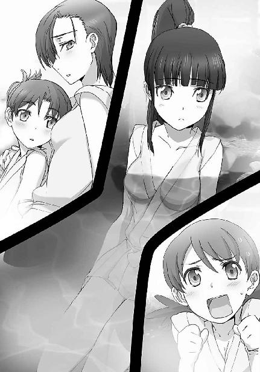
少女たちが一旦いつもの調子を取り戻してしまえば、浴室は賑やかなさえずりで満たされた。
女の子のお喋りといえど、話題はオシャレと恋愛話だけではない。
しかし、オシャレと恋愛話が彼女たちのお気に入りのテーマであることも事実だった。
お湯に浸かりながらのお喋りは、自然と昨日の懇親会で見掛けた男性の噂話になった。対象は主に「男の子」だが、「男の人」や一部「小父様」を含んでいる。良く言えば、嗜好の多様性に寛容だと言えるだろう。もっともその実態はと言えば、こんな塩梅だったが。
「──でさ、ドリンクバーのバーテンさんがステキな小父様だったのよ」
「うわっ......あの人、明らかに四十歳超えてたじゃない。中年趣味とか終わってる......」
「ナイスミドルと言って欲しいなぁ。あたしに言わせりゃ、高校生なんて子供よ、子供。てんで頼りにならないって感じ？」
「そうかな～？ 同じ年頃の男の子、皆が皆頼りにならないとは思わないけど。男運が悪かっただけじゃないの？」
「そうだよねー。五十里先輩なんて包容力ありそうじゃん？ 何より、優しそうだし」
「彼女持ちを好きになっても虚しいだけだと思うよ？ 五十里先輩の場合は彼女から更に進んで婚約者だけどね」
「頼りになるって言ったら十文字先輩じゃない？」
「いやぁ、十文字先輩の場合は頼りになりすぎでしょ。見た目もそうだけど、十師族の跡取りだよ、あの人」
「十師族の跡取りって言えばさ、三高に一条の跡取りがいたよね？」
「あっ、見た見た。結構良い男だったね」
「うん。男は外見だけじゃないけどさ、外見も良ければ言うこと無いよね」
......という具合である。
ここで不意に、英美が湯船の隅で先程の（精神的な）疲れを癒やしていた深雪に話を振った。
「三高の一条くんって言えばさ、彼、深雪のことを熱い眼差しで見てたね」
英美が話し掛けた相手は深雪だったが、深雪はそのセリフに応えることができなかった。
「えっ、そうなの？」
「もしかして一目惚れかな？」
「深雪だったらありだよね」
「むしろ、深雪に惚れない男がおかしい？」
「実は前から知り合いだったりして」
きゃー、という歓声が上がった。
「深雪、どうなの？」
その黄色い声に同調しなかった雫が、大真面目な口調で──抑揚の乏しい雫の口調は、本人にその気が無くても大真面目に聞こえてしまうのである──深雪に問い掛けた。
それに対する深雪の回答。
「......真面目に答えさせてもらうけど、一条くんのことは写真でしか見たことないわ。会場のどこにいたのかも気がつかなかった」
酷いと言おうか冷たいと言おうか、このセリフを聞かせるだけで三高の戦力は大幅にダウンするのではないか、と思わせる深雪の答えに、ワクワクしながら耳を傾けていた少女たちは揃って鼻白んだ。
しかし、めげないキャラクターはどこにでもいるものだ。
「じゃあ、深雪の好みってどんな人？ やっぱり、お兄さんみたいな人が好みかい？」
スバルのこの質問に、深雪ではなくほのかが反応した。彼女の身体が一瞬硬直したことに、隣に座っていた雫だけが気づいた。
深雪は至って平静な様子で、平静なだけでなく呆れた表情まで浮かべて、スバルの問いに答えた。
「何を期待しているのか知らないけど......わたしとお兄様は実の兄妹よ？ 恋愛対象として見たことなんて無いから。それに、お兄様みたいな人が他にいるとも思っていないわ」
深雪の答えを聞いて、スバルと英美があからさまにがっかりした顔になった（スバルの方は、やや芝居臭かった）。
それ以上、深雪と達也の関係を問う声はなかった。
しかし、今この湯船の中に二人、深雪の答えを額面どおりに受け取っていない少女がいた。
深雪の声に、「恋愛対象として見ていない」という言葉以上の何かを、ほのかと雫は感じていた。
◇ ◇ ◇
達也は深雪たちを部屋に帰した後──三人は更にその後、チームメイトと共に地下人工温泉で彼を噂話の肴にしていたのだが──作業車で起動式のアレンジをしていた。
「司波君もそろそろ切り上げた方がいいよ」
声を掛けられて周りを見れば、車内には既に彼ともう一人を残すのみとなっていた。
「こんな時間でしたか」
時計はそろそろ、日付の更新を示していた。
達也の言葉に、五十里は性別不詳の笑顔で頷く。（余談だが、五十里は私服もヘアスタイルもユニセックスなもので、実はこの先輩、わざと男っぽくない外見を演出しているのではないか、と達也は疑っていた）
「司波君の担当する選手の出番は四日目以降なんだから、あんまり最初から根を詰めない方がいいと思うよ」
「そうですね」
達也が担当するのは一年生女子スピード・シューティング、ピラーズ・ブレイク、ミラージ・バットの三種目。これは深雪たちの希望であると同時に、一年生男子（主に森崎）が嫌がった所為でもある。（深雪はピラーズ・ブレイクとミラージ・バット、ほのかはバトル・ボードとミラージ・バット、雫はスピード・シューティングとピラーズ・ブレイクにエントリーしている）
一年生の競技、つまり新人戦は四日目から八日目にかけて行われる。
明日から担当選手が登場するスタッフに比べて、達也に余裕があるのは確かだった。
花音は二日目、三日目のピラーズ・ブレイク単一エントリーだが、五十里は明日の出場選手の中にも担当を持っている。
「では、お先に失礼します」
あえて一緒に引き上げようとは言わずに、達也は作業車を後にした。
真夏の夜は、真夜中であっても、それほど気温が下がらない。
Ｔシャツ一枚で散歩するのにちょうどいい位だ。
すぐには部屋へ戻らず、ラフな格好でホテルの周りをブラブラ歩いていた達也は、妙に緊張した気配を感じた。
周囲を窺いながら息を殺している、そんな気配だ。
泥棒か？ と最初は考えたが、すぐに自分でその考えを打ち消した。
隠そうとして隠し切れていないこの気配は、もっと暴力的で好戦的なものだ。
達也は感覚を開放し、イデア──あらゆる存在物の情報体を包含する巨大情報体──にアクセスした。
（数は三人。場所は......ホテルを囲む、生垣に偽装したフェンスの間際か）
三人はそれぞれ拳銃と小型の爆弾を持っている。
ホテルの敷地の外側でも、彼らがいるのは既に軍の管理地内。この基地のセキュリティは決してザルではない。人と機械の双方で侵入者を監視し、排除している。特に武装している相手には容赦がない。
そのセキュリティを破って侵入してきた賊だ。しかも、爆弾まで準備して。
ＣＡＤは手許に無いが、そんな危険な存在を放置しておくことはできない。
達也は足音を消して駆け出した。
彼の感覚は、同じように不審者へ向けて近づいている知人を捉えていた。
達也に劣らぬ隠密技術。
最初の位置関係から、不審者への接触は向こうが──幹比古の方が早い。
援護の為の術式を、走りながら、達也は編み上げた。
特定の魔法に特化した彼の魔法能力は、特定魔法に限るなら、ＣＡＤが無くとも、他の魔法師がＣＡＤを使用した場合と同等のスピードと精度と威力で行使し得る。
幹比古が魔法を放つ体勢に入った。
ＣＡＤは使っていない。
イデアを通じた認識は、映像ではなく概念として流れ込んでくる。
幹比古が取り出したのは三枚の短冊──おそらくは、呪符だ。
幹比古は、現代魔法ではなく、古式魔法を使うつもりだ。
達也が「知覚」している前で、想子が幹比古の手を伝って呪符に流れ込み、術式が構成された。
現代魔法も古式魔法も、「存在」に付随する「情報」に干渉し、「事象」を書き換えるという基礎構造に違いは無い。
ただ、その干渉の方法・態様が異なるだけだ。
幹比古が発動した魔法のシステムは、魔法演算領域内で干渉の為の情報体、即ち魔法式を形成するのではなく、手に持つ呪符に情報を書き足し、それを媒体として「存在」から離れイデアの海を漂っている「独立した非物質存在となった情報体」を支配下に置き、それを通して現象を書き換えるという三段階の構成になっている。
存在に付随する情報体、エイドスを直接書き換える現代魔法に比べれば速度と自由度で劣るものの、改変に対する抵抗を受け難いというメリットがある。限定された事象改変ならば、現代魔法より少ない力で大規模な効果が得られるだろう。
魔法式を解析することのできる達也は、この一瞬の間にそれだけのことを理解した。
そして、幹比古の術式に、焦りを覚えた。
（それでは間に合わない）
幹比古が行使している魔法には、複数の無駄な迂回路がある。それによる術式発動の遅延は、無視できない長さになるはずだ。
達也は、「分解」の照準を、賊が手にしている拳銃にセットした。
幹比古が不穏な気配に気づいたのは、彼が魔法の訓練をしていたからだった。
ホテルの庭の、奥まった部分。
建物から離れ、敷地を囲む生垣に近い、人気のない場所を見つけて、彼は日課となっている「修行」を始めた。
個々の事象から離れ、「風」「水」「土」「火」などの、抽象的な「概念」の塊となった「精霊」と感覚を同調させる、神祇魔法（精霊魔法）の基礎訓練。
現代魔法学の解釈では、精霊とは、実体を離れ情報の海を漂う情報体。
概念そのものが情報の世界を移動することに付随して、その概念によって表現されるエネルギーが塊となって実体世界を移動する。
それが非物質体として観測されるのだとされている。
しかし幹比古は、こうして「精霊」と触れ合うことにより、彼らを、確かに、この世界に「在る」ものとして感じていた。
理屈、ではなく、実感。
幹比古にとって、精霊とは確かにここにいる、意思を持つ存在。こうして触れ合うことで、彼らが「見聞き」した様々なことを自分に教えてくれる「モノ」だ。
幹比古は、同調訓練を始めてすぐ、ホテルの敷地外に人がいることを「聞いた」。
最初は何か用があって外に出ていた人か、さもなくば巡回兵か、と思って気に留めなかった。
だが、精霊が繰り返しその存在を告げるにつれて、幹比古はそれが警告ではないかと考えた。
同調訓練の応用で、感覚の糸を精霊が告げている方へ伸ばす。
糸にかかったのは、「悪意」だった。
幹比古の顔が、緊張に引き締まった。
誰かを呼ぶか、それとも自分で対処するか、とっさに迷った。
今の自分では、どんな相手でも確実に制圧できるとは言い切れない。口惜しいが、それだけの自信が持てない。唇を嚙みながら、ホテルに戻って警備兵を呼ぶべきだ、と幹比古は考えた。
しかし、感情が理性の決定に異を唱えていた。
理性以外の何かが、それでは間に合わない、と告げていた。
自分の中に生じている焦燥が、「急げ」という精霊からの警告のような気がした。
幹比古はホテルに戻るのではなく、「悪意」へ向けて駆け出した。
不安はあった。
もしも相手が銃器で武装していたとしたら、今の自分に対処できるのか、という不安。
至近距離で向き合ったとき、拳銃に勝てる魔法師は稀だ。
遮蔽物があれば、物理的な障碍に左右されない魔法の方が有利。
遮蔽物が役に立たない状況では、指を曲げるだけの拳銃のスピードに対抗することは難しい。
だが幹比古は、そんな、合理的な不安を怯懦として思考から排除した。
昨日のことが脳裏を過ぎった。
幹比古がボーイの真似事までさせられたのは、父親の意向だ。
エリカは手違いだと言っていたが、本当は分かっていた。
──本来、お前が立っているはずだった場所を見て来い
一昨日の夜、彼の父親は、彼に、そう言った。
ボーイの真似事は、それを実現する為の手段だ。
幹比古の父は、晴れ舞台に立つ彼と同年代の者たちの姿を見せて、彼に発破を掛けたかったのかもしれない。
発奮を促したつもりかもしれない。
だがその言葉は、そのやり方は、幹比古の中で屈辱としてわだかまっていた。
幹比古はこの時、「自分は無能ではない」と証明したがっていたのかもしれなかった。
照明がまばらな場所だったが、幹比古は実家の修行の一環として、暗闇の中で行動する訓練を積んでいる。
仮に星明りだけだとしても、不自由は無い。
悪意が明確な人の気配として捉えられるまでに接近した所で、幹比古は呪符を取り出した。
三人の賊に、三枚の呪符。
向こうも幹比古に気づいたのだろう。
浴びせられる悪意と敵意に、幹比古はこの三人が賊であることを確信していた。
躊躇はできない。
敵意は殺意に変わっていた。
躊躇えば、やられる。
身元の確認は二の次だ。
幹比古は符に魔力を込め、術を放った。
幹比古の手元に閃光が生じ、それに呼応するように、賊の頭上に電子が集まっていく。
一秒以内に、電撃が賊を襲う。
しかし、引き金を引く為の時間は、半秒もかからない。
達也は一瞬でそれだけの判断を下し、準備していた魔法、「分解」を発動した。
三人の賊が持つ三丁の拳銃は、エイドスの改変に従い、バラバラに解体された。
その直後、
空中に生じた小さな雷が、三人の賊を撃ち倒した。
「誰だ！」
幹比古が鋭く問い掛けた相手は、生垣の向こうに倒れている姿の見えない敵ではなく、背後から駆け寄ってくる彼を援護した魔法師だった。
幹比古は、理解していた。
彼の魔法が、本来ならば、間に合わなかったことを。
彼が怪我をしなかったのは、他の魔法師による援護があったからだということを。
自分の魔法から、以前のスピードが失われていることを、実戦の中で突きつけられていた。
「俺だ」
「達也？」
幹比古がショックを受けていることは、気配で分かった。
だが達也は、短く答えただけで足を止めず、生垣の手前で跳び上がった。
自己加重の術式により負の加重をかけ、二メートル超の生垣を飛び越える。
幹比古はそれを、呆気に取られて見送っていたが、ハッと我を取り戻して新たな呪符を取り出し、同じように自己加重の術式を行使した。
幹比古が生垣の向こう側へ降り立った時、達也は倒れた賊の傍らに膝をついていた。
「達也？」
それは、色々な意図を含んだ問い掛けだった。
どんなつもりで問い掛けているのか、幹比古自身にも良く分かっていなかった。
「死んではいない。良い腕だな」
それを達也は、賊の状態を訊ねたものだと受け取ったようだ。あるいは、幹比古の混乱をある程度見抜いて、最も当たり障りのない解釈を選んだのかもしれない。
「えっ？」
幹比古は、達也が何を褒めているのか理解できなかった。
本来なら自分はやられていた、という自虐的な想いが幹比古を捕えていた。
「ブラインドポジションから、複数の標的に対して正確な遠隔攻撃。捕獲を目的とした攻撃で、相手に致命傷を与えることなく、一撃で無力化している。ベストの戦果だな」
達也の口調は冷徹と言い換えてもいいくらい冷静で、お世辞や慰めを掛けているのでは無いと聞いているだけで分かった。
幹比古が信じられないのは達也ではなく、自分自身だった。
「......でも僕の魔法は、本来ならば間に合っていなかった。達也の援護が無かったら、僕は撃たれていた」
口をついて出て来るのは、自制を超えた自嘲の言葉。
「アホか」
「......えっ？」
だが、達也から浴びせられた端的な罵倒に、幹比古はそれ以上の自虐を口にできなかった。
「援護が無かったら、というのは仮定に過ぎない。お前の魔法によって賊の捕獲に成功した、これが唯一の事実だ」
「............」
達也の、容赦の無い罵声と容赦の無い指摘に、幹比古はすっかり面食らっていた。
「現実に俺の援護があって、現実にお前の魔法は間に合った。本来ならば？ 幹比古、お前はいったい、何を本来の姿と思っているんだ？」
「それは......」
「相手が何人いても、どんな手練が相手でも、誰の援護も必要とせず、勝利することができる。まさかそんなものを基準にしているんじゃないだろうな？」
心臓がひっくり返ったような衝撃を幹比古は感じていた。
達也の口にした「基準」があまりに馬鹿げたものであることは、彼にも理解できる。
だが自分は心の奥底で、達也の指摘と似たようなことを、確かに考えていなかっただろうか？
「やれやれ......もう一度、あえて言おう。幹比古、お前は阿呆だ」
「達也......」
「何故それ程までに、自分を否定しようとする？
何故それ程、自分を貶める？
何がそんなに気に入らないんだ？」
「......達也に言っても分からないよ。言っても、どうにもならないことなんだ」
「どうにかなるかもしれんぞ」
壁を作り、その陰に逃げ込む幹比古の反論を、達也は言葉の破城槌で打ち砕いた。
「えっ......!?」
今度こそ、絶句する幹比古に、達也は射貫くような視線を浴びせた。
「幹比古、お前が気にしているのは、魔法の発動スピードじゃないか？」
「......エリカに聞いたのかい？」
「否」
「......じゃあ何で」
「お前の術式には無駄が多すぎる」
「......何だって？」
「お前自身の能力に問題があるのではなく、お前が使用している術式そのものに問題がある、と言ったんだ。魔法が自分の思うように発動しないのはその所為だ」
「何でそんなことが分かるんだよ！」
幹比古は叫んだ。
混乱のあまり。
憤りのあまり。
彼の使う術式は、吉田家が長い年月を掛け、古式魔法の伝統に現代魔法の成果も積極的に取り入れて、改良に改良を重ねてきたものだ。
それを、一度や二度、見ただけで、欠陥品扱いする達也に、幹比古は怒った。
自分がずっと、都合のいい妄想と否定し、見ないようにしてきた疑念を言い当てられた気がして、幹比古は混乱した。
「俺には分かるんだよ。無理に信じてもらう必要は無いがな」
しかし達也は、幹比古の怒声を冷静な口調ではね返し、幹比古を更に動揺させるセリフを吐いた。
「......何だって？」
先程と同じ言葉を使って、先程と異なる語調で問い返す幹比古に、
「俺は、『視る』だけで魔法の構造が解る。視るだけで起動式の記述内容を読み取り、魔法式を解析することができる」
達也は信じがたい答えを返した。
幹比古の混乱は、この時、極みに達した。
そんなことができる魔法師など、彼は聞いた事が無かった。そんな異能が本当に存在するとすれば、現代魔法学の抱える課題の半分は解決してしまうだろう。
「......無理に信じてもらう必要は無い」
達也はもう一度、突き放すようにそう言った。
幹比古は、「ここから先は、お前自身の問題だ」、と言外に告げられたような気がした。
「今日のところは、この話はここまでにしよう。それより、コイツらの処置だ。俺が見張っているから、警備員を呼んで来てもらえないか？ それとも俺が呼びに行こうか？」
正直なところ幹比古は、達也の「告白」が噓か本当かを考えることもできない状態だったので、棚上げの提案は願ってもなかった。
「あ、僕が呼びに行くよ」
「分かった。待っている」
幹比古は再度「跳躍」の術式を発動し、生垣の向こうへ消えた。
一方、達也は、賊を拘束する手段を少し考え、地面に埋めてしまうことに決めた。「分解」では埋め直す為の土も消えてしまうから、「分離」と「移動」を別々に使わなければならない。ＣＡＤ無しでは少し辛い作業だが、先程の「跳躍」のように、単純な術式であれば、また複数同時発動ではなく一つずつであれば、魔法式を丸ごと暗記しているので実行に問題は無い。
皮肉なことだが、人為的に作られた仮想魔法演算領域は、意識領域内に作られているが故に、丸暗記した魔法式をそのまま使えるというメリットがある。
（ズルいな、俺は）
一方で被害者意識を抱えながら、もう一方でそれを都合のいい道具として利用する。
節操のない自分に自嘲の笑みを浮かべて、達也は魔法を発動しようとした。
──しかし、その必要はなくなった。
近づいて来る知人の気配に、達也は魔法を中断した。
話し掛けられるまで、それほど待つ必要はなかった。
「随分容赦のないアドバイスだったな、特尉」
「少佐、聞いておられたのですか？」
達也は、盗み聞きする風間の気配をつかんでいなかった。
だが、驚くには足りないことだ。
風間は達也より遥かに長い期間、九重八雲の教えを受けた、九重門下の筆頭なのだから。イデアにアクセスしていない状態の達也では、風間の気配を察知するのは困難だ。
ぞんざいに敬礼する達也に、風間はニヤリと笑って答礼した。
「他人に無関心な特尉には珍しいのではないか？」
「無関心は言い過ぎかと思いますが」
「それとも、身につまされたか？ あの少年も貴官と似た悩みを抱えているようだからな」
「あのレベルの悩みなら、自分は卒業済みです」
「つまり、身に覚えがあるということか？」
「......この者たちをお願いしてよろしいでしょうか」
人の悪い笑みを浮かべて、それこそ容赦のない追撃を重ねる風間に、退路を失ってしまった達也は、話を逸らすのが精一杯だった。
「引き受けよう。基地司令部には、俺の方から言っておく」
ただ風間の方も、これ以上追求を重ねても意味は無いと理解していた。
笑みを消し、真顔になって、達也に向かい頷いて見せる。
「お手数をお掛けします」
「気にする必要は無い。余計な仕事をさせられたのは貴官も同じだ」
「はい。しかしこいつら、何が目的なのでしょう」
「さてな。犯罪者の相手は我々の仕事ではないが......この連中、予想以上に積極的だな。技量も想像以上だ。達也。とばっちりには十分、気をつけろよ」
「ええ、ありがとうございます」
「明日の昼にでも、ゆっくり話すことにしよう」
「そうですね。それでは、失礼します」
「ああ、またな」
部下と上官の顔から、知人・兄弟弟子の顔になって、二人は別れた。
［５］
達也が思わぬ深夜労働を課せられた、その翌日。
九校戦は、何事もなかったように開幕した。
直接の観客だけでも、十日間で延べ一〇万人。こんなに交通の便が悪い所で行われているにも拘わらず、一日平均一万人のギャラリーが競技を見に来る。有線放送の視聴者は、少なくともその百倍以上になるだろう。
プロの試合も行われている人気スポーツ競技に比べれば少ないとはいえ、これだけの人間が注目している大会、にも拘わらず──昨晩の一幕を知る者は、当事者以外にほとんどいない。
選手は皆、一流の魔法力を持つとはいえ、まだ高校生だ。
全くの未遂に終わったことだし、不安を与えるのは好ましくない、との判断が下された結果だった。
開会式は華やかさよりも規律を強く印象付けるものだった。魔法競技はそれ自体がとても派手なものだから、セレモニーを華美にする必要は無いのである。長々とした来賓挨拶もなく、九校の校歌が順に演奏された後、すぐに競技に入った。
今日から十日間。本戦男女各五種目、新人戦男女各五種目、合計二十種目の魔法競技会の幕開けだ。
一日目の競技はスピード・シューティングの決勝までと、バトル・ボードの予選。
スケジュールの違いは、両競技の所要時間の違いを反映している。
「お兄様、会長の試技が始まります」
「第一試技から真打登場か。渡辺先輩は第三レースだったな」
「はい」
達也たちは、真由美の試合を観戦すべく、スピード・シューティングの競技場へ移動した。左から、雫、ほのか、達也、深雪の順番で、会場内の関係者エリアではなく、一般用の観客席に陣取る。
スピード・シューティングは、三十メートルの先の空中に投射されるクレーの標的を魔法で破壊する競技で、制限時間内に破壊したクレーの個数を競う。いかに素早く正確に魔法を発射できるかを競う、というのがスピード・シューティングという競技名の由来である。
試合には二つの形式がある。
予選は五分の制限時間内に破壊した標的の数を競うスコア型。
同時に四つのシューティングレンジを使い、六回の試技で予選を終えて、上位八名が準々決勝に進む。
ちなみに、エントリーできる選手は二十四名。
九校が三名ずつエントリーすると二十七名になるのだが、三つの学校は前年度の当該競技順位により足切りに遭い、二名しかエントリーできない。
これはモノリス・コードを除く全競技に共通のルールだ。
準々決勝以降は、対戦型。
紅白の標的が百個ずつ用意され、自分の色の標的を破壊した数を競う。
「予選では大破壊力を以て複数の標的を一気に破壊するという戦術も可能だが、準々決勝以降は精密な照準が要求されるというわけだ」
達也の言葉に、雫が熱心に頷いた。彼女はこのメンバーの中で唯一、新人戦のスピード・シューティングにエントリーしている。
「従って普通なら、予選と決勝トーナメントで使用魔法を変えてくるところだが......」
「七草会長は予選も決勝も同じ戦い方をすることで有名ね」
達也が言いかけたセリフは、背後に座った少女に横取りされた。
「エリカ」
「ハイ、達也くん」
「よっ」
「おはよう」
「おはようございます、達也さん、深雪さん、ほのかさん、雫さん」
達也たちの背後にずらりと並んだのは、右から順にレオ、エリカ、美月、幹比古。（ただし挨拶した順番はエリカ、レオ、幹比古、美月）
都合よく四人分の席が空いていたのは、彼らの座席が最後列に近いから、という事情による。
「もっと前の方が空いてたんじゃないか？」
「達也くんたちの姿が見えたから。それにこの競技は離れた所から見ないと分からないでしょ」
「まあな」
観客席は後列ほど高い階段構造。
空中を高速で飛ぶ標的を撃ち落とすのだから、最前列近くの席から観戦する観客は、選手と同等の視力が必要となる。
それでも観客が前へ前へと詰めかけているのは──
「バカな男どもが多い所為ね」
エリカがあながち冗談とも思えない、軽蔑の口調で断じれば、
「青少年だけではないようだがな」
達也が皮肉な口調でそれに応えた。
つまりはそういう理由で、この試合は前の座席が埋まっているのだった。
「お姉さま～、ってヤツ？ ホント、嘆かわしいったら」
「そう言うな。確かにあれは、近くで見る価値があるかもしれん。毎日のように顔を合わせていた俺でも、別人かと思ってしまうくらいだからな」
「うわっ！ 深雪、どうする？ 浮気よ、ウワキ」
エリカの暴言に、達也も深雪も、ただ苦笑いを浮かべている。
彼らが何を言っているかというと......
「エルフィン・スナイパー、ですか。ピッタリのニックネームですね」
「本人は嫌っているようだから、会長の前では言わない方が良いぞ」
達也に釘を刺されて、ほのかは首をすくめるような仕草をした。
前列に押し掛けた青少年及び少女たちのお目当ては、この第一レンジで開始の合図を待つ真由美の姿を見ることにあった。
豊かに渦巻く長い髪の上から耳を保護するヘッドセットをつけ、目を保護する透明のゴーグルをかけた真由美の姿は、ストレッチパンツの上にミニワンピースと見間違えそうなウエストを絞った詰め襟ジャケットというユニフォーム、スピード・シューティング用の小銃形態デバイスと相俟って、可愛らしさと凛々しさが絶妙にミックスされ、近未来映画のヒロインのような雰囲気があった。
「会長さんをネタに同人誌を作ってる人たちもいますしね......」
その姿に記憶を刺激されたのだろう。
「......それは初耳ね」
しかし、美月がポロリと漏らしたセリフは、エリカでさえ、とっさにそう返すのがやっとという程、予想外のものだった。
「......美月、貴女はそれをどういう経緯で知ったのかしら？ もしそういう『趣味』があるのなら、わたしたちの友情を見直したいのだけど」
深雪もまた、エリカと同じ事を想像したようだ。冗談とは思えないその声には、十パーセントくらいの本気が混じっていそうだった。
「えぇっ？ いえ、そんな趣味なんてありませんよ！」
もっとも、一番動揺が激しかったのは美月本人である。
「始まるぞ」
どういう想像をされたのかに気づいて慌てふためいていた美月だが、達也の一言にハッと口を閉ざした。
観客席が静まり返る。
ヘッドセットをつけているので、少しくらい観客が騒いでも選手には関係ないが、これはマナーの問題である。
単発小銃のように細長い、見ようによっては杖にも見える競技用ＣＡＤを構えた選手の集中と気迫が、静寂の中、観客席に緊張感の波紋を広げていく。
開始のシグナルが点った。
軽快な射出音と共に、クレーが空中を翔け抜ける。
「速い......！」
思わず呟いた雫の一言は、標的の飛翔スピードに対するものか、
──それを撃ち砕いた真由美の魔法に対するものか。
真由美は首を傾げず、真っ直ぐに立ってＣＡＤを構えている。
もとより銃身から弾を撃ち出しているのではないのだから、照星に視線を合わせる必要はない。ＣＡＤには最初からマズルサイトもスコープも付いていない。
その立ち姿は、銃よりもむしろ、弓の構えに似ていた。
クレーが次々と、不規則な間隔で撃ち出される。
射出数は五分間に百個。
平均すれば、三秒に一個。
これだけでも実弾射撃に比べれば異常なハイペースだが、時には連続して、時には十秒以上の間隔を置いて、時には五個、六個の標的が同時に宙を翔ける。
真由美はその全ての標的を、一個の取りこぼしもなく個々に撃ち砕いて行く。
五分の試技時間は、あっという間に終了した。
「......パーフェクトとはね」
ゴーグルとヘッドセットを外し、客席の拍手に笑顔で応える真由美を見ながら、達也は呆れ声で呟いた。
「ドライアイスの亜音速弾、ですよね？」
拍手を送りながら訊ねた深雪に、達也は笑顔で頷いた。
「そうだ。良く分かったな」
「......そのくらい、あたしにも分かったんですけど......」
不満げなエリカのツッコミに、達也は苦笑いを浮かべた。
「そうだな、同じ魔法を百回も見せられれば分かるか」
決まり悪げに目を逸らした者もいたが（多分、分からなかったのだろう）、達也は見なかったことにした。
「百回？ 一発も外さなかったんですか!?」
こちらは素直な性質なのか、正直に驚きを見せながら、ほのかが達也にそう訊ねた。
「ああ。驚くべきは、魔法発動のスピードでも反復回数でもなく、あの精度だろう。いくら知覚系の魔法を併用していたといっても、手に入れた情報を処理するのは自前の頭だからな。余程マルチサイトの訓練を積んだのか、それとも天性なのか......十師族直系は伊達じゃない」
「会長さん、知覚系魔法まで併用していたんですか？」
驚きの声を上げたのは美月。だが今回は、同じような表情をしている者の方が多かった。
「遠隔視系の知覚魔法『マルチスコープ』。非物質体や情報体を見るものではなく、実体物をマルチアングルで知覚する、視覚的な多元レーダーの様なものだ。会長は普段から、この魔法を多用しているぞ？」
気づかなかったのか？ と目で問われ、美月はブンブンと首を振った。
「全校集会の時なんか、この魔法で隅から隅まで『見張って』いたんだけどな。レアなスキルではあるが......肉眼だけであの射撃は無理だと思わないか？」
「確かに無理」
即座に応じたのは雫。彼女は自分がシューティングレンジに立つ時のことを考えながら、試技を見ていたのだろう。
「でもよ、空気分子の運動を減速してドライアイスをつくり、これを亜音速に加速し、更に知覚魔法を併用していたんだろ？ 知覚魔法は常駐、減速魔法と加速魔法は百回も繰り返して。良く魔法力がもったな」
ここでレオが言っている「魔法力」とは、実技判定における「魔法力」ではなく、通俗的な意味での魔法を反復行使するスタミナのことだ。
良く誤解されていることだが、魔法はエネルギーを消費する運動ではない。
サイキカルなエネルギーを消費して事象の改変しているのではなく、情報の改変を通じて事象を改変しているのだ。
情報改変には想子で作成した魔法式の投射が必要だから、魔法式の規模に応じて魔法を行使し得る回数に限界はあるが、レオが今使った意味での「魔法力」とは、類似物を求めるならば思考力のスタミナに近い。
「会長の射撃魔法は『ドライ・ブリザード』のバリエーションだが、原型となっている『ドライ・ブリザード』は効率の良い魔法だからな。会長の魔法技能なら、百回どころか千回でも可能だろうさ」
手放しで真由美を褒める達也の言葉に、深雪たち一科生組は複雑な表情を浮かべた。
真由美の魔法力は彼女たちも凄いと思っているが、魔法に関して辛口な達也の、無条件で称賛する言葉は、嫉妬心を呼び起こさずにいられないものだった。
だが、レオの関心は別の点にあったようだ。
「えっ、でもよ、この真夏の気温でドライアイスを作るのも、それを亜音速まで加速するのも相当なエネルギーが必要なはずだぜ？ いくら魔法がエネルギー保存法則の埒外だからといって、それだけの事象改変を伴う魔法の負担が少ないってのは、いくら達也の言葉でも俄かにゃ信じられんのだけど」
「埒外であっても、無関係じゃないのさ」
バトル・ボードの会場へ移動する為に立ち上がりながら、達也は謎掛けの様な答えを返した。
「そりゃどういう意味だ？」
追いかけるように立ち上がりながら、レオが再度、問い掛ける。
「魔法はエネルギー保存法則に縛られず、事象を改変する技術だ。だが改変される側の対象物まで、エネルギー保存法則から自由になっているわけじゃない。例えば、状態維持の式を組み込まずに物体を加速した場合、加速された物体は冷却される。運動維持の式を組み込まずに運動中の物体を加熱すれば、その物体の運動速度は低下する。一般に普及している魔法式には、改変を意図しない要素について現状を維持する式が必ず組み込まれているから意識する機会は少ないがな。
物理法則ってヤツは結構強固なもので、魔法という理不尽な力の干渉を受けても、何とか辻褄を合わせようとする復元力が働くんだよ。だから、逆に言えば、物理法則にとってはエネルギー保存法則を破らないように組まれた魔法の方が自然な現象で、魔法の面から見れば、少ない干渉力で実行可能な魔法となるんだ。
もう分かるだろ？ ドライアイスを作ってそれを加速するという魔法は、ドライアイス形成過程で奪い取った分子運動エネルギーを、固体運動エネルギーに変換するというスキームで物理法則を欺いている。エントロピーを逆転させる、自然には絶対にあり得ない現象なんだが、ドライアイスを加速させることで、ただ単にドライアイスを作るより、熱力学的には辻褄が合ってるんだ」
「......何か上手いこと騙されてるような気がすんだけど」
「覚えておいた方がいいぞ、レオ。世界を『上手いこと騙す』のが、魔法の技術だ」
「つまり、あたしたち魔法師は、世界を相手取った詐欺師ということね？」
「強力な魔法師ほど、極悪な詐欺師ということになる」
結構真面目な説明だったのだが、その後に付け加えられたエリカと雫の茶々に、達也は笑うことしかできなかった。
◇ ◇ ◇
バトル・ボードは人工の水路を長さ一六五センチ、幅五一センチの紡錘形ボードに乗って走破する競争競技だ。ボードに動力はついておらず、選手は魔法を使ってゴールを目指す。他の選手の身体やボードに対する攻撃は禁止されているが、水面に魔法を行使することはルールの範囲内だ。
その水路に統一された規格はない。元々海軍の魔法師訓練用に考案されたもので、魔法の使用が大前提である為、統一ルールを必要とするほど一般に普及することはあり得ないからだ。
九校戦のバトル・ボードは全長三キロの人工水路を三周するコース。水路には直線有り、急カーブ有り、上り坂や滝状の段差も設けられている。
コースは男女別に一本ずつ作られているが、男女で難易度に差はない。
予選を一レース四人で六レース、準決勝を一レース三人で二レース、三位決定戦を四人で、決勝レースを一対一で競う。
平均所要時間は十五分。
最大速度は三十ノット超──時速五十五～六十キロに達する。一枚のボードに乗っているだけの選手に、風除けは全く無い。追い風で速度を稼ぐセイリング競技と違って、まともに向かい風を受けるのだ。この風圧に耐えるだけでも、選手は相当な体力を消耗する。
「女子にはつらい競技だ。ほのか、体調管理は大丈夫か？」
「大丈夫です。達也さんにアドバイスしていただいてから体力トレーニングはずっと続けてきましたし、選手に選ばれてからは睡眠も長めに取るようにしていますから」
今回の九校戦に関係なく、達也はほのかと知り合って間もない頃、彼女の体力不足を危惧して、魔法の訓練だけでなく肉体的なトレーニングも積極的に行った方が良いとアドバイスしたことがある。達也にとっては日常会話の中のついでのようなアドバイスだったのだが、ほのかは思いの外、真剣に受け取っていたらしい。
「ほのかも随分筋肉が付いてきたんですよ」
「やだ、やめてよ、深雪。私はそんな、マッチョ女になるつもりはないんだから」
自分を挟んで交わされた会話に、達也は思わず噴き出してしまった。
「ほら......達也さんに笑われちゃったじゃない」
「笑われたのは、ほのかの言い方がおかしかっただけだよ」
「雫まで。いいわよ、どうせ私は仲間外れだし。二人と違って、達也さんに試合も見てもらえないし」
いきなりいじけ出したほのかに、達也は困惑し、笑っていられなくなった。
ここで何故、自分に矛先が向けられたのか。
「......ミラージ・バットは、ほのかの調整も担当させてもらうんだがな」
取りあえず、言い掛かりと思しき部分だけは反論しておく。
しかし、
「バトル・ボードは担当してもらえませんよね。深雪と雫は、二種目とも達也さんが担当するのに」
どうも、逆効果くさかった。
「......その分、練習もつきあったし、作戦も一緒に考えたし、決して仲間はずれにしているわけでは......」
言い訳しながら、どんどん泥沼にはまっているような気がして、達也は遂に口ごもってしまった。それを見て、気の毒になった、
「達也さん、ほのかさんはそういうことを言ってるんじゃないんですよ」
というのとは少し違う口調で美月が口を挿んだのを皮切りに、
「お兄様......少し、鈍感が過ぎると思いますよ？」
深雪が、
「達也くんの意外な弱点発見」
エリカが、
「朴念仁？」
雫が、次々と達也を責め立てる。
女性陣から集中砲火を浴びて、達也は絶句を余儀なくされた。何やら理不尽な気もするが、理屈では反論できないシーンというのは確かにあるのだ。
男性陣地からの援護も無い。
達也はレース開始の合図まで、ひたすら耐える羽目に陥った。
◇ ◇ ◇
コースの整備が終わり、選手がコールされて、達也はようやく解放された。
途中から、深雪たちが何を言いたいのかは理解できた。
だが、相手の主張が理解できるかどうかということと、それに対応できるかどうかということは、全くの別問題なのである。
今後は余計なことを言わないように、より一層注意しよう、という後ろ向きな決意を心に秘めて、達也はスタートラインにたゆたう四人の選手に目を向けた。
水上コースだから、ラインなどは引かれていない（引きようがない）。
四人が横一列に並ぶと少々狭く感じる水路の中側に、摩利は位置取っていた。
他の選手が膝立ち、または片膝立ちで構える中、摩利だけは真っ直ぐに立っている。
それは大部分、バランス感覚の違いを反映したものだが、見ようによっては他の選手をかしずかせている女王様（女王ではない）のようなたたずまいだった。
「うわっ、相変わらず偉そうな女......」
エリカの呟きを聞いて、相変わらず敵意むき出しだな、と達也は思った。
つい今しがた「余計なことは言わない」と決意したばかりなので、口には出さなかったが。
エリカの左右に座るレオも美月も、聞かなかったことにしたようだ。
空中に飛行船で吊るされている大型ディスプレイに、四人の選手のアップが映し出された。
摩利はただ一人、不敵に笑っていた。
確かに彼女は、敵役タイプだよな、と達也は思った。
女子高生の多数派意見は違ったようだが。
選手紹介アナウンスにより、摩利の名が呼ばれた瞬間、黄色い歓声が客席を──特に最前列付近を──揺るがした。
手を挙げて歓声に応える摩利に、黄色い絶叫がますます音量を増した。
「......どうもうちの先輩たちには、妙に熱心なファンが付いているらしいな」
熱狂度では、真由美のファンの少年たちより、こちらの方が数段上である。
「分かる気もします。渡辺先輩は格好良いですから」
深雪が、完全に傍観者の口調で相槌を打った。今回の九校戦で、真由美以上の男性ファン、摩利以上の女性ファンという、男女を問わぬ熱心なファンを獲得することになる、自分の未来を知っていれば、摩利が笑顔の裏に隠しているであろう、熱心すぎるファンに対する感情に多少は共感めいたものも生まれただろうが、今は全くの他人事である。
バトル・ボードは真夏の水上競技、ではあるが、選手が身に着けている物は水着ではない。
身体にピッタリ貼り付くウェットスーツに、各高校のロゴが大きく、カラフルに入っている。
バンダナを巻いたストレートショートボブの髪を微風に揺らして水上に立つ摩利の姿は、少年少女向け騎士道物語の挿絵のようだった。
エリカにも深雪のセリフは聞こえたはずだが、特に反論はなかった。
『用意』
スピーカーから、合図が流れる。
空砲が鳴らされ、競技が始まった。
「自爆戦術？」
呆れ声で呟いたのはエリカ。
達也は呆れて声も出なかった。
スタートの直後、四高の選手がいきなり、後方の水面を爆破したのだ。
おそらく大波を作ってサーフィンの要領で推進力に利用し、同時に他の選手を攪乱するつもりだったのだろうが......
「あっ、持ち直したぜ」
自分がバランスを崩すような荒波を作って、どうしようというのだろうか。
レースはスタートダッシュを決めた摩利が、四高選手の作り出した混乱にも巻き込まれず、早くも独走態勢に入っていた。
水面を滑らかに進む摩利のボード。
移動魔法によりボードを動かしているのではなく、ボードと自分自身をひとまとまりの存在として移動させているのだろう。あるいは、自分の肉体と自分が乗っているボード、二つの対象物に同時に移動魔法を掛けているのか。
どちらにしても、魔法を掛ける対象物を余程明確に定義しない限り可能なことではなかった。
ボードで水をつかみ、直角の曲がり角を鮮やかにターン。
まるで足の裏にボードが貼り付いているような安定感だ。
「硬化魔法の応用と移動魔法のマルチキャストか」
魔法式の解析ではなく、水上を走り去る姿、ボードの上の姿勢とバランスの取り方で、摩利が何をやっているのかを達也は見抜いた。
「硬化魔法？」
耳聡く聞きつけて、問い掛けてきたのはレオ。
自身の得意魔法だけに、当然、無関心ではいられないのだろう。
「何を硬化しているんだ？」
「ボードから落ちないように、自分とボードの相対位置を固定しているんだ」
達也の言葉がピンと来なかったのだろう。「？」という表情をレオは浮かべた。
もちろん達也の方も、それだけで理解しろと言うつもりは無かった。
「硬化魔法は、物質の強度を高める魔法じゃない。パーツの相対位置を固定する魔法だ。それは理解しているだろ？」
「そりゃ、実際に使っているからな」
「渡辺先輩は自分とボードを、一つのオブジェクトを構成するパーツとして、その相対位置を固定する魔法を実行している。そして、自分とボードを一つの『もの』として、移動魔法を掛けている。それも、常駐じゃないな。硬化魔法も移動魔法も、コースの変化に合わせて持続距離を定義し、前の魔法と次の魔法が被らないように上手く段取りしている」
自身の得意魔法故に、それが高度な技術だとレオにも理解できる。
「へぇ......」
レオは素直に感嘆を漏らした。
その一方で、
「しかし、面白い使い方だな......確かに硬化魔法の対象は、単一構造物のパーツである必要はない。うん、これなら......」
天才技術者の性か、マッドな物思いに耽りかけた達也を、
「お兄様？」
深雪の声が引き戻した。
摩利の姿は、少し目を離した隙に、スタンドの陰に入って見えなくなってしまっている。
達也は「何でもない」とお茶を濁し、大型ディスプレイへ視線を移した。
水路に設けられた上り坂を、水流に逆らって摩利は昇って行く。
「加速魔法」
その挙動から見て、外部から受けた加速のベクトルを逆転させる術式だ。
「振動魔法も併用しているのか」
同時に、逆位相の波を作り出して造波抵抗を弱める魔法も使われているようだ。
「凄いな。常時、三種類から四種類の魔法をマルチキャストしているとは」
達也の口から、自然に称賛の言葉が漏れた。
一つ一つの魔法はそれほど強力なものでない。
ただ、その組合せが絶妙だった。
芸術の域まで高められた高速高精度の魔法で観客を圧倒した真由美に対して、摩利は臨機応変、多種多彩、虹のように重ね合わされた魔法で観客を魅了している。
どちらも、高校生のレベルではなかった。
坂を昇り切って、滝をジャンプ。
着水と共に、水面が大きく波打った。
摩利の魔法により作り出された大波は、彼女のボードを前方へ押し流すと共に、二番手で飛び降りた選手を吞み込み落水寸前へ追い込んだ。
「戦術家だな......」
「性格が悪いだけよ」
達也の呟きに、エリカが憎まれ口で応じた。達也も半分はそう思っていたから、特に反論はしなかった。性格が悪いという評価は、戦術面に限っていえば褒め言葉だ。
一周目の、コース半ばも過ぎないうちに、摩利の勝利は確実なものとなっていた。
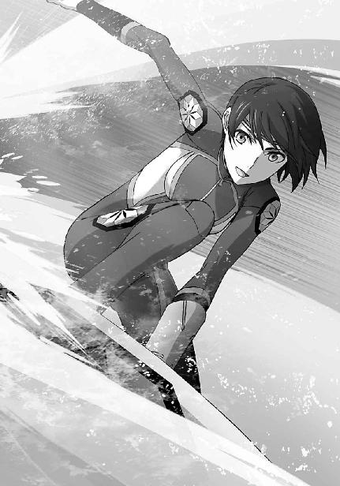
◇ ◇ ◇
今日のバトル・ボードは予選のみ。あとは昼食後に第四レースから第六レースが行われるだけだ。午後はスピード・シューティングの準決勝と決勝を観戦することにして、達也は一旦、皆と別れた。
ホテルに戻り、高級士官用客室へ向かう。昨晩の、風間との約束を果たす為だ。
風間の階級は少佐だが、その戦歴と率いる部隊の特殊性から、軍内では階級以上の待遇を受けている。本来であれば大佐クラスが使用する広い客室にルームサービスのティーセットを並べて、風間は大隊の幹部と共に一服しているところだった。
「来たか。まあ、掛けろ」
警備の兵士（この基地の兵士ではなく風間の部下）に案内されて来た達也は、風間からざっくばらんな口調で椅子を勧められたが、居並ぶ幹部連に躊躇いを見せた。
達也に与えられた「特尉」の階級は「準士官」の意味ではなく、「国際法上の軍人資格を持つ非正規の士官」としての意味を持つ（今日、この国の軍制には「準士官」を意味する特務士官の制度は無い）。軍の階級秩序に全面的に縛られているわけではなく、交戦者としての保護を受ける為、独立魔装大隊で作戦行動に従事する時のみ命令系統に従うことを約している身なのだが、制度的な強制力は無いとは言ってもそこはやはり上官であり、それ以上に目上の大人たちだ。「掛けろ」と言われて「では遠慮なく」とは行かなかった。
「達也君。今日我々は君を、『戦略級魔法師・大黒竜也特尉』として呼び出したのではなく、我々の友人『司波達也』君として招いたのだ。あまり遠慮されると我々の方が困ってしまう」
「それに君が立ったままだと、話もしにくい。座ってくれないか」
そこへ、同じ卓を囲んでいた二人の士官から更に、着席を促す声が掛けられた。
「真田大尉、柳大尉......分かりました。失礼します」
年齢を超えて示された友誼に、それ以上の遠慮で礼を失する愚を冒さず、達也は一礼して風間の向かい側へ腰を下ろした。
テーブルの天板は円形。
独立魔装大隊のティータイムは円卓の精神をモットーとしている。
このテーブルは部屋に備え付けのものではなく、風間がわざわざ運び込ませたものだった。
達也の席が最も扉に近いとはいえ、大人たちは彼を同列の友人として迎えていた。
「まずは久し振りですね。ティーカップでは少し様になりませんが、乾杯と行きましょうか」
「藤林少尉。ありがとうございます」
風間の副官──というより秘書役──を務める女性士官からカップを差し出され、達也は目礼しながらソーサーごと受け取った。
今日の彼女は軍服ではなくレディースのスーツを身に着けているので、余計に「大企業の若手女性秘書」的な雰囲気を漂わせている。
彼女だけではなく、全員がスーツ上下やシャツ・上着無しの平服姿だった。
「私は先日会ったばかりだが、まあこの場は藤林君の顔を立てるとしようか」
「無理なさらずともよろしいのですよ、山中先生」
「いや、再会の祝杯に横槍を入れるほど、私は野暮ではないつもりだからな」
「......先生はカップにブランデーを注ぎ足す口実が欲しいだけでは？」
「目出度い席に酒精は付き物」
「やれやれ......医者の不養生というのは、もう少し別の意味で使われる言葉だと思っていたのだが」
柳大尉により示された疑惑に悠然と嘯きを返したのは、医者であり一級の治癒魔法師でもある山中軍医少佐。
その言葉に、嘆かわしげに首を振っている風間を加えた五人が、この場に達也を迎えた独立魔装大隊幹部の面々だった。
「柳大尉、藤林少尉、お久し振りです。真田大尉、先日はありがとうございました」
達也はまず、久し振りの再会となる二人に挨拶してから、先月基地で一緒に仕事をした真田大尉に一礼した。
「いや、こちらの方こそ助かったよ。『サード・アイ』の長距離・微細・精密照準システムは、君でなければ手に負えないからね」
「あのＣＡＤは元々自分用ですから......。山中先生、そう言えば先日の検査結果をまだ頂戴しておりませんが」
「......私だけ扱いが違わないか、達也？」
「先生......面と向かって人体実験をさせろと言う医者に、好意を持つ人はいないと思いますが」
山中の抗議にツッコミを入れたのは藤林嬢。
山中はわざとらしく、そっぽを向いた。
円卓は笑いに包まれた。
久しぶりと言っても何年も会わなかったわけではない。
最も長く顔を合わせなかった柳で半年強、真田と山中は、前回の仕事からまだ一ヶ月も経っていない。
話題は自然と現況報告になり、この九校戦と、それに対する犯罪組織の蠢動へ移っていた。
昨夜の賊の正体は、電話で聞かされていた第一報のとおり「無頭竜」。しかし、彼らが何をしようとしていたのかについては、訊問の成果が上がっていないとのことだった。ここにいる五人（特に山中）の手にかかれば口を割らせることなど造作もないはずだが、今の段階ではまだ、積極的に関わるつもりは無いようだった。
「それにしても昨夜は活躍だったわね。もしかして、警戒してたの？」
「買い被りですよ、少尉。散歩してたら、たまたま気配をつかんだだけです」
「あんな遅い時間まで？」
「競技用ＣＡＤの調整をしていたものですから」
年齢が近いこともあり、このメンバーで達也と最も会話が多くなるのは、自然と藤林少尉になる。軍務で鍛え上げられた彼女はメリハリのある目に毒なプロポーションの持ち主だが、服装もルックスも派手すぎず、性格にも飾り気がないので、達也も気楽に言葉を交わすことができるのだった。
「やはり技術スタッフとして参加か。チームメイトは『シルバー』のことを知っているのか？」
「いえ、それは一応、秘密ですから」
山中の問いに、達也は首を振りながら答える。
「君が高校生の大会のＣＡＤエンジニアを務めるというのは、イカサマの様な気もするけど。レベルが違いすぎるんじゃないか？」
「真田大尉、達也君も歴とした高校生ですよ？」
笑いながらある意味もっともな疑念を呈した真田を、やはり笑いながらたしなめてから、藤林は達也へ視線を戻した。
「選手としては出場しないの？ フラッシュ・キャストの技術があれば、結構いい線行くと思うんだけど。いざとなれば、『マテリアル・バースト』はともかく、『雲散霧消』もあるんだし」
「いえ、『雲散霧消』や『マテリアル・バースト』は機密指定という以前に殺傷力でレギュレーション違反ですよ。そもそも『マテリアル・バースト』は『サード・アイ』が無いと使えませんしね」
「でも『トライデント』は持って来てるんでしょう？」
「あれもオーバースペックでＣＡＤのレギュレーション違反です。それと、フラッシュ・キャストは一応、四葉の秘匿技術なんですが」
苦笑しながら藤林の言葉を打ち消す達也。
その後に、柳が呆れ声で続いた。
「藤林......高校生の競技会と、戦略級魔法にして究極の『分解』魔法たる『マテリアル・バースト』を結び付けて考えることそのものが、大きくずれていると思うが」
「私も別に、九校戦で『マテリアル・バースト』を使う機会があるなんて考えていませんよ。でも去年の大会では十文字家の御曹司が『ファランクス』を、七草家のご令嬢が『魔弾の射手』を使ってるんですから、『雲散霧消』を使ってもそれほどおかしくないと思うんですけど」
「藤林君、十文字家の『ファランクス』は防御用魔法に分類されていて、殺傷性ランクの対象外だよ。七草家の『魔弾の射手』はフレキシブルな威力設定がセールスポイントで、殺傷力は事後的に評価される。一方、物質を分子レベルに分解する『雲散霧消』は、殺傷性Ａランク相当。同列視はできないよ」
「あら、真田大尉、ご存知ないんですか？ 九校戦の殺傷力規制は、対人影響の可能性がある競技に掛けられたもので、スピード・シューティングとピラーズ・ブレイクは対象外なんですよ。パンフレットは安全性を強調するあまり、この点に触れていませんけど」
九校戦が現在の形態・ルールで開催されるようになったのが十年前。このメンバーの中で実際に九校戦を戦ったことがあるのは二高の優勝メンバーだった藤林だけだ。
お互い、得意分野の薀蓄合戦になり始めたところで、風間からストップが掛かった。
「どちらにしても軍事機密指定の魔法を衆人環視の競技会で使うわけにはいかないのだから、そんなことで言い争っても仕方がなかろう？」
困ったものだ、と言わんばかりの苦い口調で部下の論争に割って入り、
一転、風間は、無表情という名の表情を纏った鋼の声を達也に向けた。
「それより達也、もし選手として出場するようなことがあった場合は」
「分かっていますよ、少佐。『雲散霧消』を使わなければならないような状況に追い込まれたら、諦めて負け犬に甘んじます」
鞘に収められていても、真剣と竹光の区別はつく。少なくとも達也は、風間の真意を、落ち着いた物腰の奥に容赦の無い刃が潜んでいることを見誤ったりしなかった。
風間と達也は兄弟弟子であり、二人の間には友情と呼べるものも確かに存在する。しかし同門の絆も友情も、風間にとって最も優先すべきものではない。必要とあらば、風間は達也をアッサリと切り捨てるだろう。そしてそれは、達也も同じだった。
「......しかし、自分が選手として出場するような状況は考え難いんですが」
「心掛けの問題だ。分かっているならそれでいい」
互いに失笑気味の笑顔の中で、醒めた目を見交わしながら話題を締めくくる風間と達也。
世の中、何が起こるか一寸先は闇、とはいえ、合理的に考えれば達也の指摘が正しいことは二人とも分かっている。
だが心の底では、風間だけでなく、達也の方も、自分の推測に十分な自信を持ち得ていなかった。
◇ ◇ ◇
「達也くん、こっちこっち！」
スピード・シューティング女子決勝トーナメント会場。風間たちとのティータイムから戻った時には、スタンドは既に満席だった。達也が待ち合わせメンバーの姿を探していると、彼を先に見つけたエリカの方から声が掛かった。
「準々決勝から凄い人気だな」
人の波をかき分けるようにして進み、エリカの隣の席に座る。
「会長が出場されるからですよ。他の試合は、これほど混んではいません」
達也のセリフは独り言に近い何気ない感想だったのだが、律儀に答えを返したのは、反対側の隣席をキープしていた深雪だった。
今回は深雪の向こう側にレオ、エリカの後ろに美月、達也の後ろにほのか、深雪の後ろに雫という座席配置だ。
「ほのか、観辛くないか？」
達也の身長は入学時から順調に伸びて、今では一八〇センチ近く（正確には一七八センチ）になっている。段差があるとはいえ、観戦しにくいのではないか、との懸念は当然出て来る。
だが振り返って訊ねた達也に、ほのかは笑顔で首を横に振った。
「そうか......ところで幹比古はどうしたんだ？」
「気分が悪くなったんだって。部屋で休んでるって言ってた」
達也の質問に答えた後、だらしない、とエリカは表情で付け加えた。
「熱気に当てられたみたいですよ。私もメガネを掛けていなかったらダウンしてたかもです」
美月が幹比古をフォローする。
なる程、感覚が鋭敏すぎるとそういうこともあるか、と達也は思った。
彼女たちの心理模様も興味深かったが、今は考えないことにした。
真由美がシューティングレンジに姿を見せた瞬間、嵐のような歓声がスタンドを揺るがした。
スタンドの其処彼処に設置されたディスプレイが一斉に「お静かに願います」のメッセージを映し出し、潮が引くように歓声が収まる。
声は消えたが、その分、熱気は強まったような気がする。
達也は対戦相手の選手が少し気の毒になった。
人気選手の相手をする時には、競技の種類によらず付き物のプレッシャー、ではあるのだが。
そんな相手を気遣ってのことだろう。
真由美は観客の応援など存在しないような素振りで小銃型ＣＡＤのトリガーロックをリリースし、開始の合図を待つ態勢を整えていた。
競技の開始はシグナルで示される。
空中に次々と撃ち出される紅白それぞれ百個の標的から、自分の色の標的を選び出し破壊した数を競う対戦型の試合。
実質的には、投射機が標的を撃ち出さない限り、この競技は始まらない。
それでもスピード・シューティングの選手にとって、縦に並んだ五つのライトが、始まりを告げる角笛だ。
最初のライトが点った。
一つずつ光源が増え、光が最上段に到達した瞬間、素焼きの円盤が空中を飛び交い始めた。
空中を白い円盤が乱舞する。
真由美の撃ち落すべき標的は赤。
赤く塗られたクレーは、有効エリアに飛び込んで来た瞬間、ほぼ同時に撃ち砕かれていく。
「すごい......」
後ろから聞こえてきた感嘆の声に、達也は心の中で頷いた。
確かに凄い。
戦術的には、あまり賢い戦い方では無い。
先に自分の標的を撃ち落してしまえば、相手は自殺点を心配しなくても良くなる。相手選手は、手当たり次第に攻撃することが可能になる。
だがそんな小利口な理屈など粉砕してしまう、圧倒的な技量がここにある。
「えっ？」
思わず、といった感じでほのかの口から漏れた驚きの声。
声にこそ出さないものの、雫も同じように驚いているのが気配で分かった。
「『魔弾の射手』......去年より更に速くなっています」
空中を乱舞するクレーから目を離さず、頷く仕草だけで達也は深雪の言葉に応えた。
白いクレーの向こう側を飛ぶ赤いクレーを、下から撃ち抜いたドライアイスの弾丸。
誘導弾ではない。そんな非効率な魔法を使う物好きはいない。
白いクレーが邪魔にならないポイントでドライアイスの弾丸を形成し、狙撃した遠隔魔法。
魔弾を作り出すのではなく、その銃座──射手を作り出す魔法、それ故に『魔弾の射手』。
遠隔物に働きかける魔法自体は、ごく一般的なものだ。
スピード・シューティングでも魔法で弾丸を生成して狙撃する真由美のような戦い方をする選手はむしろ例外で、クレーに直接振動魔法を掛ける、クレーに移動魔法を掛けて別のクレーにぶつけて破壊する、という戦い方がこの競技の主流だ。魔法は物理的な障碍物に左右されないのだから、今のようにブラインドになった標的を破壊するのに特別な技術を使用する必要は本来、無い。
では『魔弾の射手』と名付けられたこの遠隔弾丸生成・射出の魔法は、何を目的とし如何なるメリットを有するのか。
それは、他人が魔法を使用している領域外から、死角をついて攻撃することができる、という点にある。
例えばスピード・シューティングの対戦で、お互いに振動魔法を撃ち合った場合。
魔法の対象となる紅白の標的が接近している時、互いの魔法が干渉して予期せぬ現象──例えば魔法が発動しないとか、超音波の衝撃波を撒き散らすとか──を引き起こすことがある。
他の魔法師と競合する環境下で遠隔物を魔法で操作する為には、座標を厳密に絞込み、より強い干渉力を発揮する集中力が必要とされる。
対戦型スピード・シューティングは元々、魔法の発動速度と共に、魔法力の集中を要求する競技なのだが、真由美は対戦相手の魔法行使領域外から狙撃することにより、一人で魔法を行使するのと同じ状況を作り出しているのである。
無論それは、相手選手にとっても同じ。
そうなれば戦いは純粋に、スピードと照準の精確さの勝負になる。
そしてスピード、（照準の）精確性において、真由美の魔法力は世界的に見ても卓越した水準にある。
高校生レベルでは、勝負にすらなっていなかった。
◇ ◇ ◇
一日目の競技、スピード・シューティングは、大方の予想どおり、女子部門で真由美が圧勝、男子部門も一高が優勝した。
「会長、おめでとうございます」
あずさの祝福に、真由美が笑顔で頷く。
「ありがとう。摩利も無事、準決勝進出ね」
そのまま目を隣に向けると、
「まずは予定どおりだな」
視線の先で、摩利が頷きを返した。
既に夜も更け、食事も入浴も終わって、あとは眠って英気を養うばかりの時間、真由美の部屋に女子生徒会役員（プラス風紀委員長）が集まっていた。
まだ一日目が終わったばかりであり、真由美は明日も競技がある。本格的なお祝いは総合優勝の後ということで、今はジュースで簡単な祝杯を挙げているところだった。
女性限定なのは時間を考慮してのこと、だが、別にパジャマパーティーというわけでもなく、男性がいても本当は差し支え無い。
それなのに何故、女性のみになったかというと──
「少しヒヤッとしたが、服部も何とか勝ち残りか」
摩利がヤレヤレという口調で呟いたとおり、男子部門の戦績が思ったよりパッとしなかった所為だ。スピード・シューティングは星勘定のとおり優勝を果たしたものの、バトル・ボード予選で予想外に苦戦していた。
「ＣＡＤの調整が合ってなかったみたいです。試合が終わってからずっと、木下先輩と二人で再調整してましたけど......」
「まだ終わっていないようですね」
あずさの言葉を受けて、鈴音が端末で各スタッフの作業報告を確認した。
「木下くんも決して下手じゃないんだけど」
「残念ながら、名人とも言えないな」
一応、木下を弁護する姿勢を見せた真由美だったが、摩利の歯に衣を着せない評価に反論せず、苦笑を漏らした。しかし、あずさは少し、採点が辛すぎると思ったようだ。
「あの、木下先輩の所為とばかりも言えないと思います。ここに着いてから服部くん、何だか不安定になってた気がします」
「厳しい言い方をするようだが、そういうのをひっくるめてアジャストするのがエンジニアの腕だ」
だがそれすらも、摩利はバッサリと切り捨てた。
「それは......そうですけど......」
摩利の言うことは正しい。確かにそれが、エンジニアの役目だ。しかし、選手の側にも自分のコンディションを管理する責任があるのではないか。
そうは思っていても、口に出せないあずさだった。
「こらこら摩利。あーちゃんを虐めないの」
摩利は選手の側の、あずさはエンジニアの側のロジックに立っている。立場の強弱はあれ、心情的には平行線だ。こういう時はリーダーの出番だった。
「幸い、はんぞーくんは明日オフだし、本人の気が済むまでやらせてあげるしかないでしょう。......でもそうすると、明日の木下くんの担当をどうするかが問題ね」
「木下君は女子クラウド・ボールの副担当になっています。サブですので、抜けても問題は生じないかと」
「そうねぇ......イズミんがいるから大丈夫とは思うけど......」
「和泉一人に任せるのもリスキーじゃないか？ クラウド・ボールのコートは六面だ。一回戦でも二試合が同時になるし、一回戦を三人全員が勝ち抜けば、二回戦は三試合同時。真由美は自分で調整できるとしても、残る二人分を一度に調整する必要が出てくるかもしれない。各試合のインターバルが長く取ってあるとはいえ、時間が足りなくなる事態も十分予想される。その為のサブだろう？」
鈴音は真由美の判断を支持したが、摩利が難色を示した。それも、調整の重要性を理解しているからこその異論で、反対の為の反対、議論の為の議論ではない。限られた人員の中でのやりくりは、それだけ難しい問題なのだ。
「男子のサブの石田君を女子兼任にするのは如何ですか？」
女子の試合は午前、男子の試合は午後。鈴音の提案は、スケジュール的には可能なものだったが、真由美の反応は否定的だった。
「午前も午後もじゃ、石田君に負担が掛かり過ぎよ。クラウド・ボールは一日の試合数が一番、多いんだから」
「では、明日、明後日の両日ともオフの司波君では如何でしょう？」
鈴音の代替案に、真由美は少し考えてから頷いた。
「......それが一番かな。じゃあ、深雪さん。達也くんに伝えてくれる？」
「はい」
真由美の依頼に、深雪は笑顔で頷いた。
兄の活躍の機会が増えるのは、深雪にとって歓迎すべきことだった。
◇ ◇ ◇
「......それでこんな夜更けに来たのか」
いくら兄妹とはいえ、およそ若い女の子が男性の部屋を訪れる時間ではない。
達也はベッドに腰掛けるよう深雪に手振りで示しながら、呆れたように呟いた。
「......ご迷惑でしたか？」
不安げに瞳を揺らして深雪が問う。
「いや、知らせてくれたのはありがたいが......」
深雪にこういう目をされて、達也が強く出られた例は無かった。
「いくらホテルの中とはいえ、女の子が部屋の外を出歩く時間じゃないよ？ 色々と不穏な動きもあるんだ。もしかしたら廊下に不審者が侵入しているかもしれない」
ここは一応、軍事施設。セキュリティは一流民間ホテルより更に上だ。
いくらなんでも考え過ぎではないか、と深雪は思ったが、達也が心配してくれるのは嬉しかった。
「はい、申し訳ありませんでした、お兄様」
「満面の笑顔で謝られてもなぁ......」
ぼやく達也の方も、顔が笑っている。これでは叱責どころかお小言にすらなっていないが、元々妹を厳しく叱りつけるには、達也は深雪に甘すぎるのだった。
「とにかく、伝えてくれてありがとう。部屋まで送っていくよ」
達也が椅子から立ち上がると、深雪も慌てて立ち上がり、大急ぎで両手を振った。
「いえ、一人で大丈夫です。お兄様は作業中でいらしたのでしょう？ ただでさえお邪魔してしまったのに、これ以上お手間を取らせるわけには......」
「作業中と言っても、これは遊びのようなものだから気にしなくて良いよ」
妹の視線から隠すように、達也はノート型端末を閉じた。
「ですが、今のはＣＡＤのプログラムですよね？」
ハードはあまり得意でない深雪だが、達也の影響でソフトにはある程度のスキルがある。
チラッと見ただけで内容を理解することはできないが、開いていたエディターの種類やコードの書式から、それが起動式用のプログラムだという程度のことは見分けがついた。
「今回の競技とは無関係のものだから、中断しても少しも構わない。プログラム自体、玩具用みたいなものだからね」
「玩具、ですか？」
「チョッと、新しい近接戦用の武器を思いついたんだが、実用性はほとんど無いんだ。相手を驚かせるくらいの効果しかない、だろうなぁ。完成しても製品化はできないだろうね」
「それでも新しい魔法としての意義はあるのでは？ お兄様がお作りになるもので、無意味なものなど無いかと」
「ジョークとしての価値はあるかな。まあ、そういうものだから、急いでいるわけじゃない。今はそれより、お前の方が優先だよ」
「そんな......お兄様ったら、わたしの方が大切だ、なんて......」
（んっ？）
両手を頰に当てて俯く妹に、達也は少なからぬ違和感を覚えた。
今、自分のセリフが妙な方向へ改竄されたような気がしたのだ。
（意味は合ってる、が、ニュアンスが致命的に違うような......）
戸惑いは一瞬では収まらなかったが、現実に復帰したのは達也の方が早かった。
「......行こうか」
「はい、お兄様。あの......深雪も、お兄様と同じです」
「えっと......？」
「深雪も、お兄様が何よりも大切です」
「............」
妹はまだ、現実に復帰できていないようだ──と、信じたい。
達也はこの時、そう思った。
［６］
九校戦二日目。
達也は技術スタッフ用ユニフォームのブルゾンを着て、競技エリア内に設けられた第一高校の天幕にいた。
このユニフォームに袖を通すのは発足式以来だ。（開会式に出席するのは選手のみ）
懇親会のブレザーといい、このブルゾンといい、どうにも抵抗感を拭い切れない。
だが、ユニフォームとして定められている以上、彼の方で慣れる以外に無いことも分かっていた。
「どうしたの？ 何か不機嫌？」
「いえ、特には。何故そのようなことを？」
真由美に問われ、落ち着いた声で問い返したが、内心、動揺を禁じ得なかった。
ポーカーフェイスを保っていたつもりだったが、そんなに分かりやすかっただろうか。
「んーっ、なんとなく？」
「いえ、そんな曖昧なことを疑問形で言われましても......」
字面とは別の意味で、達也は脱力した。
どうやら、特に表情に出ていたとか雰囲気に棘があったとかそういう理由ではなさそうだ。
もっとも、何の兆候も無しに彼の心の裡を言い当てたとなれば、むしろその方が怖い、というか脅威ではあるのだが。
「それより何か御用があったのでは？」
今は気にしても仕方のないことを脇にどけて──気にしても対策など立てようもないし──達也は試合前の真由美が彼の所へやって来た理由を訊ねた。
「様子を見に来ただけ、だったんだけど......データはもう頭に入ったの？」
達也が女子クラウド・ボールの副担当をするのは昨晩急遽決まったことであり、実際にＣＡＤの調整を手掛けなければならなくなった場合の為に、彼は各選手の想子特性データを大急ぎで頭に叩き込んでいたところだった。
「ええ、まあ」
「全員分？」
「ええ、まあ」
全く同じ短い答えを繰り返した達也を、真由美は目を丸くして見詰めた。
「何か今更、って感じだけど......達也くんってホンっトに凄いのね。それって、瞬間記憶とか完全記憶とかいうやつじゃない？」
「俺としてはこんなものより、普通の魔法力が欲しかったんですけど」
「受験生としては許しがたい贅沢ね」
受験などしなくても推薦で進学できるくせに、真由美はそんなことを言い出した。
──両手を腰に当て、頰を膨らませるオマケつきで。
「............」
「ん？ どうしたの？」
片手の親指と中指で両のこめかみを揉み始めた達也に、真由美はちょこんと小首を傾げて見せる。
「会長、もしかして......いえ」
「？」
言いかけたセリフは「演技じゃなくて素だったんですか？」なのだが、達也はそのセリフを吞み込んだ。──まず、賢明と言えよう。
「......そろそろ試合が始まるんじゃありませんか？」
「そうね。じゃあ、行きましょうか」
「はっ？」
「だから、行きましょうか」
「......ええ、そうですね」
試合中の調整は許されないが、試合終了後すぐに再調整をしなければならないケースも考えられる。
スタンドではなく、コート脇についていなければならないのは当然だった。──とは言っても、コートまで一緒に行く必要は無かったのだが、達也は振り返る真由美の横に並んだ。
「深雪さんはスタンドなの？」
横に並んで、最初のセリフがコレだった。
「ピラーズ・ブレイクを観に行ってます」
真由美の質問に達也が思ったのは、何故そんなことを、ではなく、またか、だった。
「そっか......本当に別行動することもあるのね」
不快感を顔に出さないように気をつけながら答えた達也の言葉に、真由美は歩きながら随分感慨深げに頷いた。
達也は少々情けない気持ちになった。
「......そんなにいつもいつも一緒にいるように見えるんですか？」
余程情けない顔に見えたのだろうか。
真由美は大慌てで両手を振って、否定の意思を示した。
「えっ、いえ、本当はそうじゃないって分かってるのよ？ 生徒会の仕事中はいつも別々だし、教室だって実習だって一緒じゃないって知ってるし。ほら、何と言うかその......イメージよ、イメージ！」
「会長......魔法師にとって、イメージは現実そのものなんですが」
湿度と重量を増した眼差しに、真由美は見えない汗をだらだらと流さなければならなかった。
重苦しい空気は、コートに着くまで続いた。
さすがに試合場を前にして、士気に差し障る態度を取り続けるのは拙いと考えた達也は、自分で自分に一喝を食らわせて表情を引き締めた。
しかしそれは、真由美が上に羽織っていた膝上丈のクーラージャンパー（熱電効果による冷却機能がついた防暑用スタジアムジャンパー）を脱いだ瞬間、危うく崩壊しそうになった。
「......もしかしてそのウェアで出るんですか？」
「そうよ？」
当たり前のように頷かれて、達也は頭痛を感じた。
「本当に、そのスコートで試合をするんですか？」
「えっ、おかしいかな？ ......似合ってない？」
「............とても良くお似合いです」
「そう......？ フフッ、ありがと」
上機嫌でストレッチを始めた真由美の姿を、確認の意味を込めて、達也はもう一度見直した。
何度見ても、彼の見間違えではなかった。
テニスウェア、としか表現しようのない、ポロシャツにスコート姿。それも競技用というよりファッション性重視。
少し身体を傾けるだけで裾が跳ね、アンダースコートが見えてしまう。
クラウド・ボールは動きの激しい競技だ。
圧縮空気を用いたシューターから射出された直径六センチの低反発ボールを、ラケットまたは魔法を使って制限時間内に相手コートへ落とした回数を競う競技だが、一セット三分の試合時間で、透明な箱にすっぽり覆われたコートの中へ二十秒ごとにボールが追加射出され、最終的には九個のボールを選手は休みなく追いかけることになる。
通常は半袖シャツにショートパンツ。転んでも大丈夫なように、膝・肘用のプロテクターを着ける選手もいる。
魔法オンリーで戦えば走り回らずに済むので転倒に備えたプロテクターは必要ないが、ラケットを使わない選手は逆に、ボールがぶつかっても怪我をしないようなウェアで試合に臨む。
こんな両手両足むき出しの、ヒラヒラした格好で出場する競技ではなかったはずなのだが。
（この女性なら何でもありか）
見慣れてくると何となくそんな気がして、達也は納得してしまった。
「達也くん......今なにか失礼なことを考えなかった？」
「滅相もありません。ラケットは使わないんですか？」
中々鋭い指摘を真面目くさった顔でサラリと流し、事務的な口調で話を逸らす。
「うん、私はいつもこのスタイルよ」
一瞬、いつも「テニスウェア」スタイルなのか、と勘違いしそうになったが、これはもちろん「魔法オンリー」の競技スタイルという意味だ。
「ＣＡＤは何を？」
「これ」
そう言って真由美は、小さなバッグの中から拳銃形態の特化型ＣＡＤを取り出した。
ショートタイプ、一部でシビリアンタイプと呼ばれる、実弾拳銃の銃身に当たる部分が短いタイプの物だ。（達也のＣＡＤはロングタイプ、一部でキャバルリータイプと呼ばれる銃身部分が長いタイプである）
拳銃形態・小銃形態ＣＡＤの銃身部分には照準補助装置が組み込まれている。魔法的な座標（対象物エイドスのイデア内における相対座標）を計測する為のアクティブレーダーがこの「銃身」の正体だ。
長い銃身を持つＣＡＤは、それだけ照準補助を重視しているということになる。
逆に言えば、特化型の起動速度のみを求め、照準補助を必要としていない魔法師には、軽くて携行も取り回しも便利なショートタイプの方が向いていると言える。
「会長は汎用型をお使いでしたよね？」
「普段はね。どうせ一種類しか使わないから」
随分省略された言い方だが、「試合中はどうせ一種類の魔法しか使わないから特化型を選んだ」という意味だと、達也は正確に理解した。
「移動魔法ですか？ それとも、逆加速の魔法ですか？」
「正解。『ダブル・バウンド』よ」
真由美は入念なストレッチを続けながら、特にもったいぶることもなく達也の質問に答えた。
「達也くん、ちょっと手を貸してくれない？」
「いいですよ」
ぺたりと座り込んで大きく脚を広げた真由美の背中を軽い力で斜めに押す。
ほとんど抵抗もなく、彼女の胸は脚についた。
「運動ベクトルの倍速反転ですか......しかし、あれ一種類ではリスクがありませんか？ 低反発性ボールでは、壁や床で運動エネルギーが失われると、相手コートまで戻らない可能性もありますが」
少し低めの体温を掌に感じながら、達也は肩越しに囁く形で注意を促してみた。
「んーんんん......っと、一応、他の加速系魔法も入れてるけど、去年も使わなかったし」
事も無げに言っているが、これは相当の力量差が無いとできないことだ。
真由美のレベルがどれほど飛び抜けているのか、達也は改めて実感した。
「もう良いわ」
左右四回ずつ繰り返したところで真由美に言われ、達也は手を離した。
腰を伸ばして距離を取ると、両足を揃えた真由美がこちらを見上げて手を差し出している。
何がしたいのかすぐには分からなかったが、じっとこちらを見詰めるだけで動こうとしない真由美の少し不満げな表情を見て、達也はようやく彼女の意図を理解した。
正面に回りこんで差し出された手を握る。
小さく、柔らかな手だった。
彼が軽く引っ張ると、真由美は膝を揃えたまま器用に立ち上がった。
「ありがと」
「いえ、どういたしまして」
我ながら愛想に欠ける受け答えだと達也は思ったが、真由美は何故か嬉しそうだった。
「う～ん、何か新鮮」
「はっ？」
さすがにこの発言は脈絡が無かった。
反射的に問い返した達也へ、真由美はニコニコと笑みを返した。
「私って、兄と妹はいるけど弟はいないのよね」
「はぁ......」
それは知っていた。
秘密主義の四葉と違い、七草家は社交的な家柄だ。
子供たちの誕生日パーティーも大勢の招待客を呼んで毎年盛大に祝っている。
少し調べれば、七草家の家族構成を知ることは特に難しくない。
確か、兄二人の他に、中学三年生になる双子の妹がいたはずだ。
「達也くんって私のこと特別扱いしないじゃない？」
「そんなに馴れ馴れしくしているつもりもありませんが......」
達也が落とし穴に警戒しながらそう言うと、真由美はクスッと笑った。
「そういう意味じゃなくって。変に構えたりオドオドしたりソワソワしたりしないでしょ？」
最初のはともかく、後の二つは真由美がそう仕向けているからじゃないのか、と達也は思ったが、無論、そんなことは口には出せない。
「一応敬語を使ったりしてるけど、実は遠慮がないし。冷たいのかと思うと、こんな風に我侭も聞いてくれるし。弟ってこういう感じかな～、なんてね」
達也は思わず、目を瞠って真由美を見返してしまった。
確かに身長を除けば、それなりにしっかりしているし意外と色気もあるし少々分かりにくいが気配りもできるようだし、「姉」と自称されても違和感は無い。
だが正直言って、こんな姉がいたら気の休まる時が無くなりそうだとも思う。
「......さあ？ 俺も妹だけですから」
「それもそっか」
これから試合だということを忘れてるんじゃないか、と思いたくなる笑顔で、真由美は達也をニコニコと見詰めている。
いい加減、居心地が悪くなった達也は逃走を試みた。
「すみません、他の選手の様子も見ておきたいと思いますので」
「その必要は無いわ」
だが彼の逃走計画は、第三者の介入によりあえなく失敗に終わった。
「あら、イズミん」
「七草......アンタ、相変わらずその呼び方なのね」
頭痛をこらえるような仕草を見せたのは、達也と同じブルゾンを着た女子生徒。技術スタッフ三年生の和泉理佳である。
「リカちゃんの方が良かった？」
「わざとやってるでしょ！ はぁ、良いわよもう、イズミんで」
「それで、和泉先輩。必要ない、とは？」
真由美の言葉遊びに付き合っていたらきりがない、と達也は既に学んでいた。
真由美と和泉、二人のやり取りを完全に無視して、達也は最初のセリフの意味を訊ねた。
「えっ？ ああ......。司波君、貴方は七草の試合を見ていて。あっちは私が見てるから」
この和泉という女子生徒は、達也が技術スタッフに加わっていることをあまり好意的に思っていない。
エリート意識、と言うより自負心が強いタイプだ。
多分、彼の手を借りなくても自分だけでカバーできる、と考えているのだろう。
「そうですか。分かりました」
本当は逃げたいのだが、分担がそういう風に決まれば達也に否やは無い。
余計なことを言わずに、達也は頷いた。
「じゃ、頼んだわよ」
付け足しのようにそう言い捨て、和泉はすたすたと去って行く。
「悪い子じゃないんだけどねぇ」
やれやれ、という空気を醸し出しながらその背中を見送る真由美だったが、達也にあえて聞かせるように呟いたそのセリフも、彼には風のそよぎと同じだった。
和泉がどのような態度を取ろうと、それを真由美がどうフォローしようと、達也には関係のないことだった。
クラウド・ボールはテニスやラケットボールに似た球技だが、サーブという制度は無い。
一セット三分、インターバル三分の、三セットマッチ。（男子は五セットマッチ）
試合開始の合図と共に圧縮空気で射出されたボールは、二十秒ごとに数を増やしながらブザーがセットの終了を告げるまで、コートを目まぐるしく飛び交って止まることは無い。
──普通ならば。
だが達也の目の前で行われている試合は、少々毛色が違っていた。
対戦相手も真由美と同じ魔法オンリーのスタイル。
この競技に出てくるだけあって、移動系統を得意としているようだ。
身体の動きでイメージを補完するタイプなのか、両手で保持したショートタイプ拳銃形態のＣＡＤを忙しくボールの方へと動かしている。
移動魔法に捕らえられたボールは、自分サイドのコートに落ちる前に空中で運動方向を変え、真由美のサイドへ不自然な弧を描いて飛んで行き──ネットを越えた瞬間、倍のスピードに増速されて反転する。
全てのボールが、一球の例外も無く。
真由美は胸の前に両手でＣＡＤを構え、コートの中央に立っている。
まるで絵のモデルのように、ただ、立っているだけ。
透明の壁で覆われたコートの中は、彼女の髪を、短いスコートの裾を揺らす風も吹かない。
伏せ気味の両眼に神秘的な光をたたえ、祈るようにＣＡＤを捧げ持っている。
ただそれだけで、相手の得点を許さない。
目測で、およそ十センチ。
それが、相手ボールに許された侵入の限界線。
真由美の魔法は、ボールに細かいコントロールを付加していない。
相手の死角を狙うでもなく、単純に打ち返しているだけであり、見た目の難易度はボールの軌道を折り曲げて様々な角度からコートを狙う相手選手の魔法の方が高度に見える。
だが現実に得点を重ねているのは真由美の方だ。
一方的に、一つの失点もなく。
第一セットの終了を告げるブザーが鳴らされた瞬間、相手選手は両膝をついてコートにへたり込んだ。
その崩れ落ちるが如き動作が、相手選手の絶望を映し出しているように見えた。
ペースを乱されず、集中を崩されず、超然と魔法を操っているように見えた真由美だったが、彼女の内心はそれほど穏やかなものではなかった。
セット終了の合図を聞いて、思わず長い息を吐き出してしまう程度には。
試合自体は、苦戦しているという意識はない。
傲りではなく、客観的な認識として、自分の魔法力は相手選手を圧倒していると分かっている。このまま次のセットで、確実に勝負は決まる。
問題は、コート脇から彼女を見詰めている視線だった。
見られることには慣れている。
彼女は物心ついて以来、ずっと注目され続けてきたのだ。
純粋な称賛を込められた視線も、陰湿な嫉妬や生々しい劣情を隠した視線も、彼女には空気のようにお馴染みのものだった。
だがこの三分間で感じた視線は、初めて体験するものだった。
自分の全てを見られているような錯覚。
単に裸を見られている、というレベルのものではない。（それだって大問題だが）
短いスカート（あるいはスコート）の裾や大きく開けた胸元にこっそり向けられる眼差しなら、むしろお馴染みのものだ。
真由美が彼──達也から感じた視線は、そんなありきたりなものではなかった。
素肌にとどまらず、その下──肉や骨や血、彼女を物質的に構成する要素、プラス、彼女の意思や感情や価値観、癖、習慣、嗜好、今の彼女を形作っている過去、彼女を支える才能と努力、「七草真由美」という人間を構成する全要素が読み取られ、さらけ出されるような、得体の知れない不安感をもたらす視線。
達也が真由美の試合を間近に見るのはこれが初めてだ。
だが、担当する一年生の練習試合はこの距離で何度も見ているはずで、見られていた一年生たちから、不安を訴えられたことはない。
この感覚に自分より年下の少女たちが耐えられるはずはない、と思う。
そうするとこの感覚は、本当に自分の錯覚か、それとも──自分だから感じ取ることができたのか。
今から三分間のインターバル。普通はその間に、汗を拭いたり水分を補給したりする。
しかし、タオルやドリンクを入れたバッグは、達也に預かってもらっている。
コートの外に出るということは、自分から達也が待っているところへ──待ち構えている所へ行くということになる。
コートの外に出るのが、真由美は少し、怖かった。
とはいうものの、このままずっとコートの中にとどまり続けるのも不自然だ。一歩も動いていないとはいえ、座った方が良いのは間違いないし、水分を補給すべきでもある。コートチェンジだってしなければならない。
運営委員から変に思われるだけならともかく、応援に来てくれている同級生や下級生に不安を与えるのは、彼女の立場としていかにもまずい。
真由美は一つ深呼吸して、吐き出す息と共に不安感を身体の外へ追い出した。
（えーい、女は度胸！）
真由美は自分の足に前進を命じた。
「お疲れ様でした」
タオルを差し出す下級生を前にして、真由美は拍子抜けの気分を味わっていた。あの得体の知れない息苦しさが噓のように消えていた。
いつもどおりの、真面目くさった表情の下に一癖も二癖も隠しているに違いない、彼女にも内心を読み取らせないポーカーフェイス。何を考えているのか分からないという不安感と、それでも決して裏切られることだけはないという奇妙な安心感を与える年下の男の子。
さっきの「弟のようだ」というセリフは、その場の思いつきでも達也をからかう為の冗談でもなかった。冗談であることに違いはないが、一面では真由美の本音でもあった。
彼のことを怖がっていた自分が何だかバカバカしくなって、真由美は不必要に強気な態度を取った。
「お疲れ様でしたって、まだ試合は終わってないわよ。気を抜いちゃダメ」
達也はチームの一員ではあるが、選手ではない。
彼の出番は試合が始まる前と試合が終わってからで、試合中は傍観者に過ぎないのだから「気を抜くな」というのはおかしなセリフなのだが、達也はその点に気づきながらあえて指摘はしなかった。
「いえ、もう終わりでしょう」
指摘したのはもっと実のある、別のことだった。
「えっ？」
「相手選手に試合を続ける余力はありません。このまま次のセットに入っても、途中で力尽きることは明白です。あちらのスタッフにも分かっているはずだ。この試合は、向こうが棄権して終わりです」
真由美がコートの方を振り返ってみると、果たして相手チームの作戦スタッフが審判団と何事か話をしている。
相手選手は、ベンチに座り込んで腕にメディカルチェッカーを巻いていた。
「魔法の連続発動による想子の枯渇です。ペース配分を誤ったのでしょう。会長の試合相手を務めるには、少々力不足でしたね」
「......見ているだけで、そこまで分かるものなの？」
「キチンと視ていれば、分かるものですよ」
達也のセリフが聞こえていたわけではないだろうが、彼がそう言った直後、審判団から相手選手の棄権が告げられた。
惚けた表情で立ち尽くす真由美は、レアで且つ、他愛のない笑いを誘う姿だったが、達也は微笑を浮かべることもなく、真由美に移動を促した。
「テントへ行きましょう。次の試合に備えてＣＡＤをチェックしておいた方が良い」
「ええ、そうね。お願いするわ」
主導権を完全に達也に握られた形となっていたが、真由美は無意味に反発を示すこともなく、彼女の荷物を持って歩き出した達也の後に続いた。
調整機の立ち上げを終えた達也にＣＡＤを渡しながら、真由美はその隣に腰を下ろした。
向こう側、ではなく。
膝まですっぽり隠すクーラージャンパーは羽織っておらず、試合中の「テニスウェア」スタイルだが、これは真由美の悪戯心によるものではなく、達也が不自然に身体を冷やすことを止めた所為だ。
肩が触れ合うほどの至近距離に椅子を並べているのだが、例によって達也はむき出しの太ももに見向きもしない。
真由美も別段、そのことに口を尖らせたりはしない。
彼女の注意は、調整機と、そこにつながれた自分のＣＡＤに向いていた。
「私の計測はしなくてもいいの？」
「十分や十五分では、プログラムの書き換えはできても、テストをする時間がありませんから。わざわざ機械を使って測定する意味はありません」
彼と話をしていると間々あることだが、真由美は無意識に小首を傾げてしまった。
今の言い方は、まるで機械を使わなくても大まかな計測ができるように聞こえたが......
「......見ただけで分かるの？」
「分かりますよ。会長にも分かるでしょう？」
「えっ、と......」
「魔法が正常に発動しているかどうか、ＣＡＤが正常に機能しているかどうかは、計測機を使わなくても魔法師ならば視ただけで分かります。会長にももちろん、分かりますよね」
「それは分かるけど」
「俺にはそれが、ある程度詳しく分かるだけです」
達也の目はずっとディスプレイを流れる文字列へ向いたままだ。
ある程度、がどの程度なのか、真由美は非常に気になったが、単なる好奇心でエンジニアの作業を邪魔することは彼女にもさすがに憚られた。
調整機から取り外し、電源をオフにして、トリガーや起動式切替スイッチの感触をチェックしてから、達也はＣＡＤを真由美に手渡しで返した。
自分で明言したとおり、中のプログラムは弄っていない。
その事に真由美は少しホッとしながら（本人は隠しているつもりだったが、達也にはバレバレだった）、何を思ったのか、手渡されたＣＡＤのグリップを握りトリガーに指をかけたまま、膝の上においた。
「会長......あまり良い気分はしないので、銃口をこちらに向けないでもらえますか」
正確に言えば、ＣＡＤに「銃口」は無い。
ライフルタイプの大型ＣＡＤの中には、先端に撮像素子がセットされたものもあり、それが光学兵器の「銃口」に見えないこともないのだが、拳銃形態のＣＡＤではショートタイプであろうとロングタイプであろうと「銃身」の先端は単なる金属面だ。
だが全体の形状が実銃に酷似しているので、銃器の恐ろしさを熟知した者にとっては、「銃口」を向けられると少なからず不安になるのである。
「あっ、ごめんなさい」
そういう事情をどの程度理解しているのかは分からないが、真由美は素直に謝罪を口にして、くるりとＣＡＤを回転させ、銃身を持って銃口を自分の方へ向ける格好で持ち直した。
「俺の方こそすみません。細かいことを言って」
「気にしないで。マナーだしね。それで、どうだった？」
省略の多すぎる質問だったが、真由美が何を訊きたいのか達也は正しく解釈した。
「上手に調整されていると思いますよ。無理をせず、奇を衒わず、基本に忠実に、確実性が確保されています。確実性重視のあまり、起動式にいささか冗長な部分もありますが、会長の魔法力を考えれば満点じゃないでしょうか」
取りあえず、誤魔化したりおだてたり粗を探したりする場面ではないので、達也は思ったままを口にした。
調整機に表示されたままの起動式を見ながら答えて、真由美に視線を戻すと──彼女は微妙に、照れていた。
「そう......？ フフフ、何だか、嬉しいわね」
目元をほんのり赤くして、視線をわずかに逸らし、照れ笑いを浮かべ。
派手に赤面されるより、かえって気恥ずかしさを覚える反応だった。
「......そうですか？」
間がもたない、という要素もあったが、真由美は褒め言葉など日常的に聞き飽きるほど聞いているだろうに、という純然たる疑問もあった。
「ええ。お世辞を言わないって分かってる相手から褒められるのは嬉しいじゃない？」
達也も自分のことを、分別を備えた大人だとまで考えているわけではない。
客観的に、自分はまだまだ未熟な子供だと思っている。
それでもこの真由美の評価は、お世辞も言えない社会不適格者と言われているような気がして少なからず不本意だった。
「......俺も人並みにお世辞くらい言いますが」
しかし達也の型どおりな反論を、真由美は見透かしたようにニッコリ笑って切り返した。
「お世辞なの？」
「......いえ、違いますけど」
したり顔で笑われているのが少し口惜しかったが、これ以上足搔くと底なし沼にはまり込んでしまうのは間違いない。
そもそも最初から反論が必要な場面でもなかったのだ。
達也は潔く、真由美の笑顔を受け容れた。
クラウド・ボールは九校戦中、一日の試合数が最も多い競技だ。
試合数自体はモノリス・コードが六試合と最も多く、クラウド・ボールはピラーズ・ブレイクと同じ五試合だが、モノリス・コード、ピラーズ・ブレイクが二日間にわたり競技日程が組まれているのに対して、クラウド・ボールは五試合を半日で戦い抜かなければならない。
試合時間も短いとはいえ、競技の性質上、三分間のセット中は息をつく間もないほど魔法を連発しなければならないから、決して一試合あたりの負担が小さいとは言えない。
故にこの競技を勝ち抜く為には、いかに魔法力の消耗を抑えるかが重要になると言われている。
二セット連取が望ましいのはもちろんのこと。
セット中も遮二無二全てのボールを返しに行くのではなく、ある程度の失点は織り込んだ上で無理のないペース配分を行わなければならないとされている。
最初から最後まで同じペースで魔法を使い続けられる真由美の様な選手は、反則級の規格外なのだ。
とは言っても、真由美も考え無しの力自慢ではない。
彼女も一応、戦法は考えている。
二セット連取は必須条件。──いや、それは単なる力ずくだろう、というツッコミは禁則事項だ。
あまりこの競技向けとは言えない、単純にボールを跳ね返すだけの魔法一種類で戦うのも、複数の魔法を使い分けることによる消耗を抑える為だ。──それは魔法力の消耗を抑えることにはならない、というツッコミも却下する。
とにかくそういうわけで、試合が始まれば最初から迷わず能力全開、が彼女の身上なのだが。
第二試合が始まって、真由美は珍しく、戸惑っていた。
調子は悪くない。
相変わらず、相手に一得点も許さぬまま既に第一セットの半分が過ぎている。
むしろ、その逆だった。
（何故......？）
第一試合が相手の棄権で終わった為、通常より長い休憩時間を取れたのは確かだ。
だがそもそも、半日で五試合というタイトなスケジュール。
疲労により調子が落ちていくことはあっても、実感できるほど調子が上向きに変わるというのは、普通なら考えられないことだった。
ということは、普通ではない原因がある、ということに他ならない。
思い当たる節は一つだけだ。
セット終了のホイッスルと共に、
真由美は、噓つきな下級生を問い詰めてやろうと決心した。
「達也くん、プログラムは弄らないんじゃなかったのっ？」
第一試合とは正反対。
セット終了の合図と共に、真由美はコート外へ、達也の所へ突進した。
真由美の剣幕に達也は驚きを隠せなかったが、応える口調は落ち着きを保っていた。
「プログラムは弄っていませんよ。動作上の不都合は無かったはずですが、何か気になる点がありましたか？」
「噓！」
ビシッ、という擬音が本当に聞こえてきそうな勢いで、真由美は達也の鼻先に指を突きつけた。
「術式構築の効率が明らかに上がっていたわよ。ハードを改造する時間なんて無かったから、ソフトを弄ったとしか考えられない！」
「......効率が上がったんですよね？ 下がったんではなく」
困惑気味に達也がそう問うと、真由美のテンションが見る見る萎んでいった。
「それは......そうだけど」
効率が損なわれたならともかく、効率が上がったといって文句をつけている自分の態度が理不尽なものだとようやく自覚したようだ。
「とにかく、座りませんか」
困惑顔のままでタオルを差し出された真由美は、少し恥ずかしそうで少し拗ねた顔をして、ベンチに腰を下ろした。
「効率が上がったのは、ゴミを取り除いたからでしょう」
身体半分の隙間を空けてその隣に腰を下ろした達也は、あえて真由美に顔を向けぬまま、宥める口調でそう言った。
「誤魔化さないで。私、隣で見てたのよ。分解掃除なんてしなかったし、クリーナーも使ってなかったじゃない」
半ば意地になって言い返す真由美に、達也は根気よく答えた。
「いえ、ハードの掃除ではなく、ソフトのゴミ取りです」
ＣＡＤの性能は使用者の精神状態にも左右される。
エンジニアに対する不信感は、ＣＡＤの性能を顕著に低下させる。
事後承諾なので正確にはインフォームド・コンセントと言えないが、ここはキチンと説明しておくべきだろう、と達也は思ったのだ。
「会長のＣＡＤのシステム領域に、アップデート前のシステムファイルの残骸が散らばっていましたので、それを取り除いておきました。ＣＡＤのＯＳはその種のゴミが残りにくくできているんですが、それでも完全ではありません。そういう不要データを消去することで、ＣＡＤの効率が多少アップするんですよ。もっとも、普通なら意識できるレベルではありませんので、さっきは説明しませんでしたが。会長の感受性がそれだけ鋭いということでしょうね。俺が迂闊でした」
「あっ、えっと、いいのよ、そういうことなら」
大袈裟に頭を下げられて、真由美は狼狽気味に両手を振った。
「だったら達也くんは、自分の役目を果たしてくれただけだもんね。私の方こそ、疑うようなことを言ってゴメンナサイ」
達也が顔を上げると、目の前にはぺこりと頭を下げた真由美の頭があった。
随分切替が早い人だな、と達也は思った。
「じゃあ、この話はこれまでということで」
随分素直に頭を下げることができる人だな、とも達也は思った。
「そうね」
年長者の余裕、なのだろうか。
「ねえ、達也くん」
と言っても、上から目線の余裕ではない。
「はい？」
「後でそのメンテナンス......ゴミ取り？ のやり方、教えてくれる？」
悪い気は、しない。
「いいですよ。ですが今は、試合に集中して下さい」
「もちろんよ。お姉さんに任せなさい！」
殊更に年上ぶった態度が、むしろ微笑ましかった。
真由美はそのまま、相手選手をまるで寄せ付けない、全試合無失点・ストレート勝ちで、女子クラウド・ボール優勝を飾った。
◇ ◇ ◇
氷柱倒し、アイス・ピラーズ・ブレイク、略してピラーズ・ブレイクは、縦十二メートル、横二十四メートルの屋外フィールドで行われる。フィールドを半分に区切り、それぞれの面に縦横一メートル、高さ二メートルの氷の柱を十二個配置。相手陣内の氷柱を先に全て倒した方が勝者となる。
その性質上、ピラーズ・ブレイクは極めて大掛かりな舞台装置を必要とする。
この真夏に、巨大な氷の柱を何百本も用意しなければならないのだから、いくら軍の全面的な協力があるといってもそう何面も競技フィールドを用意することはできない。
この九校戦でも、用意できる競技場は、主に製氷能力の制約から、男女二面ずつ合計四面が精一杯。二面のフィールドで一回戦各十二試合、二回戦六試合、合計十八試合をこなすのが、一日のスケジュールとしては限界だった。
「もっとも、魔法力の消耗が激しい競技だからな。一日で五試合全部となると、今度は選手の方がもたないだろう。二日目の決勝リーグは、試合と試合の間隔も短い。ピラーズ・ブレイクが『最後は気力勝負』と言われているのも一面では真実をついている」
達也が教訓じみた解説をしている相手は、熱心に頷いている雫。
深雪もこの場にいるが、妹だけなら今更聞かせる話でもなかった。
三人がいるのは観客席ではなくスタッフ席。
次に登場する花音の試合を間近に観戦することで、実際の試合の感触をつかもう、という趣旨だった。
花音と五十里は最後の打合せで、とても声を掛けられる状態ではない。
他のメンバーは、男子クラウド・ボールの試合を見に行っている。
桐原の応援に来た紗耶香にエリカが付き合い、エリカに美月が引っ張られ、美月が幹比古を誘い、幹比古がレオに声を掛け、という構図だ。
この話を深雪から聞いた時、素直じゃないな、という感想を達也は持ったが、誰が何に素直じゃないかは言わぬが花だった。
いよいよ花音がステージに上がった。
フィールドの両端に設けられた高さ四メートルの櫓。
選手はそこから、魔法のみで自陣の氷柱を守り、敵陣の氷柱を倒す。
フィールド内であれば魔法の安全規制が解除される、魔法競技中、最も過激と言われる競技。
「司波君」
花音をステージへ送り出した五十里が、達也を手招きしている。
「僕たちも上がろう」
深雪と雫を引き連れた達也に、五十里はそう誘いをかけた。
選手が立つ櫓の後方に、スタッフ用のモニタールームがある。
ここには選手の体調をモニターできる機器と、フィールドを直に見渡すことのできる大きな窓が設けられている。
「千代田先輩の調子はどうですか？」
黙ったままでいるのも失礼な気がして、達也は当たり障りの無い話題を振った。
「随分気合いが入っているよ。入れ込み過ぎて明日に影響しないか、心配なくらいだね」
達也の繰り出した定番の質問に、五十里は笑顔で答えた。
そこに、不安の影は見当たらない。
「一回戦は最短決着だったそうですね」
「花音はああいう性格だから。もう少し慎重に行ってくれると、見ている方も安心なんだけど」
苦笑しながら返された応えに、達也は興味を覚えた。
達也は午前中、ずっと真由美のそばについていた為、午前の一回戦を当然見ていない。
ただ、花音が一回戦の最短時間で勝利したという結果を知っているだけだ。
そういえば、試合時間が短かった割りに、自陣の柱も結構倒されていたようだが──
「始まる」
雫の呟きに、達也はフィールドへ視線を向けた。
試合開始の合図と共に、地鳴りが生じた。
「地雷源」
地雷原、でなく、地雷源。
達也は眼前の光景から、反射的にその二つ名を呟いていた。
速さと共に多能性が現代魔法のセールスポイントだが、やはり人である以上、魔法師にも得意・不得意がある。
魔法の才能が遺伝するものである以上、血縁者の間で得意・不得意が共通することが多いのも、また当然の傾向と言える。
四葉のように、一族一人一人の特性がまるで異なる、という方が例外だ。
有力な一族にはその共通する特性を以て、個人に対するものとは別に、一族に対する二つ名が贈られる──と言うか、つけられることがある。
有名なところでは、十文字家の「鉄壁」。
一条家の「爆裂」。
七草家は不得意とする系統が無いことを以て、逆説的に「万能」と呼ばれたりする。
千葉家は「剣の魔法師」。これは特性と言うより技能に贈られた二つ名だが、一族総体を指すものという意味では同じだ。
そして千代田家の「地雷源」。
振動系統・遠隔固体振動魔法、その中でも特に、地面を振動させる魔法を千代田家の魔法師は得意としている。
土、岩、砂、コンクリートなど、材質は問わない。
とにかく「地面」という概念を有する固体に強い振動を与える。それが千代田家の得意とする魔法「地雷原」であり、「地雷を作り出す者」＝「地雷源」が千代田一族に与えられた二つ名だった。
直下型地震に似た上下方向の爆発的振動を与えられ、相手陣内の氷柱が一度に二本、轟音を立てて倒壊する。
相手選手は移動速度をゼロにする移動系統魔法「強制静止」で防御を図るが、標的を変えて次々と炸裂する「地雷原」に防御対象の切替が追いついていない。十二本の柱の内、五本を続けざまに倒されたところで、相手選手も防御優先から攻撃優先に戦法を切り替えた。
「あら？」
「なに？」
「？」
達也たちが三人三様の表現で意外感を表している横で、五十里が苦笑を浮かべていた。
あっさり倒されていく自陣の氷柱を見て、やれやれという感じで首を振っている。
「思い切りが良いと言うか大雑把と言うか......倒される前に倒しちゃえ、なんだよね、花音って」
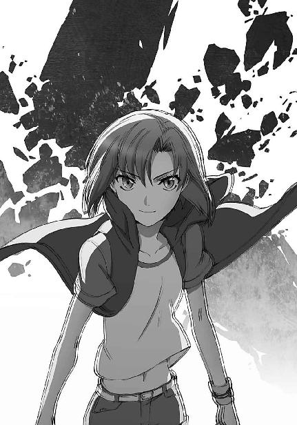
「いえ、まあ......戦法としては間違っていないと思いますが」
攻勢に転じたことで、相手の防御力も落ちている。
自陣残り六本となったところで、花音は敵陣の氷柱を全て倒し終えた。
「勝利！」
櫓から降りて来た花音が、得意げな笑顔でＶサインを作って見せた。
笑顔を向けた相手は無論、五十里だ。
しょうがないなぁ、という表情を浮かべながら、五十里もやはり笑顔だった。
「なんと申しましょうか......」
「お似合い？」
深雪が言いにくそうに濁した言葉を、雫が端的に表現する。
「理解し合っている、と言っておこうよ、二人とも」
達也は達也で、連れの二人に別の意味で苦笑を余儀なくされていた。
本音は達也も「お似合いだ」と思っていたのだが。
この二人は本当に息が合っている気がする。
選手と裏方、共に舞台上へ上がることはなくとも、二人は力を合わせて戦っていた。
しかし──と、達也は思う。
これだけ息があったコンビになってしまうと、他の選手と組んだ時、五十里は裏方としての役目を果たせるだろうか。
選手四十人に対して、エンジニア八人。
単純に平均しても、エンジニア一人で選手五人を担当しなければならない。
達也も一年生女子だけとはいえ、六名を担当している。午前中の飛び込みもカウントすれば七名だ。
一人の選手と感情的に強く結び付いて、他の選手に対しても同じようにベストを尽くせるものだろうか。
そしてこれは、達也自身にも言えること。
彼は本当に、深雪に対するのと同じように、雫やほのかに対してベストを尽くせるだろうか。
「......司波君、どうしたの？」
「いえ、何でもありません」
まさか五十里に面と向かって「他の選手にも同じように熱心になれますか？」と訊くわけにもいかない。
達也は意味も効果もない無難な決まり文句で、五十里の問い掛けを誤魔化した。
◇ ◇ ◇
三回戦進出を決め、意気揚々と天幕に引き上げて来た花音たち──同伴者である達也・深雪・雫の三人を含む──は、重苦しい雰囲気に思わず眉を顰めた。
「......何があったんですか？」
比較的いつもの雰囲気を保っていた鈴音に、五十里が訊ねる。
振り向いた鈴音の顔は、いつもより表情が乏しく見えた。
「男子クラウド・ボールの結果が思わしくなかったので、ポイントの見通しを計算し直しているんですよ」
九校戦の順位は各競技のポイントの合計で決まる。
一位が五十ポイント、二位が三十ポイント、三位が二十ポイント。
スピード・シューティング、バトル・ボード、ミラージ・バットは四位が十ポイント、クラウド・ボールとピラーズ・ブレイクは四位から六位までの順位が決まらないので三回戦敗退三チームに各五ポイントが与えられる。
モノリス・コードは一位チームに百ポイント、二位チームに六十ポイント、三位チームに四十ポイントが与えられ、ポイント上で最も比重の大きな競技になっている。
新人戦のポイントは二分の一にして総合順位点に加算。
これが九校戦のポイントシステムだ。
上位四名又は六名に残らなければ全くポイントが得られず、優勝を逃しても二位、三位、四位を占めればポイントで上回るチャンスがあるこの構造においては、できるだけ多くの競技で決勝リーグ・決勝トーナメントに勝ち残ることが勝利の第一条件となる。
「思わしくなかったといいますと......」
「一回戦敗退、二回戦敗退、三回戦敗退です」
恐る恐る訊ねた五十里に返された声は、冷淡とも聞こえるものだった。
「来年度のエントリー枠は確保しましたが、計算外でしたね」
冷たく聞こえてしまうのは、聞いている側がショックを受けているからかもしれない。
確かに他の競技に比べて、男子クラウド・ボールの布陣は力不足の感があった。
だがそれは、女子スピード・シューティングや女子クラウド・ボール、これから行われる男子ピラーズ・ブレイクや女子バトル・ボードのような「優勝間違いなし」と言える有力選手がいなかったというだけで、実力的には十分優勝を狙えるレベルにあったはずだ。
「新人戦のポイント予測が困難ですが、現時点のリードを考えれば、女子バトル・ボード、男子ピラーズ・ブレイク、ミラージ・バット、モノリス・コードで優勝すれば安全圏と思われます」
作戦スタッフの二年生が試算結果を報告した。
それを横で聞いていた達也は、少しハードルが高い計算じゃないか、と思った。
本戦、男女合わせて残り六種目のうち、四種目で優勝しようというのだ。
克人と摩利が出場する種目だから優勝は確実、と見込んでいるのかもしれないが、こういう見通しの立て方では、万が一アクシデントが生じた場合に、心理面から総崩れになるおそれもある。
だが──それは、達也が気にすることではない。
彼がその様な懸念を懐くのは、僭越というものだろう。
それよりも、個人的に気になることがあった。
男子クラウド・ボールには、桐原が出場している。
無鉄砲な面もあるが、責任感の強い性格だ。
ショックを受けているのではないだろうか......？
◇ ◇ ◇
桐原と顔を合わせたのは一日の競技が終了した後、日没間近のラウンジだった。
一見、いつもと変わらぬ様子だ。
桐原の隣には紗耶香が腰を下ろしている。
努めて明るく振舞っているが、こちらは無理に笑っているのが見ただけで解った。
「桐原先輩、お疲れ様です」
「ああ、司波か」
何も言わずに通り過ぎるという選択肢も当然あったが、達也は、そう、しなかった。
「早々と二回戦で負けちまったよ。惨敗だ」
空元気、には違いないが、思ったより立ち直りが早いようだ。
勝ち負けを繰り返すアスリートは、心理的な弾力性、負けることへの耐性も高いのだろうか。
稽古では負け続けだが、「試合」はあまり経験の無い達也には、理屈以上の理解はできない。
慰めの言葉が今この場で適切かどうかの判断がつかなかった達也は、事実のみを口にすることを選んだ。
「くじ運に恵まれませんでしたね。二回戦で優勝候補の三高エースとぶつかってセットカウント三対二、総得点差八点で惜敗。その優勝候補は先輩との試合で消耗してしまった所為で三回戦ストレート負けしていますから、事実上の痛み分けでしょう」
「......ハッキリ言うんだな、お前」
敗戦の事実をオブラートに包もうとせず、慰めているとは到底思えない冷静な分析を口にした達也に、桐原は怒らなかった。
「俺が落ち込んでるとか思わなかったのかよ？」
むしろ、面白がっているような口調と表情だった。
「思いましたが、慰め方を知らないものですから」
沈黙のまま、数秒間が過ぎる。
桐原がいきなり、噴き出した。
ソファの上で、腰を折って爆笑する。
隣の紗耶香がオロオロし始める笑いっぷりだった。
達也はその姿を無表情に見下ろしていた。
「司波......やっぱ、おもしれーよな、お前って。普通、そういう時は気まず～い顔をして、見なかったフリをして通り過ぎていくもんだ。わざわざ自分から声を掛けたりしねーよ」
それ──知らぬ振り──も選択肢に入っていたが、何となく黙って通り過ぎるのも愛想が無いような気がした、というのが達也の側の理屈だ。だがどうやら「余計なお世話」の類いだったらしい。
愛想などと、似合わぬことを考えるものではないな、と達也は思った、が、
「けどまあ、おかげでスッキリしたぜ。お前さんが『痛み分けだった』って言うんなら、実際、そうだったんだろ。俺もそんなに捨てたもんじゃないってことだな」
......案外そうでもないようだった。
桐原が本心からそう思っているのかどうかは、別にして。
達也の意図したとおりの結果だったかどうかは、別にして。
◇ ◇ ◇
思わぬ苦戦になったからといって、一番の下っ端のやることに変化があるわけではない。
雑用係ならその限りでもないだろうが、達也は一応、技術者として採用されている。余計な雑用を押し付けて本来の作業に支障を来たすリスクを作り出すような愚か者は、一高幹部にはいなかった。
明後日からの新人戦に備えて、担当する選手のコンディションをチェックし、ＣＡＤの設定に不適合が生じていないかどうかを確認して、今日の作業は終了。
ホテルのフロントで、自分宛に届いていた細長い小包を受け取って、割り当てられた部屋に戻る。
時刻はまだ夕食前だ。
今日は随分時間に余裕があるので、届いた荷物のテストをしてみることにした。
時計を見て、食堂の割り当て時間を確かめる。
深雪が迎えに来るまで、まだ少し余裕があった。
小包を解いて、中身を確認することにする。
これは彼が今朝、というか、今日の未明、ＦＬＴ（フォア・リーブス・テクノロジー）開発第三課に試作を依頼した物だった。
部品は普及しているものばかりで、形状も単純、設計図はそのまま自動加工機に読み込ませるレベルまで作り込んでいたとはいえ、半日で造形して、組立てて、到着する仕事の早さには感心してしまう。
（牛山さん、まさか無理したんじゃないだろうな......）
無理したと言うか、させたと言うか。
依頼メールに「遊び半分です」と、しつこいくらい念を押しておいたのだが。
まあ、本当の意味で時間を巻き戻すことは彼にもできないのだから、今更気にしても仕方の無いことではある。
再利用を前提とした郵送用のカバーを外すと、薄く細長い、ダイヤルロック式のハードケースが出てきた。通常はショットガン・サイズのＣＡＤを搬送する際に使用されるケースだ。
ダイヤルをいつもの番号に合わせて開錠する。
ケースの中には「剣」が入っていた。
達也が取り出した物の形状は、ナックルガード付のミドルソード。
全長七十センチ、刃渡り五十センチ程度の片手剣。──形だけは。
刃はついていない。
刃引きしてあるのではなく、最初から「剣」として作られていないのだ。
漢字の意味を考えれば定義矛盾だが、ミドルソードの形状に作られた金属製の木刀、というのがイメージ的に最も近いかもしれない。
あるいは、剣の柄がつけられた平べったい棍棒か。
無論これは、単なる棍棒ではない。
柄尻のスイッチを捻って軽く想子を流すと、達也の手に馴染みの感触が返って来た。
これはエリカの警棒と同じ、ＣＡＤが組み込まれた武器なのである。
用途は通常の特化型ＣＡＤよりも更に限定されており、一種類の起動式を提供するのみ。エリカのＣＡＤが通常の特化型ＣＡＤとしてのプログラム切替機能を保持しているのに対して、これは完全な単一機能特化型のＣＡＤ、武装一体型ＣＡＤと呼ばれるタイプの、試作機だった。
壁までの距離を目で測り、さて、テストを、と達也が考えたちょうどその時、ドアがノックされた。まるで計ったようなタイミングに苦笑を浮かべ、達也は机の上に試作機を置いた。
約束の時間には少し早いが、ドアの向こう側の、隠そうともしていない気配から、友人たちが一斉に押し掛けてきたのだと分かる。
チラッと、試作機をしまおうか、とも考えたが、別に秘密にする必要もないと思い直した。
それより、この試作機はあの友人向きだ。
自分でテストするより、アイツにテストさせた方が面白そうだ──そう考えながら、達也はドアを開いた。
「お兄様、お邪魔いたしましてもよろしいでしょうか？」
先頭にいて最初に口を開いたのは、彼の妹だ。
外開きのドアを押さえて招き入れると、深雪に続いて必要以上に近い、ほとんど触れ合わんばかりの間合いで彼の鼻先をエリカが通り過ぎて行った。
その後をほのか、雫、美月と続き、レオ、幹比古で打ち止め。
これはレディファーストと言うよりも、単純な力関係によるものだろう。
しかし、いくら機材用のスペース確保を名目としたツイン・シングルとはいえ、これだけの人数が一度に押し掛けると手狭になる。
椅子とベッドだけでは足りず、机に座っている者もいる。──それがだらしなく映らず、むしろ格好良く見せているので、達也も何も言わないが。
そしてその当人、机に座ったエリカは、机の上に放置された「剣」に当然気づき、当然のように興味を示した。
「達也くん、これ......模擬刀？ 刀じゃなくて剣だけど」
「いや」
「じゃあ、鉄鞭？」
「いいや......この国じゃ鉄鞭を好んで使う武芸者なんていないと思うが」
「武芸者って、今時......じゃあ、なあに？ ......あっ、もしかして、ホウキ（法機）？」
手に取って裏表眺めていたエリカは、グリップの上端にあるトリガーに気づいて声を上げた。
「正解。より正確には、武装一体型ＣＡＤ。武装デバイスという言い方もするな。完全に単一の魔法に特化したＣＡＤと、その魔法を利用した白兵戦用の武器を一つに纏めた物だよ」
「へぇ......」
エリカが漏らした声は、武装一体型ＣＡＤが珍しかったのではなく、この「剣」が初めて見る形をしていた故のものだ。手に持ったまましげしげと見詰めるエリカだけでなく、ほのかと雫も興味深げな視線を向けている。
深雪は昨晩の話を憶えていたのだろう。「ああ、それが」という顔をしている。
美月と幹比古はあまり興味がなさそうだ。新しい物よりも手に馴染んだ物に惹かれるタイプなのかもしれない。
達也は残る一人の横顔をチラッと見て、人の悪い笑みを浮かべ、エリカの手から試作機を取り上げた。
「レオ」
それを、そっぽを向いていたレオへと放り投げた。
「おっと！ 達也、危ねえじゃねえか」
本当は触りたくてウズウズしているのに、天敵（？）のエリカに妙な対抗心を起こして興味のない素振りを装っていたレオは、表面上、慌てたフリをしながら、待ってましたとばかりその柄を摑み取った。
達也はその見せ掛けだけの抗議をすっぱり無視して、挑発的な笑い顔をレオに向けた。
「試してみたくないか？」
「えっ、オレが？」
レオの顔が一瞬、にやけた。
隣でエリカが「分かりやすいヤツ......」とでも言いたげな顔をしていたが、達也はそれを目の端に捉えただけで、レオに視線を戻した。
「その武装デバイスは、渡辺先輩がバトル・ボードで使用した硬化魔法を応用した打撃武器だ。刀身部分を作り替えれば、斬撃武器にもなる。お前に向いていると思うが」
「達也が作ったのか？」
「ああ」
「ちょっと待って」
レオと達也の会話に、幹比古が割り込んで来た。
最初は興味のなさそうな顔をしていたが、しっかり聞いていたらしい。
「渡辺先輩の試合は昨日だよ？ それをたった一日で作ったのかい？ あり合わせの物には見えないけど」
「部品自体はあり合わせだが？ 外装もありきたりの合金で、特別な材料は使っていない」
「でも、まさか手作りじゃないだろう？ そんな暇も無かったはずだし」
「そりゃもちろんだ。設計図だけ引いて、知り合いの工房の自動加工機で作ってもらった」
内情を知っている深雪は「知り合いの工房」の部分で思わず噴き出しそうになったが、利用可能状態で何枚も常備している猫の皮のおかげで、兄を疑惑の眼差しに曝すような粗相をせずに済ませた。
「さて。レオ......試してみたくないか？」
達也の口調は、まるで、メフィストフェレスの囁きだった。
明らかに裏がありそうで、それが分かっていても抵抗しがたい魅力があった。
「......いいぜ。実験台になってやるよ」
「堕ちた」
ボソリと呟いた雫の一言が、友人たちの抱いた印象を簡潔に代弁していた。
次に達也が取り出したのは、スピーカーが一体となったミラーシェード型ＨＭＤ（ヘッドマウントディスプレイ）だった。
「マニュアルだ」
ＨＭＤを差し出されたレオは、達也のセリフの意味がよく解らなかったようで、頭上に疑問符を浮かべていた。
「その武装デバイスのマニュアルが記録されているから見ておいてくれ」
「あ？ ああ......」
どうやらこれは、手渡された（正確には、投げ渡された）武装一体型ＣＡＤのマニュアルを映像と音声で記録したものらしい。レオは「ようやく理解できた」という顔で、達也の手からＨＭＤを受け取った。
「それって、仮想型端末の一種になりませんか？」
そう感じたのは、実際に問い掛けたほのかだけではなかった。
未熟な魔法師にとって、仮想型情報端末は有害。
この常識に従い、第一高校でも仮想型端末を生徒に禁止している。
自分でも頑なにスクリーン型の端末を使用している達也が、視覚と聴覚に限定されるとはいえ仮想型の再生機器を友人に勧めていることに、彼女たちは疑問を抱いたのだ。
「そんなに大袈裟な代物じゃないが、確かに似たような物だな」
「......良いんでしょうか？」
「えっ？ ああ......仮想型端末の有害性？」
「え、ええ」
「それなら心配無用。仮想型端末の有害性は、誤った成功体験をすり込んでしまうリスクにある。実際にできることを仮体験させるには、むしろ有益なツールだ」
「仰る意味がよく解りませんが......」
ほのかは達也に対して最初から丁寧な喋り方をしていたが、これはまるで深雪の口調が伝染したような言葉遣いだった。
「魔法は、架空のイメージで現実を一時的に作り変える技術。仮想型体感機器は、架空のイメージを現実と錯覚させるテクノロジー」
達也の解説が丁寧で詳細なものになったのは、条件反射的な対応だったのかもしれない。
「両者は、現実でない事象を現実の事象として認識するに至る、という点で一致している。その一方で、仮想型体感機器による体験は、現実を改変する為の労力を必要としない。改変を失敗することもない。仮想型端末のリスクはここにある」
達也は一旦、言葉を切った。
自分でも説明臭いと思ったからだ。
しかし、目の前に並ぶ友人たちの顔の内、理解している顔が半分、理解していない顔が半分。どうやら言葉が不足しているようだ、と思い直して説明を続けることにした。
「仮想型体感機器は、何の苦労もなく現実の事象を改変できたような錯覚を魔法師に与えるおそれがある。魔法を使えない人間は、最初からそんな錯覚をしない。熟練した魔法師なら、自分にできる事とできない事をしっかり弁えている。だが未熟な魔法師は、仮想型体感機器の中のフィクションと魔法により改変された事象という現実を混同して、自分の力量を見誤ってしまう可能性があるんだ。
苦労も失敗もなく改変される仮想の現実に慣れてしまった未熟な魔法師は、何故自分が魔法に──事象の改変に失敗したのかを考えられなくなる。考える力も考える意欲も損なわれる。だから魔法を学ぶ未熟な学生には、仮想型端末が有害だって言われているんだよ」
再び言葉を切って友人たちの顔色を窺う。
もうこれ以上、説明は不必要にも見えたが、念の為の結論だけ付け加えておくことにした。
「つまり、できない事をできると錯覚させる点に問題があるんだ。できる事を仮想的に事前体験させることに問題はない。そういう仮想体験は、魔法式構築に必須のイメージ形成に、むしろプラスに働くという面もある。ただ、そういう有益なコンテンツのみを選び出すのが難しい、という実情があるんで、仮想型端末の一律禁止もそれなりに合理的だと思うけどね」
「そうなんですか......すごく、勉強になりました」
ほのかの頷き方が必要以上に熱心な気がして、達也は「少しやり過ぎたか」と思った。
あまり依存心を持たれても、自分には応えられないのだが......。
それが達也の本音だった。
◇ ◇ ◇
試作デバイスのテストは、夕食後、九校戦会場外の、屋外格闘戦用訓練場を借りて行うことになった。
達也の手配ではなく、エリカのコネである。
エリカはここに来て、自棄になったように実家の影響力を使いまくっている。
何か心境の変化を強いられるような出来事があったのだろうか？
そういえば懇親会の場で、それらしき事を聞いた記憶が達也にはあった。
もっとも、いくら心配したところで達也にできることは何も無いのだ。
それに、自分が本心から心配しているわけではないということも、達也には分かっている。
所詮自分の感情は表層的なものでしかない。
ならば開き直って、この場は技術者としての好奇心を優先させる方が余程誠実というものだ。
達也は自分にそう言い聞かせて、余計な世話を焼きそうになる自身を戒めた。
「レオ、使い方は理解したか？」
意識をこれから始めるテストに集中する。
余興で作った物とはいえ、また既存魔法の単純なアレンジとはいえ、新魔法・新デバイスのテストであることに変わりはない。
今回、気を抜いて事故に遭うのは、達也ではなくレオなのだ。
「おう、まあな......けどよ、ホントにあんな事ができるのか？」
あんな事、とはＨＭＤで見せられた試作機の予定動作のことだろう。
だろう、というか、それ以外には無い。
「それを確かめる為のテストだ」
「そりゃそうか」
この訓練場はホテルから歩いて三十分程の距離にある。
昼間ならともかく、今は夜中。
町中ならともかく、ここは山の中の軍事演習場。
深雪もエリカも頑強に抵抗したが、何とか説き伏せてホテルに残してきた。
それでも不安だったので、深雪の監視をほのかに、エリカの監視を美月に頼んである。
そして現在この場には、達也とレオの二人のみ。
「じゃあ、始めるか」
「りょーかい」
最初は試し斬り（今回は試し打ち）用の人形も無し。
何もない状態で、武装一体型ＣＡＤの武装部分の動作を確認する。
「行くぜ」
レオは、柄尻に付いているスイッチを捻った。
カチッとはまり込む軽い手応え。
グリップ上端のトリガーを人差し指で押し込み、想子を流し込む。
レオの外見から受ける印象とは違い、爆発力は無いが、粘り強い持久力に優れた想子供給。いや、タフでスタミナに溢れているという側面は、見た目通りか。
個人用に調整されていないＣＡＤは術式構築のアシスト機能がほとんど働いておらず、起動式から魔法式を構築するコンパイルのプロセスにはそれなりの時間を要した。
およそ、ゼロコンマ六秒。
それでも実習の成績より随分速い。
これは、得意魔法であるが故か、それともＣＡＤ及び起動式の性能によるものか。
どちらにせよ、その両方であるにせよ、今はどうでもいい事だ。時間を測っているのではなく、発動する魔法そのものを観測する為に、今、ここにいるのだから。
「おっ？」
レオが声を発したのは、発動した魔法に対してというより、手に伝わってきた慣性が予想以上だった為だ。
「ハハッ、ホントに浮いてら。面白れ～」
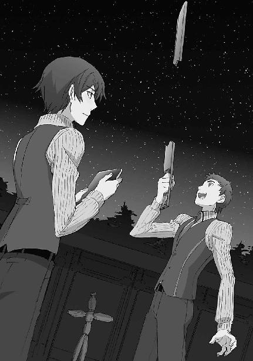
子供のような笑みを浮かべて、レオは刀身が半分以下になった「剣」を振り回す。
その動きに合わせて、空中に浮いた刀身の片割れが弧を描いて飛び回る。
「三、二、一」
「オッと」
達也のカウントを聞いて、レオは手を止めた。
「ゼロ」
時間切れのカウントと共に、空中の刀身が勢いよく手元に戻って鍔元に残った刀身の「切れ端」と嚙み合い、一本の「剣」に戻った。
「大成功だな、達也」
楽しくて仕方がないといった表情で親指を立てて見せたレオに、達也も同じポーズを返した。
「でもよ、よくこんな物を思いついたな？ 分離した刀身と残った刀身の相対位置を硬化魔法で固定することにより、刀身を『飛ばす』なんて、自分でやってても噓みたいだぜ。硬化魔法って、繫がってなくても機能するんだな」
「硬化魔法の定義内容は相対位置の固定だからな。固定観念を取っ払ってやれば、接触している必要はない。それと、このデバイスの作動形態は『飛ばす』というより、『伸ばす』の方に近いだろう。
間が中抜けになってるだけで、刀身の延長線上でしか動かんわけだし」
「その方が余計なことを考えなくて済むぜ。長～い剣を振るのと同じ感覚で良いんだからな」
レオの言うとおり、この武装デバイスは遠隔操作系統の武器に付き物の、コントロールに精神力を磨り減らすという側面は無い。術式の効力が切れるまで、単純に手を動かしたとおりに、同じ距離を保って飛び回るだけだからだ。
「ところで今はどうやって繫がってるんだ？ 術式は働かせていないぜ？」
「ああ、それは簡単。電流反応型の形状記憶合金に着脱の瞬間だけ電流を流して、嚙み合わせを外しているんだ」
なるほど、とレオは頷いた。現代では割とポピュラーな留め金の仕組みだ。
「だから魔法を解いている状態で強い衝撃を与えると、ポキッと逝ってしまう可能性が高いんだけどね」
「問題ないだろ。使わん時は鞘に収めてればいいだけじゃねーか」
「まあな。じゃあ次は、実際に人形を叩いてみるか？ それとも、分離間隔の変更をテストしてみるか？」
「なあ達也、これって飛ばしてる最中に間合いを変えることはできねえのか？」
「不可能ではないが、難しいぞ？ 今は柄尻のスイッチで分離間隔に関する起動式の定数を調整するようにしているが、魔法式の変数にすることももちろんできる。だが、途中で分離間隔を変えるとなると、発動中の魔法の上書きになるからな」
「そっか。まっ、戻って来るまでの時間を短くしときゃ、途中で間合いを変える必要もないか。実剣でも、斬り込んでいる途中で間合いを変えるなんてできないしな」
「エリカあたりならできそうだけどな。で、どうする？」
「そうさな......ダミーを頼む」
「了解」
達也がノート大のリモコンを操作すると、地面から実物大の藁人形が三体突き出てきた。
「......古い」
「......誰の趣味だよ」
再生可能なバイオ素材が主流の時代とはいえ、まさかのアナクロに二人は顔を見合わせて脱力する。
「まあ......試し斬りの相手として、機能的には十分なわけだが」
「藁人形に『機能』もねえだろ......けど確かに、文句を付けることでもねえよな」
レオは空いている左手で自分の頰を張って気合いを入れ直すと、藁人形に向かって構えを取った。
スイッチを入れる。
宙に飛び出すブレードの片割れ。
気合いを入れて腕を振るレオ。
その手の先で、運動半径に応じた速度を与えられて飛翔したブレードが、標的の藁人形を叩き潰す。
「結構、腕に来るな」
特に痺れたような仕草は見せなかったが、元のミドルソード（の模擬剣）に戻った武装デバイスを軽く振りながらレオが感想を漏らした。
「飛翔部分の質量が小さいからな。速度である程度補えるとはいえ、慣性が小さい分、腕力が必要だ」
「なる程。実戦に使う為には、もうチョッと重量が有った方が良いってことか」
達也の説明に納得顔で頷いたレオは、別の的に向かった。
再び構えを取るレオを見ながら、達也は思う。
（確かにな。刃をつけるにしても、もう少し重量が有る方が実戦的か。試合で使うにはこの程度の威力でちょうど良いのかもしれないが）
達也が思い浮かべたのは直接打撃を禁じたモノリス・コードのルール。この武装デバイスなら、ブレードが宙に浮いているからルール違反にはならない。
（......今回は関係ないか）
玩具と言いながら有用な使い道を考えてしまう自分に、達也はこっそり苦笑いを浮かべた。
［７］
九校戦三日目。
男女ピラーズ・ブレイクと男女バトル・ボードの各決勝が行われるこの三日目は、九校戦の前半のヤマと言われている。
第一高校の勝ち残り状況は、男子ピラーズ・ブレイクと男女バトル・ボードが各二人、女子ピラーズ・ブレイクが一人。
予定どおりとは行かないが、作戦上誤差の範囲には収まっていた。
「服部先輩が男子第一レース、渡辺先輩が女子第二レース、千代田先輩が女子第一試合で十文字会頭が男子第三試合か」
組合せ表を見て、達也は少し悩んだ。
競技によって開始時間も試合時間も多少ずれるとはいえ、服部と花音の試合を両方とも観に行くのは不可能だ。
（服部先輩は俺に観に来て欲しくなどないだろうしな......）
とは言え、同じ生徒会役員同士、深雪が服部のレースを知らん顔するのも問題だ。
「あっ、いたいた。達也くん！」
しかし、それほど長く悩む必要もなかった、というか、その必要が無くなった。
「会長、何かご用ですか？」
「チョッと手伝って欲しいのよ」
真由美に引きずられる格好で、達也は作業車へ連れて行かれた。
◇ ◇ ◇
「お兄様、もうすぐスタートですよ！」
結局、達也が解放されたのは、摩利のレースが始まる直前だった。
作業中わざわざ「あたしのレースは観に来るんだろうね？」と念押しまでされて見逃したなどということになれば、それが一部分だけであろうとも、後で何を言われるか分からない。
席を取ってくれた妹と友人たちに一通り礼を言って、達也はスタートラインへ目を向けた。
本当にギリギリのタイミングだったようだ。
バンダナで纏めたショートボブの髪を揺らし、摩利は既に、スタート姿勢を取っていた。
準決勝は一レース三人の二レース。
それぞれの勝者が一対一で決勝レースを戦うことになる。
他の二人が緊張に顔を強張らせている中、摩利だけが不敵な表情でスタートの合図を待っている。
用意、を意味する一回目のブザーが鳴る。
観客席が静まり返った。
一拍の、間。二回目のブザー。
スタートが、告げられた。
先頭に躍り出たのは摩利。
だが予選とは違い、背後に二番手がピッタリついている。
少し遅れて、三番手。
「やはり手強い......！」
「さすがは『海の七高』」
「去年の決勝カードですよね、これ」
激しく波立つ水面は、二人が魔法を撃ち合っている証だ。
普通ならば先を行く摩利の方が引き波の相乗効果で有利だが、七高選手は巧みなボードさばきで魔法の不利を補っている。
スタンド前の長い蛇行ゾーンを過ぎ、ほとんど差がつかぬまま、鋭角コーナーに差し掛かる。
ここを過ぎれば、スタンドからはブラインド。スクリーンによる観戦になる。
達也はチラリと大型ディスプレイに映ったコーナー出口の映像に目を向けた。
「むっ？」
其処に見つけた小さな異常に、目を奪われる。
「あっ!?」
だから不覚にも、その瞬間を見逃してしまった。
観客席から聞こえた悲鳴。
急いで戻した視線の先では、
七高選手が大きく体勢を崩していた。
「オーバースピード!?」
誰かが叫んでいた。
確かに、そう見えた。
ボードは水をつかんでいない。
飛ぶように水面を滑る七高選手は、そのままフェンスに突っ込むしかない。
──前に、誰もいなければ。
彼女が突っ込むその先には、減速を終えて次の加速を始めたばかりの摩利がいた。
摩利はフェンスに身体を向けている。
それでも、背後から迫る気配に気づいたのか、肩越しに振り返った。
そこからの反応は、見事の一言に尽きた。
前方への加速をキャンセルし、水平方向の回転加速に切替。水路壁から反射してくる波も利用して、魔法と体さばきの複合でボードを半転させる。
暴走している七高選手を受け止めるべく、新たに二つの魔法をマルチキャスト。
突っ込んでくるボードを弾き飛ばす為の移動魔法と、相手を受け止めた衝撃で自分がフェンスへ飛ばされないようにする為の加重系・慣性中和魔法。
本来なら、そのまま事故を回避できただろう。
不意に水面が、沈み込んだりしなければ。
小さな変化だった。
だが、ただでさえ百八十度ターンという高等技術を駆使した後だ。
摩利はサーフィン上級者というわけではなく、ただその優れた魔法・体術複合能力により無理に行った体勢変更は、突如浮力が失われたことにより、大きく崩れた。
その所為で、魔法の発動にズレが生じる。
彼女の足下を刈り取ろうとしていたボードを、側方へ弾き飛ばすことには成功した。
だが、慣性中和魔法が発動するより早く、足場を失った七高選手が摩利に衝突した。
そのまま、もつれ合うようにフェンスへ飛ばされる二人。
大きな悲鳴がいくつも上がった。
レース中断の旗が振られる。
達也も我知らず立ち上がっていた。
摩利は七高選手とフェンスに挟まれる格好で衝突している。
受身が取れたようには見えない。
「お兄様！」
深雪が蒼褪めた顔で彼を見上げている。
「行って来る。お前たちは待て」
幼い頃からボディガードとして、あるいは兵士としての訓練を積んで来た達也には、簡単な外科手術ならこなせる程度のスキルがある。
「分かりました」
達也の落ち着いた声で、自分たちが行っても混乱を増幅するだけだと理解した深雪は、腰を浮かせている友人たちに手振りで座るよう指示しながら、達也に頷いて見せた。
達也は人の密集するスタンドを、手品のようにすり抜けながら駆け下りて行った。
◇ ◇ ◇
覚醒は速やかなものとは言えなかった。
意識に靄がかかったように、現状が上手く把握できない。
自分はここで何をしているのか......？
目が覚めて、摩利の意識に最初に浮かんだ思惟が、この疑問だった。
「摩利、気がついた？ 私が誰だか分かる？」
悪友が──と、こんな時、しかも心の中だけのセリフであるにも拘わらず、摩利は友人という言葉を使わなかった──自分の顔を上からのぞき込んでいる。
質問の意味は分かっても、何故そんなことを訊ねて来るのか理解できなかった摩利は、訝しげに問い返し──
「真由美、何を言っている？ そんなことは訊くまでも......っ」
──自分のセリフの途中で、その理由と、現在の状況に自分で思い至った。
「ここは病院か......」
「ええ、裾野基地の病院よ。良かった......意識に異常は無いようね」
「あたしはどのくらい気を失っていたんだ？」
後頭部から伝わってくる鈍痛が、自分は眠っていたのではなく受身を取り損ねて気絶したのだと、摩利に教えていた。
「お昼を回ったところよ。あっ、まだ起きちゃダメ」
ベッドの上に身体を起こそうとした摩利を、真由美は素早く先回りしてベッドに押し戻す。
それほど強い力ではなかったが、摩利の方で、いつもの半分も身体の自由が利かなかった。
「肋骨が折れていたのよ。今は魔法でつないでいるけど、まだ定着していないわ。当然知っていると思うけど、魔法による治療は結局のところ応急処置で」
「定着するまでは仮に治っているだけだ。決して、瞬時に健康状態を取り戻すものじゃない。──大丈夫だ。そのくらい、弁えている」
真由美のセリフを横取りする形で、自分に言い聞かせるように口に出すと、摩利は力を抜いてベッドに身体を預けた。
「それで、定着までどのくらい掛かる？」
「全治一週間。一日寝てれば日常動作に支障はなくなるけど、念の為に、十日間は激しい運動を禁止」
「おい、それじゃあ!?」
「ミラージ・バットも棄権ね。仕方ないわ」
「そうか......」
摩利は、ため息をついて、目を閉じた。
再び瞼を開くまで、少し時間が掛かった。
「......レースはどうなったんだ？」
「七高は危険走行で失格。決勝は三高と九高よ。三位決定戦はウチと二高。小早川さん、随分気合いが入ってるから三位は取れるんじゃないかな」
「精神的なムラが無ければ、実力は十分だからな、小早川は」
「そうね。それから、七高の選手の怪我は大したこと無いそうよ。かばった甲斐があったわね」
「......自分が大怪我をしてれば世話は無い」
憮然とぼやいて見せた摩利の偽悪的な態度に、真由美はクスッと失笑気味に笑った。
摩利は顔を背けて、それを見なかったフリをした。
「男子は、はんぞーくんが決勝進出。村上くんも惜しかったんだけどね。男子ピラーズ・ブレイクは十文字くんが決勝リーグ進出。女子ピラーズ・ブレイクも花音ちゃんが決勝リーグ進出」
「あたしだけが計算違いか......」
「仕方が無いわ。摩利、貴女の判断は間違っていなかったの。あそこで貴女が加速を止めなければ、間一髪で衝突は回避できたでしょう。決勝にも進めたと思う。でも......七高の選手は大怪我をして、多分、魔法師生命を絶たれていたと思うわ。それほど危険な突っ込み方だった。これは達也くんも同意見ね」
「......おい、そこで何故、アイツの名前が出て来るんだ？」
「貴女をここに運んで来て、治療に付き添っていたのは彼だから」
「なに？」
「もちろん、達也くん一人に任せたわけじゃないけど。......ビックリした？」
にんまりと笑った真由美から、苦虫を嚙み潰した表情で摩利は顔を背けた。
自分がホッとしていることを自覚できるだけに、真由美の笑顔が忌々しかった。
「女の子の着替えを男の子に見せるはず無いじゃない。治療中はちゃんと廊下で待っていたそうよ。でも、後でお礼は言っておいた方がいいわね。救護班と同じくらい真っ先に駆けつけて、水路から引き上げるのを手伝ってくれたし、骨折してるって一目で見抜いて応急措置を指示したのも達也くんだから」
「......何者だアイツは」
呆れ顔で目を丸くした摩利に、真由美も深々と頷いた。
「なんと言うか、事故とか怪我人とかにやたらと手馴れていた気がするのよねぇ......。ところで、気分はどうかしら？」
「どうしたんだ、いきなり......。少し頭が痛むが、外傷的なものだろう。意識はしっかりしている」
「脳にも損傷は見られないそうよ。......そっか、じゃあ今、訊いちゃおうかな」
「？」
首を傾げる摩利の目を、真由美は真剣な眼差しでのぞき込んだ。
「どうしたんだ、急に」
「摩利......あの時、第三者から魔法による妨害を受けなかった？」
「......どういうことだ？」
「七高選手を受け止める直前に摩利が体勢を崩したのは、第三者による不正な魔法で水面に干渉された所為じゃないのか？ ということよ」
真由美の言っていることの意味を理解して、摩利の目が鋭く光った。
「......確かに、ボードが沈み込む直前、足元から不自然な揺らぎを感じた。だがそれが魔法によるものかどうか、ましてや不正な干渉によるものかどうかは、あたしには分からなかった。......何故、そう思うんだ？」
「あの時、貴女が足元を取られた水面の動きは不自然だったわ。魔法による事象改変に特有の不連続性があった。でもあの時、七高の選手も九高の選手も、そんな魔法は使っていなかった。残る可能性は、第三者による魔法。これも達也くんと同意見よ。彼、大会委員会からビデオを借りて、水面の波動解析をしてみるそうよ。それで少なくとも、自然現象以外の力が働いたかどうか分かるんですって」
「まず、そんなことが高校一年生のスキルでできるのか、と言いたいところだが、それは横に置いておくとして......あたしも他の選手も魔法を使っていたんだから、自然現象以外の力が働いていたのは調べるまでもないんじゃないか？ 意味があるとは思えないが......」
「選手が使った魔法の影響も計算に入れて、それ以外の力が働いていなかったかどうか検証してみるって言ってたわ。五十里くんも今日の試合が終わってから手伝うって言ってた。多分、意味のある結果が出てくるんじゃないかしら。摩利も何か思い出したことがあったら教えて頂戴ね。これはウチの──第一高校の順位だけに関わる問題じゃなくて、九校戦全体、魔法科高校全体に関わる問題なのかもしれないから」
「............」
横になったまま黙り込んでしまった摩利に「そろそろ戻らないといけないから」と声を掛けて、真由美は病室を出て行った。
一人残された摩利は、なおも真剣な眼差しで、天井を見詰めていた。
◇ ◇ ◇
ノックに応じて深雪がドアを開けると、そこには上級生の男女がいた。
「どうぞお入りください。......お兄様、五十里先輩と千代田先輩がお見えになられました」
深雪の声に、達也はキーボードを叩いていた手を止めて立ち上がった。
「わざわざすみません」
「いいよ、気にしないで。手伝うって言ったのは僕の方だし、作業中の端末を持って来させるわけにも行かないしね」
軽く頭を下げた達也に、五十里は気安げに手を振った。
達也はもう一度会釈して、今度は花音に目を向けた。
「千代田先輩、優勝おめでとうございます」
「ありがと。摩利さんがあんなことに巻き込まれちゃったからね、その分、あたしたちが頑張らないと！」
グッと拳を握ってみせる花音は、熱血という言葉がよく似合っていて、達也には少し眩しかった。
「それで、何か分かったの？」
「一通り、検証してみました。やはり、第三者の介入があったと見るべきですね。五十里先輩、確認していただけますか」
「了解。......さすがに司波君は仕事が速いね」
勧められた椅子に腰を下ろしながら、五十里はジェスチャー混じりで感心を表現した。
卓上用の小型ディスプレイ（と言っても伝統的な単位系で二十インチに相当する）の画面は二分割されていて、ビデオの映像とそれをワイヤーフレーム化したシミュレーション映像が表示されている。
五十里は脳波アシスト付モノクル型視線ポインタの、後方部分が欠けた細い金属環を押し広げて慣れた手つきで額に装着し、モノクル部分を右目に合わせて、キーボード中央下段のクリックボタンに親指を置いた。
脳波アシストも視線ポインタも、元々はキーボードから手を離さなくてもいいようにと作られた入力補助装置だが、今ではキーボードを使わずに済ませる道具になっている。
しかし五十里はどうやら、キーボード入力の補助という本来の使い方をするようだった。
五十里の操作によって、実写映像とシミュレーション映像が同時に動き出す。
事故の場面に差し掛かったところでタイムゲージにポインタが合わせられ、再生がスローダウンした。
シミュレーション画面の上部に、水面の変化に影響を与える諸要素が数字で表示される。
そして問題の、水面が陥没した瞬間、項目名にunknownが表示され、誤差では解決できない「力」が水中から掛かっていることが示された。
画面を止め、五十里が振り返った。
「......予想以上に難しいね、これは」
「啓、どういうことなの？」
「花音も知っているとおり、九校戦では外部からの魔法干渉による不正を防止する為、対抗魔法に優れた魔法師を大会委員として各競技場に配置すると共に、監視装置を大量に設置している。この監視網に引っ掛からなかったのだから、監視装置の走査範囲を超えた高空に局所的なダウンバーストを作り出して、高圧の空気塊を叩きつけることで水面を陥没させたんじゃないか、って僕は予想していたんだよ。そんなことをされて渡辺先輩が気づかないはずはないから、かなり無理がある仮説だとは分かっていたけどね。
でも司波君の解析によれば、水面を陥没させた力は水中に生じている。外部から水路に魔法式を投射すれば間違いなく監視装置に引っ掛かるし、自然現象で水面下から水面を陥没させる現象なんて、水底が抜けるくらいしか考えられないから、それもあり得ない。可能性としては、水中に工作員が潜んでいた、ってことくらいだけど......それこそあり得ないしね......」
「司波君の解析が間違っているんじゃないの？」
遠慮のない花音の指摘に深雪が顔色を変えた。
「それはない」
だが、深雪が何か言うより先に、五十里が花音の疑念を否定した。
「司波君の解析は完璧だ。少なくとも僕のスキルでは、これ以上のことはできないし間違いも見つけられない」
五十里と花音が揃って考え込んでしまった。
無言のまま秒針が二回転ほどしたところで、再び、ドアがノックされた。
目線で兄に問い掛けた深雪は、頷きが返されたのを確認して、来訪者の応対へ向かう。
彼女はすぐに戻ってきた。
その背後には、二人のクラスメイトがついて来ていた。
「美月は、お兄様に呼ばれた、と言っていますが......」
「すまんな、二人ともわざわざ」
間接的に妹の問い掛けを肯定して、達也は二人の先輩の方へ向き直った。
「ご紹介します。俺のクラスメイトの、吉田と柴田です。二人とも、知っているとは思うが、二年の五十里先輩と千代田先輩だ」
幹比古と美月が緊張気味に、五十里と花音がざっくばらんに自己紹介を終えたところで、五人から向けられた「？」の眼差しに達也は簡潔な答えを返した。
「二人には、水中工作員の謎を解く為に来てもらいました」
無論、それだけでは誰も理解できるはずがない。
そのことは達也にも最初から分かっていたので、途切れることなく説明を続けた。
「俺たちは今、渡辺先輩が第三者の不正な魔法により妨害を受けた可能性について検証している」
これは幹比古と美月に向けた説明。
幹比古は眉を顰め、美月は驚きを露わにした。
「渡辺先輩が体勢を崩す直前、水面が不自然に陥没した。その所為で渡辺先輩の慣性中和魔法のタイミングがずれ、フェンスに激突することになってしまった。この水面陥没は、ほぼ確実に、水中からの魔法干渉によるものだ」
美月はまだ驚きから脱し切れていない。
だが幹比古は達也の言葉を聞いて、目に強い光を宿していた。
「コース外から気づかれることなく、水路内に魔法を仕掛けることは不可能だ。遅延発動魔法の可能性も低い。もしそうなら、小早川先輩が第一レースで気づいたはずだ」
現代魔法にも遅延発動の技術はあるが、その為には対象物に魔法式を「記録」しなければならない。遅延発動魔法を掛けた時点で対象物は魔法による改変を受け、その改変が次の魔法を遅延発動させるという仕組みになっている。
「だとすれば、魔法は水中に潜んでいた何かによって仕掛けられたと考えるべきだ、というのが五十里先輩と俺の意見だ」
確認の視線を向けると、幹比古と美月が理解の印に頷いた。
「しかし、生身の魔法師が水路の中に潜んでいたと考えるのは荒唐無稽です。現在知られている限り、そこまで完璧に姿を隠す術は現代魔法にも古式魔法にもありません」
達也の言葉に、今度は五十里と花音が頷く。
「ならば、魔法を行使する人間以外の何かが水路内に潜んでいたと考えるのが合理的でしょう」
五十里と花音は顔を見合わせ、お互いの表情に戸惑いの色を見つけた。
問い返すには、しばしの時間が必要だった。
「......司波君は、精霊魔法の可能性を考えているのかい？」
五十里の言葉に達也は頷いた。
現代魔法を行使する魔法師は、通常、想子の波動によって魔法を知覚している。
しかしＳＢ──Spiritual Being（心霊存在）の本体は霊子で構成されるものであり、同時に観測される想子は、その「運動」を方向付けする外的付加物──例えば精霊を使役する為のコマンド──というのが、現時点で最も有力な仮説だ。
魔法師に霊子を知覚できないということではない。
だが、想子のようにその状態を見分けることは、普通できない。
例えて言うならば、赤外線を「暖かい」という漠然とした認識で知覚することはできても、赤外線の波長の違いを可視光線の波長の違いのように色彩として捉えることはできないようなものだ。
活性化した霊子ならば、そこにあるということを魔法師は知覚することができる。
しかし、活性が低い状態の霊子を知覚することは難しい。
つまり、現代魔法の魔法師にとって、潜伏状態のＳＢを見つけ出すことは困難なのだ。
心霊存在使役魔法──精霊魔法による遅延発動型の術式が仕掛けられていたとしたら、確かに、大会委員の監視を潜り抜けた可能性は高い。
「吉田は精霊魔法を得意とする魔法師です。また、柴田は霊子光に対して特に鋭敏な感受性を有しています」
「だから二人に来てもらったんだね」
もう一度、五十里に頷いて、達也は幹比古の方へ向き直った。
「幹比古、専門家としての意見を聞きたい。数時間単位で特定の条件に従って水面を陥没させる遅延発動魔法は、精霊魔法により可能か？」
「可能だよ」
幹比古の答えは、即答だった。
「今の条件ならば、第二レースの開始時間を第一の発動条件、水面上を人間が接近することを第二の発動条件として、水の精霊に波あるいは渦を起こすよう命じることで達成できる。精霊じゃなくて、式神でも可能だろう」
「お前にも可能か？」
「準備期間による。今すぐやれと言われても無理だけど、半月くらい準備期間をもらって、会場に何度か忍び込む手筈を整えてもらえれば、多分可能だ」
「前日に会場へ忍び込む必要は？」
「無い。地脈と地形が分かっていれば、地脈を通して精霊を送り込むことができる。事前調査はその為のものだ。......ただし」
「？」
「そんな術の掛け方では、ほとんど意味のある威力は出せないよ？ 精霊は術者の思念の強さに応じて力を貸してくれるものだ。そんなに何時間も前から仕掛けたのでは、せいぜい侵入者を驚かせる程度の猫騙しレベルにしかならないと思う」
「と言うと？」
「水面を荒らすことはできても、それだけで渡辺先輩がバランスを崩すほどの大波は作れないはずだ。七高の選手が突っ込んでくるという事故が重ならなければ、子供の悪戯にしかならないんじゃないかな」
幹比古の言葉に、どういうわけか、達也は深く頷いた。
「あれも単なる事故であれば、な」
「えっ？」
意味深なセリフに幹比古は当然の疑問を示したが、それに対してすぐには答えず、達也は美月へ目を転じた。
「美月、渡辺先輩の事故のとき、ＳＢの活動は見なかったか？」
「......メガネを掛けていたから......ごめんなさい」
「いや、そうだな。これは俺がうっかりしていた。美月が謝る必要は無い」
項垂れた美月に達也が頭を下げ、深雪が美月を慰めに掛かった。
「さっきの話だが」
達也が目を向けた先は幹比古。
だがその言葉は二人の二年生にも向けられていると、五十里にも花音にも分かっていた。
「七高選手の暴走も、単なる事故ではないと俺は思っている。これを見てくれ」
幹比古をディスプレイの前に連れて行って、シミュレーション映像を最初から再生する。
横からのぞき込んでいる五十里と花音を意識しつつ、達也は衝突の少し前で再生を止めた。
「本来ならばここで、七高の選手は減速に入らなければならない」
コマ送りで再生を再開する。
「だが見てのとおり、実際にはここで更に加速している」
「......そのとおりだね。確かに、不自然だ」
「そうね。こんな単純ミスをする魔法師が、九校戦の選手に選ばれるわけ無いか」
五十里、花音のコメントに首肯して、達也は再生速度を通常に戻した。
「おそらく七高の選手は、ＣＡＤに細工をされていたのだと思う」
ギョッとした気配が部屋に満ちた。
「コースで減速が必要になるのは、このコーナーが最初だ。減速の起動式を加速の起動式とすり替えられた場合、間違いなくこのコーナーで事故を起こす。そして去年の決勝カードのラップタイムを見れば、渡辺先輩と七高の選手がほとんどもつれ合う状態でこのコーナーを回るであろうことは簡単に予想できる。もし俺に妨害の意思があれば、優勝候補二人を一度につぶすチャンスだと考えただろう」
「確かに理屈は通っているけど......ＣＡＤに細工なんてできるのかい？ もし細工したとしたら、いったい何時？」
「七高の技術スタッフに裏切者が紛れ込んでいるとか？」
五十里と花音の質問に、達也は小さく頭を振った。
「残念ながら確証はありません。七高にＣＡＤを見せろと言っても、一蹴されることは分かり切っています。ただ、細工する機会はあると思います」
「やっぱり裏切りかな？」
花音の推理に、達也はもう一度、今度はゆっくり頭を振った。
「その可能性も否定し切れませんが......俺は、大会委員に工作員がいる可能性の方が高いと思います」
会話が途切れた。
五十里も花音も幹比古も、今度こそ絶句していた。
一様に「信じられない」という顔をしていた。
「......しかしお兄様、大会委員に工作員がいるとして、いったい何時、どのようにしてＣＡＤに細工したのでしょうか？ 競技用のＣＡＤは各校が厳重に保管しているはずですが」
しかし深雪に、達也の言葉を疑うという選択肢は無い。彼女は兄の推測を確定した事実として、推理の更なる開陳を求めた。
それに対する達也の答えは、直接的なものではなく、周知の事実を告げたものだった。
「ＣＡＤは必ず一度、各校の手を離れ大会委員に引き渡される」
「あっ......！」
失念していた可能性に、深雪が声を上げた。彼女だけが声を上げることができた。五十里も花音も幹比古も美月も、ただ絶句したままだった。
「だが、手口が分からない。そこが厄介だが......」
万に一つであっても、警戒を怠ることはできない。
これから試合を控えている深雪、そしてそのＣＡＤを調整する達也は、そのことを深く心に刻んだ。
◇ ◇ ◇
第一高校、三日目の成績は男女ピラーズ・ブレイクで優勝、男子バトル・ボード二位、女子バトル・ボード三位。
第三高校が男女ピラーズ・ブレイクで二位、男女バトル・ボードで優勝という好成績を収めた為、両校のポイントは前日よりむしろ接近していた。
大会が始まる前、摩利は達也に、新人戦のポイントは総合順位に大きく影響しないだろうと言っていたが、どうやら彼女の予想は外れたようだ。
明日からの新人戦に備え、担当選手が使用するＣＡＤの入念なチェックを行っていた達也は、端末で真由美から呼び出しを受けた。
作業を中断し、「こんな遅い時間にどうしたのだろう？」と頭を捻りながら、一高に割り当てられたミーティングルームへ足を運ぶと、扉の前でバッタリ、深雪と顔を合わせた。
「深雪も会長に呼ばれたのか？」
「ええ、お兄様もですか？」
達也は、五十里たちと検証した妨害工作の可能性と技術的な防衛策について、協議する為に呼ばれたと考えていた。しかしそれでは、深雪も一緒に呼ばれた理由が分からない。
「行くか」
「はい」
世の中には、考えなければ分からない事と、考えても分からない事がある。
そして考えても分からない事ならば、行動してみるしかない。
古人も言っている。
下手な考え休むに似たり、と。
「失礼します」
それほど密度の濃い事──と言うか、理屈っぽい事を思考に乗せたわけでもなかったが、少なくとも無駄に思い悩んだりせずに、達也はドアを開けた。
そこには真由美と鈴音と克人と──まだベッドで寝ているはずの摩利の姿があった。
「ご苦労様。明日の準備は終わった？」
「いえ、もう少し掛かります」
「そう......ごめんなさいね、達也くんまで呼び出したりして」
すまなさそうに言う真由美のセリフで、どうやら呼び出しのメインは深雪であるらしいことが分かった。
「掛けてくれる？」
勧められるままに、並んで腰を下ろす兄妹。
「少し相談したいことがあって......いいえ、少しじゃないわね。
二人には、大事な相談があって、来てもらいました」
真由美に改まった口調で話し掛けられるのは、何だか久し振りな気がして、達也は少し新鮮に感じた。
「リンちゃん、説明してもらえますか？」
改まった口調でも「リンちゃん」なんだな、と、何となく考えながら、達也は鈴音に目を向けた。
「今日の成績は二人も知っていると思います」
当たり前のことだから、返事を期待されているとは思わなかったが、達也は深雪と同時に頷いた。
「アクシデントもありましたが、当校の今日のポイントはプラスマイナスでほぼ計算どおりです。しかし、三高が予想以上にポイントを伸ばしている為、当初の見込みより差が詰まっています」
ここで再び、理解した印に頷く。
「とは言うもののまだ十分なリードを保っていますので、新人戦で優勝できないまでも大差をつけられなければ、最後のモノリス・コードに勝利することで総合優勝を果たせます。ですが万一、新人戦で三高に大差をつけられるようなことがあれば、本戦ミラージ・バットの成績次第では逆転を許してしまう可能性もあります」
仮定ばかりの話だが、要するに新人戦で頑張れ、と言いたいのだろうか？
そんな用事で呼び出す必要は無いはずだが......と、ポーカーフェイスの裏側で達也は首を捻った。
「本戦のポイントは新人戦の二倍。私たち作戦スタッフは、新人戦をある程度犠牲にしても、本戦のミラージ・バットに戦力を注ぎ込むべきだという結論に達しました」
微かに達也の眉が動いた。鈴音の「新人戦を犠牲にしても」という言葉から導き出された推測が、彼のポーカーフェイスを崩していた。
「ええ、そうよ、達也くん」
達也のわずかな表情の変化を鋭く読み取って、真由美が質問を先取りする。
「深雪さん。貴女には、摩利の代役として本戦のミラージ・バットに出場してもらいます。達也くんは引き続き深雪さんの担当エンジニアとして九日目も会場入りしてもらうことになります」
本人の発言に反して、真由美のセリフは相談ではなかった。
決定事項の通達だった。
「しかし、先輩方の中にも一種目にしかエントリーされていない方々がいらっしゃいます。何故わたしが新人戦をキャンセルしてまで代役に選ばれるのでしょうか？」
深雪の声は落ち着いていた。突然の抜擢に舞い上がることも無く、常識的な気遣いと冷静な計算に基づく質問を投げ掛ける。
彼女の反問に、摩利が「ほう？」という表情を見せ、克人が微妙な意外感を表した。
「その方が合計ポイントで高得点を見込めるからです」
答えは、更に冷静な鈴音の声に乗って返って来た。
「ミラージ・バットには補欠を用意していなかった。それが最大の理由だな」
説得の言葉を重ねたのは、本来の選手だった、摩利。
「空中を飛び回るミラージ・バットにぶっつけ本番で出場しろというのは、いくら本校の代表選手でも酷な話だ。それより、一年生であっても、事前に練習を積んでいる選手の方が見込みがある。それに──」
言葉を切ったのは、意図的な「間」だろう。
摩利は意外と芝居気のある少女だ。
「達也くん。君の妹なら、本戦であっても優勝できるだろう？」
しかも、搦め手で攻めて来た。
いささかあざとい論法のような気もするが、達也に謙遜する理由は無い。
「可能です」
「お兄様......」
当然のように、と言うより決定事項のようにあっさりと言い切った達也に、摩利はニヤリと笑い、克人は一つ頷き、真由美は目を丸くし、鈴音は眉を動かし、そして深雪は、恥じらいを浮かべて俯いた。
「そのように評価して下さってのことなら、俺もエンジニアとして全力を尽くしましょう。深雪、やれるな？」
「ハ、ハイ！」
ただでさえ美しい背筋を更にピンと伸ばし、深雪は上ずった声で達也に答えた。
それは、代役を引き受ける返事でもあった。
つづく
あとがき
まずは今、この本を手に取って下さっている貴方／貴女に深い感謝を。
三ヶ月ぶりのご無沙汰でございます。......「今日初めて見た」という方も当然いらっしゃるとは思いますが、そこは常套句（みたいなもの）ということでご容赦の程を。
魔法科高校の劣等生、こうして無事に第三巻を店頭に並べて頂きました。エピソード数では第二話（上）となります。またしても微妙なところで終わってしまってすみません。一応、第四巻冒頭から一年生（つまり、主人公たち）の本格的な活躍という区切りはあるのですが。
次巻は第二話（下）です。第二話（中）とはなりませんのでご安心下さい。......その代わり、かなり厚めの本になってしまいましたが。電撃文庫がいくら厚い本を許容してくれるとはいっても、毎回これではまずいでしょうから、次々巻からは自重します──と言い切れないのが辛いところです。
あとがきは最後に読むよ、という方はお分かりのとおり、今回のエピソードは高校同士の対抗戦が主な舞台です。
勝敗を争うのは架空の魔法競技。競い合うのは魔法の技量。
ただし選手の技量だけでなく、選手をバックアップするスタッフの技術力も勝敗を大きく左右します。この点は球技やトラック競技よりモータースポーツに近いかもしれませんね。モトＧＰやＦ１のように華やかな雰囲気はありませんが。
......今更ですがもったいなかったかもしれませんね。次の九校戦はレースっぽい舞台装置を取り入れてみましょうか。スポンサーグッズとか、○○クイーンとか。そうしたら編集様が取材の名目で観戦ツアーを組んで下さるかもしれませんし。（ナイナイ）
冗談はさておきまして。お気づきの方もいらっしゃると思いますが、今回のエピソードは某世界的人気シリーズの第四作にインスパイアされたものです。もっとも、某世界的人気シリーズは個人戦、こちらはチーム戦という違いがありますし、そもそも魔法の形態がまるきり異なりますので試合の風景は似ても似つかないものになっていますが。
似たような、といえば某世界的......の第四作よりむしろ、同シリーズ共通のク○デ○○チの方に通じることかもしれませんが、「架空の競技をどういうものにするのか」には悩みました。──いえ、もしかしたら現実にまで進出したク○デ○○チを作り上げるのに、某（以下略）の作者様はそれほど悩まなかったかもしれませんが、私はかなり悩みました。それにしてはあまりパッとしないのが私の限界でしょうか。各競技ともそれほど難しいルールはありませんので（無い......はずです）、魔法科高校生たちの活躍をお気軽に「観戦」して頂ければと思います。次巻「九校戦編（下）」では主人公たちが魔法競技で大暴れします。そして競技場内にとどまらず、競技場の外でも主人公がダークヒーローの力を存分に発揮します。おそらくは賛否両論を呼ぶ「規格外品」の活躍に、次回もお付き合い頂ければ幸いです。
それでは今回も、この本に関わって下さった皆様に謝辞を。
Ｍ様、多くの的確なアドバイスをありがとうございました。特に「団体旅行にお風呂は付き物」のアドバイスが無ければ、カラーイラストにもモノクロイラストにもなったあのシーンは生まれませんでした。
石田様、ストーン様、いつもながら注文が多くてすみません。私の分かりにくいリクエストに根気よくお付き合い下さり、素敵なイラストをつけて頂いて感謝の言葉もございません。特にヒロインのとろとろ笑顔（命名、Ｍ様）には不覚にも自分の作り出したキャラに萌えてしまいました。
カラーコーディネイトの末永様をはじめとする他のスタッフの皆様もありがとうございます。お陰様でこの巻も素敵な本に仕上げて頂きました。
そして何より、この本を手に取って下さった皆様に、最大級の感謝を。皆様が応援して下さるお陰で、次のエピソードでもお目に掛かることができそうです。
それでは来月、「九校戦編〈下〉」でまたお目にかかれますことを。
（佐島勤）
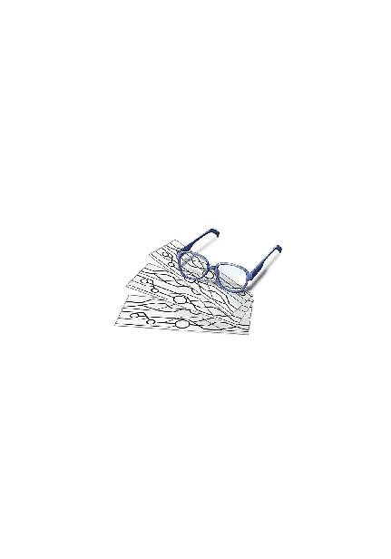
佐島勤
西暦１９ＸＸ年、日本の片田舎に生まれる。和洋のスペースオペラを糧に少年時代を過ごす。青年時代、ファンタジーと伝奇小説に転向。卒業後、企業戦士（ただし雑兵）として現実世界に魂を売り渡すも、西暦２０１１年、遅れてきたジュブナイル作家として空想世界に帰還を果たす。（本プロフィールには虚偽と誇張表現が含まれています）
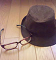
イラスト／石田可奈
西暦１９ＸＸ年生まれ。挿絵は初仕事。本業はアニメーター。過去作としては、『コードギアス 反逆のルルーシュ』『機動戦士ガンダムＵＣ』（作画監督）、『俺の妹がこんなに可愛いわけがない』（総作画監督）など。次回作は『アクエリオンＥＶＯＬ』。
Special Thanks：ジミーストーンさん。末永康子さん。金子恵美さん。

 電撃文庫
電撃文庫
魔法科高校の劣等生③
九校戦編〈上〉
佐島勤
発 行 2015年11月2日
発行者 塚田正晃
発行所 株式会社KADOKAWA
〒102-8177 東京都千代田区富士見2-13-3
03-3238-8745（営業）
http://www.kadokawa.co.jp/
プロデュース アスキー・メディアワークス
〒102-8584 東京都千代田区富士見1-8-19
03-5216-8399（編集）
http://dengekibunko.jp/
本書（電子版）に掲載されているコンテンツ（ソフトウェア／プログラム／データ／情報を含む）の著作権およびその他の権利は、すべて株式会社KADOKAWAおよび正当な権利を有する第三者に帰属しています。
法律の定めがある場合または権利者の明示的な承諾がある場合を除き、これらのコンテンツを複製・転載、改変・編集、翻案・翻訳、放送・出版、公衆送信（送信可能化を含む）・再配信、販売・頒布、貸与等に使用することはできません。
(C)2011 TSUTOMU SATO
※2014年4月25日発行の電撃文庫『魔法科高校の劣等生③ 九校戦編〈上〉』16版に基づき制作